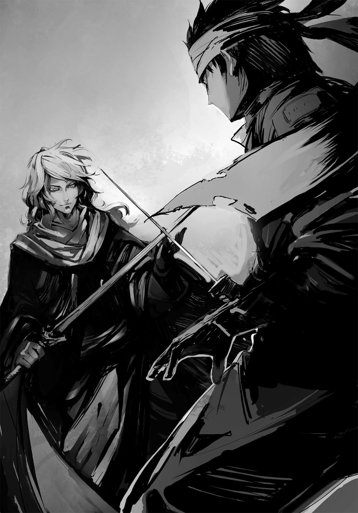

| ファング・オブ・アンダードッグ 2 烏の嘴 | |
| アサウラ | |
この本は縦書きでレイアウトされています。
また、ご覧になる機種により、表示の差が認められることがあります。

 ダッシュエックス文庫DIGITAL
ダッシュエックス文庫DIGITAL
ファング・オブ・アンダードッグ ２
烏の嘴
アサウラ
●プロローグ『封鎖された都市と碧の剣士』
噂は聞いていた。遠方の土地の出来事と思い、ほとんど気にせずに「怖いね」と口にするだけだったのに、ついにこの地にまでその影響が及ぼうというのか。
夕暮れの川原に生える木々、その内の一本の根元で、男が一人ハエにたかられて死んでいた。
鼻と口を布で覆った幾人もの木こり達が次々に彼の周囲の木々を切り倒していく。
スモモは人垣の中で顔をしかめ、数十メートル先の男の死体を、皆と同じように見やった。
「そこ、近づくな！ 感染したらどうするんだ!?」
街の治安を守る警備団の一人が、槍を持った手で威圧的に野次馬を追い払っていく。
木こり達が死体の周りの木々を切り終えると、準備完了との声が上がった。
人々の視線の中で、顔を布で覆った役人が男に油をかけていく。
死体の処理が始まろうとしていた......まさに、その時だった。
男が蠢く。生きている。ハエを纏わせながら気を失っていたものの、顔に油がかかって目覚めたのだ。だが、全てが遅かった。油をかけていた役人は気がついたものの、野次馬の大半も、そして離れた場所で松明に火を灯していた役人も気がついていない。
「あの人、生きてるよ！ ねぇ!?」
目の良かったスモモは確信を持って声を上げ、油をかけていた役人も松明を投げようとしている同僚に慌てて手を振ってやめるようにジェスチャーするが、間に合わない。
スモモは近くにいた警備団の槍遣いに「あの人生きてる！」と声を放つ。その男は鎧を纏っているというのに素早い動きで野次馬から当の男へと向き直り、その目を細めた。
松明が、宙を舞っている。油の瓶を持った役人はすでに男を諦め、誤って延焼しないよう距離をとりだしている。もう、誰にも止められない。
「チッ、仕方ない」
男が目にも留まらぬ速度で槍を振りかぶり、そして、放つ。槍は凄まじい勢いで宙を駆け抜け......そして、男の頭を貫き、木の幹に突き刺さったのだった。
今度こそ紛れもなく死体と化した男が炎に包まれるのを、スモモは信じられないものを見るような目で見やっていた。
「生きていたとしても、あの噂の疫病をどうこう出来る手段がない以上、どうしようもないだろう。せめて楽に死なせてやるべきだ。......チッ、槍が一本無駄になったぞ」
燃える男から木に火は移り、それは巨大な蠟燭の炎のようになって辺りを照らした。木こり達は斧をバケツに持ち替え、川から水を汲み、役人達共々炎を囲むが、十分な範囲の木々を事前に切り倒していたので野放図に燃え広がることはなさそうだ。
「見世物は終わりだ。もうすぐ日が暮れる、警備団の誘導で街へ戻れ。念のため今着ている衣服は帰宅後、しっかりと洗うように」
人々は口々に疫病の恐ろしさを語りながら帰る中、スモモは一人、誰とも口を利かず、燃えている男の死に様を思う。放り投げられた松明が迫り、そして男の槍が飛び来る中......彼は何かを言おうとしていたように見えたのだ。
――違う、疫病じゃな......。
油が気管に入ったのかわからないが、ほとんど声になっておらず、悲鳴がたまたまそんなふうに聞こえてしまっただけかもしれない。
全部勘違いかもしれない。だが、男が死んだのは間違いなかった。
スモモが住むこの地から、馬車で北へ幾日かの所にある街、ナサノジの住人。疫病が発生し、周囲の街々によって強制的に封鎖され......そして、壊滅した街の者。荷物でそれを確認された瞬間から、警備団の槍遣いが言ったように、こうなるのは避けられないというのはわかる。
だから、せめて最後に何を言いたかったのかぐらいは聞いてあげたかった、とスモモは思う。
念のため風下を通らないように、遠回りしながらスモモ達数十人は帰路を歩み、そして、城壁に設けられた門を抜ける。
鐘が鳴っていた。城壁都市ヤリゼイサ、その城壁と共に街の象徴である、教会の鐘だ。
それは昼を知らせる時報ではあったが、今のスモモ達にはあの死した男への弔鐘を思わせた。
街の創建初期に建てられ、人々の心の支えでもあるその鐘の音は、悪いものを遠ざけ人々を守るとされている。
そんな邪悪なるものを払う神聖な鐘と、鵺が当たり前にそこらを跋扈していた時代に作られたという、都市をぐるりと囲む高さ十数メートルもの強固な壁......何百年と人々に平安をもたらし続けた守り神であるが、果たして古びたそれらで病の侵入を防げるか否かは、スモモにはわからなかった。
これより数週間後......その城壁都市ヤリゼイサは壊滅する運命にあったが、それを知る者は、この時、まだ誰もいない。
１
噂は聞いていた。遠方の土地の出来事と思い、ほとんど気にせずに「怖いね」と口にするだけだったのに、ついに自分にまで猟犬の牙が及ぼうというのか。
グプタはカウンターの奥でグラスを拭くバーテンダーにもう一杯バーボンを注がせ、ストレートのそれを一息に飲み干した。溢れるスモーキーな香りが喉を焼いて鼻から抜ける心地良さと贅沢を嚙み締め、彼は飲んだ数倍の額をカウンターに置いた。
受け取れないと言う律儀なバーテンダーに髭面のグプタはにこやかに笑う。
「後でまたもう一杯やりに来る。その前払いさ」
バーテンダーは困った顔をするものの、実はこの額の金に見合うとっておきのがあります、と小声で口にしつつ受け取ってくれた。
いい店だ。生きていれば、またこのカウンター席に座ろう。そう思った。
グプタはカウンターに立てかけておいた刃渡り八〇センチほどにも及ぶブロードソードを腰に帯びる。すると、それに合わせたようにカウンターの隅に座り、バーカウンターでコーヒーだけを頼んでいた変わり者も金を置いて席を立った。
グプタは彼の脇を抜け、店を出、そしてそのまま街から離れていく。
隣街へと続く人気のない暗い夜道を歩み、街を見下ろす丘の上に至って足を止めた。
いい月が出ている。こんな夜は見晴らしの良い、開けた丘の上がいい。うるさい虫の声も、その辺りなら多少はマシだった。
「意外に律儀なもんだな。てっきり、噂通り、すれ違いざまに斬りに来るのかと思っていたが」
グプタが振り返ると、一人の青年が月明かりに浮かび上がっていた。
身長は一七五センチ程度の、細身。剣を持つ者としては少々物足りない体格だが、纏った気配と体の動きからして相当に鍛えているのが窺えた。
力よりも技で斬る、そういう剣術なのだろう。
和の趣向のあるジャケットを羽織り、古代のデザインを踏襲した靴を履き、眼鏡をかけている青年。腰に、打刀としては幾らか長めのものを帯びているが......それより目を引くのは首に巻き、風にはためく碧いマフラーだろう。碧の猟犬、その噂に違わぬ姿だった。
彼はマフラーで隠していた口元を露にし、軽く目礼する。
「貴方を剣士だと見込んだので。小細工なしに戦うのが礼儀かと」
嬉しいことを言ってくれる。グプタは人として四〇年、陣士として一八年を生きてきた。しかし剣士としては三〇年以上になる。
だが、陣の力を得て以降、その素性を知れば誰も剣士とは見てくれなかった。
陣士は如何なる技や経歴を持っていたとて陣士でしかない。だが、この男は剣士と呼んでくれた。それは思いの外グプタの心を擽る。
「お前も剣士なのだな、罌粟の碧き猟犬よ。だからこそ、か。......いいだろう」
丘の上、十数メートルの距離を置いて二人の男が抜刀し、互いの刃を月明かりに煌めかせた。
眼鏡の男は雑に構えているように見えたが、グプタが気を放って様子を窺うに、そういう型なのだと知れた。崩れているように見えて、どこも崩れていない。如何ようにも動けるように、そして瞬時に全力を出せるように、あえて力を抜いているのだろう。何より、収まりの良い型はそこからの動きを読まれやすいものだが、それを嫌っているのかもしれない。
虫の声を乗せた風が吹いている。心地良い秋の風だった。碧いマフラーが揺れている。しかし男二人はピクリとも揺れなかった。
剣先を挟んで視線が絡む。変わった青年だと、グプタは思う。自分を狩りに来たはずの彼の目には、どこか敬意のようなものが込められている。
それはもう、縁はないと思っていたものだ。
......捨てた故郷が戦争をしていた。陣士の戦争介入は禁止されているにも拘らず、小さな祖国を救うためにグプタは参戦し、その力を使ってしまった。
せめて一介の剣士として参戦していれば、と今でもグプタは思う。
戦場において陣の力が行使されたとの情報により〝総本山〟が真偽を確認した後、敵国に対し、謝罪として多額の支援金を渡したのだ。
その時の金を利用され、祖国は経済封鎖を受けることになってしまった。
それにより民は国を捨て、また残った者は餓死の憂き目を見ることとなった。
全ては、総本山のせい......否、陣士であるグプタのせいで、だ。
グプタは総本山の管理を離れ、人として、そして陣士としての故郷を失って以降、はぐれ陣士として流れ歩いていた。
違約の果てに祖国を潰した張本人であるグプタを、敬意を込めた目で見てくる者が今、どれだけいるのか。誰もいはしないだろう。一時は守ったはずの祖国の者達でさえ、憎しみを込めて睨み上げてくることだろう。
そんな中、全てをわかった上でなお、こんな目をして剣で向き合ってくれる男がいる。
嬉しかった。この男なら、自分の気持ちを理解してくれるような、そんな気がした。
陣士でありながら剣士というだけではない。この青年は、自分と同じように傷を負って生きている。だからこそ、わかってくれる。......そんな、気がした。
傷の舐め合いの心地良さにくすぐったさを覚える。しかし、そんな気持ちとは裏腹に、グプタは全身に玉の汗をびっしりと浮かべ、うるさかった虫の音すら聞こえなくなっていた。
今のグプタに外野の音を聞く余裕など欠片もない。
このままでは剣を振る前に押し負ける。それを察したグプタは機が熟しきる前に、声を張り上げ、距離を詰めた。青年、緩く正眼に構えたまま、動かない。
グプタが振りかぶる。ブロードソード、その切っ先で青年の頭を狙う。真っ直ぐに、雷光が地に落ちるが如くの全力の一撃。
青年、剣の切っ先を下ろしつつ、急激に間合いを詰めてくる。その動きは驚嘆するほどに速く、伸びがいい。
月の光を浴びた二本の剣が、夜の闇に二つの軌跡を描き......そして、二人の男が馳せ違った。
互いに剣を振った体勢のまま、背を向け合ったまま、秋の風を浴びた。
「......名を」
グプタが訊いた。どこかで虫が鳴いている。それが酷く煩わしかった。
「アルク」
碧の猟犬......否、碧の剣士、アルク。
グプタはその名を耳で捉え、しっかりと胸に刻み......そして、地に伏した。
ファング・オブ・アンダードッグ
人物紹介＆用語解説
アルク

陣士。〈炎〉〈波〉の陣を有する。元々は剣豪一族の府津羅の次男坊であったが、故郷を捨てて陣士となった。愛刀は兄から贈られた通称『ナマクラ』。
ユニ

陣士。アルクの相方。〈陣〉〈封〉の陣、そして大きな狐耳と尻尾を持つ。故郷から奪われた〈鵺〉の陣を追う使命を帯びている。甘味が好物。
府津羅頼雅
アルクの兄。最強の剣士と謳われる府津羅流現宗主。既婚。愛刀は『白光鳳』。
ソラ
陣士。〈飛〉等の陣を有し、主に物や手紙の運搬を仕事としている。アルクの友人であり、彼の先輩という関係に近い。故郷に彼女がいるらしい。
罌粟
総本山のトップであり、最古にして最強の陣士。永遠の命を有する通称「眠り姫」。
イリス

陣士。罌粟の相方にして実質的に総本山のナンバー２。罌粟のためにその身の全てを捧げている。
円

烏。様々な技能を習得しており、その一つとして府津羅流を学ぶため頼雅に師事し、アルクと接触した。双子の弟、斛がいる。
【陣】
いにしえの日本人が編み出した技術。体に薬物及び漢字の焼き印を入れることによって、漢字一文字につきその字が表す能力を有することができるのだが、それには生まれ持った適性が必要となる。〈何を〉〈どのように〉〈どうするのか〉というように、複数の陣を組み合わせて使用するのが基本。世界が滅んだ大戦争のきっかけになったとも言われ、そのあまりの力により「神々の力」「悪魔の力」といった呼ばれ方をする場合もある。
【総本山】
陣士のみが暮らす世界唯一のエリアで、最古にして最強の陣士・罌粟が支配する土地。陣士になるための試験もここで行われ、合格者はそのまま総本山に住まうこととなる。
【烏】
反陣士組織。人に扱いきれぬ陣をこの世から消し去り、平和をもたらさんとしている。陣士は発見次第、殺害する方針を採るなど、極めて過激な武闘派である。
【鵺】
かつての大戦時に作り出された生物兵器であり、その大きさ、形は様々。本来自然界に存在しないそれら化け物の類をまとめてそう呼ぶ。人工的に作られたものだが、現在生きているものは基本的に、自然繁殖してしまったもの。
●１章『来訪者』
隠す気はないようだった。
どこから俺を狙っていたのか。考えられるとすれば、俺がグプタを斬ったあの辺りからか。
考えてみるにあり得る話だと、今更思う。
グプタはまるで自ら死を望むかのように、その存在を隠そうとしていなかった。流れ歩きながら、まるで追ってこいと言わんばかりに陣士としての痕跡を残していく。だからこそ、さほどの苦労もなく俺は彼と相対し、愛刀を抜くことが出来たのだ。
猟犬としての仕事は牙を剝いて相手に喰らいつくよりも、相手を間合いに捉えるまでが難しく、時を喰う。だからこそ......こういう表現は彼に対して礼を失する気はするものの......グプタは比較的容易い相手と言えた。
だが......それは〝彼ら〟とて、同じではなかったのか。
〝彼ら〟もまたグプタの命を奪わんと幾度か襲撃を仕掛けるも、退けられ、仕方なく監視しているところに俺が現れて仕事を為してしまった......そんなところだったのかもしれない。
木の根に背を預け、刀を肩に立てかけた体勢で眠っていた俺は瞼を開き、地面から尻を上げる。熾になっている焚き火に土をかけつつ、刀をベルトにつけた金具に通して、腰に帯びた。
外していた眼鏡をかけると......来た。
遠くから俺を意識しながら気配を放っていた男。いや、少年か。
森の中でいくらか開けたそこ、俺が今宵の寝床としていた場に現れたのは、思いの外若く、俺と同じ一七かそこら。一つほど下だろうか、ともかく、予想以上に若いのが来た。
「陣士は二人一組だろ。もう一人はどうしたんだ？」
夜の闇によく馴染む......そんな色で統一された衣服だった。頭に濃紺のバンダナのようなものを巻き、防御力よりも動きやすさを優先させた戦闘服。
如何にも〝彼ら〟が好みそうな格好である。
だが違和感が強い。もし、〝彼ら〟ならこんな堂々とやってくるとは思えなかった。
「総本山の陣士、碧の猟犬、アルクだな？ ......手合わせ願いたい」
「その前に訊く。......小僧、お前、〝烏〟か？」
反陣士最大派閥組織にして、最大の暗殺集団......烏。
陣士が、その拠点たる総本山を出れば常に彼らからの暗殺を警戒せねばならない。
だが、彼らはあくまで暗殺という手法を採る。俺が猟犬としての仕事を始めて以降、幾度か襲撃を受けたが、全てその類の攻撃だった。では、今回のこれもそうするための罠なのか。
「小僧と呼ばれるには歳が近いぜ。一六だよ、アルク。......斛だ」
自分から名乗る烏など、聞いたことがなかった。斛は腰に帯びていた剣を抜く。やや短い、片刃直刀の、細身の剣だ。軽くて扱いやすそうである。
俺はいくつも疑問を頭に浮かべつつも、ナマクラを抜いて、剣先を下げた状態で彼を迎える。斛もまた、右手に剣を提げたまま構えるでもなく当たり前に歩んでくるだけである。
足音はさすがは烏というように静かだ。だが、その姿は自然体。俺が使う、府津羅流の崩しの型よりも、ずっと。ただ拾った木の棒を持って歩いているかのようだ。
月明かりが差し込む暗い森の中で、俺達は剣先を下げたまま見つめ合う。
斛が不意に足を止める。眼を見開き、口に薄く笑みを浮かべた。
たいしたものだ。彼が足を止めたのは、俺の剣の間合い、そのギリギリ外。あと掌一つ分前に彼が踏み出せば、その瞬間に斬れただろう。
暗殺を主とする烏にしては、不思議なほど剣士としての鍛錬を濃くやっている。
それも金持ちの道楽や、子供が心身の成長のために行うものではない......誰かと殺し合うためのものを、だ。
烏は殺す技術しか使わず、学ばない。だからこそ、烏は仕掛けてその初撃で相手を殺せなければ即座に退く、そんな手法を好む。
だが、斛が身に宿しているのは殺し合いの技術。
違和感を抱きつつも、向こうがその気ならば相応に殺し合おうと、俺も覚悟を決めた。
陣士としてではなく、剣士として。
覇気を放つ。斛はそれを受けて即座に重心を落とすと共に柄を両手で握って頭上へ上げた。上段の構え。
いい構えだった。だが、妙に綺麗でもある。まるで打たれて磨かれたばかりの真っ新な刀剣を思わせる構えである。どこにも乱れがなく、曇りもない。綺麗、しかし......それ故に、脆くも見える。先程無造作に歩いていた時の方がいくらも脅威を感じられた。
......それで、わかった。
「どうして、烏として戦わずに剣士として相対する、斛」
「アンタは剣士なんだろう？ なら、こうやってやるのが礼儀ってもんかと。きちんと府津羅の剣も見てみたいしな」
斛が額に汗を浮かべながら強がるように、笑みを見せる。それで俺も思わず笑ってしまった。
「お前はやはり小僧だよ、斛。......けど、いいと思う」
恐らく斛は烏としての暗殺技術はしっかりと身につけてはいる。だからこそ、あの気配のない無造作な歩きを見せた時には底の知れない気配があったのだろう。
だが、それと同時に剣もしっかりと学んでいる。
......そして、それを試したくて仕方ないのだ。俺とグプタ、陣士でありながら剣士としての立ち合いを見て......自分もマネたくなったのかもしれない。
だから、烏ではなく剣士として、来た。その子供っぽさは、純真さは......相対すると気持ち良くなるような斛の心は、捻くれて育ってきた俺には好ましかった。眩しい、と言う方が正しいかもしれない。この夜の森の闇に囲まれながら、思わず目を細めてしまうほどに。
「......行くぞ、斛」
俺は剣先を右に下げたまま一気に間合いを詰める。兄からしこたま鍛えられたせいもあって、初動の速さには自信はあったが、烏である斛にはさすがに対処された。
俺が踏み込むと同時に、斛は掲げていた剣を振り下ろし、間合いを詰めさせる前にその直刀の切っ先でこちらの頭頂部を狙ってくる。......その素早い動きを、微笑ましく思う。本当に斛は俺とグプタの一戦をしっかりと見ていたのだ。
だからこそ、彼はあの時と同じように、間合いを一気に詰めてからの斬り上げが来ると予想し、即座に対処出来るように準備していたのだろう。
誰かにそこまで観察されるというのは、悪くない......と、少し思う。
斛の直刀が頭上に迫った瞬間に俺は左靴の踵を地面に打ち込むようにして急停止すると共に、切っ先を下げたままのナマクラを擡げた。
振り上げるような勢いで、金属の塊である柄の先――柄頭を斛の剣、その切っ先に叩きつける。
夜の闇に火花が散った。渾身の力が込められていたであろう直刀は弾かれ、その反動に引っ張られるように、斛が今一度頭上に得物を掲げてよろめいた。
俺のナマクラも弾かれるが、その際の反動を利用して、素早く右下段に引き絞る。
地を抉って体を止めた左足を軸とし、今度はそこに体を引っ張らせ、俺は間合いを詰めると共に、今度こそ本当に右下から左上への斬り上げを放つ。斛、焦りつつも左手を柄から離して下がる。だが、それでもナマクラの切っ先は彼の上着の一部を斬り裂いた。
俺はそのまま斬り上げたところから刃を返して斬り下ろす。顔を歪める斛は直刀を横たえ、峰を左手で支えるようにして受ける。火花。叩っ斬れるかと思ったが、刃が触れた瞬間に斛が腕、いや全身から力を抜いて柔らかに受けてこちらの斬撃の勢いを削いだ。
見事だった。だが、攻めの勢いは明らかに俺に残ったままだ。
受けきった次の瞬間、斛は素早く横たえていた剣で俺の刀を押しやり、鍔迫り合いにもっていく。
それでこちらを押す、はたまた押しやった際の反動で自分が後方へ飛んで距離を取り、状況を立て直そうとしているのだと彼の慌てる瞳は物語っていた。
斛が鍔元で押し込んでくる。俺はそれに逆らわずにあえて腕の力を抜いて引き、斛の思惑を崩す。と、同時に彼のがら空きになっていた腹部へと蹴りを放った。
斛、ぶっ飛びながらも地面を意図的に転がり、距離を取って立ち上がりつつ構える......が、その時、俺はすでに彼の頭上に飛び上がり、その頭頂部へと刀を振り下ろしていた。
体重に勢いの加わったその一撃は、先程のようには受けられないと悟った斛は、刀の柄からやはり左手を離して、こちらの刃をギリギリで身を反らすようにしてかわす。
俺が剣を振り下ろしつつ着地した時、互いの息を肌に感じるほどに間合いは詰まっていた。
俺は斬るでなく鍔元を押しつけるようにして今一度鍔迫り合いを誘う。斛が素直に応じると、今度は力を抜いたりはせず、逆に、全力で押し込んだ。
斛が突き飛ばされて後方に下がり、その背を木の幹にぶつけた。逃げ道を塞がれてもなお、斛は俺を見つめながら離れかかっていた左手で柄を握り直し、乱れのない構えを取る。
そんな彼の様子に、俺はナマクラの切っ先をそっと下ろした。
「やめろよ、斛。お前の本当の得意とする技はそういうんじゃないんだろう？ どうせ剣でやり合うなら、全力でやろう」
「......何故、そう思うんだよ、アルク」
「今までの剣は教えられたままで使ったことがないって感じだったよ。......本当は右の片手持ちで、体術と合わせるのがお前の技なんだろう」
斛はまずい状況になると躊躇いなく左手を離して状態を持ち直そうとしていた。それが気になったというのもあるが、それ以上に四肢の動き、その素早さや柔軟さが俺にそう思わせた。
彼は、かなり動ける。だが、両手で剣を握るとその動きは大きく制限されてしまう。
何より真剣で向かい合っていれば、自然とわかることだろう。
命を懸けた立ち合いの数瞬は、言葉を尽くした一晩よりも濃密に相手と交われる。
こりゃすげぇ、と斛は笑うと、顔に流れていた汗を左手で拭う。
「アンタとあのグプタだかいう陣士の立ち合いを見たらさ、心が騒いじゃってさ。一度はガッツリと剣を学んだ身だ、あんなふうに斬り合ってみてぇって。......ちゃんとやってたつもりだったが、ダメだな。勝てねぇわ。さすがに姉ちゃんが気にするだけはあるぜ、アルク」
......なに？ そんな疑問を俺は口にしようとした。だが、斛が直刀を握る右手をダラリと下げ、足を肩幅ほどに開いて重心を落とした瞬間、俺の口は閉じられ、反射的に、体に緊張が走って無意識に正眼に構え直していた。
――ここからが本当の勝負......それはわかった。
だが、心が乱れる。斛が子供っぽい目つきをやめて、それこそ磨き上げられた刃物のような鋭くも透き通った目をした時......それとかつて対峙したのを思い出したのだ。
......錯覚だろう。だが、かなり似ている。......彼女に。
心に焼きつくあの透き通った、無垢な瞳に......。
だが、もう言葉を交わすような余裕はなかった。
斛から唐突に打ち出された猛烈な速度の突きをかろうじてかわし、ナマクラを振るうも彼のあまりの速さにかすることもなく馳せ違――いざまに、脇腹に蹴りを喰らって俺は地を転がる。
覇気を放ちながら立ち上がるが、斛、即座に迫り来る。
斬り上げてきた直刀をナマクラで弾く。右手一本の弱い一撃だ。さほどの難はない。
そのまま詰まった間合いで今度は俺が突きを放つのだが、斛はかわすことなく、ナマクラの腹を左手の掌底で横から叩いて軌道をずらしてやり過ごしてみせた。そのままの動きで彼の左の肘打ちが俺の顔面に叩き込まれる。
眼鏡がぶっ飛び、鼻血が噴き出る。仰け反りかけるも、俺は踏ん張り、衝撃に体を任せない。
さすがのそれは斛の予想を超えていたようで、肘打ちを放ったまま、一瞬動きが止まる。そこに俺はありったけの力で頭突きを放った。斛も慌ててかわそうと仰け反ったが、間に合わずその顔面に俺の頭が強烈に打ち当たる。彼もまた鼻血を噴き出す。
斛が仰け反りながら距離を取ろうとするのを察し、俺は彼の足の甲を踏みつけつつ、横に流されていたナマクラを引き寄せ、その柄頭を斛の肋に叩き込む。骨を一本いったかいかないか。そんな手応えを感じつつ、こちらも立て直すために後方に大きく飛んで距離を置く。
しかし飛んだ瞬間、倒れゆく斛の直刀が振るわれ、その切っ先で右腕を僅かに斬られた。
距離を取った状態で、互いに構え直した。共に一撃を喰らって鼻血を垂らして向かい合う。その微妙に無様な状態に、思わず二人して笑いそうになるのを堪えつつ、覇気を放ち合う。
こういう立ち合いは、いい。剣を持つ者同士にだけ許された交わりだ。
初めてそれを知ったのは故郷の道場裏、山の中で......彼女とのものだった。
目の前の斛と、どこか似た瞳をした彼女......マドカ。
彼女が懐かしい。いつかまた世界のどこかで、と、約束とも言いきれない曖昧な言葉を最後に、別れたきりだった。
そんな彼女と不思議に似た瞳を持つ男が現れたのは、一体どういう意味があるのか......。
殺し合いの最中に、そんなことを思ってしまう。
「......何、余所事考えてんだよ、アルク」
斛に言われ、俺はハッとしてマドカへの思考を断ち切った。彼は鼻血を拭いつつ、どこか不満げに右手の直刀を寝かせた状態で引き絞るようにし、突きの構えを取ってみせる。
先程の斛の突きは恐ろしく速かった。彼の身体能力が遺憾なく活かされると共に、右手一本ということでその伸びもいい。気を抜くと即座にやられるだろう。
俺は正眼に構え、意識を斛へと向ける。笑う余裕も余所事を思う余力も何もかもを目の前の男に叩きつけるようにして、集中する。
辺りの気配を感じることすらやめ、斛を斬る、その一点に全てを集中させる。
そして、斛もまた、応じるように全力を俺に向けてくる。
相手を斬る、ただそれだけのために自分の全てを擲ち合う......その心地良さは、絶対のもの。
木々のざわめきも、小動物の気配も、虫の音も失せ果て、静寂だけが辺りを包む。
俺と斛だけの世界へと、全てが狭まっていた。
自分の全てを目の前の相手に捧げる。その気持ちを手から柄、そして刃へと行き渡らせ......その刻を待った。互いに潮合いが満ち、命をやり取りするに相応しい瞬間に向け、鼓動を打つ。
互いの顎先から汗が滴り、口元に自然と笑みが浮かび合――。
「――バカッ！」
耳に飛び込んだその透き通った女性の声に、俺と斛を結んでいた緊張の糸が断ち切られる。
狭まりきっていた世界が瞬時に広がり、あまりの情報量に俺も斛も慌てて辺りを窺う。
立ち合いを始めたのがかなり夜も深い時刻だったが、今は朝月夜の空が見えていた。そこに、何か影が浮かんでいる。まるで巨大なヒトデのような、それ。大中小、様々なサイズのが、複数。それが俺と斛目がけて降り注いでくる。
俺と斛、互いに飛び退り、距離を取りつつ頭上から迫り来た〝何か〟に刀を振るった。
人を斬るのに似た手応え。皮、肉、噴き出る血、そして骨。野太い男のような絶叫が上がる。
一太刀で二体を同時に斬り裂くも、次々に上空から降り注ぐ〝何か〟に対処出来ずに、地面を転がるようにしてかわしにかわす。立ち上がった際に、俺の足を誰かが摑む感触があったものの、見やれば......その、〝何か〟だ。
それは、壊れた人形を子供が遊び半分で組み直したような、あまりに不格好な肉の塊だった。
人間の手足を根元で繫げてヒトデのような形にし、その中央部に人の頭なら丸呑みに出来る程の巨大な口を持つ、そんな化け物――鵺だった。それが十数、いや、二十数体はいるか。
俺は地を払うようにして足を摑んでいた鵺の腕を斬り飛ばすも、木の上から降り来たもの、はたまた一度地に落ちてそのまま這ってきた鵺に次々に全身を摑まれかかる。
斬りに斬って血飛沫を上げさせるが、きりがなく......おっつかなくなってきた。
右手でナマクラを振るいつつ、ジャケットの内ポケットに仕込んであった匕首を左手で取り、鞘を口にくわえて抜刀。それで碧いマフラーの一部を切り離して、その先にしがみついていた鵺を引き離す。
匕首は総本山にあるよろず屋の婆さんのところで買った高級品で、値段相応によく斬れた。
辺りが鵺で埋め尽くされていく中、斛を捜す。彼は、俺よりも巧みに宙を飛び回り、鵺を屠っていく。こうなると身軽な方が有利か。
「遊んでばかりいるからこうなる！ もうっ!!」
またどこかから女の声が聞こえる。その声は、目の前にたかる鵺よりも俺の意識を捉え、辺りを窺わせた。
暗い森の中でありながら、不意に辺りがより一層暗くなる。月明かりが遮られた。見上げれば、そこには十数メートルに及ぼうかという巨大な鵺。そこらにいる奴らをそのまま巨大化させたような......それ。違うのはヒトデのように伸びる手足の間に膜があり、これが逃げ回る俺と斛を一網打尽にしようとするかのようだった。――避けられないか。
「姉ちゃん!!」
斛が声を上げる。わかってるっ、と闇の中から声が応じた時......それは起こった。上空の鵺が何の前触れもなく、十字に裂けた。まるで目に見えぬ巨大な刃で斬ったかのようだ。
俺の視線の中で、血飛沫と絶叫を上げながら四つになった鵺の肉片が落ちてくる。
「遊びはお終い！ 本気で行く！」
肉片が地に落ちて辺りを揺らす中、闇からその声が響く。巨大鵺の肉片を避けた俺の目に、信じられない光景が飛び込んできた。
周囲の木々が、ドミノ倒しのように倒れ、来る。まるでそこらの森は、実は事前に斬り倒した木々をただバランス良く立たせていただけだと言わんばかりに、波のように、轟音と共に次々に倒れ......その波が俺に向かって押し寄せてくる。
何が、起こっているのか。陣か。だが、烏は信念めいた頑なさで陣を嫌う。彼らが使うとは思えなかった。
巨大鵺の肉片の上に立つ俺は、倒れる木々のその根元を見やった。切り株はしっかりと地に喰らいついているのだが......その上の辺りを、斬られている？
そう思った時、かすかに月光を浴びて光る一筋の線が見えた。あれか......!!
「お師匠からいただきし技と〝振動鉄糸〟、たんと喰らえ」
俺は噂に聞いた、烏のごく一部にしか使えぬとされるその武器をかわそうとするのだが、足場は悪く、何より小型の鵺が俺の体を摑んでいた。
鉄糸が迫る。かわせない。ならば、斬り抜けるしかない。厚重ねで長く重いナマクラよりも、素早く応じられる匕首を左手一本で握り、全力で振り払った。
クソッ、匕首の刃が呆気なく切断された！ 俺は身を捩って首を獲りに来た鉄糸をかわす。
「アルクッ、それは斬れぬ！ 全てかわせ!!」
また甲高い女性のような声。しかし、先程までのものとは違う声だ。
幾本かの鉄糸が月に煌めきながら縦横無尽に辺りを飛び交い、鵺を、そして木々を切り払いながらも俺を狙ってくる。
俺はひたすらかわしにかわす。そうしている間に、森の空気に油の匂いが立ちこめ、倒れた木々の中から唐突に火の手が上がった。
俺は即座にその炎へと左手を伸ばし、その先に青白い光を浮かべる。
――陣である。肩に入れた焼き印が熱くなり、そこに力を吸い取られるのを感じながら〈炎〉と〈波〉の二つの陣を重ねた。それらが砕け、無数の破片となって炎と混じり合う。
「鉄糸使い、どこだ!?」
俺は左手を振り、空を焼くほどの勢いで炎を躍らせた。その光で夜を押しやる。
攻めなければ、負ける。暗闇の中に潜みし遣い手を倒さねばならない。
炎が世界を照らし、生木を焼き、煙を上げさせる中、俺から十数メートル離れた場所に着地した斛の直刀が煌めいた。だが、それは振るった煌めきではなく、納刀の動きの煌めきだ。
「次に会う時まで勝負は預けた。また殺り合おうぜ、アルク。剣士としてな！」
そう言うなり、斛は踵を返して鳥が舞うように森へ向かっていく。逃がすまいとするように炎の波で壁を作ったが、斛はそれすら軽々と飛び越えていった。
さらに炎を追わせようかと思ったものの......斛の向かった先に、もう一人、小柄な女性らしき姿を認め、思わず俺は炎の動きを止めてしまった。
「......陣士アルク。そう遠くないうちに、また......」
その声、その気配......それを俺は知っていた。
「マドカ、君なのか......？」
俺の声に、その影は一度立ち止まって振り返った気配があったものの......それは斛と共に、炎でも照らしきれぬ深い闇の中へと姿を消してしまうのだった。
代わりに炎の明かりの中に現れたのは、二人よりもさらに小柄な影。
「烏は飛び去ったようじゃ。......残った鵺を焼いたら炎をまとめよ。大火事になるぞ」
そいつは少女のような赤い袴姿で、キツネのようなモフモフの尻尾を揺らし、大きな耳をピクピクと動かして辺りを窺い、猫科の肉食獣のような鋭くも大きな黄金の瞳で俺を見ていた。
どう頑張ってもかわいらしい少女にしか見えないが、自称一四歳の彼はユニ――。
「それで？ マドカとはなんじゃ、アルク？」
――俺の、相方だった。
１
斛との立ち合いから夜通しで俺達は進み、翌日の昼には待ち合わせとなっていた場所へと到達していた。予定ではその次の日の夜が約束の日時である。
森を抜け、川を越え、いくつかの集落を横目にして辿り着いたのは古代の遺跡がいくつも残る廃墟だった。大昔は高層ビルとやらが立ち並んでいた大都市エリアらしいが、今では固めた大地を突き破って芽吹いた緑にその身を沈め、小山のようになっている瓦礫だけが、気位高げにその存在を主張していた。
「一日早いが、果たしてあの男は来ておるのかの」
リュックサックを背負っているユニはいささか疲れた顔で鼻を擦る。
彼曰く、大昔に大都市だったエリアはかなりの時を経てもなお、独特の匂いがするそうだ。
ユニは瓦礫が積み上がって出来た小山に上ると、その大きな瞳で、そして大きな頭上の耳で、辺りを窺った。〝彼〟を捜すのと同時に、敵を警戒しているのだ。
本格的な烏の戦闘部隊と遭遇し、その息の根を止められなかったとなれば、時を置いてから追撃が来るのは彼らの常套手段と言えた。だからこそ、ユニはそれを警戒しているようだが......俺としては心配していなかった。恐らく奇襲で来るとは思えなかったからだ。

烏は基本、夜の闇を好むというのもあるが......あの斛という男が俺に暗殺的な手段を採るとは思えない。少なくとも、まだ剣の勝負がついていないのだ。
彼は間違いなく次も正面から来る......そんな確信を俺は抱いていた。
「ふむ。まだ来てはおらんようじゃな。烏の気配もない。......では、アルク、この間におぬしに詰問でもしようかの」
「......何だよ」
「マドカとはなんじゃ？ そして、何故烏とあのような一騎打ちを？」
リュックから水筒を取り出しつつ、昨夜、俺が曖昧にしていたことを仕方なしに説明した。
マドカは故郷で府津羅流を習っていた女であり、そこを出る直前に斬り合いをした相手だと。
そして、一騎打ちに関しては......これは剣を持たないユニにはわかりにくいだろう。
実際説明しても、ユニは「合理性のない話じゃ」と小馬鹿にしながら、瓦礫の山からピョンピョンっと兎が跳ねるようにして降りてくる。
「それなりに技術と自信を持ってしまうと、どうしてもそれを確かめてみたくなるんだ。より強い奴と、はたまた自分と同じような奴と......自分はどこまでなのか、と。......何よりユニにはわからないだろうけれど、腕試しをしたくなるのは男の性なんだと思う」
「山で木でも鵺でも斬っておればよかろうにの」
「剣は、剣でしか計れないよ」
ふむ？ と、やっぱり納得しきれないような顔をして尻尾を揺らしながら俺の前を通り過ぎ......それから、「あ」と声を上げてピタリと動きを止めた。振り返るなり彼が履いている編み上げブーツのつま先が、俺の臑を蹴る。酷く痛くて、声を上げてしまった。
「ボクも男じゃ、アルク！」
ユニは不満げな顔をするのだけれど......何だよ、一度するっと流してたクセに。
俺はごめんごめんと、苦笑いしつつ、臑をさすった。
結局、半年もの間コンビでいるけれど、いまだにユニが男か女か、その真相は謎だった。
陣士はその体に入れている焼き印からどんな陣を扱うかがわかってしまうため、誰もが肌を見せることを嫌う。ユニの故郷では陣士を多く輩出しており、その結果陣士であろうがなかろうが、肌を見せることを極端に嫌うそうで......里を出たユニもまた同じだという。
「まったく、失礼にもほどがあるの！」
俺は今一度ごめん、と言いつつ、彼のくせっ毛の頭を両手でワシャワシャと撫でつつ、大きな耳を揉んだ。旅をして土埃にまみれても、彼の髪からはいつものようにハーブの良い匂いがする。こうするとそれが感じられて、ちょっと、いい。
ユニも頭を撫でられた犬のように、くすぐったいような、満更でもないような顔をしておとなしく撫でられているものの......頰は怒っているのをアピールするように膨らんだままである。
頭から手を離して、両手の指先で彼の膨らんだ両頰を押しやれば、「ブブゥーッ」と吐息が漏れて、お互いの笑いを誘った。
「アレ!? ......おいっちょっ!? お前ら早過ぎねぇか!?」
頭上の声に反射的に俺はユニの頰から手をどけ、ユニも一歩距離を取って上を見る。
......こういうじゃれ合いを第三者に見られるのは、恥ずかしいものである......。
声の主は、瓦礫の山の上に上空から真っ逆さまに落ちてくるものの......その頂上付近で暴風を生み出し、それで、ピタリと空中に止まる。
「アルクが烏の襲撃を受けた。急ぎ、この地から離れたいのじゃ、ソラ」
ユニが若干頰に赤みを浮かべて、早口に言った。
ソラと呼ばれた空から現れた男は四角いゴーグルを外すと、呆れたような顔で俺達を見つつ無精髭を撫で、それからボサボサの頭を搔いた。
「......ちぇっ、せっかく月夜に古の人々の生活を想いながら一杯やろうと思ってたのによ」
ソラが瓦礫の山に着地するなり、腰に下げていたポーチから酒瓶を取り出したのを見て、俺達は呆れてため息を吐く。
大方、前の仕事を素早く片づけて、合流時間までここで飲んだくれる気だったのだろう。
ソラは不満げにその場にしゃがむと、革ジャンのポケットから煙草を取り出し、一本を口に咥える。俺は、瓦礫の山に登って自前のダグラスでそれに火をつけてあげると、ソラが腰に巻いているベルトに、ワイヤーのついたカラビナを取り付けていく。それの端を俺のベルトにも接続する。
ソラが煙草を吸い終わる頃には、ユニも接続を完了し、俺達三人は押しくら饅頭でもするかのように密着していた。
「ったく仕方ねぇな。......そんじゃ、さっさと帰るとするか」
煙草を投げ捨て、それを踏み潰すと同時にソラは目にも止まらぬ速度で陣を発現させ、青白い光の欠片を生み出し......俺達を空の上へと誘った。
飛び上がる瞬間だけ痛くなるほどの衝撃があるものの、一度上空数百メートルまで上り、水平飛行に変わると、二人分の体重が加わっていることもあってか速度はややゆっくりで、風に煽られて苦しいということはなかった。
眼下に木々を眺めつつ、冷たい風の中をひたすらに飛んだ。
「そういやよ、さっきユニは〝アルクが襲撃を受けた〟と言っていたが......ありゃどういう意味だ？ お前ら、別行動していたのか？」
ゴーグルをかけつつ、ソラが尋ねてきたので、俺はグプタの一件について話した。
陣士は通常、コンビで行動をする。それが様々な意味で最も安全だからだ。
とはいえ、二人で行動しているとハナから陣士と疑われるのであえて別行動を取ることもあるが......今回はそれを警戒したわけじゃない。
グプタを狩れ、と命令を受けて以降、彼を追いかけ、彼を知り......そして、当の本人を見て......俺が決めたのだ。
彼は、俺が正面から斬る、と。
「ボクにはわからん理屈でそんなことをアルクが言いだしての。果ては、ボクの〈封〉を小細工などと呼んで......まったく」
「悪かったよ、ユニ。......まぁ、そんな感じで別行動をしていて、合流直前に襲われちゃって」
「なるほどな。ユニの方が襲われなくて良か......おいっ、ユニ、てめぇオレのポーチ漁るな！」
「何じゃ、干し肉に干し魚ばかりか。甘味はないのか？」
甘味で酒が飲めるか！ ソラが喚くように言って、俺の笑いを誘う。
徒歩なら半月強はかかる距離でも、ソラのような〈飛〉の陣を使えば三日とかからない。
俺とユニが〝眠り姫の猟犬〟と呼ばれるようになってから、ソラはこうして俺達の足として仕事をしてくれる。
それはとてもありがたいことであったが、それ以上に数少ない信頼出来る彼とユニの三人で、こうして一緒の時間を送れることが、孤独に生きてきた俺にはたまらなく嬉しい時間だった。
「甘味は総本山に戻るまで我慢だな、ユニ」
そんなことを言いつつも、俺は心のどこかで温かくも仄かに甘い、そんな気持ちを嚙み締めていた。
２
夜明け前の緊急会議だった。
「......全滅した？」
イリスは円卓に着くなり、嫌な報告を受けて顔を顰めた。
巨大な円卓のあるその部屋は天井も高く、かなり広かったが、一〇名の男女が座り、各自秘書を一人、二人連れているので、やや窮屈な印象となっている。
総本山と呼ばれるエリア内の山、その地下に設けられた会議室だった。古代の電子機器がいまだに生きているそこは、窓代わりに薄く巨大なモニターが壁にいくつも貼りつけられており、そこには辺りの地図をはじめとした様々な情報が映し出されていた。
円卓が光りだし、その天板に映像が現れる。総本山より数百キロ先にある国の、とある街のものだった。反陣士組織の活動が活発、または街そのものが反陣士思想に染まっていることを示す赤色の文字で書かれた街の名は、城壁都市ヤリゼイサ。
円卓に着いた者達がその天板の上に資料を並べつつ、次々に口を開く。
――いえ全滅かは未確認ですが、その可能性は濃厚です。音信が途絶えてかなりの時間が経ちつつあります。――例の街の疫病事件とはやや距離が近いな。......あぁ、それで、だったか。――ヤリゼイサに入るとの連絡以降の動きは、不明です。中に入れたのか否かも......。――いくら疫病だ何だといっても、反陣士思想を抱く小国の街にこちらから医師を送り込んだのは少々勇み足でしたな。兵はまだ補充が利くが、医師はそうはいかない。総本山で学び、古の技術を持つ一流ともなると尚更だ。――命だ。命に区別はつけられぬ。――リスクがあったのは百も承知、それ故に戦闘技能を持つ陣士......セルゲイだったか、彼を護衛として随伴させたのだぞ。――それが逆に仇になったのやもしれません。近くで中隊規模の烏が動いていた痕跡があります。しかし、その近辺には彼らの他に陣士はいなかったはずです。コンビで行かせたがために見つかってしまったのやも......。
イリスは瞼を閉じ、椅子の背もたれに体を預け、これまでの経緯を頭に思い浮かべた。
元々は二カ月前、疫病が起こった街、ナサノジに人を送ろうとこの会議室で決めたことから全ては始まっている。
古代の技術をいまだに維持しているのが自分達だけである以上、たとえそれが反陣士思想に染まった土地であろうが何だろうが人道的な対処を行う......それが総本山の基本方針である。
全陣士の意見を聞けば、自らに敵対する者達を救うために命を懸けることに不満を覚える者も少なくないだろう。むしろ、多いと言えるかもしれない。しかし、パートナーにして総本山のトップ、眠り姫とあだ名される永遠の命を有する罌粟が、陣の力は人を救うためのものであることを願っている以上、イリスは全力でそれを遂行するつもりでいた。
だからこそ、総本山から距離があり、そして何より相手が疫病という時間を喰らって肥大化する巨大な敵であったことから、状況を把握するなり、助けを求められる前に人を送ったのだ。
しかし、それでも間に合わなかった。医師・イリヤとその護衛であるセルゲイの二人が辿り着いた時には、すでに街は壊滅した後だったのだ。
ナサノジに疫病が蔓延する中、街全体を隔離する封鎖処置が周辺の街々の決議によって半ば強引に採られたものの......死に行く街から脱出しようとする者達が後を絶たなかったことから、集団ヒステリーが起こり、火を放たれたらしい。
その後、イリヤ達はサンプルを回収して帰路についたものの......その途中で、同じ疫病が発生したという噂を聞きつけ、城壁都市ヤリゼイサへと進路を変えたのだ。
明日にも街へ入る......という報告を最後に連絡は途絶えている。
ヤリゼイサは疫病の発生でナサノジ同様に、封鎖状態にあるのだという。とはいえ、こちらはナサノジのように周囲から燃やされたりしないよう、警戒して自ら城壁の内にこもって外部からの一方的なアクションを避けよう、という状態のようだ。大昔に建設された鵺対策の城壁が意外なところで役に立っている。
イリスは瞼を開き、今一度円卓上の地図を見る。件の烏の部隊が動いた気配があったという位置を表示させる。ナサノジとヤリゼイサの中間地点で、医師達が通ったであろう道でもある。
......だが、時期がおかしい。烏が動いたと思しき日は、医師達はとうにそこを通り過ぎた後なのである。逆ならば、わかる。医師達が襲撃を受けつつも、これを凌いでヤリゼイサに向かった、と考えられるだろう。
だが、逆とは？ 医師達が過ぎ去った後で、烏達はその嘴で〝何を〟突いたのか......。
烏が組織立って動くとすれば、確実に陣士と関連する事柄だろう。だが、総本山ではそのエリアに他の陣士がいることを把握していない。
陣士になるために必要な薬物と焼き鏝を遺跡から発掘するなどして、総本山以外の地で陣士になる者もわずかにいるのは把握している。だが、総本山が見つけ次第管理下に置くこともあって、その数はさほど多くない。それならば、総本山を裏切ったはぐれ陣士の方がまだ多い。
イリスは右目を隠す長い金髪を搔き上げかける。その瞬間、会議室内の目がイリスに注がれ、その視線の多さにイリスはその手を止めた。
「......他に、情報は？」
まだ、右目に見せてやりたくなる状況ではない。時期尚早である。
「医師、イリヤからの連絡の中には......疫病ではないかもしれない、と。焼かれた後に街に入ったとはいえ、死体や現場からは何も発見出来なかった、とのことです」
では、何故焼かれたのか。集団ヒステリーだとしても、周辺の街々に、はっきりとした危機感を覚えさせるような実態を伴う何かしらの症状がなければならないだろう。
......烏か。反陣士思想を植えつけるために、過去に幾度かあえて自らの手で無辜の民を手にかけ、陣士の仕業としたことがあるのは文献で知っている。
だが、それにしては烏が世間を扇動し、こちらを叩いてきていない。何より反陣士思想の強いエリアだ。捨て駒に使うには惜しいと考えるのではないか。
様々なことを考えた果てに、イリスは呟く。
「やはり......烏が何を突いたか......そこが焦点か」
会議室内が今一度静まり返り、誰かが次の発言をするまで数秒の時を要した。
――人をやるしかあるまい。医師達が生きている可能性もある。何よりヤリゼイサを救うためにも......。――だが、これ以上医師を失うのは総本山としてはあまりに痛手ではないか。――医師達の生死の確認、状況の調査、そして街の救助......何をするにしてもこれらを行うには、烏に対抗し得る戦闘に特化した者でなければならん。――だが、医師でもない者を疫病が蔓延するエリアに送り込むのは、病をいたずらに拡散させることになるやもしれん。――わかっているだろう。......陣能力を有していても、戦える医師などまずおらん。――だからそれ以前に医師を送り込むのはやめるべきだと言っている！ ――いや、しかし......!!
ダンッと、イリスは床を蹴りつつ立ち上がり、椅子を吹っ飛ばす。
「これからの総本山の方針を決めるための会議だ!! 建設的でない発言は控えろ、殺すぞ!! 次にグダグダ言った奴は一言につき指を一本へし折られるのを覚悟しろ!!」
そのイリスの荒々しい言葉により、会議室は静寂で満ちた。こうなってしまったイリスの前では誰もが怯えて震えるチワワも同様だった。
イリスは、たまに言葉通りにすることがあるのだ。しかも罌粟に次ぐ権力を有し、かつ、個人での実力は総本山内でも相当な上位に入る以上、逆らえる者などいない。
「こんなクソのような会議をする時間はわたしにはない。今一度現地、ヤリゼイサ及び烏の戦闘痕跡のあった土地の状況を近隣の人間を使って調べさせろ。陣士を送り込むか否かはそれから決める、いいな!?」
それに反論出来る者は誰もおらず、数秒の沈黙が続いた。決断の先送りでもあったが、リスクが高く、状況が不透明過ぎるとなれば、その判断も妥当と言えるだろう。少なくともイリスはそう判断し、円卓に背を向け、会議室を後にしようとしたのだが......。
「罌粟様......ッ!?」
イリスがドアノブに手を伸ばす直前にその扉が開き、姿を現したのは総本山のトップにして最強の陣士、永遠の命を有する眠り姫......罌粟、その人だった。
豪奢な着物を纏い、髪を結い上げた彼女は、薄く開いた瞼から黒瞳を覗かせ、円卓に着く者達を一瞥した。全員が直立する。
「みんな、聞け。今までにない状況だ。......議員達が揃っているのは都合がいい、念のため確認と万が一の際の対応を考えておくように伝えに来た」
罌粟は己の身分を忘れたような行動を取ることはあるにせよ、供を連れずに一人で、しかも唐突に現れたということは緊急性を有した重大な何かが起こったということなのだろう。
もはやイリスの頭から疫病の件は抜け落ち、罌粟が何を言わんとしているのか、命令を待つ犬が如くに集中した。
「かわいがっている子犬が偶然に見つけ、先程報告があった。......もしかすると、わらわは死ぬやもしれん」
３
眩しいほどの朝日を浴びつつ、俺とユニ、そしてソラは総本山へと帰還した。
山一つをぐるりと囲むようにして聳える高さ二〇メートルもの城壁、その内側が陣士達の安住の地、総本山である。山の麓には今も人が利用する生きた高層ビル群が立ち並び、山の上には罌粟様とそれに仕える者だけが住まう豪奢な城がある......そんな世界で唯一のエリア。
俺達は一度その上空を飛び越し、総本山の入り口である城壁に設けられた門の外で、下ろされる。そこは世界で最も金が動くとされる商業区と呼ばれるエリアで、ここでは陣士以外の人間も多く、活気のある街といった様相である。
無論、人が集まればそれらの欲求を満たすための店も多いわけで......ソラがあえて外に下ろしたのもそのせいだろう。
「......そんじゃ、総務部に報告頼むわ。オレは一杯やってから、寝る」
腰を叩くソラは、あくびと共に商業区の飲み屋が建ち並ぶエリアへと去っていった。
いくら〈飛〉を使いこなしているソラとはいえ、三日間、俺達をひたすらに運搬するのはかなりしんどいのだ。元々〈飛〉で人を運搬するような仕事をしている陣士はほとんどおらず、ソラも同様に、本来は緊急性のある手紙や物品を運搬するのが主な任務なのである。
「こんな門の前で下ろすぐらいなら総務部の前まで運んでくれてもいいのにの」
ユニが不満げに言って、風で乱れていた服と髪を直す。
「文句言うなよ、ソラもギリギリで頑張ってくれているんだ。酒場の前で下ろされなかったところを見ると、彼なりの妥協点としてお互いの中間に降りたんだろ」
「憤懣をぶちまけたい気分じゃ。......ボクがどれだけの間、我慢してきたと思っておる。一秒だって早く、この舌をとろけるような甘味に沈めたいのじゃ」
総本山を離れると、そこそこ栄えた都市でもないとユニが満足するような〝甘さ〟はない。果物類はあってもユニは、甘いけど酸味を含む果実よりも、どっしりとしたあんこのようなものを好んでいた。
「それじゃ先に茶屋でも行ってから、総務部に行くか？ 怒られるかもだけど」
ユニは懐から懐中時計を取り出し、時刻を見、顔を顰めた。
「朝六時過ぎか......総本山内でも商業区でも真っ当に開いている店があるとは思えんの......」
何をするにしても中途半端な時間じゃ......とユニは不満げに言って、ふさふさの尻尾をションボリと下げつつ、トボトボと門へと向かって歩きだした。
青い空の下、俺とユニは門を開けてもらい、総本山内へ。門から比較的近くに総務部と書庫が合わさった大きな建物があるので、そこに入る。
地下へ降りると、そこは何十万冊という書籍が納まるドーム状の広大な書庫だ。その中央にはカウンターがあり、その上で......猫耳の女が文庫本を手にしたまま突っ伏していた。
「あぁ～ん、そんな......漢達の入れつ入れられつの五段サンドイッチプレイだなんて......そんな、そんなのって......」
猫耳の女は、口元にいやらしげな笑みを浮かべつつ、ヨダレを卓の上に広げながら寝言を呟いていた。
「......何じゃ、この汚物は......」
ユニが気持ち悪いものを見るようにそのカウンターの上の女を見下ろし、その耳の一つを捲り上げる。
「そんなのって......切ないよおぉ。だって、端っこの二人はどうやったってみんなより快楽少なめで......あぁ、やっぱりみんな幸せになるためには......あと一〇人ぐらい連れてきてドーナッツ状に......つまりは漢達を輪にして繫げるのが一番......それが調和の和――」
「わっ!!」
「わっ!?」
ユニの声に驚いたアリアドネがカウンターの上でバタつき、ペン立てなどをその体で吹き飛ばしながら転がり......床に落ちた。
「ふぇぇ～、なになになに......!? あ、ユニ君にアルク君......」
大きな眼鏡をかけ直して俺達を見上げたのは、二十歳そこそこの女、総務部部長のアリアドネだ。相変わらずくしゃくしゃの髪に、高級そうなマントこそ羽織っているものの、その下は下着か水着のようなものしか身につけていないという状態で、細身ながら立派なサイズの胸と尻といった極めて魅力的な体を惜しげもなく晒しており......目のやり場に困る。
「読書しつつ眠りこけていられるとはイイ身分じゃのぅ、まったく......」
ユニはカウンターに山積みされた、古代の日本の作品......『筋肉シリーズ』と呼ばれる、侍やら騎士やら、様々なバリエーションのある衆道を主軸とした文庫の一つを、汚物でもあるかのように摘み上げる。
「勉強なのよぉ、昔の世界、それも日本の文化を知るには当時発売されている大衆向けの資料に目を通すのが一番の――」
「これが大衆向けだとしたら日本が滅ぶのも頷けるというものじゃな......」
「んもぅ、何言っているんだか。男女のそれは所詮生殖行動のためのもの......でも漢同士のそれは人類が辿り着いた最高の文化！ 何故なら、それはもう、ただただひたすらな純愛、そして果てしなき肉欲の結晶だから!!」
「......淫奔の極みじゃの」
キー！ と、アリアドネが漢と漢の熱き繫がりがどれほど素晴らしいものなのかと力説するのを、ユニはいなし、かわし、叩いていく。
そんな二人のやり取りを耳にしながら......俺はカウンターの裏から報告書の用紙を取り出し、今回の仕事の詳細を書いていく。といっても、帰還途中、ソラの休憩時間を利用してそちらに一通りのことを書いていたので、細かいところは〝添付した別紙にて〟で、済ませた。
イリスや罌粟様が目を通す際にはアリアドネの部下が綺麗な字で書き直してくれるので、これでいいのだ。
「あら、早朝から騒がしいと思ったら......お早いお戻りで。おかえりなさい」
トコトコと歩いてきたのは、人形のように小さな女性......ミウラだ。アリアドネの部下だが彼女の手綱を握っている人物でもあり、実質的な部長の仕事をこなしてもいた。
......では、今ユニと言い合っているアリアドネは日頃何をしているのかという疑問が湧くものの......詳細は知らない。俺が知る限り、四六時中カウンターに居座り、妙な本を読んでいるだけである。
ミウラは、ちょうど良かった、と持っていた小箱をカウンターの上に置いた。
「またアルクさんにお手紙が来てまして、今し方チェックが終わったところですよ」
箱の中には一通の手紙。兄からのものだった。
......別れ際に月に一度は手紙を、と言っていた通りに、兄は毎月送ってくるのだ。しかもそのうちの一通の冒頭は、自分が二通出しているのに俺からの返事が一通しかないことへの不満が連ねてあるという、酷いものである。
......何せ、故郷と総本山では届くのに一カ月と少々かかるのである。届いてすぐに返事を書いたとしても、その前に兄の不満の手紙が届くという有様だった。それを伝えても、「ならばお前もおれの返事を予想して二通出せばいいだろう」という、ちょっとした予知能力を使いこなせとでも言わんとするかのような返事が来ただけである。
そんな手紙に応じるには底なしの耐久力が必要だったりするわけで......何より仕事柄近況はあまり部外者に話せないので、書けることも少なく、旅先から返事を送るのも情報漏洩の恐れがあるために禁止されているので、どうしても月に一通がせいぜいだった。
「ったくユニ君は全然わかってない！ アタシの最近のお気に入りはユニ君とアルク君にソラを含めた三人が空を飛びつつ一つに、あぁやめてやめて手の脂を眼鏡に塗りつけないで！」
苛ついたのかユニが包帯の巻かれている左手の指先をアリアドネの眼鏡に押しつけていた。
そんなのを横目にしつつ、俺は受け取りのサインをして、開封済みの封筒の中から手紙を抜き取る。かつては陣士を狩っていた府津羅一族の末裔であることから、総本山の議会だかの判断で一応の監視がついており、手紙を検閲されていたりするのだ。
とはいえ、総本山の外での活動が多い身である。その気になれば誰とでも会えることからして、恐らくは、総本山はお前を監視しているぞ、とプレッシャーをかけているだけなのだろう。実際、内容に関して問われたことはなかった。
「......ん......？ なんだ、これ、どういう......なっ!?」
俺は手にした便箋を見て、思わず固まった。
「......こ、これは、まずいぞ。アリアドネ、確認したいんだけど、これ......」
アリアドネとユニが顔を赤くしながら、互いの大きな耳を引っ張り合うという酷い有様のところに無理矢理割り込み、手紙を見せる。
「ん？ ナニコレ、検閲済みだから別に問題ないよ？ なになに......旅先で見たことない巨大魚の料理を食べて......あら、アルク君のお兄ちゃんって味の表現が豊かで巧み......え？ 違う？ 最後のところ？ ......んー、大事なことを伝えたいから、そのうち直接に会って、ってあるだけじゃない？ あ、わかった。里帰りの申請かにゃ？」
「......いや、そうじゃなくて......」
その手紙は半月前、俺が出ていった後すぐに届けられたもののようなのだが......問題は、兄の性格と、送られた日時である。
兄は基本、待たない。能動的である。そして子供のように気が短いところもあるため、そのうちは、今すぐにでも、という意味である。それらを合わせて考えるに――。
「あ、おった！ おーいアルク君、ユニちゃん！ 罌粟様から緊急の命令、すぐに来いて言うとるんよー！」
書庫に現れるなり声を響かせたのは、赤毛のショートヘアに同色の瞳をした少女。
俺達と同期の、アカだ。
やっぱりか......と呟いた俺にユニ、アリアドネ、ミウラの視線が向けられる。
「......兄が、府津羅流現宗主府津羅頼雅が......ここに、来る」
歴史を見れば何百人という陣士を斬り刻んできた一族及び流派の末裔にして、現史上最強と謳われる剣士......その、来訪である。
「どうやら、甘味はまだ先になりそうじゃな......」
アリアドネの耳から手を離し、ユニがため息を吐いた。
４
まだ早朝ながら太陽が燦々と輝く中、俺は飛ぶようにして駆け、商業区へと急いだ。
あの兄が、府津羅であることを隠すようなマネも出来ない兄が陣士の安住の地を訪れるとなれば......ここに住む誰もが思うだろう。――殴り込みに来た、と。
どこにいるかの情報は聞かなかったが、兄が来ているのならば必ず騒ぎになっているはずなので、聞くまでもなかった。
城壁の門を抜けて、商業区の大通りを走っていれば明らかに朝に似つかわしくない騒がしさを感じる。酒場通りの方だ。俺は無意識に腰に帯びていた刀に手を這わせながら駆け......そして、見つけた。
通りの真ん中で人垣が出来、歓声が上がっている。俺は半ば強引に割り込み、トラブルの元凶であろう兄を宥めようとしたのだけれど......人々の視線の先にいたのは兄ではなかった。
「何やってるんだよ、ソラ!?」
囲まれて歓声を受けていたのはソラと見知らぬオッサン。それぞれ一升瓶を抱えて透明な液体を呷っている姿だった。辺りに立ちこめる匂いと、地面にすでにその他二人が一升瓶を持ったまま大の字になって失神しているのを見るに......彼らが口にしているのは酒だろう。
「肩がぶつかっただか何だかで揉めごとになったらしくてな。喧嘩になりかかったものの、あの首からゴーグルを提げた男が殴り合いは無粋だ、ここは酒場だ、故に勝負といえば......と宣った結果、一気飲み勝負になったそうだ」
隣にいた、冗談みたいにデカい骨付き肉に齧りつく小柄な男が教えてくれ、俺は頭を抱えた。
「気持ちのいい男だ、おれは嫌いではない。この街のらしさも出ていて、楽しいものだ。......そうは思わないか、愚弟？」
その言葉に俺は隣の男を今一度見やった。長い黒髪を後ろに束ねた女人のような細身で小柄、手には骨付き肉、腰には刀......。俺は驚きのあまり頭から足の先までを見渡してしまう。
「に、兄さん......!?」
「昨日、商業区とかいう、ここに入った。どうやって会おうか迷っていたが運が良かったようだ。......だいたい半年ぶりか、会いたかったぞ」
府津羅頼雅その人だった。俺の兄。最強の剣士。......だが問題はそんなことではなかった。
「どうした、アルク。兄が当たり前に傍にいることがそれほど驚くべきことか？」
得意げに微笑む兄であったが、俺が驚いていたのはそこじゃない......。
「兄さん！ なんて格好してるんですか!?」
兄は不思議そうにキョトンとして己の格好を見るが......そのダサさは半端なかった。
やたらサイズが大きいくせに足首までしか丈がない黄色いチノパンに白いソックスが顔を出し、何故か光を反射するテープが貼られているスニーカー。上はといえばこれまたサイズを間違えているのか狙っているのかわからないやたらとデカいアロハシャツである。とどめには、そのアロハシャツに髑髏柄のネクタイを合わせるというフルコースだ。
「いいだろう。ここには実に洒落た店があるな。昨日ついフルコーディネートしてしまったぞ」
ドヤ顔で胸を張るのだけれど......なまじ顔が整っている分、服との落差が激しく......これが兄だということに対して俺は涙が出そうになる。思わず、空を見上げた。
......多分、田舎生まれの田舎育ちで、剣のこと以外何もしてこなかったせいで......こういうの、全然わからないんだろうな......。
いつも白装束のような、和に徹した格好をしていてくれたのは単なる奇跡だったようだ。
「久しぶりの兄弟の再会に涙が出そうか。わからんでもない。おれもだ。......ムッ、また少しデカくなったか？」
言いつつ兄はハグをしてくる。相変わらず自分勝手というか、唯我独尊を地で行くというか......俺の気持ちなどお構いなしである。
「待ってください、兄さん、何で......何でこんな場所に......」
「いくつか理由はある。一つはお前の住む場所を兄、つまりは保護者として見ておこうと思った。そして手紙にも書いたが、直接お前に伝えたいことがあった。......まぁ後は、お前の面倒を見てくれている人に軽く挨拶でもするのが礼儀だろう、と」
こういう家族の余計な気の遣いようは割と迷惑なのだけれど......兄がここまで来た以上、俺に止める方法はないんだろうな......。
「ここのお偉方はすでに状況を把握してます。緊急召集がかかって......もしかしたら陣士の部隊が派遣されるかもしれない。だから、俺がまずこれから向こうと話をするので兄さんは......」
「心配かけたようだな。だが、大丈夫だ。おれの剣はそう簡単には負けんさ」
「いや、トラブルを起こされること自体が嫌なんです。......まぁその格好自体がいろいろトラブってる気もするけど......」
「どうだ、いいだろう？ 今から菫に見せるのが楽しみだ」
良くねぇよ、と心の底から思いっきり叫びたかったが、叫んだところでどうにもならないだろう。菫義姉さんからキツく言い聞かせれば、恐らくすぐに着替えた後に数日間凹んだりもするのだろうが......俺では無理というものだ。
「どうだ、せっかく久々に会ったんだ。おれが奢る、揃いの服を着て街を歩かないか？」
何で〝いいこと思いついたぞ〟みたいな顔してんだよ、この人......。兄の嫌いなところが、一つ増えたな......。
「あーいや、その......街を歩くも何も、まず兄さんは......」
「罌粟様がお会いになるそうです。どうぞ、こちらへ。府津羅頼雅様」
唐突に背後から女性に声をかけられた。振り返ってみると、そこにいたのは......小柄ながらむっちりとした体の、ツインテールの女の子である。同期のうららだった。
「罌粟様が会うって、え？ ちょっと待て、うらら。あの人、壁の外へ出る気なのか？」
「いえ、頼雅さんには特別に内側へ入っていただくと......あ、食事の用意もあるということですので、そちらのお肉はわたしが責任持って処分しておきます」
淡々と言って兄が持っていた巨大骨付き肉を奪い取ると、うららは大きな口を開けて肉に喰らいつき、解けたアイスでも喰らうように、あっという間に骨だけにする。兄が啞然とした。
「......陣士というのは、面白い者が多いのだな」
うららは陣士というよりは、まだ陣士仮免、見習いである。俺とユニが優勝した陣士になるためのトーナメント、その敗退者なのだ。
今はまだ陣を使えるが、時を経れば体力が下がったまま、ただの人に戻るという。
アカとうららは罌粟様に気に入られ、今、見習いとしてその意思に従って動き回る子犬と呼ばれる召使いのような状態でいた。
うまく功績を残せば正式な陣士へとなれるらしいのだけれど......まぁ、お菓子や飲み物のパシりをさせられたり、罌粟様の膝枕で昼寝してイリスから殺気を放たれるようなことをしていて、功績なんてものが出るとは思えなかった。
こちらです、と骨を齧りだしたうららに案内されて人垣に背を向けると、そこから歓声が上がった。振り返って見ればソラがぶっ倒れ、もう一人のオッサンが空になった一升瓶を持って両手を振り上げていた。
途中、朝から開いていた奇特な店で兄を着替えさせつつ、商業区の奥、医療機関や研究所等が並ぶ先にある、総本山の城壁に設けられた門の前へと俺達は辿り着いていた。
そこではテンションの低いユニと、その尻尾に顔を突っ込んで「ふぁー!! モフんモフんやぁあぁあぁ!!」とテンションの高いアカが待っていた。
「遅かったの、アルク。そちらが......いや、まずはこれをどうにかしてほしいのじゃが」
俺は早速アカを摑み上げてユニから離すと、近くの草地に放り投げた。
「悪い。兄さんがバンダナにチェック柄のシャツとだぼだぼのジーンズ、それにリュックサック、指貫グローブとかを買おうとするのを止めるのに必死だった......」
ユニは何のことかわからないようで首を傾げ、俺の後ろにいるやや不満げな兄を見やる。その瞬間、目を見開き、「ぅおっ」というように体を硬直させる。一瞬尻尾をピーンと伸ばすと、その後はおどおどするように小刻みにゆっくりと振っていた。
今の兄の姿は革靴にピッチリとした女性物のダメージジーンズ、それにシンプルな黒シャツを合わせただけの格好だ。腰には俺が使っているのとお揃いの金具で刀を提げており......まぁ、弟が言うのも何だけれど、元がいいのでこういうシンプルな格好の方がよく似合う。
なお、兄が不満げなのは「何故穴の空いた服を買わねばならんのだ」と喚いたことと、自慢のコーディネートが全力でヤバいと否定されたことに関連がある。
「アルク、何だ、この耳ッ娘は？」
「ユ、ユニという。そ、その......アルクの、相方をしていて......その、なんじゃ......の、のぅ、ア、アルク？」
「何でお前、そんなに緊張しているんだよ......」
「おぉ、そうか！ お前がアルクの！ ......ほう、アルク、お前また随分と若くてかわいらしい娘に選んでもらったのだな。手紙から想像していたものより数段上玉ではないか」
「上玉なんて、そんな......。う、嬉しく思うのじゃ」
「だから何でお前、顔赤らめて頭搔いてるんだよ。しかも女扱いされてるんだぞ」
「ん、どういうことだ、アルク？ この、ユニといったか。この娘、おなごではないのか？」
あーいやーまぁ、と言葉を濁していると、アカが戻ってきてユニの尻尾に飛びついた。ユニは相変わらず照れたような顔をしつつ、そのアカの顔を渾身の力を込めた尻尾で引っぱたく。
「あの、状況が面倒なのと皆様お待ちですので、さっさと門を潜ってもらっていいですか？」
うららが呆れ顔で言って手を叩く。その途端、巨大な門が開くのだが......そこから溢れてきた空気に、俺達は一気に緊張を迸らせた。......一人、飄々と門に向かう兄を除いて。
「ほぅ、これはたいした歓迎だ」
門の向こうにいたのは、俺も初めて見るほどの、一〇〇人にも及ぼうかという陣士の集団。
全員が緊張を走らせながら、門の向こうに静かに佇む罌粟様を囲んでいた。
「な、何だよ、これ......」
「当然じゃよ。陣士狩りで名を馳せた一族の末裔、それもあの若さで流派をまとめる者を......本来は陣士しか入れぬエリアに招き入れるのじゃ。その意味するところはアルク、おぬしが考えているよりも重いぞ」
総本山を囲む二〇メートルもの城壁は、敵の侵入を防ぐものではない、というのは知っていた。何故なら鵺がどれだけ群れを成して襲ってこようとも、陣士が幾人も常駐している総本山を侵すことなど出来ないし、烏であれば二〇メートル程度の壁など容易くよじ登るだろう。
つまり壁は、敵の侵入を防ぐものではなく......敵か否かを判別するためのものだった。これだけの障害となるとそこいらの一般人がイタズラ気分や誤って入り込むことなどない。壁を越えてくる陣士以外の者は容赦なく殺して構わないとするのが総本山でのルールであった。
門を潜って内側に入る非陣士は、歴史的に見ても極めて少ないとユニが教えてくれる。
「頗る優秀な医者や学者が入ることが何年かに一度や二度はある。じゃが、そうでないとなれば何十年だか何百年だかに罌粟が招き入れる特別な客人だけだそうじゃ」
ヘタをすると数百年ぶりの特別な客が俺の兄であることに、驚きと共に畏れ多く思う。
兄は当たり前に門を潜り、何十人もの陣士達に囲まれながら罌粟様の前に立った。
「自己紹介はいらないようだ」
「もちろんだ。ようこそ、府津羅流宗主府津羅頼雅殿。......わらわは総本山総括。御令弟、アルクの直属の上司、罌粟という。お越しいただきまことに感謝。どうぞ、ごゆるりと」
俺は二人の距離を思う。兄が立ち止まったのは、兄の居合いの間合い、その外に思えた。それが兄なりの礼儀のつもりだったのかもしれないが......殺す意思はない、とする、上からの目線のそれにも思えた。世界を滅ぼした日本を発端とする大戦争の、その当時から生きているとされる罌粟様、その人を前にしての傲慢さは弟としては冷や汗が出る。
「ふむ。眼鏡のせいかアルクはそうでもないが......そちは先祖代々の府津羅の目をしている」
「そちらこそ、曾爺様から聞いた通り、美しくあられる」
「曾爺......となると、恐らく最後に会った府津羅の、あの......。あれはいい男だった。まだ小僧だったが、実にいい目をしていた。......初見で愛を語られた時は噴飯ものであったが」
「死ぬ間際にその話を聞きまして。今だから言えるが一目惚れにして、初恋の人だった、と。しかしそれも納得がいくというものだ」
数千年を生きてきた罌粟様と、連綿と受け継がれてきた府津羅の血を宿す兄......二人の会話には、この世のものとは思えない時の流れが感じられた。
「府津羅の血との積もる話は後にしよう。まずは客間へとご案内いたそう」
罌粟様とイリスに案内されるように、兄が歩いていく。その様子を見ていると、横からユニが呆れ顔でこちらを見上げてくる。
「相方に言うことではないが......おぬしが自らを落ちこぼれと言ったのも納得がいくの」
「お前......今、顔だけ見て言っているだろう。何だよ、お前、兄さんに緊張しやがって。アリアドネが喜ぶぞ」
「男女に関係なく、美しいものを前にすると緊張するものじゃよ。初めて会う相方の家族でもあったしの。......さぁ、ボクらも行こう。同席するよう言われておるぞ」
フフン、と嫌な顔をするでもなくユニは歩いていく。その上機嫌に揺れる大きな尻尾と小さな背を見ていると、何とはなしに悔しく思うのは何故だろう？
兄が通されたのは、総本山の中心にして、山の上に建つ罌粟様の屋敷、その最上階にある客間である。天窓からは日の光が燦々と注ぎ、広い室内には豪奢な絨毯が敷き詰められ、美しいレリーフの彫られた長細いテーブルが主であるかのように、部屋の中央に置かれていた。
その両端に、罌粟様と兄は座り、食後の茶を啜る。
俺達はそんな二人を囲むようにして壁際に立っているのだけれど......窓の外に幾人もの陣士が浮かんでいるのがずっと見えていた。数十人の陣士がこの屋敷を囲んでいるのだろう。
野次馬としてではなく......剣を一本腰に帯びただけの俺の兄から、罌粟様、そして総本山を守るために。
その剣一本と遣い手が生み出す脅威、府津羅の名のインパクトを、俺は今一度はっきりと感じ......どこか心に誇らしさを抱きそうになってしまうのを、必死に堪える。
俺はもう、陣士なのだ。剣士でもあるが......総本山の陣士なのだ。
罌粟様達は府津羅流の話を続けていた。べらぼうに長い罌粟様の人生にうちの先祖はたまに関わっていたらしく......俺も兄も知らない話が次々に出てくる。何より驚いたのは、割と頻繁にうちの祖先は烏の精鋭と共に罌粟様の命を狙っていたということだ。
時折兄は、後ろに立つ俺のために補足として言葉を振ってくれたが、それによれば昔は今よりもずっと府津羅流は烏に近かったのだそうだ。
俺が物心ついた時には父も死んでおり、唯一いた肉親は兄だけだったせいか、何気に府津羅の歴史のことはあまり聞かされずに来たのだと、今更ながら思い知った。
罌粟様が笑いながら命を狙われた話をする度に、彼女の後ろに立っているイリスが顔を引きつらせ、辺りに殺気を放つので、広い客間は常時ピリピリしていて居心地が酷く悪い......。
「あの......罌粟様、そろそろ本題に入られては......」
「何を言う、イリス。府津羅殿は御令弟と、わらわに会いに来たのだろう？ なればこれこそが本題だぞ」
「確かにその通り。弟の生活環境を見ておきたかったというのもあるがな。とはいえ、この地に足を踏み入れた目的は他にもある......」
兄が不意に立つと、腰に提げていた刀に手を這わせる。
その瞬間、壁際に立っていた幾人かの陣士が一斉に青白い光を生み出すも、罌粟様が片手を挙げられ、彼らは待てをされた犬のように陣を発現させたままで、止める。
実際、兄が本気ならその光が生み出される前にケリはついていただろう。無駄なことだった。
兄が腰の金具から鞘を外すと、それまで座っていた椅子に立てかけ、そして、テーブルの脇を罌粟様に向かって歩み行く。客間に緊張が走り、取り囲む陣士達が帯びる青白い光がその輝きを増していくのだが......待てを命じる罌粟様の手は、下がらない。
「子犬、卓を......」
罌粟様が言えば、うららとアカが素早く現れて卓の端を持つと、茶菓子を片っ端から口に放り込みつつ、それを脇へとどかす。
椅子に座った罌粟様の前に兄が立つ。そして......兄が、膝をついた。
その光景に、俺は思わず、「え!?」と声を出してしまう。
兄が、あの唯我独尊を地で行く兄が......人前で膝をつく。その光景に俺は目を見開いた。
「おれと共に剣に生きるのでは飽き足らぬと、弟は陣士という生き方を選んだ。それを哀しく思うものの、自ら生き方を選択出来るほどに成長した証だと、今は納得もしております。......おれの大切な弟です。たとえどこかで何者かと戦い、そこで死に果てようとも構いませぬ。が、どうか......弟を、どうか真っ当に生きさせてやってください」
使い慣れぬ丁寧な言葉を放ち、絨毯にその額をつけた兄の姿に、俺は膝を震わせた。
罌粟様が椅子から立ち上がり、その椅子を瞬時にして音もなく青白い光で粉塵に還すという驚異の高速発現・発動させた陣を使ってみせ、そして......彼女もまた、絨毯の上で膝をついた。
客間の空気がそれまでの緊張とは違う、驚嘆で揺れた。
どこぞの国宝のようなおぞましいほどに豪奢な着物越しに膝を絨毯につき、その傷一つない人形のような指先を床に這わせる。
「......しかと、承りました。この罌粟、責任を持って御令弟を預からせていただきます」
同じように言葉を丁寧にして、罌粟様は三つ指をつき、兄とその頭を触れさせるように深々と頭を下げたのだった。
５
総本山内にある教会には高い塔にも見える三棟のビルが聳えており、神官に申請すればその上から景色を一望することが出来るのだそうだ。
俺も何だかんだで来たことがなかったので、一日だけ総本山内を自由に観光しても良いとされた兄の付き添いということで、日暮れ前にそこを訪ねてみることにした。
ちなみに総本山内での宗教は他人に迷惑をかけない限りは自由とされているが、この『スィガ教』以外の施設は今のところ見かけたことはない。
ある程度以上の力を持ったり、医療・福祉においての不満が減ると、反比例するように宗教はその力を失うと聞いたことがあるが......その関係なのかもしれない。
教会とあったが入り口には神社を思わせる巨大で立派な赤い大鳥居が聳えており......どの系統の宗派なのかわかりゃしない。その鳥居を抜けて建物に入ってみれば御神像――太古の世界で人々を導きし、音速で走ると伝承のある青いハリネズミの像に出迎えられる。
兄と共にしばし拝み、それから中を進んだ。
「おや、来たか。話は聞いている。上へはそちらの階段を使うといい」
ここの神官は一〇〇メートル離れていてもわかるほどに特徴的な格好をしていた。......何せ、誰も彼もが頭に四角い箱を被っているのだ。その箱は夢や希望、はたまた宇宙の星々を模したものであるとされているらしい。宗教は人類誕生以前の神々のストーリーや、空に浮かぶもの、特に星々に何かと関連づけたがるが......これもそれらと同じなのだろう。
「ヴァン様、お勤めのお時間にございます」
従者らしき男が現れて神官に声をかけると、後は好きにしてくれていい、と言い残して彼は去っていった。神聖な場だと思うのだけれど......割と自由である。
楽しいこと、面白いこと、新しいこと、興味があることにリスクを無視して一生懸命に無茶をする......それがここの教えとしてあるらしく、その関係なのかもしれない。
基本知識もなしに、宗教関連の建物に足を踏み入れるのはありがたみが薄れるのと同時に関係者にとって失礼にあたるのかもしれないな......と俺と兄は同様の感想を抱きつつ、三棟の一つの、一番高い棟の最上階へと上った。
夕暮れ空に、風が、吹いていた。
商業区こそ見えないが、総本山の壁の向こうにある広大な森を見ることが出来た。
俺が初めてこの地を訪れた際に迷い込んだ森であり......俺達の故郷がある方角だった。
「......ふむ、いい景色だ」
兄は軽く腕を組んで、長い黒髪を風に泳がせた。
「それで、兄さん......今更ですけど......何しに来たんですか」
「挨拶と、見学。それで半分。あとは、伝えたいことがあると言っただろう。......菫が妊娠した。だいたい今、六カ月を過ぎた頃だ」
「え!? あ、それは......お、おめでとうございます」
「半年と経たずに生まれ、おれは父となる。その前にお前に会っておきたいと無性に思った」
そうですか、と俺は慌てつつも頷く。身近な人間が妊娠、つまりは子を産み、そして親になるという経験がなかったので、何だか不思議な感覚だった。
兄はどこか哀しそうな顔をして微笑み、俺を見る。
「人を斬って......少し荒れたか、アルク」
「......わかりますか、兄さん」
「兄だからな。何より、共にいた頃は一度もおれ以外の人間と剣を交えたことがなかっただろう。違いは明瞭だ。纏う気配は明らかに変わっている。......とはいえ必ずしも悪い荒み方をしているわけではない。成長とも言える変化だ」
俺はそこで、この間斬ったばかりのグプタの話をした。
何故そんな話をしているのか、俺自身わからないままに。
けれど、あえて剣で立ち合ったと告げたあたりで......自分でもわかった。
俺は兄に褒めてほしいのかもしれない。どこかで「それでいい」と言ってほしいと......。
ユニに以前、おぬしはただ兄に認められたいだけじゃ、と言われたことがあったのを思い出して、少しばかり苦みを嚙み締めた。
「そういう立ち合いが出来るのなら、お前は大丈夫だ。斬る相手を想える限り、お前の剣は濁らない。......まぁ、剣を振るい続けるには、いささか硬いがな」
兄が言うには、どうしても長く剣を握っていれば生きるために、勝つために、守るために......手当たり次第に誰かを斬り刻まねばならない時が必ず来るという。その時にグプタに向けたような俺の想いは重しとなるのだそうだ。
「心を失くした剣は鈍る。だが、高潔過ぎれば脆い。......何のための剣で、何故人を殺めるのか。それを常に心に置け。おれの弟が無様な剣を振るうことを許しはしない」
荒れ過ぎるな、しかし高潔過ぎてもいけない。中庸を取れ、ということなのか。それともまた別の......。
「簡単には斬られるなよ、アルク。精一杯に生きて、そして死ね。叶うなら、剣を握ったままか、もしくは子に囲まれて死ね」
兄でも陣士が子を生すことは比較的珍しいということを知っているだろう。何せ常に命を狙われる身であり、総本山の外では商業区でさえもあまり気は抜けない。......まぁソラのように抜けきっている者も多いけども。
そんな陣士の男女が出会って家庭を持つには、世界中で数百人しかいない陣士同士で結ばれねばほぼ無理だろう。はぐれ陣士やユニの故郷のような、総本山外で陣を入れた者を除くと、知り合い三人を通せば全員に行き着くような狭い世界だ。そこから相手を捜し、家庭を持ち、当たり前に寿命を全う出来る者などどれだけいるのか......。
故に、剣を握ったまま、または子に囲まれて死ね、というのは陣士としてではない生き方を兄はやはり望んでいる、ということなのだろう。
「......斬られるのとは違うけれど、そのグプタの後にでくわした烏は、少し危なかったかな」
俺は斛との立ち合いについて触れ、そして振動鉄糸なる技で襲われたことを告げた。
「ほぅ、振動鉄糸か。使える者は烏の中でもそう多くないだろう。極めて細く丈夫な糸を振動させてあらゆるものを切断する技だ。......烏の上層部にはそれで街を薙ぎ払い、山をも切り飛ばせるほどの者がいるらしいが......」
「それのおかげで、この間買ったばかりの高い匕首を失いました」
「斬れば良いだろう、そんな糸ぐらい」
「あらゆるものを切断する糸なんでしょう？」
「斬れるさ。幾らか速く剣を振るえばな」
さも当然のことのように、しかしどこか得意げに兄は微笑んだ。
彼はそのまま俺に背を向けて歩きだすと、まるで立ち合いで対峙するような距離を取って、俺の顔を見る。
「どれ、お前の剣でも斬れるかどうか、見てみるか」
その言葉と共に兄は腰から愛刀、白光鳳を抜き、夕暮れの光をその刀身に纏わせた。
その瞬間、体の芯が怯える。まるで犬が飼い主の拳を見て目をしばたたかせて震えるかのように。......だが、俺は犬ではない。震えるところまではギリギリでいかなかった。
落ち着けと己に言い聞かせ、冷静さを維持する。
あの剣で斬られ、叩かれ、泥水に沈められたのは過去のこと。今の俺は......もう、違う。
乱れそうになる息をそれとなく整え、俺もまた、兄から貰った刀、ナマクラを抜いて構える。
兄と剣先を向け合う時は、いつも心身への苦しみが伴う。
それを俺は忘れていない......けれど、大丈夫だ。
兄を越えられるだけの剣は俺にはない。それもわかっている。
だが......昔のようにされるがままではない、言われるがままに振るのではない......俺の、俺だけの剣を兄に見せられるはずだ。苦しいだけじゃ......ないはずだ。
深く息を吐いて、湧き出そうになっていた冷や汗を抑え込む俺を見て......兄はどこか哀しげに微笑んだ。
「やはり血を浴びて、変わったな。......当然の成長か、それとも......」
兄はそこで口を閉じ、刀で続きを語る。
日が暮れ、月が高く上るまで、俺達兄弟の語らいは続いた。

剣は語るもの。立ち合いは交じり合い。命の遣り取りを経て、それを学んだ。
それを、俺は小さな子供が満点の答案用紙を親に見せるような気分で、兄に剣で告げる。
久しぶりの兄の剣に......生まれて初めて、俺ははしゃいだ。
６
イリスは幾度目かになるヤリゼイサ関連の会議にうんざりしつつも、ようやく新たな方針が決まったことで、多少は肩の荷が降りる思いだった。
ヤリゼイサの事件が判明してからはもちろんだが、それ以上にあの府津羅頼雅が商業区を訪れてから出ていくまでの三日間はイリスには胃に穴が開くような時間であった。
あの客間で、府津羅一族と罌粟との関わりを聞かされた時など府津羅兄弟揃って殺してやりたい気分に苛まれた。
自分の知らないはるか昔の罌粟の情報を知っている者がいる......それだけで、許せない。
何より衝撃的だったのは、罌粟が頼雅に応じるようにして床に膝をついて頭を下げたことだ。頼雅などという剣を振るうことしか出来ない男のために、何てことを......と。
とどめは別れ際である。総本山の見学を終えて、最後に商業区で妻への土産だとして簪などを買っているようだ、とアカから報告を受けた罌粟は、何と所有していた着物でまだ羽織ったことのないものを土産として頼雅に持たせたのだ。無論どこぞの国宝を軽く上回る特級の品だ。値段がつけられるものではない。
いや、それもまだいい。悔しく、憎く、腹立たしいが、それでもまだいいだろう。
その着物を罌粟からの使いとしてイリスが頼雅に手渡した際に、あることを尋ねたのだが......その回答がこの上なく彼女に怒りを抱かせた。
「アルク、ユニ、参りました」
地下書庫兼総務部へと現れた、旅支度を済ませたユニとアルクを見るなり、イリスはほぼ反射的に蹴りを放っていた。アルクがわけがわからないという顔のままで蹴り飛ばされ、床に尻餅をつきながらイリスを見上げる。
「アルクとユニ、これより新たなる任務を与える。疫病の蔓延により、封鎖状態にあるヤリゼイサへ向かえ」
疫病!? と、ユニが声を上げたが、イリスは無視して続ける。
「派遣した医師の情報では疫病ではない可能性が高い。だが、連続的に発生しているのを見るに何らかの原因があるのは確実であり、これの原因を探ってヤリゼイサの人々を救ってこい」
何故自分達が......とアルクが言うので、イリスは彼の体を今一度蹴りつける。
「烏の動いた痕跡もあり、戦闘に慣れた者でないと危険だ。......そしてその後の調査によって、まず間違いなく、総本山が把握していない陣士との戦闘があったと判断した。......つまり、はぐれ陣士だ。お前達の専門だろう。万が一遭遇して襲われた場合でも自衛可能な人選だ」
「で、ですが......俺もユニも専門家ではない以上リスクしかないような......」
「だから疫病ではない可能性があると言っているだろうが！ 人の話を聞け、殺すぞ!? 貴様の兄の分までみっちりたっぷりぶっ殺すぞ!?」
「ごめんね～、イリス様、生理中だから超機嫌悪く......あぅ!!」
カウンターの裏からひょこっと顔を出したアリアドネの頭を、イリスはゲンコツでぶっ叩く。再びアリアドネはカウンター裏にドサッという音と共に隠れた。
何故兄の分を......。そんな顔でアルクが見てくるので、イリスは唾を吐きかけてやりたい衝動に駆られた。
「......あの男、総本山、いや、商業区を去る際......〝あの客間で、もし貴様に殺意があったらどこまで斬れた？〟と訊いてみたら何と言ったと思う？」
「無論、一人残らず」
アルクが即座に、そして当たり前のように言葉を吐いたことでイリスの蹴りが飛んだ。
「もう行け！ ヤリゼイサの人々を救え、そして可能なら疫病で踠き苦しんで死んでこい!!」
資料はソラに渡してあるからぁ～総本山との連絡は密にね～、とアリアドネが床に伸びながら付け加える。
アルクとユニはやや不満げな顔をしつつ、トボトボと元気なく書庫を後にしたのだった。
最後にチラッとアルクが振り返ったので、イリスは中指を立ててやる。
自分で言っていて腹が立っていた。思い出したくもない、あの時の頼雅の言葉......。
――無論、弟以外一人残らず。
頼雅は罌粟すら斬れると言い放ったのだ。誰もが認める〝最強の陣士〟。そんな彼女を斬れると言ったのだ。何と生意気な、何とふざけた奴なのか。
何より弟、アルクを除いたのはまるで弟は罌粟よりも強い、はたまた罌粟は斬れても弟だけは斬れないとでも言うかのようだった。
弱いと見くびられたのはもちろん、世界で最も価値ある存在の罌粟をアルクなどという猟犬の紛いものより下と見たことに、イリスは腹が立って仕方なかった。
本当に死んでしまえばいい、そう思う。だからこそ議会がまだ危険だとするのを押し切って、たった二人だけで現地に送り込むのをイリスは独断で決めたのだ。
後の調査で、ナサノジから発見されたあるものの痕跡が原因だとするのならば......相当なリスクがあるはずだ。だからこそ、あの二人でいい。イリスはそう思っていた。
７
「動いたぞ。......確認した、間違いない。注進を入れろ」
木の上から腕の長さもあろうかという望遠鏡で空を見ていた黒装束の男が足下の――同様に木の枝の上にて控えていた同僚に告げた。
望遠鏡の中では、全身を革の衣服で包んだ男、そしてそれにくっつくようにして碧いマフラーの男と、隠れて見えにくいが小柄な小娘らしき者が一塊になって西へと飛んでいく。
少々距離があり、また速度もあって望遠鏡で追うのは大変だったが、特徴的なマフラーは見間違いようがない。動きがあれば即座に連絡せよ、と厳命されている『眠り姫の猟犬』だ。もう一人の小柄な奴は相棒だろうか？ 正式な情報は一人分のものしかなかった。
男は山や特徴的な木々の配置から、三人が飛び去っていった正確な方角を割り出し、同僚に告げる。同僚はその全てをメモに取り、復唱する。
「......あの方角だとすると、目的地はどこだ？」
男は望遠鏡の代わりに地図を取り出し、飛び去った方角の主要都市を見る。犬共とよく組む〈飛〉を持つ陣士が運んでいったということは、近場ではないだろう。となるとトスガ、ヤリゼイサ、ナサノジ......その辺りだろうか。ともかく、それ以上は商業区の外の森に配置された観測部隊である彼らには知りようもない。後は各地にいる烏の仲間達が同様にして観測し、そこから導き出し、追っ手が放たれることだろう。
何にせよ、面倒なことだった。調べるのなら総本山の城壁内に入り込めば相当な情報が手に入るはず......いや、調べるまでもなく暗殺とて容易であるはずだ。
それなのに何故か総本山・商業区には決して立ち入るな、と上層部より厳命されていた。その意味するところはわからない。訊くことすら、許されないほどである。
過去に何人かの若者が手柄を立てようと忍び込んだという噂はあったが、そこから先の話は誰も知らなかった。二四時間常に総本山を警備している陣士に発見されて殺されただの、極秘で侵入している烏の部隊に任務の邪魔だとして消されたとか......様々な噂はあったが、何にせよ、決して立ち入ってはならぬとされていた。
烏という組織が陣士そのものを排除しようとするのならば、まずは総本山を叩くべきであるのは子供にだってわかる。......それなのに、何故仕掛けないのか。答えを知る者を、少なくとも男は知らない。だが訊いて回ることは危険極まりないことを知ってはいる。
反陣士組織でありながら陣士を撲滅するための行動を起こさず、ひたすらに末端を潰し続ける組織......。総本山の近くで働き続けていると妙な違和感を覚え、果ては一つの疑問に辿り着くしかなかった。
「烏とは、何なんだ......？」
男は呟いたが、近くにいたはずの同僚はすでに注進のために走り去っていた。
誰も応えない、無意味な独り言......そのはずだった。
応えが来たのだ。しかし、それは声による答えではなく、矢という物理的な応えだった。
矢が男の首を貫く。放つ音などまったく聞こえなかった。音を吸う森の中とはいえ、烏である男の耳が、矢を放つ音が捉えられなかったということは相当な距離を置いている。
だが......濃密な森の中で？ しかも枝葉に隠れるようにしている自分を一射で......？
男は血を吹き出しつつ枝から落ち、地面に体を打つ。致命傷だ、というのはすぐにわかった。
溢れる血と、壊れた鞴のような音を出す自分の喉......。それに遠くから近づいてくるわずかばかりの声が混じる。
「......一人逃したが......良かったのか？」
「構わんさ。特別に罌粟様からオーダーを受けたとはいえ、烏殺しは我々の専門ではない。......何より彼らを守るための働きなど、反吐が出る。本来とは逆ではないか」
お前達は......。男は血を吹き出しながら声にもならぬ声で、言った。
――我が君の猟犬さ。
そんな応えと共に、男の頭に矢がもう一本飛来した。
８
スモモは目の前の光景を、悪夢を見るような気分で見ていた。
川の水を蓋つきの木製バケツに二杯たっぷりと汲み終えたものの......今やそのバケツは震えるスモモが足で倒して中身を零してしまっていた。
「どうして、こんな......私達ばかり......」
スモモはバケツを捨て、折りたたみ式の小さなナイフを両手で握って震えた。
夜が明けてまだ間もない薄暗い時刻だったせいもあって、水を汲みだした時は川の対岸に何者かが潜んでいるとは思いもしなかった。
空が明るくなる頃に、ようやくスモモは気づいたのだ。人がいる、と。最初は自分と同じように、城壁を抜け出して水を汲みに来たヤリゼイサの人間かと思った。だが......朝日を鈍く照り返す巨大な両目らしき黒いものを見た時に、それが化け物――鵺だと知れた。
スモモが悲鳴を上げるなり、鵺は幅四メートルはあろうかという川を軽々と飛び越えてくる。
スモモの前に立った鵺は二本足で立つ猿のように中腰なのでわかりにくいが、二メートルはあろうかという長身の人間に似た姿をしていた。
ただし、全身の毛はなく、石膏のように白い肌をし、逆にてらてらと光る両目は真っ黒だ。指の全てが野獣のような爪となり、口には長い牙、全身の筋肉も尋常ではない発達をしていて、これで背中に翼でも生えていればおとぎ話に出てくる悪魔そのものであったのだが......翼の代わりにそいつの背には二本の触手があった。太いものと細いものがそれぞれ一本ずつ、うねうねと蠢いており、まるで背中に二匹の蛇を背負っているかのようだった。
ヤリゼイサは元々鵺の多い地域を開拓するにあたって作られた街。昨今では鵺も減り、城壁も単なる都市のシンボルでしかなかったのだが......スモモは完全に油断していた己を悔いた。
とはいえ、それでも城壁の外に出る時は警戒していたし、人が普段出歩かないエリアには足を踏み入れないようにしていたのだ。だが、身に迫る疫病問題の方にばかり意識が向いていて、鵺への警戒が薄れていたのは紛れもない事実だった。
疫病で死ぬかもしれないとは思った。ナサノジのようにヤリゼイサに火がかけられて自分も焼け死ぬかもしれない、とも思った。だが、鵺に殺されるのは想像していなかった。
心臓が痛いほどに鳴り、汗が噴き出ながらも全身はガタガタと震えている。
スモモは羽織っていた粗編みのニットポンチョを左手でギュッと摑む。それで寒さが誤魔化せはしない。折りたたみナイフをどれだけ固く握っても恐怖は薄れやしない。
熊と遭遇した時の対処法と同じように、向かい合ったまま後ずさりし、何とか逃げられないかと考えもするが、先程四メートルの川幅を前動作もなく跳躍したその脚力を見るに、向こうがその気になれば一瞬で距離は詰められるだろう。
それでも、スモモは縋るような気持ちで後退りする。
あんな化け物に自分は生きたまま喰われるのか。ならばいっそナイフで己の首を......。
そんな考えに至り、スモモは自らの手でその刃の切っ先を首に向けるのだが......しかし、ナイフの切っ先は喉に触れたところでどうしても固まってしまう。刃の鋭い痛みを喉にわずかに感じただけで、もう手は動かなかった。涙が、溢れ出る。無意識に止めていた息が口から漏れた時、スモモの両腕は力なく下がり......そして、鵺は、動いた。
凄まじい速度で、迫る。真っ黒な両目に絶望で染まった自分の顔が映っているのを、スモモははっきりと見た。
「あぁ、やっぱり......刺しとけば良かったかな」
後悔の言葉が漏れた時、スモモはこれから起こることを覚悟し、自分の全てを諦めた。
だが、瞼を閉じる寸前、鵺が......唐突に横へぶっ飛ぶ。川へ落ち、水しぶきが激しく散った。
尻餅をついたスモモには何が起こったのかわからない。
川に落ちた鵺が即座に立ち上がり、今一度飛沫と共に跳躍して自分に飛びかかってくるのだが、その光景を影が遮る。――碧い、影。
鵺が野太い奇声を上げ、禍々しい爪を持つ両手、そして背の触手を広げ、迫る。
碧い影は動かない。鵺の爪がその影に触れたとスモモが思った時......風が吹いた気がした。
何が起こったのか、やはりスモモにはわからない。だが、鵺が両断され、巨大な肉片となってスモモの両脇に転がったのだけは、わかった。
......助かった？ そんな疑問を抱いた時になって、スモモはようやく目の前の影が人であることを理解した。その者が、振り返る。
「あ、あなたは......？」
振り返ったのは、細身の男。鵺を斬ったはずなのに一滴の血すら纏わぬ、見事な剣を手に提げた、碧いマフラーを巻く眼鏡の剣士。
「アルク」
碧の剣士、アルク。
スモモはその名を耳で捉え、しっかりと胸に刻み......そして、意識を失った。
●２章『城壁都市ヤリゼイサ』
城壁都市ヤリゼイサ、人口五千人ほど。高さ一〇メートルという城壁は総本山と比べるといささか頼りなく見えるものの、外側に対してはネズミ返しのような作りがあったりと、そこいらを跋扈する鵺の侵入を防ぐには十分な代物に思えた。
俺がソラから見せてもらった――というか総務部からソラに渡されていた――資料によれば、元々この城壁自体、大昔に陣士が構築したものらしい。陣で城壁となる基礎を作り、それを風雨による劣化を防ぐためにと表面をさらにレンガなどで覆ったものだそうな。
「陣士が作った対鵺用防壁......それが今や、反陣士派の人々を世間の集団ヒステリーから守るための防壁になってるのは、皮肉なもんだな」
恐らくかつては陣士に友好的だったであろう街でも時代を経て......いや、時代なんていう大げさなものじゃなくてもいいのか。街の教育関係に反陣士派の人間が入り込むだけでいいのだ。
仮にそっくり入れ替われば二〇年と経たずに街は反陣士思想一色になるだろう。子供ほど染めやすいものはないのだ。
街の外から中へ視線を移してみると、その光景には少しばかり空しさを覚える。城壁都市と名こそあるが、都市というほど栄えておらず、田舎の雰囲気が強い。誰もが都市と名をつけておきながらここを街と呼ぶのもそのせいなのだろう。何せ主な産業はなく、壁の外に広がる畑での農業や、他の街への中継地点としての趣が強いところなのだ。
平屋ばかりで二階建ての建物ですら珍しく......極めつけは城壁と名乗っていても城はない。
唯一目を引くのは、街の中央からやや外れた場所にある教会だろう。教会自体も大きいのだが、鐘を吊るした塔が街で群を抜いて高く、目立っていた。
万が一に備え、俺は城壁の上を歩きながら外側の様子を窺い、飛び降りられるか否かを考えてみる。......多分、いけるだろう。風化して出来たヒビなどもあるのでそれを利用すれば問題ない。見晴らしの良い田畑が広がる南側からでなければ、逃げるのは容易か――。
「そこ！ 壁の上に登ることは一般人には許可していないぞ、早く降りろ！」
野太い声を放ちながら城壁の上を走ってきたのは、簡素な防具を着けたガタイの良い槍遣いだ。ヤリゼイサの治安を預かる警備団で、現在指揮を執っている浩然だと彼は名乗った。
「警備団は監視のために城壁の上を歩くが、それ以外は禁止だ。他の街々に警戒を促す恐れがある。何故それがわからん」
知らなかったんだ、すまない、と俺は頭を下げ、壁の上とその下とを繫ぐ階段を降りだすのだけれど、ハオランが呼び止める。
「待て。おいお前......街の人間じゃないな？ 外の者か。いつから、どこに滞在している？」
「質問責めだな。宿を取っていたが懐が寂しくなって、今は教会に厄介になっているよ」
ハオランの目が鋭い。三十路前......かなり槍はやっているようだ。案外、他の土地へ出かけて武者修行でもしているのかもしれない。その体が放つ気配はなかなかだ。
「......武器を携行するような者はそう多くない。それも相当な遣い手となると尚更だ」
「ありがとう。でも、そこまでじゃないんだ。身を守るので精一杯の腕さ。......もう行くよ」
俺は再び階段を降り始め......おっと。
「......もう壁には登るな。次は見つけ次第処罰する。わかったか、眼鏡の剣士」
俺は冷や汗を浮かべながらテンポを崩すことなく、階段を降り続ける。
......ハオランの奴、一瞬とはいえ、本気の殺気を俺にぶつけてきたのだ。
今にも槍の強力な突きが来る気配を感じながらも、俺は無理矢理に平静を保った。背で殺気を感じられない程度の、未熟な剣士だというように。
階段を降り、活気のない街へと身を潜めてもなお、急ぐことなくゆっくりと歩き......それからようやく俺は振り返った。壁は相変わらず慣れぬ者には威圧的な存在感があるが、その上の人間はほとんど見えなくなる距離だ。
腕の高は知れないが、殺気を使ってこちらを試してくるあたり、警備団として長くやってきたのだろう。見知らぬ相手を疑ってかかるその細心さと傲慢さは、何となく俺にそう思わせる。
「......誤魔化せたかな。いや、目はつけられただろうな」
いささか面倒臭い状況になったのを感じつつ、俺は現在寝床としている街の中央にある大きな教会へと戻る。さすがにそこでは人の気配が濃かった。
教会の屋根の上に飾られた十字架を見ればわかるように、キリスト系の流れを汲むらしいが、教義は無数の宗派のごちゃ混ぜのようで、どちらかと言えば神の教えを説く、というよりは、純粋に人々の心の支えとなるための福祉施設としての役割が大きい教会のようである。
そうであるからこそ、街が自らの判断で封鎖を決めた際に、内部に取り残されてしまった余所者達を住まわせたり、お金のない疫病患者の面倒を見ていたりするのだ。
「あら、お帰りなさい。えーっと......あっ、アルクさん！」
教会の前で子供達と遊んでいた眼鏡のシスターがパンと手を叩いて、俺の名を呼んだ。
「ただいまです。......言われた通りでしたよ。街を回ってみても、何もないんですね」
実質的に田舎なヤリゼイサだ。多くは望んでいなかったものの......それでもここまでかと思うほどである。特にこれといった施設もなく、昔からあるような、背の低い木造の家々が城壁内で肩身を寄せ合うようにして並ぶばかりだった。
それでも市場に活気があればアレやコレやと買い喰いなり何なりが出来るのだろうが、大半の店は閉じ、どこに行っても人がいなくて、寂しく、空しいばかり。
疫病のせいで最初に老人が死に、次に子供が死んだ。そして死に及ばなくても大半の人間は酷い発熱や全身の痛みといった症状を訴え、家から出られないでいるのだそうだ。
街が一つの体であるのならば、そこに住まう人々は道という管を流れる血のようなものなのだろう。それが滞れば街そのものが朽ちていくのだ。
俺同様に疫病の影響を受けずにいるシスターと子供達の誘いを断り、俺は教会の中に入った。
秋もそろそろ中盤を過ぎた頃ではあったが、まだ日中はそれなりに暖かい。だが、昼過ぎのこの時間でも教会は暖炉に火を焚いて、患者のために建物全体を暖めているので、少しばかりムァッとくる。たまらず、いつものように俺は首に巻いていた碧いマフラーを取った。
イリスが珍しく似合っているとやたらと褒めてくれるので、今ではお気に入りの品である。この間切り離した部分も総本山の経費で丁寧に補修されたそれを、俺が大切に懐にしまっていると、トタタタっと軽快な足音が聞こえてくる。
吹き抜けになっているエントランスホールの二階に現れたのはワンピースに粗編みのニットポンチョを羽織ったスモモだ。彼女は手すりから身を乗り出して俺を見るなり、飼い主の帰宅を喜ぶ犬のように大急ぎで階段を降りて、俺の胸に飛び込んできた。
「剣士さま！」
細く柔らかな、淡い金髪ショートボブが揺れ、石鹼の匂いがする。一四だという彼女の肩は薄く、俺は壊してしまわないようにと出来うる限りそっと抱き留めた。
スモモの細い腕が俺の首を抱き締めるように......というか、絞め殺す勢いでギューっとしてくるので、俺は彼女を力尽くで引き離す。
「......スモモ、帰宅早々に殺しに来るのはやめてくれ」
「んもぅ、違いますよ！ また会えて嬉しいからです！」
「今朝も会っただろう」
「こんなご時世ですから、いつ最後になるかわかりませんからね。一期一会っていうんですか、アレですよ」
満面の笑みで俺の腕をギュッと抱き締め、スモモは割とヘビーなことをさらりと言った。
彼女らにとって、この街の惨状はすでに日常になりつつあるのだろうが......ネタに出来るほど、三日目の俺はまだ馴染めていなかった。
「......何やら随分と楽しそうじゃの」
二階から俺達を冷めた目で見ていたのは、巫女装束に身を包んだスモモ以上に小柄な耳ッ狐。彼女......じゃなくて、彼はフンッと鼻を鳴らすとどこかへと歩いていった。
「まぁ嫌な感じ。......あ、剣士さまはまだご存じないですよね。あの子、ユニっていう子で......えっと剣士さまが来てくださるより四日前だから......あ、一週間前に外から来たんですよ。何でも医療関係の研究者だとかで、疫病を調べに、ですって」
「へー。珍しい感じの子だと思ったよ」
「あ......剣士さまって、もしかしてあぁいう子が好みとか......？ 耳とか......」
あからさまにショボンとして腕を抱く力が抜けていくので、俺は苦笑して頭を撫でてやる。
「別にそういうわけじゃないよ。目立つ姿なのに、今まで見たことないなぁって思ってさ」
「あ、そうなんですか！ ......でもあんまりいい性格じゃないんですよ？ あの子、疫病を調べに来たってだけで患者さんを治療する気なんてこれっぽっちもないんです。フラッとたまに教会に現れては患者さんの様子を調べるばかりで......。それ以外はいつも街中をうろうろしているらしくって......何か、怪しい。気づきました？ あの子の左手、いつも包帯を巻いているんです。ひょっとしたら......」
偶然に城壁の外で救った縁から、スモモの導きで密かに拵えられた抜け穴を使い、俺は街の中に入っていた。
本来であればもう幾ばくか時間を置いてからソラの協力で空から入り込み、病の研究者として正門から堂々と入ったユニとどこかで合流する予定だった。コンビで動くとすぐに陣士だと疑われるので、あえて分かれての行動を基本としているのだが......勘づかれているようじゃそもそもに問題があるな。ユニも陣を隠すなら包帯よりは手袋の方がいいかもしれない。
「......包帯なら俺もよく巻いているよ。旅をすると怪我が絶えないからね」
何にせよ、今ので俺がすでに内部に入り込み、かつ、教会を拠点としているとユニに知れたはずだ。これで近々接触出来るだろう。
「いつかあの包帯をむしって見てやろうと思います。もちろん陣士だったら即座に警備団に突き出しちゃうんです」
グッと拳を作ってみせるので、俺はそれとなく彼女から視線を逸らした。
「人には見られたくない傷もあるし、万が一本当に陣士だったらスモモが危ないよ」
大丈夫ですッ、と、スモモはニンマリと笑顔を俺に向けてくる。
「その時は......危なくなった時は......剣士さまが、また、守ってくれるって信じてますもん」
その言葉、少しばかり赤みを含んだ笑顔、そしてまた腕をギュッと抱き締めてくるスモモの温もりに俺は苦笑する他ない。
今君が抱き締めている左腕、そこに俺は陣の焼き印を押したのだと彼女に告げたら......この子はどんな顔をするのだろう。
「......守って......くれますよね、剣士さま」
彼女は真っ直ぐに俺を見つめてくる。そこには俺が応じると信じて疑わない純真さがあった。そんな目で、そんな気持ちで言われたら......拒否出来る男なんていやしない。
「あぁ。......少なくとも今回の一件が解決するまで、必ず君を守る。安心してくれていい」
またスモモが飛びついてきて、俺の首を抱きしめた。
「ずっと......ずっと、信じていたんです。きっといつか、こんな苦しい世界を......ヤリゼイサを救いに救世主さまが現れてくれるって。毎日神様にお祈りしてました。ようやくそれが......」
「......買いかぶり過ぎだよ。俺はただ剣が少し使えるぐらいで」
そうは言ったが、俺の帯びた任務を考えるに......あながちスモモの指摘は間違いではなく、何とはなしに内心を見透かされたような気がして、ちょっとドキリとした。
......スモモの体が纏う柔らかな、未成熟な女の匂いにではない......と、思う。
「いいえ。剣士さまが鵺を斬り、あたしを救ってくださった時......はっきりと感じたんです。きっとこの方はあたしにとってとても大切な人なんだって。少なくとも、それだけは間違いありません。運命っていうんですか、アレですよ」
スモモは腕を緩めると、鼻先がくっつくような距離で俺を見てはにかんだ。顔は真っ赤で......思わず......また、ドキリとする。

「......剣士さま、どうか、スモモを守ってくださいね」
彼女の言葉、彼女の吐息が、俺の唇を柔らかにしっとりと撫でた。
応じようとした時、湿ったそれが口に入り込み......息を呑ませる。
鼓動が高鳴る。立ち合いのそれよりも、激しく。浮き足立つように。
「......あぁ、絶対に君を守る。信じてくれ――」
言い終わるか否かのタイミングで、チュッとわざと音を立てて俺の頰に唇を這わせると、スモモはようやく俺の首から離れた。彼女はもう頰だけでなく、顔全体が真っ赤だった。
「あ、それよりも聞いてくださいよ剣士さま！ やっぱりあたしの理論、当たってましたよ！ 来てください、ちょうど今お医者さまも来ていますし、お話を聞いてください！」
照れたのを誤魔化すように早口で言われ、俺はスモモに腕を引っ張られ、教会二階にある大部屋へと連れていかれた。
元々は神父だか何だかの説教を聞かせるための部屋らしいのだが、現在は椅子やら何やらは全て取り払われて二十そこらのベッドが並べられている状態である。
初めて俺が来た時は至るところから患者達のうめき声が聞こえていたのだけれど、今はそれがいくらかおとなしい。幾人かは半身を起こしているほどだ。
「やっぱり水だったんです！ 井戸の水、それが原因です！ あたしが汲んできた水でみんなちょっとずつ元気にな......あぅぐ......」
スモモが大きな声で言うものだから、俺は思わず腕に抱きついている彼女の口を手で塞いだ。しかし時既に遅く、患者を診ていた二人組の医者が渋い顔をして入り口に立つ俺達を睨む。
「静かに。一番の薬である休息を妨げるようなマネは褒められたものではないですよ」
白い布で顔を覆いながらも、白く長い髭をはみ出させている、やや大柄な老医者、イリヤ・メチニコフだ。彼はその傍らに立つ弟子だというセルゲイ・メタルニコフと共に疫病発生直後に自らの希望で街に入った旅の医者なのだそうだ。すでに二度この教会内で出くわしていたが、言葉を交わしたのは今日が初めてだった。しっかりとした、落ち着いた医者らしい声だ。
薄いレンズの眼鏡越しに、彼の目は迷惑げに細められ、スモモを見つめていた。
「でもでもお医者さま、現にこうして患者の方々が回復しているじゃありませんか！」
口元の布を外し、箒のような口髭を持つ、長身な三十路前後のセルゲイがいささか肩幅の余っている白衣を揺らしてスモモの前まで来る。白衣のポケットに両手を突っ込んだまま、腰を九〇度曲げるようにして彼女の顔にその高い鼻を突きつけた。
どこか根暗そうな淀んだ瞳にやや広い額の彼と、子供特有の無邪気さしかない瞳に吐息にすら揺れ動く髪のスモモが向き合うのは何とも極端な対比だと、何となく見てて思う。
「おぃ小娘よ、井戸は地下水脈のもの。それに原因があるのなら何故ナサノジと水源を別にするヤリゼイサで同じ症状がここで起こる？ そしてそうなら何故我が師であるイリヤ殿はいまだ原因が特定出来ずにいる？ とどめに、患者同様井戸の水を飲んでいる我々やお前に症状が何故出ない？ 言ってみろ、答えてみろ？」
「うぅ......そ、それは......。あ、でもほら、現にあたしが水を変えてからここにいる人達は元気になってるじゃないですか」
「それは我が師、イリヤ殿の懸命な治療の賜に他ならない。小娘の思いつきでこの疫病を治療出来ると思っているのか？ そもそもきちんとした知識もない者がこの部屋に出入りしていること自体が危険極まりなく、感染を広げる恐れがあるということを何故考えない？」
俺がこの街に入る一週間前ほど前、ふと、スモモが気がついたらしい。
疫病が発症し始めた時、最初に症状が出たのは街中で働く者達だったそうだ。城壁の外で田畑を持つ者達が倒れたのはその多くが最後になってからだったのだという。その違いは何か。原因は街そのものにあり、街の外で働いている者達は一日の大半をそこで過ごすから症状が出にくかったのではないか......とスモモは考えたのだという。
壁の内と外、その環境の違いは何か。最初に彼女が考えたのは人口密集地における人から人への空気感染。しかしそれだとしたらあまり人と接触しなかった老人達までも早期に倒れてしまった理由にならないのではないか。では、何か？ ......水ではないのか。街中では井戸を使い、外では川に頼る。つまりもし井戸の水に原因があるのならば全てに、それこそいつまで経っても悪化はしても回復しないという状況にさえ、合点がいく......。
元々孤児として教会で暮らしていた彼女は、自分の考えを確かめるため、そして何よりも病に臥せる人々を助けたいとする献身的な気持ちから毎日外へと出て、川の水を汲んではここの病人達の飲食に使用していたのだ。
一四歳だという少女にしては実によく出来た考察と行動力だと、素人の俺には思えた。実際、彼女が水を運ぶようになってから、ヤリゼイサ内で初めて回復する者が出てきたのだ。
三日前からやってきた外の人間からすると......まぁ、いわゆる客観的な視点、と言えると思うのだけれど、それからすると、スモモの理論が正しいように思えた。
「だいたい、小娘、お前はその水をどこから汲んできている？ まさか壁の外にまで汲みに行っているわけではあるまいな？ 万が一それが公になれば、この街とてナサノジと同じ道を辿りかねんというリスクを負ってまで？」
そ、それは......と、スモモは俯き、呻いた。
力のある農家が拵えた秘密の抜け穴は街の住人の大半は知らず、警備団が聞きつけようものなら即座に封鎖するに違いない。
街に火を放たれたとするナサノジの前例は、あまりにも怖い。それがスモモの何の裏付けもない思いつきで引き起こされるという最悪の事態は、彼女とて考えないでもないのだろう。
「セルゲイ、やめなさい。......スモモ君。何にせよ、何の予防措置もとっていない者があまりこの部屋に出入りするのは褒められません。今でこそあなたは感染を免れていますが、必ずしも耐性を持っているとは言えないのですから」
スモモと俺は堅苦しくも丁寧な言葉でイリヤに言われ、仕方なく踵を返す。
「んもぅ、お医者さまってどうしてあんなに堅物なんだろ。絶対水が原因だと思うのに」
人は自分で見つけた――と思い込んでいるもの――には強い執着を持つものだ。だからこそスモモは原因は水だとする考えに固執しているのだろう。そして、同様に専門家である医者としても素人の子供が思いついた考えは、どうしても軽んじてしまうのだろう。
......そう、見えた。傍から見ていれば。何も知らず、何も怪しんでいなければ、だが。
「待て、剣士。おい、待て。......お前、それは何だ？」
セルゲイに言われて振り返ってみると、彼の視線が俺の腰の辺りに向けられていた。
刀のことかと思ったものの、そうではなく、上着からマフラーの裾がはみ出ていて、危うく床に落ちかかっていた。スモモに抱きつかれた際に、上着の内ポケットから零れたのだろう。
「あぁ、マフラーです。中は暑いので」
「......碧の、マフラーか。いや、良い色をしていると思っただけだ。早く退室するといい」
箒のような口髭を指で撫でつけながら、セルゲイは俺を見る。思わず見返してしまい......それから、はい、と応じてその場を後にした。軋む床を進み、スモモが何とはなしに自分の部屋の方へ誘導するので、それにされるがままにしつつも......俺は訊いた。
「......スモモ、あの獣耳の子って、普段どこにいるのかな？ 出来れば会いたいんだけど」
「え？ 剣士さま、なん......え？ あの......やっぱり、気になって......好みとか......ですか？」
「......あ～、いや、その......少し......ね？」
俺の手を握るスモモが愕然とした顔で見上げてきて、何と言っていいのかわからず、頭をフル回転させる。けれど、ろくな考えなんてなくって......あっ、いや、あるな。絶妙なのが一つ。
「うん、正直に言う。凄く、その、実は一目見た時から気になってたんだ。......あの耳が！ 一度覗いてみたい、そして、出来れば思う存分に......耳かきしてみたい！」
はぁはぁ、と俺は少々アカのマネをするように呼気を荒らげて告げると、スモモは毒気を抜かれたような顔でポカーンとし......何だか汚いものを見るような目を俺に向けてくる。
「あ、そ、そうなんですか。......その、動物が、お好きなんですね？」
「え？ あ、う、うん、そうだな。うん、そうだ。獣の穴に昔から興味がね？」
......うん、何か今の台詞はかなりヤバイ気がするな。
ともかく、俺はユニが普段どこにいるのかを若干引きつつあるスモモから聞き出そうとするのだけれど......彼女が応じてくれるより先に、答えの方がやってきた。
「のぅ、スモモよ。この教会の塔にはどこから登るのじゃ？ せっかくじゃから景色を眺めてみたいと思っての」
コツコツと編み上げブーツの足音を響かせながらユニが、まるでどこかに隠れて俺達を待っていたかのように、現れた。
スモモはしばし俺とユニの顔を交互に見やった後、不満げな顔をして塔への登り方を教えてくれる。俺も見てみたいと言うと、当然のようについてきそうだったスモモを彼女の自室に追いやり、ユニと二人だけで塔へと向かったのだった。
教会の奥にある塔の上へと続く階段へ行ってみると、外からはそこそこ立派に見えていたが、内側は実質的にがらんどうで、内壁に沿うように螺旋階段があるだけだった。
建物四階か五階ぐらいの高さまで登れば、三、四人が立てそうな見晴らし台のようなところへ着く。頭上には錆びついた鐘。
街並は背の低い建物ばかりのおかげで、見晴らしはとても良かった。
「随分とあの小娘と仲良くしておるようじゃの、アルク？ 好みか？」
「余所者が珍しいんだよ、ユニ。それに助けられた感謝を、好意と勘違いしているだけだって。......何でちょっと俺を見下すような目で見てるんだよ......」
フン、まぁいい、とユニは不満げな顔をして視線を俺から外し、腕を組む。
「この教会の塔は、ヤリゼイサ建設初期に建てられたものなのだそうじゃ。街の旗にも鐘が描かれておるし、壁と共に街のシンボルなのじゃろうな」
ユニがそのクセッ毛と耳、そして尻尾を秋風に揺らして遠くを見やりながら、そんなことを語りだした。
「その割にはボロいな。内部も階段だけだ。ここだって、足下が軋んでいる」
「街自体がそうじゃ。木造の、背の低い建築物が並んでおる。そのくせして城壁はなかなかじゃろ？ あれは総本山の陣士が為した仕事じゃが、それ以外は関わってないんじゃよ。ここの建築の技術レベルはさほど高くない......が、それで良かったのじゃろうな」
元々辺りを開拓するための街であり、住処に拘るほどのゆとりはなかったのだろう。そして鵺の多くを駆除した後も、広く壁で区切られた街であるがために、上へと建物を伸ばす必要もなかったのだ。それが時代を経て人が増え、隙間を埋めるようにして街はその建物と人の密度を増していった......ということらしい。
ユニは階段を見やり、スモモがついてきていないかを確認した。
「もういくらかすれば古い建物を取り壊し、上へと伸びた建築物が増えていたことじゃろうな。......じゃが、今回の件で人が大幅に減った以上、それはまた遠くなるじゃろう。まぁ、それはいい。......おぬしが気になっていることに答えようかの、アルク」
俺は眼下を見、教会から出ていく二人の医者を見下ろしていた。老人の割に大柄なイリヤと、瘦せて身長の高い三十路前後のセルゲイ。イリヤはともかくなのだが......薄汚れたセルゲイの白衣は、彼の体にまるで合っていなかった。
「あの二人の医師は総本山が派遣したイリヤとセルゲイではない。偽者じゃ。何よりセルゲイは医師ではなく護衛じゃったから白衣など着んしの。顔の特徴こそ似せているが、頭の中は別物じゃな。免疫の基本的な質問をぶつけただけでしどろもどろじゃ。医学の知識など持ってはおらん。......じゃが、陣士じゃった」
ユニは治療中のイリヤに密かに、そして一瞬だけ〈封〉の陣をかけてみたのだという。その結果、彼は手にした注射器をわけもわからないままに握りつぶしてしまったのだそうだ。
そうか、と俺は腕を組んだまま遠ざかっていく二人の医師を見つめた。
「はぐれ陣士か、それとも......。何にせよ、対処は急いだ方がいいかもしれない。多分、俺の正体に勘づいた」
「それはまた......妙に、早いの？」
「グプタの時やその前にもあったんだが......隠密としての行動が多いはずだし、誰一人として逃していない。それなのに......何故か、俺を知っている奴が多すぎる。グプタには罌粟様の猟犬と知られ、それに〝碧の〟とまでつけられた。セルゲイも、これを見た時、明らかに表情を変えた」
俺は懐から碧いマフラーを取り出し、風に靡かせた。黄金色のユニの両目が訝しむようにして細められ、そして彼の大きな耳がピクピクと動く。
「ムッ、スモモが来るぞ、アルク」
「続きは後だな。俺もここを出て、ユニと同じ宿に部屋を取るよ」
「うむ、了解じゃ......が、その、何故おぬし、懐から綿棒を出したのじゃ......？」
「いや、スモモにユニの耳かきをしてみたいって言ってきたわけだから誤魔化すためにも実際にしておくべきかと」
俺は言い訳めいたことを述べる。......けれど、実際にはユニの耳掃除は俺の趣味になりつつあるのだ。大物を取った時の快感もそうだけれど、それ以上にあの穴に綿棒を差し込み、ほじほじ、いじいじとやるのは何だか無性にテンションが上がるというか......夢中になる。
「単に自分がしたいだけじゃろ......。べ、別にボクも嫌というわけではないが......」
もじもじと躊躇うユニの肩に手を伸ばすと、無理矢理抱くようにして体を密着させる。
「......ご、強引な奴じゃな......まったくもぅ......。や、優しくするんじゃぞ......？」
密着してからも数秒躊躇った後、彼は顔を少し赤らめ、俯き加減に俺に身を任せてくれる。
彼手製のハーブ石鹼、その爽やかな緑の香りがするクセッ毛を抱くようにして、俺は大きな耳の、ピンク色の狭い穴に綿棒をそっと差し入れたのだった。
「ちなみに、疫病の原因とやらはわかったのか？」
......いつ見てもデリケートそうな耳の穴だ。
俺は傷つけぬように、出来うる限り優しく、そっと綿棒を這わせていく。
「......うむ。恐らくはスモモの見立て通り原因は水じゃ。本物のイリヤの報告や後のナサノジの調査結果からある程度は予測されておったが......やはり、陣士の適性を確認する試薬が投入されたと見て......うっ、実際ボクらには影響が出てな......あっ、いいっ......んっ！」
俺の上着にしがみつき、ユニが喘ぐ。二人っきりの時にたまにする耳かきではあるが、相変わらず最初の時のままに、いや、最近はそれ以上に彼は息を乱す。
俺も鼓動が高鳴り、指先が逸るのを止められない。
ユニの膝がガクガクと震えてきたので、俺は左手を彼女の腰に回してしっかりと抱き留める。
「何故、そんな薬を......お？ ユニ、何だかねっとりした大物が......久々じゃないか」
「いっ、言うなぁ！ んっんぅ～!! 奥ッ......深いッ！ ダ、ダメじゃ、アルクッんっ!!」
「大丈夫だ、ユニ。痛くはしないから。任せろ。ほら、もう少しだから」
スモモが階段を登ってきている気配こそあったが......彼女はいつまで経っても見晴らし台の上には出てこなかった。
１
「アルクの奴、小さい娘が好みなのか？ この三日間、ずっと......」
斛は小型の単眼鏡で教会の塔の上で耳ッ娘を抱き締め、綿棒らしきもので耳掃除をしているアルクをしばらく見やっていた。妙な体勢ではあるが、頭上に耳を持つ者の場合、膝枕よりもあれがいいのかもしれない。
アルクは何だか真剣な表情で、一方の抱かれている耳ッ娘は恍惚といった表情だ。
口の動きからするにアルクに体を任せて喘いでいるのかもしれない。口の端がわずかばかりに光ったところを見ると涎が垂れている......？ 手すりで見えないが、耳ッ娘の腰辺りに伸びている左手が何かしているのだろうか。
そんな光景を、空き家の屋根裏部屋から監視している自分達が何だか情けなくなってくる。斛は単眼鏡を下ろし、ため息を吐いた。
注進を受け、昼夜を問わず、馬よりも速く姉とヤリゼイサへと駆けてきたが......それは何も彼の情事を覗き見するためではない。
この三日、ずっとこんなことをしている気がして、斛はうんざりした。
昨日までは、やはり小柄なショートボブの娘を腕に巻きつかせていたが、それはもう飽きて、今日からは新しい娘ということなのだろうか......。
女とは男が一途に想い、一生を捧げて守るものだと剣の師から教えられた斛からすると、アルクが段々とゲス野郎に見えてくる。それも年下というよりは幼い娘ばかりを......。
「そんなことがわかったところで、何になるってんだよ......。斬りゃ終わるってのに」
斛は空しさを抱えつつ、隣で同じように単眼鏡を手にしている姉の円を見やる。
彼女は斛と違い、熱心さすら感じるほどに、ひたすらにアルクを観察していた。
到着と同時に仕掛けようとした斛を止めたのも彼女だ。
状況を知りたい、もし彼が猟犬としての仕事を為そうと――悪しき陣士を斬ろうというのなら、それを見届けてからでもいいのではないか、という判断である。
とはいえ、それらは烏の判断として、一人でも多くの陣士を殺す――陣の存在を地上から根絶するための行動としてはとても正しいものだが......猟犬を狩ることを命じられている円と斛の二人にはあまり関係のないことでもある。何より疫病が蔓延している街に、何の備えもなく侵入してきた時点でかなりのリスクを背負っていると言えるだろう。
さっさと彼を殺してこの地から去るべきだった。自分達にまで病が及ぶ前に。
そして......アルクが病で弱る前に。互いに万全でなければ楽しい立ち合いにはならない。
「なぁ、姉ちゃん。やっぱり、さっさとやっちまおうぜ。いつ病が......姉ちゃん？」
斛はハッとした。隣で単眼鏡を覗く姉の顔がやんわり赤みを帯びている。
基本何があっても平然としている姉の白い肌、それが色づくのは、斛の記憶が正しければ病を患った時だけである。よくよく見れば普段は死体かのように静かな彼女の吐息は、わずかとはいえ、耳に聞こえるほどに乱れているようだ。
疫病。やられたのか。ついに。斛は姉の額に手をやろうとするものの......伸ばした手を摑まれ、そのまま斛は床に転がされた。姉が以前に学んでいた合気道の技だと気がついたのは、斛が床に伏して彼女の椅子にされてからだった。
何すんだよ!? と、声を上げるも、姉は斛の体の上に尻を載せ、ひたすらに単眼鏡を覗き続ける。いくら装備を纏っているとはいえ、基本身軽な姉だ。撥ね除けることぐらい簡単だったが、姉の沈黙が妙なプレッシャーとなって、斛を押さえる。
結局床に伏したまま、背の低い椅子として十数分耐えた。
......ふぅ、と、湿った吐息を吐くと共に姉はようやく単眼鏡を下ろすものの、尻は斛の上からどけない。斛が首を捻って見やれば、彼女はまだいくらか赤みを残した顔のままで、窓の外......恐らくあの教会を見つつ、そっと己の耳に手を這わせていた。
「......斛、耳かきとか綿棒、持ってない？」
「ねぇよ......どけよ......」
役立たず、と円は自分の耳を揉みつつ、斛の上で尻をモジモジとさせた。
自分以上に駆けられ、無数の戦闘技術を学んでおきながら、それでも硬くならない女の尻というのは不思議なものだ、と、背中の柔らかな感触に斛は思う。
体調に異状があるのではないかと訊いてみたが、問題ないと即答される。
首を捻って今一度見上げてみれば、斛の上に座る姉の顔色はいつものそれに戻っていた。
「......じゃ、さっさと殺してここを出ようぜ。危ねぇよ。今晩あたりに、オレが――」
不意に姉が斛から尻を上げ、再び単眼鏡を構える。斛も半身を起こして窓の外を見やれば......教会から耳ッ娘が出てきていた。だが姉が見ていたのはそこではなく、教会の二階の窓のようだ。アルクの部屋である。そこのベッドには雑囊が口を開いて置かれており、部屋の中で干されていた着替えが畳まれて納められていた。
出ていく気なのだろうか。だが......気になるのは、部屋の中央に立つアルクの背に、スモモとかいう孤児の娘が抱きついていることである。忙しい奴だ、と斛は呆れた。
アルクがスモモを引き離し、荷物を雑囊に入れていく。スモモが何か喚いているようだ。
「まさか......あの獣耳の子が......剣士さま......お願い......あたしを......抱い......ん？」
円が読唇術でスモモの言葉を囁く。大きく口を開けているので、そこそこの距離があっても読めるようだ。
しばらくするとアルクは困った顔をし、仕方ないというようにスモモへと向き直ると、彼女を抱き締めた。スモモの目元がわずかに光るのを見ると涙でも流しているのかもしれない。
「何だあの野郎。さっさと殺した方が世のためじゃねぇのか。何だったらもう今からでも――」
「......斛はダメ。この前やったでしょ？ しかも遊んだせいでしくじって。今度は私の番」
どこか冷めた目をした円は単眼鏡をしまうと、斛にはこの辺りを縄張りとしている烏の部隊に挨拶をしてくるように命じたのだった。
２
イリヤとセルゲイは宿としている主を失った病院の院長室で地図を広げた。
日は落ちたばかりだが、人の減った街の夜は森の中を思わせるほどに暗い。
イリヤは部屋の明かりだけでは足りぬとしてランタンを持ち出し、地図の近くに置いた。
地図にはいくつかの箇所にマルが書かれ、その横に数字があった。
「マルが場所で、横の数字が人数か？」
開け放たれた窓から男の声。イリヤが反射的に懐のナイフを意識しつつ見やれば、男が窓枠に足をかけ、中へと入ってきていた。長髪の優男。一カ月ぶりに会う彼だが、その腰に帯びた細身の剣や全身を包むようなマントからして、旅の剣士といった趣となっていた。以前はどこぞの神官のような古いマントを羽織った格好をしていたはずである。
歳は二十代半ばに見えるが、実際にはもう少しいっているのだろうと、イリヤは思っていた。
「お前達からのメモにあった抜け穴は見つけたぞ。大きな畑に向けて三つ、しかしかなり狭いな。いかにも素人が作りましたという感じで、まとまった数を出し入れするのは難しいだろう。......ほぅ、これが現状の数か、悪くない」
長髪の男が地図を覗き込み、その細い顎に指を這わせた。
「ヤリゼイサは井戸の数がかなり多く、どうしても薬は分散して投入せざえるを得ず、薄まってしまっている。もう少し予備の薬を用意しておけば確実に適性のある者を選べたが......とりあえず、我々が見て回り、何ら影響の出ていない者だけをピックアップした。恐らくこの中でも二割は使い物にならん」
セルゲイが言って、長髪は褒めるようにして彼の肩を叩いた。
「それでもこれだけいれば十分だろう。すでに計画は最終段階に入っている。どちらかといえば今回のは万が一の予備や補塡のためだ。......これぐらいなら馬車七台でいけるな。予定通り今回の傭兵団の準備も完了している。間違って近くで遊ばせてるオレのオモチャと遭遇したりしないよう、きちんとした場所に野営させた。......他に問題は？」
一つ、とセルゲイが口にして、箒のような口髭を撫でつける。
「......噂に聞く、あの碧の猟犬が嗅ぎつけた。わたしとイリヤを見る目は淡々としていたが、本物でないとすでに察したはずだ」
「それはそれは。ははははは......。見事に罠にかかった、というわけか」
あえて総本山の陣士の二人と入れ替わった意味があったというものだ。彼らを処理する際に、様々な情報を喋らせていたが、どうやってもどこかで総本山に勘づかれ、調査のための陣士が来るだろうことは想定していた。その際に、偽者であれ、街を徘徊しているのならば必ず接触がある......そう考えたが故に、二人は奪った衣服で変装をしていたのだ。
真に恐れるべきは、烏でもなければ街の警備団でもない。総本山の本格的な介入だ。
もし、彼らが全力を出してきたのならば、いくら反陣士思想が根強かろうとも、ヤリゼイサなど一瞬で制圧されて管理下に置かれることだろう。たかだか千人にも及ばない組織ではあるが、その資金力、古代の技術、そして何より組織的かつ効率的に様々な陣を入れさせた罌粟直属の部下達がいる以上......彼らに不可能というものはない。イリヤ達が所属する組織に比べ、歴史の長さも構成員の質も、全てが上回っている。
故に、対抗はしない。対応するだけである。
彼らの手が伸びた際にどれだけ早くそれが出来るかがこの作戦の成否を決めるのだ。
「音信の途絶えた医師を調べるための尖兵か。猟犬の仕事ではないだろうに。......しかし、いいところで顔を出してくるな。どうする？」
イリヤはふと、ひょっとしたらかの猟犬は疫病や失踪した医師ではなく自分達を追ってきたのではないか、と思いついた。運悪く烏とぶつかってしまい、セルゲイが陣を派手に使ってしまったのだ。その痕跡を見て総本山は犬を放ったのではないか。
そんなことを考えながらもイリヤはあえてグラスに注いだ酒を口に運んで黙り、白くもじゃもじゃの髭を拭う。
「......セルゲイが相手をすれば派手になるでしょうし、何より彼には仕事がある。かといって私では接近する前に斬られるのがオチ。......ということで、ここの警備団をはじめとした街の者達にでも動いてもらうのはいかがかと」
長髪がイリヤの胸元を見て、ニヤリと笑う。
「......お前の陣、使うのか？」
「この地は反陣士思想が強い土地ですが、情報を流すだけでこちらの思惑通りに動くとは思えませんので。......陣を使い、現在警備団を仕切っているかの者に扇動させ、襲わせます。怖いのはこれで近隣にいる烏に情報が漏れ、嘴を差し込まれることですが......」
「大丈夫だ、烏は問題ない。......何故って？ 道中、その烏にちょっかいを出していてね」
長髪は笑うと共に腰に提げていた剣をゆっくりと抜いた。両刃のロングソードだが、そこいらの武器屋で扱っているものよりはいくらか薄く、軽いもののようだ。しかし、その刀身は美しく、貧弱さの欠片もない。やや黒みがかって、木目のような波状模様を有するところからしてダマスカス刀剣だ。......恐らく、本物のダマスカス鋼を使用したものなのだろう。
大量の油でも塗っていたのか、刀身はぬらぬらとランタンの明かりを妖しく照り返しており......まるで今の今まで生き物を斬り裂いて血を吸っていたかのようだった。
ダマスカス鋼ならば錆びにくいはずだが、それでもあえてそれだけ気を遣うのがこの男の性分なのか、それともそれだけ大切な剣なのか。
長髪は懐から取り出した布で剣を拭った。
「もうクセでね。海辺を離れても、暇があると油を大量に塗ってしまうんだ。......このままではさすがに斬れが悪い」
「......まさか、やる気か？ 冗談を言う」
セルゲイが呆気に取られるが、イリヤは案外冗談ではないのかもしれないと思う。そんな目をしていた。剣は恐らく相当に使える。だが、それを活かしてはこなかったのだろう。
だから子供が買ってもらったオモチャで遊びたくて、うずうずしている......そんなふうに見えるのだ。
「大丈夫だ。自分の役割はわかっているつもりだ。......とりあえずは、ね。けれど、やらざるを得ない状況ってのもある。......今夜やるかい？」
「いえ、先の作戦で今夜は街の中が乱れますので、収穫は明日の夜以降がいいかと」
長髪は剣を鞘に収めると、ニッコリと笑ってパンっと手を叩いた。
「いいだろう。では、明日の夜、このヤリゼイサを地図から消そうじゃないか」
３
ヤリゼイサの外れでかろうじて営業していた宿、その二階の一室、歩く度にぎしぎし鳴るような古い室内に備えてあったランプに浮かび上がるのは、白い粉を纏い、凸凹の多い異形の物体だった。表面こそ白い肌をしているが、内側には黒い粒が大量に潜んでいるのが透けて見えていて、何だか不気味である。
手の中に収まるようなサイズのそれをテーブルの上から取ってみると、ズッシリと重い。しかし手触りはしっとりとしていて......あぁ、粉が落ちて、あぁ、膝の上が白く......あぁ。
「......アルク、おぬし、食べ方が雑だと言われんか？」
トポトポと、玄米茶の香ばしい匂いを立ち上らせながら急須でマグカップに茶を注ぐユニが呆れ顔で言った。
「この豆大福の粉......片栗粉だっけ？ 多すぎるだろ......」
「ヤリゼイサ唯一の甘味処、その自慢の品らしいぞ。寝込んでいたらしく、いつ行っても休業してての。いつになったら喰えるのかと毎日通っておったら、今日ようやく作ってくれての」
「病床の職人を無理矢理働かせるなよ......」
大福にかぶりつく。きめ細かく、柔らかで、赤子の肌のような、もちもちとした表面の食感が心地良い。歯を立てることに罪悪感を覚えるほどだ。
前歯でそっと、しかし、唇を添えるようしてやや引っ張りつつ、嚙み切る。
咀嚼するに現れる、素朴でありながらしっかりとした、餡の甘さ。しかも粒あんである。
思わず、持っている豆大福の断面を見つつ、笑ってしまう。
粒あんの柔らかくもぷちゅぷちゅとしたかわいらしい食感に、餅の中に大量にちりばめられていたコツコツという赤エンドウ豆の歯触り。それらの感触で、口の中が大変だ。
こんなに口の中が忙しい大福を食べたのは初めてである。それに粒あんは結構な甘さがあったが、甘みのない赤エンドウ豆と咀嚼していると意外と程良い甘さにな......ん？ あれ、何か塩気も？ 赤エンドウ豆を茹でる際に塩を多めに入れて味がつくようにしたのかもしれない。
......おぉ!? 何だか口の中のバランスがいい感じに！ 最初、口に入った時にはどっしりとした餡の甘みが来た。けれど、その後に餅部分を咀嚼し、赤エンドウ豆を食むと塩気が急に来て、それからまた塩味に引き立てられた餡の甘みがスッと現れ......。
忙しい豆大福......いや、忙しい塩豆大福だ。普通は餅や餡に塩を混ぜて塩大福とするが、あえて赤エンドウ豆にだけ塩味をつけたものだから食べていくうちに味が変化するのだ。
この味の変化といい、大量の豆による食感といい......忙しく、そして楽しい大福である。
「......うーむ、アレじゃな。何でもかんでも大量に入れればいいというものではないようじゃの。うまいのじゃが......何だか甘味という感じがせんの......」
口周りを白くしつつ、ユニは手に持った半分ほどの大福をじとっとした目で見やった。
「軽食的な考えなら凄くいいと思うけどな。塩気もあって、喰い応えがある。......確か大福って元々腹持ちがいい菓子ってことで、大腹餅って名前だったのが変化したんだよ。夕飯か夜食かわからない今みたいな時には、ちょうどいい」
ボクは甘味らしい甘味がいいのじゃ。そんなことを不満げに述べると、ユニはベッドの上で、不満げにパタパタと尻尾で掛け布団を叩いた。
俺達は指先を白くしつつマグカップに注がれた玄米茶を飲み、今後の予定に関して打ち合わせを進めた。原因が井戸に入れられた陣士適性審査薬であること、そして現状生き残っている者達は川の水を頼れば回復すること......それを研究者として入り込んだユニが市長に直訴すると同時に、俺は偽者のイリヤとセルゲイを斬る。恐らくはそれでケリがつくはずだ。
本来であれば捕まえて、イリヤ達にすげ変わった者達から情報を聞き出した方がいいのだろうが......生憎と俺もユニもそういった特殊技能を持ち合わせてはいない。時間をかければさらに被害者が出る可能性を考えるに、仕方なかった。
何せ、俺達がイリスから受けた仕事は〝ヤリゼイサの人々を救え〟ということだけだ。事件の解決はしても、真相究明といったことは他の人間が後々してくれる......と、思う。
そうとでも考えておかなければ、恐らく俺達は当面動けない。実際にイリヤ達が犯人かどうかもわからないが、限りなく怪しく、そして本物のイリヤをどうこうしたのは間違いないだろうし、総本山に所属しない陣士である以上......斬る理由として十分だと思えた。
俺はふと、腰に帯びたままのナマクラに手をやる。そして兄の言葉を想う。
......彼らが何者で、何を考えているのか、それぐらいは知った上で斬りたかった。
けれど、果たしてそんな事が出来るだろうか。そこまで余裕を見せられるだけの相手か否か。
少なくとも護衛でついていた本物のセルゲイを倒した相手、しかも二人だ。
「ユニ、お前の〈封〉はやはり一人にしかかけられないのか？」
「試してはおらんが、まず無理じゃろう。通常、体に焼き入れた陣は使用を継続したまま、もう一度別の目標に対して使うことは出来ん。そう考えるに、同じ組み合わせでもイリヤにかけ、奴の陣能力を封じたまま、その後にセルゲイにかける、といった使い方は難しいように思う。......恐らく二人をボクの射程範囲の二メートル以内にまとめられれば一度で同時に......いや、それも難しいか。体に馴染んではおるので、多少強い力を持つ陣士でも以前より長く押さえ込めはするじゃろうが、二人となるとその力は単純計算で倍かかるわけじゃし......」
となると、やはり二手に分かれたところで仕掛ける他ないだろう。複数人の陣士と同時に戦うのはかなりしんどいものだ。
ユニに言わせるとイリヤ達は常に行動を共にしているらしいが、果たして......。
「まぁ、そう難しく考えるな。ボクが直訴すればあやつらが怪しいというのはすぐにわかる。それで動揺もするじゃろうし、隙も見えてくるじゃろ」
「そこなんだけどさ、そもそもユニの直訴で通じるかな。......いや、だってやっぱりさ、若いと信用されなかったりするものじゃないか？」
「教会の人間に証言させるつもりじゃ。スモモがうまいことやってくれたおかげで、実際に回復してきておる者も多いしの。あの小娘含めて、生き証人じゃ。打開策がない中、水を替えるだけでいいのじゃから、信用されなくともやってみようとはなるじゃろ。今夜中に詳細をまとめて書面で出してみようと思う」
なるほど、と俺は納得し、手に残っていた大福を頰張った。もちゅもちゅ、ぷちゅぷちゅ、コツコツと、様々な食感と塩味と甘みが交錯する。
何故彼らは毒を入れたのか。何故それが陣士適性審査薬であったのか。何故イリヤ達と入れ替わったのか......。疑問はいくらでもあった。だが、それらを聞き出すことは叶わなそうだ。
今後の細かいことを決めた頃、冷めた玄米茶を飲んでいると不意にユニの耳が独立した生き物のようにピクピク動いたかと思ったら、彼はベッドから立ち、窓の外を見やった。
「街が静かじゃと足音が響くの。スモモじゃな。......アルク、本気で惚れられたか」
ユニと共に見てみれば、やや広くなっている宿の前の道を、不安げな足取りで少女が歩いていた。見間違うことなく、スモモだ。
俺はユニと別れた後......つまりは数時間前のことを思い出す。
教会を出ていくと告げた途端、スモモに泣きつかれたのだ。行かないで、と。
......どうもユニと俺はあの塔の上でよからぬ関係になったので、その後、愛を深めるためにユニの滞在している宿へ転がり込む気なのだ、と飛躍して考えたようだった。
......まぁ確かに、ユニの耳掃除の時の声は聞きようによってはそう聞こえるものかもしれないけれど......あからさまに展開が早すぎるとスモモは気づいてくれず......いくらそうじゃない、それにアイツ男だし、と言っても聞いてくれなかったのだ。
最後には、せめて一度でいいから抱いてほしい、とか言われたのでギュッと抱き締めてみたのだけれど......納得してくれなかったようだ。確かに妙な顔してたもんなぁ。
そのことを話すと、ユニは眉根を寄せ、理解出来ない、というような顔で振り返った。
そりゃそうだろう。俺もよくわからない。まだ幼い、それも女の子の考えというのは――。
「アルク......この田舎者のヘタレバカが......」
「な、何だよ......その言い方」
「男女間で抱いてほしいと言われて本当に抱き締めるバカがおるか！ そういう意味ではなく、抱くというのは、その......子作りの意味じゃよ!?」
「はははは、何を言ってるんだ。向こうはまだ一四歳だぞ。いくらなんでも......痛いッ！」
ユニが近づいてきたと思ったら、その編み上げブーツで俺の臑を思いっきり蹴り上げる。その唐突な衝撃に、俺は床の上を転げ回った。
「ったく。ボクはしばし消えるぞ。これ以上スモモに......いや、女に恥をかかせるな」
ぷんすかと怒るユニは、テーブルの上を片づけ、さっさと出ていこうとするのだけれど......ドアノブを摑んだまま、しばし固まった。
「......その、一応言っておくがの。ボクらは猟犬としての使命でここにいる。今は余計な、何というか、必要以上の人間関係を持てば後腐れが出る......やもしれん。......そ、それにここは反陣士思想の土地じゃ。いくらスモモがおぬしに好意を持っていても、それはただの剣士じゃと思っておるからじゃ。陣士であることがバレれば、恐らく誰も幸せにはならん。先程の計画も崩れるじゃろ？ ......じゃから、その......」
まどろっこしくユニが言いだすのだけれど......こちらの行動を制限しようとする言葉はどこか言い訳がましく、何やら俺に言い聞かせるようで......妙にストレスを感じると共に、結局何を言いたいのかがわからない。
「え、えぇい、わからんのか！ だから、その......スモモが何と言おうと......だ、抱くなよ？ 優しく、スマートに自分を大事にしろとか何とか適当なことを言って追い返すのじゃ」
何か想像しているのか、ほんのり頰を赤らめ、ユニは顔を伏せてドアノブを捻る。
ユニの尻尾が緊張を示すように、斜めにピーンと伸ばされていたので、閉まる扉に毛の先が挟まって「んなっ！」と声を上げたりしつつ、彼は自分の部屋へと戻っていった。
それからしばらくすると、コツコツという廊下を歩く足音が聞こえてきて......クソ、何だ、妙に鼓動が。ユニのせいだ。何で去り際にあんなことを......。逆に意識するだろ。
来た。ノック。躊躇うような、怯えるような、弱々しい音。
俺は部屋の扉を開ける。当然のように、そこには、スモモ。初めて会った時と同じニットポンチョを纏い、フードをすっぽりと被って、わずかばかりに震えながら俯いていた。
雨に濡れる捨てられた子犬を見ているかのようで、思わず抱き締めたくなるような衝動が起こるものの......脳裏にユニの言葉が過って、俺は自分を抑えた。
「あの、剣士さま、ごめんなさい......。入っても、いいですか？」
俺は無言のままで体をどかすと、スモモは部屋に足を踏み入れ......そして、そっと部屋のランプの火を落とす。
「お昼の時は......宥められました......でも、やっぱり......あの時にも言いましたけど......一度でいいんです、だから......」
月明かりが差し込む窓辺に立つスモモの背は、小さく震えていた。
命の恩人かもしれない。けれど、それだけだ。まだ出会ってたいした時間を経ておらず、城壁内に入ってからはほとんどつきっきりではあったけれど、でも......。
何故彼女は抱いてほしいなどと言うのだろう。
今、この街を包む閉塞感がそうさせるのか。疫病が蔓延し、被害が及びかねない近隣の街々から監視されているような状況......たとえ今は大丈夫でも、いつ病が自分の身に降りかかるかわからない......。そんな不安、そして、焦りが、彼女におかしなことを口走らせているのか。
何より、教会で孤児として育てられていたスモモからすれば......家族同然の近隣の子供やお年寄りが次々に亡くなっていくのを目の当たりにしていたはずである。
......そして、そうであるからこそ、祈るだけで満足せずに、必死に原因を探り、考え、水へと疑惑が行き着き、川の水を汲むという行動に出たのだ。
そんな彼女の不安が、焦りが......そして、家族を失っていく寂しさが、俺なんかにでもいいからと......。
同情だろうか。彼女の薄い肩を抱き締めたくなるのは。
......もし、俺がスモモの望むようにすれば、彼女の心が楽になるというのなら......それはいいことではないのか。けれど......正しいことなのか。本当に？
これまでのスモモとの時間を思う。明るい笑顔を向け、まるで俺を待ち望んでいた救世主のように敬い、気に入ってくれていた。知人の安否を確かめに来たという噓を信じ、亡くなっていて今はもう頼るところがないと言えば、すぐに教会の一室をも用意してくれた。
スモモは俺なんかに期待している......それはわかっている。彼女には外から現れ、鵺を倒し、自ら城壁の内へ入りたいとした俺は、この現状を打破する希望に見えているのだろう。
だから......教会を、そしてスモモのもとを離れようとした俺を、その自らの幼い体を使って繫ぎ止めようとしているのかもしれない。
ならば彼女を想うだのなんだの、綺麗事を捻り出す理由なんて何もなくって、ただ俺は......。
振り子のように揺れる心の中、スモモの肩に伸びそうになる手をユニの言葉が押しとどめる。何より......今は良くても、必ず後悔するだろう。何せ、今この街を襲っているのは疫病ではない。単なる陣士適性審査薬――つまるところは単なる毒物でしかないのだ。現状で、何ら影響の出ていないスモモ達に被害は今後もまず、出ない。
ユニが市長に伝え、井戸を封じれば恐らく死者は出なくなる。そして、それと関連しているであろうイリヤとセルゲイを俺が斬れば......解決すると言ってもいいだろう。
その時、スモモは今宵のことを良い思い出と取るか、過ちと取るのか......。
考えるまでもない、後者だろう。
同情で抱かれる、しかもそれはこの地に住まう人々が毛嫌いする陣士である俺にだ。
それに......正直、そういうことに関しては無知に等しいわけで......。うまく出来る自信がない。さすがに、そればかりは兄から何も教えられていないし......。
......あぁ、そうか。そうなのかもしれない。俺は......多分、自信がないんだ。
今の彼女の気持ちが楽になるのなら......スモモの体に腕を回しても悪くないのかもしれない。たとえ俺が陣士でも、この左肩の焼き印を見たとて、スモモならば受け入れてくれる、そんな気もする。けれど、動けない。それはユニの言葉が縛っているのでも、俺が潔癖だからでもなく......ただ、自分に自信がないからじゃないのか。
うまくスモモの気持ちに応えられないかもしれない、書物には記載されていない様々なルールというかマナー的なものがあるのではないか、そもそも何から始めてどのような展開に持っていけばいいのか......。何もわからない。
その手のシーンが登場する読み物の類も目を通したことはあるが......大抵、こういう時に男は女を抱き締め......というところで、次の場面へ飛んでいたわけで......。
......あぁ、そうか。だから、俺、ユニに言われるまで〝抱く〟のは〝抱き締める〟ことだと直結して考えていたのかな。何だか本当に、ガキっぽいというか、恥ずかしいというか......。
「剣士さま、どうしても......ダメ......ですか」
今、様々な理由をつけて、スモモを教会へ帰してしまうのは男として最低で、それこそ恥をかかせるということなのではないか。
いくらビビっていたって、そのうち勝手に自信がつくようなこともないだろう。孤独に生きるか、それともどこかで一線を越えなければならないはずだ。......それなら、今スモモと――。
俺は、我ながらまどろっこしい言い訳や理由を胸の内に浮かべては打ち消し......を繰り返し続け、かなりの間を置いてしまった。......しかし決意した。
行くしかない。やるしかない。どこまでいけるかわからない、けれど俺は――!!
俺は彼女の名を囁きながら、震えそうになる手で、その肩に両手を置いた。
「やっぱり、ダメ......ですか。で、ですよね、たかだか数日前に会ったばかりの、こんな小娘じゃ......い、いいんです、わかってましたから。で、で、で......でも！」
いい、わかってる。大丈夫だ。俺はこの事件が解決するまではここにいる。この街を離れるとしたら、それは全ての事件が解決し、君の心配も不安も、何もかもが消えた後だから。
そんな気持ちを込め、俺はいよいよ震えだした手に力を入れ、そっとスモモを振り向かせるも、彼女は俺の胸にその額を当て、体を預けてくる。
スモモの匂いがする。教会の人達、皆一緒にまとめて洗濯し、同じ石鹼で体を洗っているはずなのに......誰とも似ていない、スモモの香りがした。
「そ、それでも、お願いがあるんです！ せめて......！」
スモモがポンチョを脱ぎ捨てる。
「スモモ、大丈夫だ。大丈夫だから。もう全部、わかって――」
「せめて、耳かきだけでもしてください！」
......ん？ どういう......え？
......アレ、俺の想定していた無数の展開、そのどれにも当てはまらない言葉が......。
耳かき......？ 隠語か？ それとも世間一般ではそういうところからの流れで、〝抱く〟という展開に持っていくものなのか？
俺は全身から脂汗を吹き出しながらも、冷静かつ年上として余裕を見せ......違う、冷静かつ余裕があるように装いつつ「あぁ、任せておけ」と応じたのだった。
俺はスモモをベッドに座らせると、脱いでいた上着から綿棒入れを取り出す。サイズがダグラス程度の金属製のそれから一本抜き、スモモの隣に腰掛けた。たまに自分で使うことこそあれ、実質的にユニ専用耳かき道具となりつつある、使い捨てのものである。
ユニの時とは違った意味で高鳴る心臓と、いまだ〝抱く〟→〝耳かき〟の流れの整理が出来ていないせいで、全身から溢れそうな焦りを意識して抑えつけながら......そっと、スモモのフードを払う。さらさらとしたショートボブを軽く指で払い、その形の良い耳を露出させる。
その小さくて、品の良さそうな耳に、そして思いの外小さい、少女のものにふさわしい綺麗で狭い穴を見て......何故か、俺は生唾を飲んだ。
ユニのは外側もデカいが、穴も比較的大きめなのと、ややねっとりタイプのだから綿棒で良かったけれど......これは、新アイテムを使った方がいいかもしれない。
俺は綿棒入れとは別に持ち歩いている、一本の竹製の耳かきを取り出した。
細く、しなやかなそれならば、スモモの耳の穴にするりと入り込んでくれるように思える。
最初、無意識にユニと同じように頭を抱きながらやるようにしたものの......当然、頭上に耳がないスモモではこのままでは出来ない。
「えっと、膝枕的な感じで......いい？」
スモモはコクリと頷くと、靴を脱ぎ、ベッドの上でそっと横になり......俺の膝の上にその頭を載せる。ちょうど月の光がさす位置だ。これなら、ライトなしでもいけそうである。
俺は新アイテム・竹製耳かきのしなやかさや、先端の搔き出し部に引っかかりがなく、滑らかで、間違っても彼女の大切な肌に傷をつける心配がないことを指先で確認し......いよいよスモモの小さな穴に立ち向かう。
彼女の穴を覗き込み、また俺は生唾を飲んだ。
４
「じゃ、何か、ここにいるので全員だってのか」
ヤリゼイサから十数キロほど離れた山の中で、斛がようやく出会えた烏達はもはや二〇人に達しない小隊規模の部隊になっていた。しかもその大半が傷を負い、中には動けない者もいる。
深く木々が茂る山。そこにある洞窟がこの地域を担当している烏の臨時本部らしいのだが......酷く質素な有様だ。何より、斛が知識として頭に入れていた情報では、ここには特定の日付に連絡要員が控えている、というだけだったはずである。
斛がここより前に向かった、本来基地があるはずの場所は、燃え尽きた建物や腐敗した屍肉が飛び散っているばかりだったことからして何だか嫌な予感を覚えてはいた。
洞窟の奥にて、外に漏れぬほどのわずかな明かりを生むランプの光の中、一人の男が頷く。この本隊を現在まとめているリーダー格らしい。
「我々は総本山がナサノジに派遣した陣士二名を捕捉しようとしていた。一度撒かれ、その後ナサノジからヤリゼイサへと向かった痕跡を認めたため、その後を追ったのだが......そこで、別の陣士二名に出くわしたのだ。彼らに三割を越える被害を与えられ、我々は撤退した。恐らく疫病調査として派遣された陣士二名を守るための護衛なのだと思うが......しかし、問題はその後だ。傷ついた我らの基地に......鵺が押し寄せてきたのだ」
ヤリゼイサの城壁が本来の用途通りに防壁として活きていた時代に、この辺りは鵺の大半を駆逐し、人が住むに適した土地へと改良されているはずである。今頃大量の鵺が現れる、というのは斛にはいささか信じられなかった。希に一匹二匹が都会のど真ん中に突如として現れるといった事件は度々あるものだが......大量となると、話が変わってくる。
斛には見えるようだった。陣士を倒さんと意気込んで追いかけていったら、別の陣士に遭遇し、作戦が破綻し、部隊は総崩れになったのだろう。右往左往している間に数を減らされ、逃げ帰ってきたところに鵺の襲撃となれば......こうなるのも致し方ない。
反陣士思想の強い地域に優秀な烏が少ないせいもあるが、それ以上に古い体制を維持していたせいだろう。昔はとにかく数で押していたのだが、最近では質を求め、少数で大きな成果を出すようにと方針が変わりつつあるのだ。徐々に斛や円のような者達と入れ替わり、それまでの者は単なる後方支援としての仕事が専門になっていくはずである。だが、陣士の活動も少ないこの土地ではそれが後回しにされているのだろう。
疫病調査の陣士達、それの後を追っていた謎の陣士二名、その後に鵺の大群、そしてアルク......これらが何を意味するのか。
何もかもがわからない。だが、烏が一歩も二歩も出遅れていることだけははっきりと感じられた。全てはナサノジから始まっているようにも思え、斛はそのあたりの話を片っ端から聞いた。それによれば疫病発生時、中にいた烏は一斉に退散し、それからは街が消え去るまで傍観しかしていないようだ。
「......致し方あるまい。我々は対陣士のための部隊。医学は持ち合わせておらぬ。本部に注進はしたが、陣士に関係ないのならばと医者の一人も寄こしてはくれなかった」
「だとしても、火を放たれ、街が壊滅して全員がくたばるのを黙って見ていたってのはいただけねぇだろ。......烏だぞ」
言っていて斛もむなしさを覚える。烏は本来、人類を守るための組織だ。世界の崩壊という過ちを繰り返させず、平和な人の世を守るための実行力を有した組織である。だが、内実はただひたすら陣士を叩いて世からその存在を消すために躍起になっているだけだ。まるで陣さえなくなれば世界に平和が訪れるというかのように。
だからこそ今回のようなことが起こるのだ。手段と目的が入れ替わってしまっている。だが、わかっていても変えられない流れでもあるし、必ずしも間違っているというわけではないのだ。
重苦しい沈黙が場を包んだ時、片足を失って寝かされていた者がうめくように口を開く。
「ナサノジは、凄かった、酷かった......。高い壁が街を囲むみてぇに、炎が......あれじゃ救助のしようもねぇ。だいたい、助け出したとしてもその後の病が怖ぇし......」
ナサノジは焼かれた。だが、生存者がまったくいなかったのはおかしな話であった。今し方の話と合わせて考えるに街を取り囲むように油などを撒き、計画的に焼いたのか......。
近隣の街の住人による衝動的な行動というには計画的な匂いがする。そもそもいまだ誰が火を放ったのか、犯人はわかっていないらしい。
斛は嫌な焦りを覚えた。今、明らかに自分たちに事態の主導権がない。しかもその主導権を握っているのが誰なのかすらもわからない。そのくせして事態は刻一刻と進んでいるのだ。
「姉ちゃん......。本当に、大丈夫なのか？」
今すぐヤリゼイサへ戻り、姉を現場から引き離すべきかもしれない。
だが、あの姉のことだ、さっさとアルクを処理し、すでに街を離れている可能性もある。
胸が騒いだ。姉への心配。そして、アルクのこと。
すでに数十の人間を死に追いやった経験を持つ斛ではあったが、アルクには不思議と特別な想いがあることに気づいていた。
もう一度ぐらいきちんと剣を交わらせたいと思う気持ちがある。
暗殺ではなく、正面から斬り合いたいとする想いだった。
彼と今一度命を懸けて剣を交え、互いの全てを出し合う......それを思うと、心が震えるのだ。歯車が嚙み合うように、剣が触れ合った。その先に何があるのか、見てみたい。
姉の無事を願うと共に、どこか、その任務の失敗を願っている自分が嫌になる。
斛は混乱する胸と頭を落ち着かせるように、現状を書面にまとめ、医学に秀でた者をヤリゼイサへ緊急派遣するよう、数十キロ離れた地にある烏の大規模な拠点に要請を出したのだった。
現在実質的に烏の総指揮を執る〝大旦那〟の特命を受けている斛からの指示は大きな力を持つはずだ。明日の夜までには何かしらの動きがあるに違いなかった。
「......これで、最悪姉ちゃん達が病でぶっ倒れても何とかなんだろ」
斛は書面を持った烏の使いを見送りながら、そう一人呟いたのだった。
５
月明かりの中、人の太ももに頭を横たえ、耳を晒す。
ただ、それだけなのに......何故だか異常なまでに胸が高鳴っていた。
「......行くよ、スモモ。怖くないよ、優しくするから」
どこか緊張を孕みつつも、甘いアルクの囁き。それと共に耳にかかる髪を彼の指がかき分け、穴を露出させる。それに、何故か彼女は恥ずかしさを覚えた。
膝枕されているせいで見えないが......今、彼に穴の奥を覗き込まれているのをはっきりと感じる。普段から人に晒しているくせに、覗かれたことはない、そんな秘部を......。
おかしな形ではないだろうか、汚くないだろうか。そんな不安が胸に湧く。何せ自分で見たことがない。もしかしたらとんでもないことになっている可能性も否定できない。
「繊細な感じだね。......始めるよ」
アルクに後頭部を向けるようにして右の耳を晒していたが、逆向きの方がまだ彼を見られて安心できたかもしれない。失敗したと思いながらも、体勢を変えるのを状況が許しはしない。
......すぐに、それは来た。アルクの指が耳たぶを押さえ、そして......肌に触れていないのに、何かが穴の中にそっと差し込まれていくのを感じるのだ。
思わず、ビクッと体が動く。だが、動くと危ない。それはわかった。......ゾクゾクする。
コス、と音がして竹製と思しき耳かきが耳の穴の内壁――外耳道の壁に触れた。
はぅっ！ と、思わず声が出る。痛いわけではない。むしろ全身から力が抜けそうになるくすぐったさが走ったのだが、それに身を委ねまいと抗うように、体に力が入ってしまった。
「大丈夫だよ、怖くないよ」
「は、はい......はぁ......んっ！」
コシュ、コシュ、とゆっくりと耳かきが穴の内壁を擦り始める。
最初こそ体が震えたが、数回もするうちに体から緊張が抜け、その小さな穴から伝わる優しい刺激――快感に身をまかせていく自分に気がついた。
擦り上げては穴から耳かきが抜け、一瞬の空白の後、また入ってくる。その一挙一動に体がビクンビクンと反応してしまう。それが、何だか無性に恥ずかしい。
「いいよ、凄くいい。......いっぱい取れてる」
「うぅ......い、言わないで......」
やっぱり汚かったのだ。
そう思うと信じられないぐらいの恥ずかしさで顔が、否、体中が熱くなる。
自分で見たこともない汚い穴を男性であるアルクに晒し、その内部をされるがままにいじくられているというのは、今まで経験したことのない感覚だ。
恥ずかしい、嫌だ、でも......いい。凄く、気持ちが良かった。
耳かきの動きが速まっていく。お互いに慣れてきたことで、速度を上げているようだ。それがまた、いい。同じ刺激ではなく、徐々に速まっていくというのは新たなる刺激が次々に来るようで......ベッドの上にあった足に力が入り、最後にはピンッと伸びきっていた。
「......うん、よし。それじゃそろそろ本番行こうか」
「え？ 今の、え？ まだ本番じゃなか......はわっ、ちょっ......あ......ふ、深......いっ！」
「動かないで。大丈夫。......行くよ」
耳かきが、そっと、ゆっくり、しかし確実に奥に入っていく。まだ耳搔きのさじ部分が内壁に触れたわけではない。けれど、入ってくるのがわかる。背筋にゾクゾク来る。怖い、緊張、けれど......そんな深いところをコシュコシュされる快感への期待が胸に溢れ、声が出た。
「はっ、はあぁぁぁ......だ、ダメ......それ以上は、わ。わ、はぁッ......！」
「怖い？ 痛かったら言って、すぐにやめるから」
さじが......触れた。優しく、巧みに、柔らかに擦り上げられ始める。
耳から電流が走ったかのように、体中が震えた。瞼がギュッと閉じられる。声が出る。ベッドシーツを足の指が引っ搔くようにして引っ張った。
「凄いよ。......今までよりも、こんなに......」
やめて、汚いから見ないで。そう言いたいのに、口から出るのは乱れた喘ぎ声だけ。
開けられた口から涎が垂れていたが、それを拭うのも口を閉じることも出来はしなかった。ただただ両手はベッドシーツを力一杯に摑むだけだ。
気がつくとあれだけ最初にあった緊張や恐怖はなくなり、ひたすらに快感を貪りたいとする欲求だけが心を占めていた。
震えるほどに気持ちがいい。奥まで入り込んださじ、そしてアルクの巧みな指使いで織りなされる快感の連打。恥ずかしい、でも......凄く、いい。
体がもたない。内側から壊れてしまいそう。せめて一度休憩を、そう思うも、喉は喘ぎ声が独占する。そして、そんな考えそのものが、あっという間に快感に染められていく。
耳垢だけでなく、心さえも、アルクはそのさじ一つで持っていこうとしているのか。
擦り取った耳垢を取るために、さじが穴から抜かれた瞬間だけが冷静さを取り戻せる。そこで「待って」と言う他にない。
けれど......さじが穴から抜かれ、耳からアルクの手の温もりが離れた時、喉から出るのは深い深い腹の底からのため息であり、心にあるのは寂しさにも似た切なさである。
とてもではないが、待って、とは言えなかった。心では、もう、期待してしまっている。
だからこそ、再びアルクの手が耳に置かれ、穴にさじが差し込まれた瞬間......安心感を覚える。期待が溢れる。声が出る。はぁ......と快感を受け入れようと体が力を抜いてしまう。
「......あっ、あっあっあっあっ......あぁ......んん......」
コシュコシュコシュ......決して内壁を傷めないように優しく、まるでマッサージでもするかのような柔らかな力加減。痛くない。怖くない。ただただ気持ちがいい。そしてさじが撫でた後にはスッキリとした心地良さがある。
快感が増していく。たまらない。声が出る。涎が垂れる。ベッドシーツを握り締め、足の指でピンっと引っ張ったまま緊張が解けない。
意識が飛びそうになるほどの快感が止まらない......。
「......こんなところかな。うん、綺麗になったよ」
耳かきが穴から抜かれ、アルクの指が耳の周りを揉んでくれる。剣士だというが、その指の腹は思いの外柔らかで、穴の奥を擦られるのとはまた違ったまろやかな気持ち良さがあった。
――やっと、終わった。
自分で望んでおきながら、あまりの快感に思わずそう思ってしまった。
ただただ気持ち良さしかなかったが、その気持ち良さに体が参っていた。
垂れていた涎を拭い、ホッと息を吐いた時、ふと思う。
耳かきは、信頼なのだ。無防備な己を晒し、自分自身ですら見られない穴の奥を覗かせ、頭の中という急所の奥へと他人が手にした道具を入れさせる。......だからこそ、怖い。でも、そこに信頼が加わった時、その恐怖は快感......何なら快楽と言ってもいいものに変わるのだ。
あの耳ッ娘は、いつもこんなことをされているのか。そう思うと、胸にわけのわからない感情が宿りかかるも、それより何より体に残る快楽の余韻がそれ以上先へと進ませなかった。
どうでもいい、今はただこの心地良さに身を委ねてしま――。
「じゃ、次は反対ね」
「へぇあ!?」
耳の穴は二つあるということを彼女は完全に失念していた。これまでの人生で出したことのない素っ頓狂な声が出てしまった。
やめる？ とアルクが訊く。当然そこで頷くべきだと彼女は思うのだが......胸の奥底でまたあの快感に身を蹂躙されることを期待している自分がいるのも確かだった。
躊躇の末......頷かなかった。ただ「......して、最後まで」と震える声で言っただけだ。
立ち上がって体勢を変えようとしたが、足腰がガクガクしてうまく出来そうにない。仕方なく彼女は彼の足に頭を乗せたまま体を捩って向きを変えようとした......まさに、その時だった。
膝の主、竹製の耳かきを手にしているアルクと、ちょうど仰向けになった彼女の目が合う。
快楽に潤んでいた彼女の瞳に映る彼の顔は、硬い。目が見開かれている。
「......マドカ......？」
その言葉に、今度目を見開いたのはスモモに扮した円だった。
６
俺の膝の上からスモモが、いや、マドカ......いや、スモモの姿でありながらマドカの目をした女が信じられないような速度でベッドから転がり降りて、距離を取った。
殺気が来る。反射的に俺は耳かきから手を離し、ベッドに立てかけていたナマクラを取り、腰だめに構えて鞘から刃を僅かに覗かせたところで固まった。
状況が、理解出来なかった。あの匂いや声は完全にスモモのそれだった。だが、目だけは間違いようもなく......マドカのものだった。
俺は耳かきで興奮していた息を整えようとするが、気持ちの混乱は平静を遠ざける。
「どうしてマドカ、君が......スモモの格好を......」
「よくわかったね。......変装、かなり自信あったんだけど」
マドカは言うなりショートボブの髪を引っ張る。すると闇を紡いだかのような長い黒髪が唐突に現れ、俺は呆気に取られた。あのショートボブの下にあったとは思えぬ長さだが、それ以上に俺は先程まで耳かきをしていたのだ。......かわいらしい耳の穴に心を奪われていたとはいえ、髪の生え際まで見ていたはずである。それでも気がつかなかったとは......。
マドカが左手で顔をこすると健康的な肌色が消え、透明感のある白い肌が出てくると共に、右目の下に泣きぼくろが一つ現れる。それと同時にもう一方の手には、魔法のように、いつの間にか薄いナイフが握られていた。
二人を繫ぐ緊張感。俺の目はあの無垢で、清水を集めて作られたような透明感のある彼女の瞳を見つめる。半年ぶりの、それ。しかし俺は驚きで心を乱し、そして彼女は彼女で息も心も乱れきっており、以前のような心弾むやり取りはなかった。
「マドカ、君は......烏だったのか」
「待って。それ、偽名だから。......本当の名前は、円。そう呼んでくれる？」
「......円、か」
「うん」
烏が名乗るのか、と思ったものの......斛もそういえば名乗ったっけ。
俺がそれを口にしてみると、アレは双子の弟だと言う。それで、何とはなしにいろいろと合点がいった。
「私と弟の任務は罌粟の猟犬であるアルクを殺すこと。府津羅流とは関係なくて、単なる偶然みたい。......巡り合わせ、かな。......他に訊くこと、ある？」
烏が自ら情報を漏らそうとしている......？ あり得ない。明らかにおかしい。けれど......それは情報がどうこうではなく、時間を稼ごうとしているように俺には思えた。
何せマドカ......否、円の膝が若干震えているのだ。
耳かき後のユニがあんな感じになるけど、円も同じく敏感なのか。それとも他に目的が......。
「殺すんだったら、耳かきの前でも出来ただろうに」
「......アルクの、気持ち良さそうだから試してからでもいいかなって。実際、良かった。凄い......テクニシャンだね、アルク」
円がその白い肌にわずかに朱を滲ませて言うので......何だか彼女の瞳を見つめていられず、少し視線が下へと落ち......いや、待て。
「円......その、服、どうしたんだ。......まさか、君は!?」
彼女が着ているのは紛れもなくスモモのものだ。似ているのではなく、スモモのもの。匂いや毛羽立ち具合が、完全にそのままなのだ。
「さっき教会に忍び込んで盗んできた。明日洗う予定だったみたいだから、匂い、ちゃんとしてたでしょ？ ......スモモ、気になる？」
「......今回の一件が解決するまで必ず守るって、約束したんだ」
今日の昼の約束。軽いものではあったが、それでも少女と真っ直ぐに見つめ合いながら男がした約束だ。それは必ず守る。それぐらいは、俺にだって出来るはずだった。
あまりに整い過ぎて、人形のようにも見える円の顔が、わずかに苦みを含む。
「......そろそろ殺していいかな。今回逃しちゃうと斛がまた遊びたがるし」
「刀じゃなくていいのか、円」
「いいよ。府津羅流じゃアルクに勝てないのはわかってるから」
......もっと他に語り合いたいことがあった。この半年、誰かと剣で向かい合う度に君を思い出した。どうしてそうなるのかも、わからない。だから、一度きちんと君と話してみたい。そう思う。......けれど、円はそれを拒否している。
烏だったのだ。当然かもしれない。
「......巡り合わせ、か」
構え合っているのに、気持ちが混じり合わない。円の心は閉じたままだ。
向かい合っているというのに、自分が一人で壁に向かっているのではないかと思うほどに彼女の存在感がない。烏が暗殺する際に使う、気配を消す技術なのか。
何にせよ、この戦いは一瞬だ。部屋は狭い。俺が初撃の抜き打ちで彼女を斬れなければ懐に入られ、急所にナイフが突き立てられることだろう。
俺は覇気を放つもやはり円は微動だにしない。重心を落としたままナイフを右手に持って俺を見つめている。......そのはずなのに気配はおろか、視線すら感じられない。
こんなつまらなく殺し合わなければならないのか、俺達は。
それならせめて、半年前のように心を交わらせ、語り合うように対峙したかった。
陣士と烏である以上、致し方ないことなのか。それとも......。
何も感じない。まるで半年ぶりのマドカが、円が、そこにいないかのようだ。そんな寂しさに、俺は空しさを覚えつつも......覚悟を決めた。
斬るしかない。俺の剣は兄に鍛えられ、そして彼女に目覚めさせられたようなもの。その剣で、彼女を......。
斬りたくない。そう思う。でも、斬るしかない。
俺は自分の中で踏ん切りをつけるも、女々しく言葉を吐いた。
「......お互い無事に生き残るようだったら、次は左耳の掃除をしようか」
殺したくない。殺されたくない。まだ君と時間を重ねていたい。そんな気持ちを込めた、情けなくなるような言葉だった。どうしてそう思うのか、先にあるのはやはり殺し合い以外の何ものでもないはずなのに......俺はそんなことを言って――。
薄暗い中でもはっとするほどに白かった円の肌に見る見る朱が差し、彼女は驚いたように目を見開き、落としていた重心をわずかに上げた。
その瞬間、消えていた円の存在感が再び現れる。烏の術が崩れた。
何故？ そう思う間もなく、俺の体は動く。――斬る。その衝動が先に迸った。
兄から鍛えられたままに、円に目覚めさせられたがままに、俺の意思を無視するかのように、目の前の脅威を斬らんと抜刀する。
ダメだ、斬るな、殺すな。そう叫びたくなるも、体はこれまでの訓練通りに府津羅の居合いを放っていた。円、慌ててナイフで受けようとするのだが......それがどれだけ良質なナイフであれ、俺は斬り裂く。そして、彼女の首が飛ぶ。それが見えた。
案の定、ナマクラがナイフを断つ。その瞬間、円はナイフから手を離して、俺の足下目掛けて身を転がす。間合いを詰めると共に刃を潜り抜けてみせたのだ。
さすがにそれには俺は度肝を抜かれた。だが、考えてみれば以前にも刀を斬られつつも、彼女は見事にかわしているのだ。
円に懐へ入られた。床を這うような体勢からの、突き上げるような左の掌底が来る。俺は握っていた鞘、その鯉口で彼女の手首を弾くと共に、居合いで振るった剣に体を引っ張らせ、身をよじってかわす。だが、円、離れずに掌底からの後ろ回し蹴りでこちらの首を狙い、来る。
これはかわせない。鞘で受けるもそれごと首筋に蹴りが喰い込み、俺は部屋の調度品である椅子をぶっ壊しながら床を転がった。
円が壁に突き刺さっていたナイフの刃を引き抜き、投げつけてくる。
俺は尻を床につけたまま、鞘でそれを払いのけた。その隙に円が来る。
ケツを持ち上げながら、俺は右手一本で突きを放つものの、かわすどころか彼女はその上に飛び乗り、そこを踏み台として天井へと身を躍らせた。
天井に足をつけ、そこを蹴るようにして真上から高速で円が迫る。
彼女の体が縦に回転。激烈な踵落とし。ようやくケツを持ち上げたばかりの俺は、膝をついたまま、それを左腕で受ける他なかった。メシっと嫌な音がして全身が軋む。叩き潰されるような衝撃に、床板が悲鳴を上げた。
円が距離を取る。俺もまた立ち上がり、構えた。
見つめ合う。透明な瞳に、俺は今の気持ちをぶつける。
来い、円。やり合おう。ちゃんと、以前みたいに。そして、あの時の、続きをしよう。
最初は寂しくすらあったが、今ので互いにノッてきている。円は、俺の気持ちに応えるように、その瞳に徐々に意思を宿し始めた......のだが――。
破砕音と共にそれは訪れた。槍だ。それが窓を突き破って俺達の間の床に突き刺さったのだ。
円と俺は向け合っていた集中力を外へ向ける。気がつかないうちに、複数人の気配が宿を取り囲み、内部にもすでに入られている。しかも、あからさまに殺る気だった。
「烏か、円。お前の仲間なのか」
「救援は要請してない。街にいるのは私一人で、弟も邪魔だから外に出し......」
ドタドタと五、六人の足音が廊下から聞こえ、そして彼らが部屋の前で息を吸ったのを感じた時、俺と円は同時に窓に向かって走りだす。一拍後、大柄な男達が槌や斧で部屋の扉はおろか壁をもぶち破って部屋の中に飛び込んできたのだった。
俺と円は割れた窓から夜空へと身を躍らせる。空中に飛び出した俺達を待っていたかのようにして、地上より三本の矢が即座に来た。その全てを俺はナマクラで払いのける。
そんな俺の体を蹴り、円が宿の屋上へと飛び上がった。一方の俺は反動で宿の前の地面に落ちるものの何とか着地。......が、その時すでに俺は一〇人もの男達に取り囲まれていたのだった。
剣や斧を手にした彼ら。その統一された簡素な鎧は......この街の治安を預かる警備団だ。
何故彼らが......？ そんな疑問を抱くと同時に、槍を持った男が俺の前に立った。
「出てきたぞ！ 今回の事件の首謀者だ!! 総本山の猟犬がナサノジを燃やし、この地の井戸に毒を投げ入れたんだ!! この悪の化身たる、陣士が!!」
声を張り上げたのは、城壁の上で出会った、あの槍遣いの男。ハオラン。
何だ、こいつ......どこか、目が虚ろで......。
わけがわからない中、俺は宿の屋上へと逃げた円を横目で探すが、もう、どこにも彼女の姿はなかった。
「ハオラン、本当にいけるのか？ 陣士だろ、奇襲はもう......今からでも烏に助けを......」
取り囲んだ男達は、薬の影響はあまりなさそうだが、槍遣い以外全員が怯んでいた。
反陣士思想は裏を返せば陣の力への畏怖そのものだと学校で習ったっけ。世界を滅ぼすほどに危険なものだから怖い、自分は使えないことへの不平等さや恐怖が全ての根源にあるのだと。
......昔は、強い人はそれだけで尊敬されるものだと思っていた。けれど実際は、その逆で......いや、今はそんなことはどうだっていいのだ。
「俺は一連の事件の犯人じゃない、落ち着け。俺はただの......」
黙れ陣士が！ そう喚いてハオランは槍による突きを放ってくる。速く、力の入った一撃......だが、緩い。今日の昼、俺の背にあれほどの殺気をぶつけてきた男とは思えぬほどだ。
俺は槍の先端部をナマクラで上から叩いて地面を突かせ......俺は反射的に間合いを詰め、ハオランの首を飛ば――待てっての！
奔った刀を止めようとするが、間に合わなかった。だが、かろうじて速度が落ち、ハオランは首を捻ると共に地面に転がるようにしてナマクラをかわしてくれる。
苦い思いを意識しつつ、俺は後方へ飛んだ。
殺し合いばかりが続いているせいか、先の円の時同様、敵の隙を体が感じると内から殺意が滲み、刀が勝手に奔ろうとしてしまう。まるで自動で相手の命に吸いつくかのようだ。
......技を、剣を、俺は御しきれていないということなのか。
こんなこともあるのかと、兄に尋ねておくべきだったと、今になって後悔した。
「見たか！ この男、何ら躊躇いなくオレの首を刎ねに来たぞ！ これこそ悪鬼たる総本山陣士の所業に他ならない!! 総本山は人の命を命とも思わないその証明だ!!」
「......バカな、今のはそっちが攻撃してきたんだろ。何を......」
「今こそ力を合わせる時だ！ 疫病で、否、この陣士が井戸に投げ込んだ陣士の適性をみる毒薬、それのせいで死んでいった住民達の恨みを晴らそうじゃないか!!」
ハオランめ、えらく饒舌に強引な演説をする。今の流れを見ていれば明らかにおかしいと誰もが思うけど......俺を取り囲む警備団の連中は改めて得物を持つ手に力を込めやがった。
彼らの目を見やれば、恐怖こそあれ、考えるのを放棄しているのが知れる。
もう何でもいいのかもしれない。疫病で街が終わりかかる中、頼るものが何もなくなった時に明確な敵が現れたとするこの状況......。ハオランの明瞭な言葉は彼らの心に甘く響いたか。
やむを得なかった。外の人間である俺と警備団のハオラン、どちらを信じるかとなれば後者だろう。口ではどうにも説得出来ない以上、刀で斬り抜けるしかない。
俺はナマクラを構え、辺りに覇気を放つ。取り囲んだ者達は体調の悪さもあってか、わずかに退いた。......いける。あとは死人を出さずに脱出できるかどうかだが......。
「何だ......？ ......おい......噓だろ......」
多くの人が死したことで、活気を失っていた夜のヤリゼイサ。そのはずなのに......気がつくと、俺を取り囲んだ男達のさらに後ろでは、いくつもの明かりが灯っていた。それも小さなものが一つ二つではない。目を凝らせば遠くから近づいてくるものが多数あり、見る間にそれらは幾十にも及ぶ。それに伴い、幾百はあろうかという気配がゆっくりと近づいてくるのだ。
状況を飲み込めずに焦っていると、それらが警備団を、そして俺を広く取り囲むようにしてついに視界に現れた。――街の住民達だ。
やはり、数百。彼らは松明やランタンを手に、俺をおぞましいものを見るかのような目で見やってきた。
あぁ、そうか、そういうことか......。
何故、俺はそれに気がつかなかったのか。
集団ヒステリーは壁の外側ばかりではなく、内側にだって起こりえるのだ。
この街の城壁は外部からの干渉を防ぐと共に、内部からの逃走をも防いでいたのかもしれない。それは住民達にとっては病が蔓延する地に囚われているというストレスだっただろう。
不安で怯える中、こいつが元凶だと声高に言う奴が現れれば......それに縋りたいとする気持ちになるのも、わからないでもなかった。
......スモモが、俺に無条件の好意を寄せてくれたのとある意味で同じなのだ。
「待て違う！ 俺はヤリゼイサの人々を救うためにここへ来たんだ！ 元凶なんかじゃない!!」
「仮にそうだとしても総本山の陣士だろう、貴様！ それだけで死に値する！ そうでないというのなら、今この場で服を脱ぎ、ケツの穴まで晒して潔白を証明してみせろ！」
服を脱げば陣士とバレて何をされるかわからない。......だが、それ以前に俺がナマクラを捨てたと同時に警備団が攻めかかってくるのは火を見るより明らかだった。
「どうだ、できまい！ 見たかヤリゼイサの人々よ、今こそ立ち上がる時だ！ 死んでいった家族友人恋人達の復讐を今こそ!! 憎き総本山の陣士を我らの手で!!」
俺を取り囲む群衆の中からハオランに呼応する声が疎らに上がり始め、気がつくとそれらが徐々に揃いだし、数も増え......あっという間に目に見えぬ大きな力となって俺を襲った。
俺を取り囲む武装した男達、それをさらに取り囲む数百人に及ぼうかという街の住民......一人で向かい合うには、あまりに重い圧力だった。
......〈炎〉か。獣を払うように、炎で威嚇を......いや、ダメだ。
俺の有する陣、〈炎〉〈波〉は種火がなければ発動しない。
今からライターで着火して......って、ライターは上着の中だ。まだ部屋の中に......クソッ。
俺はナマクラを今一度握り直す。薬の影響で弱っている警備団だけならどうとでも退けられるだろう。そして、住民達がこれだけいたとしても、やってやれないことはないはず......だが。
「これだけの数を、敵に回すのか、俺は......」
所詮は烏合の衆。警備団を抑え込んだ後、俺が手当たり次第に斬りに斬れば一瞬で潰走させられるかもしれない。
だが、助けに来たはずの相手を殺すのか......。
救うべき相手に刃を向け、府津羅の技を振るうのか......。
――我らの手で！ 我らの手で!!
声を上げる者達が石を拾い始めた時......俺の頰を一筋の冷や汗が流れた。
「死ぬがいい、総本山の陣士！ 不幸をもたらせし悪魔よ!! 行くぞ!!」
そして、ハオランのかけ声に背を押されるが如く、住民達の容赦のない投石が始まったのだった。
●３章『収穫の夜』
目を覚ました時、俺の腕の中には薄着の少女が眠っていた。......腕の中、というより、胸の上で、という方が正しいか。
俺は起こさないように、そっと彼女の体を脇へ転がすようにして、ベッド代わりにしていたソファの上に寝かせて腕を抜き、やや焦げ臭いニットポンチョ、さらに俺の上着をも被せる。そして、ソファの背に立てかけておいたナマクラを腰に帯びつつ、低い天井を見やった。
正確には収納庫というか、地下室なので、天井ではなく床板である。
そこをコツコツと硬くも軽い足音がウロウロとしており......何とはなしに察しはついていたが、それでも一応ナマクラの柄に手を這わせる。
「うむ。周りには誰もおらんようじゃ、開けるぞ、アルク」
ギィ、と音を立てて床板の蓋が開かれ、現れたのは案の定、ユニだった。
......お？ 何か良い匂いがするぞ。奴が持っている紙袋からか。
「もう昼になる。外はもちろん、室内も明るいからここでランプをつけても目立たぬじゃろ」
ユニに言われ、俺は地下室の片隅にあったランプにライターで火を灯す。十分な広さのあるそこは半分近くを麦や米、芋、他には古い書物や雑貨、酒の入った木箱が占めており、その一角には質素なテーブルとソファが一対。その一つには少女――スモモが眠っているので、俺とユニは肩を寄せ合うようにして反対のソファへと腰掛けた。
「疲れは取れたか、アルク」
「あれぐらいじゃへこたれないさ。......腹は減ったけどね」
メシじゃ、とユニは紙袋から白い包みを取り出した。持ってみるとかなり熱く、俺は慌ててテーブルの上に置いた。
溢れ出る肉と......香味野菜の香り。ニンニクかな、生姜かな。両方か。
「あの塩豆大福の店じゃがの、店主がまたダウンしてもうしばらく作れぬ、昨日作った分は警備団に激励のためにタダで配ったと宣いおって......仕方なく、他の店でこれを買ってきたのじゃ。疲労回復にもなるじゃろ」
「あのさ、買い出ししてくれるのは嬉しいんだけど......いい加減、隙あらば甘味を食事代わりにしようとするのはやめにしないか？」
「何を言う。寿命はせいぜい六〇かそこらじゃぞ。ボクはもう一四じゃ......甘い物に舌鼓を打てる機会は限られておるじゃろう。無駄は出来んのじゃ」
......いや、六〇まで生きるんだったらこれから先、相当な回数甘味を楽しめるだろうに。冗談かとも思ったが、ユニの横顔を見るに多分本気なんだろうなぁ。
白い包みを解いてみると、ユニが買ってきてくれたものが顔を出す。
これはまた......ははっ、腹の虫を刺激する凄い匂いだ。
「ニラハンバーグのライスバーガーじゃそうじゃ。......ちなみに三つ買ったわけじゃが、おかげでボクは大喰いキャラということになったぞ」
確かに、これを三つとなると大喰いだろう。普通のバーガーに比べて、ライスバーガーである分、かなり重く、ボリュームを感じさせる。いや、ライスに挟まれているハンバーグ自体、かなり大きいか。
円い型にでも塡めて焼いているのか、ギュッと固められ、大きなコインのような形状でバンズ代わりに底と蓋を担っているご飯。これがまた、包み紙越しでもはっきりとわかるほどにしっかり焼かれており、一面がきつね色という、程良いお焦げがついていた。
それらに挟まれているのはニラハンバーグだというが......溢れ出る匂いは食欲に火をつける圧倒的なまでのニンニクと生姜、そして肉の香り。
思わず生唾が出る。......このニラハンバーグ、何て米に合いそうな匂いをしやがるんだ。
俺は指先の熱さに耐えながら、かぶりつく。バリッとしたライス表面のお焦げ、それを砕くと内側から熱気が溢れる。歯茎を焼きそうなほどのそれを感じつつ、歯をその先へ。
「これは、来るなッ......！」
思わず声が出る。それほどまでに、来る。なにが来るってこの、肉!!
確かにこれはパティというよりは、ハンバーグ以外の何物でもない。肉以外の具が凄い。
パティというと、本来はつなぎを使わない肉だけのものを指し、それ以外のものが入っているのはハンバーグなのだと、ソラが得意げに語っていた気がする。
細かく刻まれたニラ、ニンニク、生姜......これらをたっぷりと含んだハンバーグのパンチの強さは尋常ではない。つなぎは使っていないのか、口に含んだ時のハンバーグによくある柔らかなものではなく、弾力のある肉感は圧倒的だ。......これは豚と牛の合い挽きかな。そんな肉に閉じ込められていた香味野菜の風味が、咀嚼するに暴れ馬のように口内を迸る。強烈に食欲を刺激するそれらに、まったく引けをとらない肉のパワー。一口で口周りが肉汁で濡れた。
また、かかっているタレもいい。ニラハンバーグ自体に軽く塩胡椒はされているようだが、ピクルス及びケチャップ代わりに上に載る焦げ目のついた刻みネギがゴマ油、そして焦がし醬油の香ばしい風味を纏っていて、ニラハンバーグ、そしてライスに絶妙に合うのだ。
香味野菜が香る。焦がしネギと焦がし醬油がさらに香る。そして、肉汁にご飯でグッとくる。
実に男っぽい、パワフルな逸品で、昨日の塩豆大福から何も食べていなかった俺の体にはたまらない。
「うむ。屋台の鉄板で作っておっての。良い匂いじゃと買ってみたが、なかなか悪くないの。......肉汁が凄くて、少し重いが」
「いや、いいよ、俺にはちょうどいい。空腹にこんなに効くバーガーは初めてだ。......何だ、いらないなら俺がもらうけど？」
「残すとは言っとらんじゃろ。うららみたいなことを言うな」
「そうだけど......って、あ、このバーガーは、ユニにはヤバイんじゃないのか？」
口の端にニラをくっつけたままのユニがきょとんとした顔で俺を見る。
「いやさ、犬猫ってニラとかの葱類は食べたらダメじゃなかっ......痛い痛い、足を踏むなって」
「人を犬猫のように言うな！ 耳や尻尾は所詮先祖が入れたイミテーションに過ぎん！」
そうは言うけどさ......さっきまでおとなしくユニの小さなお尻で潰されていた尻尾が、今じゃ怒りを示すようにソファの手すりをダムダムダムダムと叩いていたりしていて......そういうふうに動くあたりが俺にいろいろ考えさせるわけで......。
でもそんなことを口にするとさらにユニは怒ってしまうので、俺はライスバーガーで口を塞いだ。......千切り香味野菜たっぷりのニラハンバーグは食感も面白い。
ったく、とユニはまたバーガーに齧りついた。
「......スモモはまだ起きんのか。これは冷めるとあまり良くないらしいのじゃが」
仕方ないよ、と俺とユニは対面のソファで眠るスモモを見る。
すやすやと眠っているが、あの可愛らしかった顔は、今は三分の一が包帯で隠れていた。
......昨夜、俺が住民達に囲まれた時に負った傷だった。
投石が始まると同時に、スモモは人混みをかき分け、警備団の男達をかわして、現れた。
そして両腕を精一杯に広げ、その小さな体で俺を守るようにして立ったのだ。
違う、剣士さまは悪い人じゃない、と。その際に腕や肩、そして額に俺の代わりに投石を喰らい、酷い痣になっていた。特に右目の上の傷は大きく腫れてしまっていて、他の箇所のもそうだが、一四の少女が負うにはあまりに痛々しい傷となっていた。
「......結局、守るって言ったのに、守られたのは俺の方だったか」
スモモが割って入ってくれたことで、投石はすぐに止み、最初に投げられた石も俺は全てかわしていた。
だから俺には、傷がない。それがまた、罪悪感を抱かせる。
「まぁ、アルクがあの包囲を脱出出来たのはこの小娘のおかげではあるじゃの」
――バカをするな！ 早くその陣士から離れろ！ ――違う、剣士さまは陣士なんかじゃない！ 元凶なんかじゃない！ この人はあたしを助けてくれた人なんだから！ ――えぇい、誑かされたか!!
そんなハオランとスモモのやり取りの間に、宿の別室にいたユニによって火が放たれ、それに警備団をはじめとした住民達が気を取られた瞬間に、俺は脱出を計ることが出来たのだった。......とはいえ、脱出しようとしたらスモモが俺についてこようとして、大変なことにはなったけれども......。結局、まるで俺が人質に取るようにして彼女を抱き上げ、一部が燃え始めた宿に突っ込み、裏口から脱出し、ユニが事前に下見をして見つけておいたこの地下室へと逃げ込んだのである。住民はすでに疫病で亡くなっているので、放置されているようだった。
なお、火事は宿の倉庫だけに留まるように油が撒かれ、また俺の上着や荷物、スモモのポンチョが回収されていたあたりは、いい相棒を持っていると、ちょっと思った。
「ユニのおかげでもあるよ。......放火は酷いと思ったけど。......えらくみんな動揺してたっけ」
「教会の塔に登った時にも言ったじゃろ、この街は木造住宅が多く、近隣が密集していると。そうなるとどうしても火事が怖いのじゃ。ヤリゼイサに井戸が多いのも、案外それに備えるためなのやもしれんの。......まぁそんな話はどうでもいいのじゃ。問題はこれからじゃ......」
ユニによれば、昨夜の段階で、俺達は先手を取られていた。イリヤとセルゲイが夜中に動き、市長をはじめとした者達に原因は井戸の水にあり、そこに投じられていたのは陣士の適性審査薬、そして......犯人は陣士である俺だと、そう告げたらしい。そして即座に警備団が動き、ハオランが先導して動ける住民全員による昨夜の包囲を計画したのだという。
「ボクらがやろうとしていたことを先にやられてしまったわけじゃ。善意の医師として街に入られ、毎日無料で街中の人々を診て回っていたという印象もあって信頼は絶大じゃった。......こうなると昨日今日来たばかりのボクが何かを言ったところでどうにもならん。当然、アルク、おぬしの疑いも晴らせんじゃろうな」
「イリヤ達が井戸へ薬を投入した犯人であるなら、原因が特定出来るのもわかる。その薬の情報を公開することで信頼を得ると共に俺をハメようとしたってのも、わかる。......だが、わからない。俺は結局陣を使っていない、それでも何故誰もが一様に俺を陣士だと鵜呑みにするんだ。......何より、何故あぁも彼らは陣士を討ち滅ぼそうと躍起になるんだ......？」
「前者はイリヤ達に寄せる住人の信頼感に加え、ハオランという男の行動が早くて冷静になる間がなかったというところではないかな。......後者は、街が持つ陣士への敵愾心に関係があるのやもしれん」
この地に根づいている反陣士思想は、城壁都市ヤリゼイサの成り立ちに深く関わっているのだという。二〇〇年だか三〇〇年だか昔、大きな都市と都市を繫ぐ計画が持ち上がった。しかし、それらを最短で結ぼうとすると、ルート上に鵺の棲息地がいくつも存在しており、とてもではないが道を通すには危険過ぎた。
そこで総本山が開拓に名乗りを上げ、旅の中継地点にして、開拓の拠点となるヤリゼイサをはじめとしたいくつもの街の基礎を建設し、そこに人々を移動させたのだという。ヤリゼイサの城壁も、その時に作られたものだ。
だが、何故か総本山はそこで援助をやめ、鵺を駆逐せずに放置。結果移住した人々は己らの命を懸けて化け物を相手にすることになってしまったのだという。
「総本山、つまりは罌粟の行動は昔からムラッ気があっての。歴史を調べてみても、唐突に方針が変わったように思える事例がいくつもある。......もしかすると『眠り姫』のあだ名のままに、あの者が眠りに入った際に別の人間が勝手に方針を変更しているのやもしれん。......総本山の中枢は、いまだに全容がつかめんのじゃ」
ユニは、彼が帯びている使命のために、暇があれば総本山及び罌粟様の過去を探るのを日課としているところがあった。それで総本山が敵となるか味方になるかを判断する気でいるようだったし、また、それと並行してきちんと仕事をなして実績を高め、いずれは罌粟様と直接交渉するつもりらしかった。
「ともかくじゃ。当然ながら誰も彼も勇敢な戦士というわけでもない。何年もの間、人々が苦しい戦いを強いられている間に、総本山、つまりは陣士への憎しみが蓄積されてきたのじゃ」
「俺達のような者ならともかく、一般人に鵺の相手なんて......命を懸けてようやくだろ」
「うむ。だからこそ、ヤリゼイサでは早くに教会が作られたのやもしれんの。苦しみの中では、人は、何にでも縋りたがるものじゃ。たとえそれが何ら恵みなど与えてくれぬものでも......縋りたいんじゃよ。スモモがおぬしを守ろうとしたのも、きっと......」
俺は静かに寝息を立てるスモモを見やる。彼女にとって俺の存在は身の危険を冒してまで信じ、希望を託すに足るものなのか。......そして、俺はそれに応えてやれるのか。
「......ま、ともかくそんな成り立ちじゃからの。ストレスがたまりにたまった最中、陣士だ、敵だ、我らの手で討ち滅ぼせ、と誰かが叫びだしたので、思わず乗ってしまったのじゃろうな。集団心理というヤツやもしれん」
バーガーを食べ終えると、ユニはぴょんっとソファから降り、「さて」と話を変えた。
「何にせよ、昨夜、アルクが囲まれた段階でボクらの任務は無事終了じゃ。今宵、夜の闇に紛れて街を出よう」
「なに？ 任務はまだ......だって、イリヤとセルゲイは......」
「ボクらがイリスから受けた任務は〝疫病事件を探り、ヤリゼイサの人々を救え〟じゃ。疫病の件は解決し、住民達は救われた。もうボクらの仕事はお終いじゃろう」
イリヤとセルゲイは？ そう尋ねようとするも、口に出すより先に自分で答えがわかった。......今回の任務には、二人の殺害は含まれていないのだ。
「事件の犯人を野放しにしていいものなのか？ ......何より、毒を入れた目的だってまだ......」
「駒は駒として働くものじゃ。何より今回のような状況では余計なことを為そうと時を喰えばこちらが危なくなる。......反陣士思想一色の地で、対陣士戦を行えばまた石を投げられるぞ」
俺はグッとバーガーの包み紙を握り、スモモの寝顔を見た。
ユニの言っていることはわかる。彼が正しい。
だとしても......それでいいのか、と疑問が湧くのだ。
「遅かれ早かれここもバレるじゃろう。何せ警備団を主軸に動ける者は誰も彼もが街を巡回しておぬしを探しておる......こんな異常事態の中で戦闘は苦しい。その上、昨夜変装して現れたという烏もそのいやらしい嘴を挟みに来るやもしれん。......どうやっても苦しいぞ、アルク」
「......わかった。......脱出しよう。今夜にもここを出る、それでいい。......ん？」
スモモの瞼が、うっすらと開いていた。
「......行ってしまうんですか、剣士さま。剣士さまは何も悪くないのに......」
俺は彼女の傍で膝をつき、弱々しく体を起こそうとするスモモの体を支えた。
「本当はこの街の人々を救いに来たんだけど......もう、解決されてしまった。だから......ね。それに、俺達は陣士だから」
悲痛そうな顔で、スモモは俺を見......そして、ユニを見た。
「うむ。ボクも陣士じゃよ。アルクと運命を共にする、パートナーじゃ」
苦々しくも、どこか、全てに納得がいったような顔をして、スモモは俯いたのだった。
１
「行けそうじゃ、アルク」
日がとっぷりと落ちた時、俺はユニの合図で床板を押し上げ、丸一日ぶりに地上へと出た。街にはさほど人の気配はないが、以前のように静まり返っているというわけでもない。
潜んでいた家の窓から外を窺うと、ランプを持った警備団が幾人か通り過ぎていった。
「......これぐらいの警戒状況なら十分に逃げられるな」
城壁の正面門は現在固く閉ざされているということなので、街に侵入する際に使用した抜け穴を使う予定だった。俺だけなら壁から飛び降りてもいいが、ユニがいる。
「行こう、ユニ。......スモモ、大丈夫？」
地下室から出てきたスモモは、相変わらず俯いていた。自分が身を挺して助けた相手が陣士であることがそれほどまでに落ち込ませているらしかった。
俺は陣士だ、けど犯人じゃない、むしろ救いに来た......そういくら告げたところで、彼女は最後まで俯いたまま。俺が陣士だという事実は彼女をいたく傷つけているらしかった。
目を赤く腫らした彼女は苦い顔で俺を見、そして、窓際で耳をピクピクと動かして辺りを窺うユニを見た。ユニもまた、ん？ というように気がつき、その黄金の瞳でスモモを見返す。
しばらくの沈黙の果てに、スモモの目尻から一滴の涙が、零れた。
「......あー、スモモよ。街の人間に会ったら、陣士アルクに騙されていたとでも言えば大丈夫じゃろう。さすがにおぬしに責任を取れと言うほどバカな奴はおるまい」
「スモモ、俺は......」
「......もう......行ってください。もう、いいですから。......もう、もう......どうだって......」
今にも泣きだしてしまいそうなスモモに突き放されるようにして、俺達二人はその家を出た。
息を殺しつつ移動するも、人は少なく、かつ、ユニの聴力が半端ないのでさほど危なげなく進んでいける。
「......陣士であるってことは、罪なのか」
思わず呟いた俺の言葉に、ユニは振り返って呆れた顔をした。
「今更なんじゃ？ そんなことも考えずに、おぬし、陣士になったのか？」
「俺にとって陣士になるってのはチャンスだったんだ。さほど深くは......。何よりうちの地元はあまり陣士を排除だ何だってのはなかったから。......強いて言えば、府津羅なら陣士と対等以上に渡り合える、恐れるに足らないって口にする年寄りは結構多かったけれども......」
「おぬしの地元はイカれておるの。......世間ではここほどではないにせよ、やはり陣士は危険視される存在じゃ。気まぐれで何千人も殺せる、そんな奴らじゃと思われておる」
「知識としてはわかってる。けれど、さっきのスモモの反応は......。だって、過去の住民ならともかく、今を生きてる人達は別に陣士に何かされたってわけじゃないだろ。烏のように世界のためだの人のためだのとおかしな題目を掲げていたりもしないスモモが......」
「アルク、強く抱いた恨み辛みというのはな、世代を経ようとも......というより、むしろ親から子へと受け継がれたそれらは、よりねちっこいものとなって残ってしまうものじゃ。ただひたすらに陣士は悪であり、危険で、排除するべきだという思想が幼い頃から当たり前として刷り込まれてしまう。......こうなると、その考えを覆すのは難しい。何せ、少なくともスモモ達は何もされていないのじゃからな」
原因がないから、解決も出来ない。ユニはそう言っているようだった。
「受け継がれてしまった思想は文化たり得る。たとえそれが間違っていたとしても、彼らにとっては正論に他ならん。じゃからスモモを責めたりしてはいかんぞ、アルク。あんな目で見られても、仕方ないと......」
「責めたりなんかしないって。それに何だよ、あんな目って。......ん、どうした？」
ユニが何かを思い出すような顔をして眉間に皺を寄せていた。
「いやの、うむ......今、話していて何とはなしに、嫌な想像を頭の中でしてしまっての。まさかとは思うが、その......急いだ方がいいやも、と」
ゆっくりするよりはいいかと、俺達は少しばかり速度を上げ、抜け穴がある街外れの納屋へと向かった。そこの床板を外せば、門へ遠回りするのが面倒だとした畑を持つ地主がこっそり開けた地下通路に入ることが出来るのだ。
城壁の近くは日当たりが悪いせいもあってあまり家々はなく、納屋は広場の中にポツンとあるような造りになっているので......目立つ。俺達は辺りを一際警戒して、その納屋の扉に手をかけたのだが......それは、来た。
誰かが全力で走ってくる気配。しかも道ではなく平屋の多いヤリゼイサの家々、その屋根の上だ。振り返ってみれば、俺へと飛び来る、槍を突き出したハオランだ。
俺は納屋の扉から手を離すと、即座にナマクラの鯉口を切って、槍の穂先を弾き飛ばした。
「やはりか！ まずいぞ、アルク、続々と来る!!」
続々って何だよ！ 俺は言いつつも、着地した汗だくのハオランに間合いを詰め、ナマクラの柄で思いっきりその顔面をぶん殴った。
前歯をぶっ飛ばしつつも、なお倒れないこの男に、俺はナマクラを振りかぶる。
口と鼻から血を垂らすハオランは痛みを感じていないかのような顔で、俺を見ていた。その目は瞳孔が開き、やはり虚ろ。まるで人ではない何かのようだ。そして、俺を取り囲んだ時同様......今もまた、以前のような覇気がなかった。薬でもやっているのか、それとも......。
背筋が寒くなるのを感じつつも、俺は刀をハオランの肩に振り下ろす。殺そうとする体の動きを意識的に制し、刃を返して峰打ちを放つ。兄から贈られた自慢の一振り、厚重ねのナマクラである。その一撃は彼の鍛えられた筋肉を凹ませ、肩の骨を完全に砕いた。
ハオランを地面に叩き伏せると、殺気交じりの人の気配が迫っているのを感じ取る。
ユニの言葉通り、続々と、だ。
――殺せ、陣士だ！ ――大勢の命を奪った犯人だ！ ――殺せ、殺せ！ ――人を殺し、少女を騙した陣士を殺せ！
声が聞こえてくるのだけれど......少女を騙すって、それって......。
――みんな急いで、あっち！
そんな甲高い金切り声が、迫り来る群衆の中からわずかに聞こえた時、俺は察した。
「......スモモ......？」
スモモ、君なのか。いくら陣士だからって、スモモ、君は俺達を......。
「やはりか、アルク！ 急いでトンネルを抜けるのじゃ、まだ先回りはされておるまい！」
ランプを揺らす警備団をはじめ、昨夜同様一般の住民達でさえも大量に、来る。
城壁の上を走ってきた三人の警備団から矢が放たれた。愕然としていた俺は反射的にそれらをナマクラで打ち落とし、ユニを先に行かせた。逃がすな、という声と共に再び矢が射かけられ、かつ、同時に街の中心部の方からやってきた人々の間から、槍やナイフのような刃物が手当たり次第にぶん投げられてきて、俺はたまらずナマクラでそれらを弾きながら納屋の中へ逃げ、その床板の下のトンネルへと飛び込んだのだった。
狭く、真っ暗ということもあり、ユニの尻尾を踏んづけて大きな悲鳴を上げられたりしつつも、俺達は何とかトンネルを抜け、城壁の外へと逃げる。そこは大きな岩がいくつも置かれており、その隙間が出口になっていた。岩から顔を出すと、先程城壁の上から矢を放ってきた三人がいつの間にか四人に増えて、今一度矢を放ってくる。俺はこれをナマクラで弾き、ユニを先に行かせ......そして、俺もまたじわりじわりと後退しつつ、闇に体を溶け込ませると即座に踵を返して全力で走り......ヤリゼイサを後にしたのだった。
「......ユニ、わかっていたのか、こうなるって」
「途中で気がついた。地下室でスモモのボクを見る目は、その、何じゃ......女の目をしていた」
「......何だ、それ？」
「一方的に思っていたこととはいえ、アルクは救世主ではなかった。それどころか陣士。しかも自分の精一杯の気持ちにすら応えてくれず......さらに、その......嫌っていたボクが相方だということで......合わせ技じゃろうな。......愛憎の、な」
「......何だよ、それ......」
「じゃが、それで良かったのやもしれん。ボクらを追い詰めるために情報を警備団に伝えたということは、昨夜のスモモの行動は気の迷い、はたまたボクらに騙されていただけと言える。......あの子は、これからもまたあの街でやっていけるじゃろう」
任務は結果として果たすことにはなった。
けれど、胸に宿る敗北感はこの逃走劇染みた成り行きのせいなのか。
それとも......俺を好きだと笑って抱きついてきてくれた、あのスモモに通報されたことか。
――みんな急いで、あっち！
群衆を扇動する、スモモの金切り声が、いつまでも俺の耳を離れなかった。
２
壊れた。生きてはいるようだが......あれでは使いものになるまい。
イリヤはそう判断すると、己の胸に手を当て、白衣の下で光を放っていた陣を解く。
「これで総本山の犬の件は解決したか。......こちらはいつ動くのだ？」
隣でイリヤ同様、病院の屋上から事の成り行きを双眼鏡で見守っていたセルゲイが訊いてきたが、わからなかった。それを判断するのは自分ではないのだ。
「......哀れなものだな」
イリヤもまた、セルゲイと共に双眼鏡で集結した住民達を見やった。
彼らは城壁近くの納屋、その前で歓声を上げていた。自分達の力で街を守った、陣士を追い払った、やればできるのだ、祖先の恨みを果たしてやった......と。
陣士は種族や身分ではない。どこの誰であれ、適性さえあれば陣士に成り得る。恐らく数年前まではただの人間であったろう若い陣士を追い払ったとして、それで積年の恨みを果たしただの何だのと言える能天気さが滑稽だった。しかも殺しも出来ず、追い払ったというよりは逃げられただけなのに、それを勝利だとして興奮している様は哀れという以外にない。
そして何より、井戸の水を飲んでおきながら平然と起き上がれ、猟犬を追い払わんとした者達は、当然のことながら......持っているのだ。適性を。言うなれば、こっち側に近かった。
そう言ってやるなって。そんな声が背後から聞こえ、振り返ってみれば長髪の彼だった。先程までどさくさ紛れで群衆の中にいたのを双眼鏡で捉えていたが、抜け出てきたようだ。
「追い詰められた者達が精神を保つにはあぁするしかないんだ。少しでも勝利したと思わなければ心が折れてしまう。こんな閉鎖空間で疫病だの何だのの脅威にさらされて、知り合いが次々に死んでいく中にあっちゃ......尚更だ。とはいえ、いささか盛り上がり過ぎだけどね。調子に乗った警備団が有志を募って追撃の部隊まで出そうとしている」
「はは......それはまた、よろしくないですな」
「うん。出来れば一、二時間ぐらい置いて、猟犬が遠ざかるのを待ちたかったけど......まぁさすがに、すぐさま引き返してくるほど彼らも無謀じゃないだろう。......収穫を始めようじゃないか。警戒はしっかり。最悪の時は、セルゲイ、君が動いてくれ。各々配置につこう」
承知。セルゲイのその言葉をきっかけとして、イリヤ達は病院の屋根の上から飛び降り、それぞれの仕事を果たさんと行動を開始した。
悲鳴と暴力による、夜の収穫祭の始まりである。
この名でいるのも今宵で終わりか。そんなことを考えながら、案外に気に入っていたイリヤの名を思い、彼は馴染んできていた長い付け髭を引き千切ったのだった。
３
斛の要請を受けて烏が派遣したのは医術を会得した烏の人間ではなく、一般の医師達だった。さすがに烏としての能力を有した上で、となると急ぎでは集められず、どこぞから医師を八名、助手を一〇名の計一八名を烏のコネと金の力でかき集めたらしい。
案内兼護衛として新たな烏の人員も一〇名ついてきたので、斛は彼らを指揮し、二台の馬車で一路ヤリゼイサへと向かって暗い森の道を駆けていた。月明かりもろくに入らない夜道を走らせるというのはかなり無謀なことではあったが、馬車を操っているのが烏の者で、道を知っている斛がその足で地を走りながら先導しているので、問題なかった。
一昼夜待ってみても、姉は帰ってこなかった。ならば、やはり壁の中なのだ。
疫病にやられた可能性が嫌でも頭を過る。あの、教会を覗いていた時の頰の赤みはその兆候だったに違いない。どうしてもっと早くに気づかなかったのか。
ヤリゼイサの城壁が近づいてくる中、斛が自責の念に囚われながら馬車を先導して走っていると、不意に目の前に立ち塞がる人影を察知した。当然、暗闇の中であるがため、人影というよりは、人の気配を斛の肌が感じ取ったのだ。
斛は即座に後方へ止まるよう指示を出し、腰の直刀に手を遣りつつ、一人、距離を詰める。
姉の円だった。
「姉ちゃん!? どうしてここに!?」
円は普段と同じ烏の戦闘服を身に纏い、呆れたような顔をして斛を見ていた。
袖口の広がった腕を最初垂らしていたが、それを擡げると、斛の額を手袋越しの指で突く。
「この辺の本部がある場所に行ったら、死体しかなかった。斛の行き先探してずっとウロウロしてた。移動する際、目印ぐらい残すように言ってあったよね？」
斛は合点がいった。自分とて生き残った烏がいないものかと探し回った結果、ようやくあの洞窟に辿り着いたのだ。入れ違いになっていただけで、姉は今日の朝には壁の外にいたらしい。
「......ってことは姉ちゃん、アルクは......？」
「失敗した。邪魔が入っちゃって」
ホッとしてしまった自分を意識しつつも斛は「これでオレが殺せる」と胸の内で唱える。
斛は引き連れている医師団について説明するのだが、姉はさほど興味なさそうな顔をしつつ、左耳に手をやっていた。
「姉ちゃんが無事だとしてもヤリゼイサの住民に役立つと思って......姉ちゃん？」
「斛、耳かきか綿棒、持ってない？ 昨日からずっとムズムズしてて」
「......ねぇよ。人の話聞けよ......」
「役立たず。......医師団って、これだけ？ 馬車だと思うけど、結構な集団がもの凄い勢いでヤリゼイサに向かって走ってる気配があったんだけど」
斛は眉根を寄せた。ヤリゼイサが封鎖されているのは近隣に知られているからして、どこぞの旅の一団が向かうとは考えにくい。何より、闇の中で馬車を走らせたというのか。
「姉ちゃん、それって――」
斛の言葉を遮ったのは耳を劈く爆音だった。すぐ近くに落ちた雷鳴のようなそれに草花が、木々が、森が震え、さすがの斛達も首をすくめた。
円だけが動じることなくヤリゼイサの方角へ視線を向けており、斛もまたそれに倣って見やれば......粉塵が上がっている。あの辺りはヤリゼイサの正面門の辺りか。
ここ最近は固く門が閉ざされているはずの場所......恐らく爆薬か陣で破壊したのだ。そこを破壊したということは、先の馬車と合わせて考えるに何かが侵入しようとしているのか。それとも......疫病の街からの脱出か。
「烏とアルク、それ以外に何かいるのかも。馬車の一団が烏じゃなければ少数での行動を基本とする総本山の陣士とも思えない。警備団の槍遣いも何だか妙だったし......どうする、斛？」
「当然、介入する。烏は人類を救うための組織だぜ」
「斛のそういう真っ当なとこ、嫌いじゃない」
姉に褒められはしたが、心の奥底で斛は、今度は自分の番だと思っていたりもした。
姉が失敗したのだから、アルクの次の相手は自分......そう考えるものの、それぞれ失敗したなら遊びは終わり、次は二人がかりで本気で行く......そう言われそうな気もしていた。
医師団は待機させ、斛は護衛及び御者として二人を残し、残り八名の烏を引き連れ、ヤリゼイサへと走った。隣を行く姉は、袖口に手をやると共に唇に舌を這わせる。振動鉄糸の準備だった。それは即ち、姉が本気を出すということに他ならない。
姉の振動鉄糸は全てをたやすく切り裂く、この世のものとは思えぬ驚異の技術だった。
腰に帯びた直刀が、疼いている。姉より先にアルクと接触してしまいたかった。
「......何だ、一体何が起こってるんだ」
かすかに聞こえ始める悲鳴、しかしそれ以上に斛は肌で嫌な気配を感じる。
そうして分隊規模の部隊を引き連れた斛達が、ヤリゼイサ正門前で見たのは、完全なまでに破壊された門だ。木と鉄で出来た分厚い門そのものが完全に破壊され、城壁の外側へと破片を撒き散らしていた。内側から破壊されたように思えるが、しかし、馬の蹄は外から内へ向かったもの。内部から手引きして、馬車の一団を引き入れた、ということなのか。
門の周辺は地面が抉れ、敷かれていた石畳のブロックも十数メートルほどにわたって辺りに散っていた。大半は砕け散ったようになっており、地面の穴と門を見るにかなりの量の火薬を使用したように思えたのだが......不思議とその種の匂いがない。
わけがわからないまま門を潜り抜けると、いきなり先頭を走っていた斛に槍が突き出されてくる。威嚇といったものではなく、必殺を期したものだった。
斛は即座に槍を直刀で斬り飛ばし、持っていた男の股間をブーツの先で蹴り上げ、柄頭でその額を打つ。さらに二人いたが、そちらは姉が音を立てることもなく処理しており、後続していた烏達が目を見開いてその技におののいていた。
斛は倒れた男を見下ろし、そして、街を見やった。
「何だよ、何が起こっているんだ......？」
壁の内側は至るところで戦闘の気配がはびこり、女子供の悲鳴や男の怒声が響いていた。
斛は近くの家の屋根の上へ飛び乗って辺りを窺う。見えてきた光景は耳や肌で感じた気配そのままのもの。武装し、薄汚れた男達が住民達を追いかけ回している。
傷を負って路上に倒れている者、縛られて引きずられる者、男達に囲まれて暴行を受ける少女......血が沸騰しそうになるような光景が見渡す限りのありとあらゆる場所で広がっていた。
盗賊団か傭兵団といった男達が二〇〇以上の数で暴れくるっている。弱った街を襲っているだけなのか。疫病が怖くないというのならそれもありえる。だが......明らかな違和感があった。
略奪、暴行、強姦......ありとあらゆるものがあるくせに、どこにも〝死〟がなかった。
死体がないのだ。強いていえば男達と戦ったのか、矢が突き立てられている警備団の者が幾人か死にかかっている程度である。
「どうなってやがる、この状況は......ッ!?」
街が襲われてる。それはわかった。武装した男達を抑え込むべきだ、というのも、わかる。
だが、一つ一つには対処可能だとしても、辺り一面のそれは何をすべきなのかを迷わせる。
損害を無視して戦闘を始めたとしても所詮は二人の姉弟に八羽の烏......とても対処仕切れる数とは思えなかった。
経験したことのない状況。何より、暗殺を主とする烏である。このような状況への対処など斛ですら想定していなかった。斛の背中に冷や汗が流れる。
頭ではわかっているのだ。たとえ途方に暮れたくなるような状況であれ、愕然と立っているぐらいならば目についた悪漢共を一人ずつ潰していった方がいくらもマシだということぐらい。だが、欲が出る。もっとうまく、巧みに解決出来る方法があるのではないか。だから考え、だから、遅れていく。それを感じていながらも、頭は奇跡のアイディアを求めてしまう。
実戦経験の少なさが醜態を生むのかもしれない。
斛は、円共々きちんとした正規の任務は今回が初めてなのだ。訓練として罪人をはじめとした者達を斬り刻み、さらに対陣士戦を想定した戦いをもやりはしたが、自分で考え、判断し、行動して結果を生まんとするのは初めてだった。
「斛ッ！」
姉の声、屋根の上で固まっていた斛は路上にいる姉を見る。彼女は斛を見つめながら、その唇に指先を這わせ......そして、投げキスをするように、腕を振るった。
それが何を意味するのか、斛には嫌というほどわかっている。
斛は腰の直刀の柄を摑み、抜刀すると共に振り返る。
そこにはナイフを手にした小柄な男。そこら中にいる男達の一人だ。
斛は抜き様に、その男の腹に刃を向かわせるものの......その前に、男の首が飛んだ。
――振動鉄糸。姉の技だ。
噴き上がる鮮血をかわすようにして斛は屋根の上から降りると、姉のもとへ。
「姉ちゃん、助かっ――イデェッ！」
デコピンを喰らった。
姉は振動鉄糸を使うための手袋を装着しており、見た目にはわからないが、その指先は特殊な金属製であるため、それで弾かれると頭蓋骨に響くような、おぞましい痛みが来る。
「役立たず。呆気に取られすぎ。......街、救うんでしょ？」
姉は相変わらずの能面ではあったが、その澄んだ瞳だけは弟を窘めるような、そんな色を浮かべていた。
ごめん、と思わず斛は俯くものの、その際、視界の端で姉の指先が再びデコピンの形で迫っていたので、斛は慌てて距離を取る。姉は斛に対しては割と容赦がなかった。
「逃げないでよ。......いいけど。じゃ、どうしようかな。......まず斛は、敵首魁を探して討って。これだけの規模となれば必ず指揮系統が存在するはず。他は人を襲っている者を選別して優先的に処理する。略奪している者は放置で構わない。......これで、いい？」
「いやダメだ。オレと姉ちゃんはいい。だが、他の奴らは戦闘じゃ使えねぇ」
その瞬間、あからさまに八名の烏達が不快だというような気配を発したが、致し方なかった。
連れてきた烏八名は所詮医師団のエスコートとしてやってきた戦闘力よりも俊敏性や情報伝達の技術に長けた者達である。暗殺技術の基本ぐらいは持っているだろうが、正面からやり合えるだけの実力はないはずだった。確実に死者が出る。それも一人二人ではなく、だ。
たとえこんな状況であっても、仲間を死なせたくはなかった。
「お、お言葉ですが、我々とて訓練を積んだ身、人を殺める術は持ち合わせております！」
二十歳そこそこの、つまりは斛や円よりも年上ながら階級は下の一人が不満を爆発させるように声を出した。
「いやそうじゃねぇ......そうじゃねぇんだよ」
苛つく斛に、わざと聞こえるように、円がため息を吐く。
「言い争う時間が一番無駄。私は単独、他は四名一組で行動、それでいい？」
斛はやむなく頷くと、即座に地を蹴り、今一度建物の屋根に飛び上がる。そして屋根から屋根へと走り、跳びながら街を見渡した。
立ち止まって刀を振れば助けられるであろう人々がいても、斛は歯を喰い縛って無視した。
自分が為すべきことは彼らを救うことじゃない。街を、そして全ての人々を救うことだ。
助けを求め、泣き叫ぶ声を耳にしつつ、それらは姉達が対処してくれると信じるだけだった。
どこだ、どこにいる。そもそも存在するのか、本当は誰も指揮など執っておらず、自分は幻を追って己という有効な手駒を一つ無駄にしているだけではないのか。
そんな考えが頭を過るものの、それすらも置き去りにするように斛は駆けに駆けた。
「......アレは......？」
斛の目が捉えたのは、教会の鐘を下げる塔だ。その上に人が立っている。斛が目を凝らす。
白衣を着た男。確かセルゲイとかいう医者だったはずだ。奴が？ だが、指揮を執っている気配はない。高い塔の上に一人立ち、事態の成り行きを黙って見守っているだけに見えた。
......恐らく、違う。避難しただけなのだろう。斛はすぐさま他に意識を向けた。
そうしている間に斛は一際大きく泣き叫ぶ声が聞こえてくるエリアがあるのに気がついた。街の中央広場か。そこだけは円形状に商店が軒を連ね、祭りなどの際に活用されるようにと石畳の大きな広場がある場所である。
斛は慌ててそちらに向かい、そして異様な光景を目にしたのだった。
姉が見たであろう二頭立ての大型四輪馬車が七台整列し、そこに次々に人間が放り込まれているのだ。老若男女関係なく、全員が縛られ、猿ぐつわをされて放り込まれている。
縛る者、猿ぐつわをする者、馬車に積み込む者......そんなふうにして役割分担され、明確に作業の流れが作られていた。手際がいい。
その様子は奴隷とするために人を攫っている、というように見える。だが、奴隷商は烏はおろか、総本山でさえもそれを非難して制裁を加えており、世界中どこであれ、おおっぴらな商売など出来ないはずだった。だが、それでも需要があり、供給があるのは斛も知っている。
ただし、普通は働き手となる若い男か、使い道がいろいろとある若い女のどちらかに限られる。それなのに老人や幼い子供はおろか、半ば死にかかっているような者達まで馬車の荷台に放り込まれているのだ。それは、明らかに異様だった。
まるで手当たり次第だ。そんなものがありえるのか。
混乱する中、斛の目はついに捉えた。馬車の間を行き来する男が三人。彼らだけ武器も携行せず、体も一回りほど小さく、荒らくれ者の気配を有していない。手にしているのはフォルダとペン。そして馬車に積み込まれていく人数を数え......よく見れば、指示を出して馬車に詰め込んだ者をわざわざ下ろすように言っていたりもする。
「ダメだ、こいつはリストにない。確かに元気に見えるが......使いものにならない。下ろせ」
選別しているのか？ だが、斛の目にはその下ろした者達の共通点はない。
そして、そんな彼ら三人と時折言葉を交わしている男が一人。
他の者達のように薄汚れていない、小綺麗なマントを羽織った長髪の剣士。彼の顔にはまるで雑談を楽しむかのような微笑みがあり、この状況下で妙に穏やかな気配を纏っている。
その表情は状況からすると異様であり、その物腰は武芸の嗜みを感じさせた。爪を隠せるだけの能を有した鷹である。それは明らかに際立っていた。
「......見つけた！ ついに！」
腰に帯びたポーチから斛は飛刀を抜く。先端を肉厚にした、ナイフの刀身だけのようなそれを左右の手に二つずつの計四本持ち、放った。人間の数を数えていた男達三人の頭にそれらは音もなく突き刺さるものの、長髪の剣士にだけはかわされた。まるで意に介した様子もなく、かわされたというよりは歩いていたので外れてしまった、と思えるほど、自然に。
だが、斛はそこまで自分の腕が悪いとは思えない。歩く速度を読んで放ったのだ。確実に飛刀はかわされた。明らかに腕が他とは違う。
縄を使って人を縛り上げている者達が状況に気づくより先に、斛は直刀を抜き、屋根の上から広場の長髪へと声もなく飛びかかった。
長髪は広場の中央、馬車に囲まれた中。商店の軒からの跳躍は長距離を強いられたが、斛は背に翼があるかのように、意に介さなかった。
無駄な筋肉をつけずに身を軽くし、必要とされる筋肉だけは徹底して鍛える......その烏としての基本を斛は極めている。
右手に握った直刀、その切っ先が長髪の後頭部を狙った。だが、振り向きざまにかわされる。
直刀は長髪のその髪の中を抜けた。斛、石畳に音も立てずに着地。間合いは詰まっている。長髪の得物は鞘に収まる長剣だ、体術と刃渡りの短い直刀を武器とする斛に分があった。
躊躇わず、第二撃を放つ。左手の拳。マント越しに、入る。だが、硬い。下に鎧でも着込んでいるのか。斛は男の顔に向かって直刀を振るものの、それは仰け反られてかわされた。
「技が荒いな、そんなに急ぐこともないだろう。落ち着け。......烏かな？」
斛にもわかっていた。早急に斬らなくては、その思いが気を逸らせ、技を稚拙にしている。
うるせぇ黙れ、そんな気持ちを込めて右手一本の突きを放つ。長髪、下がりに下がって、かわす。その頃にはさすがに周りに斛の存在が知れ、無数の男達が喚いて得物を持ち上げた。
長髪は間違いなくやり手だった。それに加えて周囲を囲まれた状況での戦闘は正直苦しい。
「まだ若いが筋はいい。烏にも腕の立つのがいるのだな」
長髪は後方に下がりつつにこやかに笑った。
斛は今一度飛刀を放つも、それは長髪がマントを素早く靡かせ、弾き飛ばした。
「お前の仕事はオレを屠ることか？ ......いいだろう。相手をしよう。しかし、ここではお互い都合が悪いな。......馬を一頭もらうぞ！」
長髪は懐から短刀を取り出すと、馬車とは別に、商店の軒先に繫がれていた白馬の縄を切り、その上に素早く跨った。
「来るのだろう、烏の少年？ オレは逃げるぞ、追いかけ、首を刎ねてみせろ」
馬が走りだす。それと同時に周囲の男が斛に襲いかかってきたが、それらは馬車の上に飛び乗り、かわした。そして長髪を追おうとした時、斛の足元に誰かが縋ってくる。
「......た、助けて、お願い......!!」
馬車に放り込まれていた一人の少女が、猿ぐつわの隙間から叫んだ。
だが、ぐずぐずはしていられない。首魁を討つのが今の斛の役割だ。馬車の上の人々を救うためにここで大立ち回りを演じるわけにはいかなかった。
「お前達は烏の仲間が......姉ちゃん達が必ず助けに来る！ 待っていろ!!」
頭に包帯を巻いたショートボブの少女の左目からは涙が溢れていたが、どうしようもなかった。
斛は馬に乗った長髪を追うため、駆けだす。その際、今し方縋ってきた少女をどこかで見た気もしたが、よく、思い出せなかった。
斛は出遅れてしまい、長髪を見失っていた。だが屋根の上に飛び乗って辺りを見渡せばすぐに見つけられる。軽快に走る蹄の音は石畳の街道と相まって阿鼻叫喚の中でも一際目立つ。
距離があろうとも、斛の鍛えられた足と道を無視した屋根の上の走行ならば追いつける。
馬は城壁の方へと向かっているようだった。
逃げるつもりか、それとも単に自分を馬車から遠ざけたいのか。斛の脳裏に様々な考えが湧くが、答えに至るより先に馬は城壁に辿り着いていた。
そこには古びた納屋があるだけで、やや開けた場所である。やり合うには適切と言えた。
長髪は地に降りると馬の尻を叩いてどこかへと追い払い、剣を抜く。
斛は現れた剣、その刀身に目を疑った。
「木目のような波状の模様......まさかウーツ鋼か」
「硬く、錆びにくい。何より美しい。いいだろう？ ただ、ダマスカス鋼と言ってくれ、その名の音が好きなんだ」
ダマスカス鋼には二種あり、一つはウーツ鋼とも呼ばれる極めて高品質なもの。もう一つはそれを再現しようとして見た目こそ再現出来たものの、品質までには至らないもの。
世に流れている大半のものは後者だ。
剣の師が一振りだけ本物を所有しており、それがたいした素材だというのを斛は知っていた。
始めようか。長髪はそんな言葉と共に、剣を無造作に構えた。斛も自然と構えた。
覇気がぶつかり合うようなものではない。押せば、押せる。幾らでも押せる。そんな気にさせるような気配だったが......しかし、ダマスカスの剣が暗闇に妖しく光り、斛に警戒を促す。
その美しさから金持ちのコレクターが必死に集めたりもするのだが、この男がそのタイプとは思えなかった。確かに気品があり、何不自由なく育ってきたような雰囲気こそある。だが先程の、斛の一連のラッシュを凌いだ事実もある。
魂とも言われるが、刀剣は持ち手を表すとも言う。その遣い手がどんな剣を、どのように使っているのか......それで多くのことを知れる。今、向かい合う剣は、何を語っているのか。斛は左手を前に出し、右手は直刀を引き、それを思う。
構えを取ったことで斛を支配していた逸る気持ちが薄れ、冷静さがようやく戻ってくる。だが、落ち着けはしない。時間がないという状況は変わらないのだ。自分が一刻でも早く目の前の男を斬れば、その分早く事態に収拾がつき、住民達の苦しみは少なくなる。
だが、斬り込む隙が見当たらない。柔らかなくせして、何かが硬い。覇気を放っても引いても、長髪の構えに乱れはなかった。
「どうした、怖じ気づいたか？ ......お互いにゆっくりしている暇はないだろうに」
「お前は、いったい何なんだ？ 何を目的としている？」
斛の頰を、一筋の汗が流れ落ちるのを感じつつ、尋ねた。
「今宵は待ちに待った収穫だよ、間引きは終わり、得るべきものが明確になったことで、人を雇って刈り入れに来ただけさ。......とはいえ、総本山が、いや罌粟の犬が現れてしまったので、少しばかり焦っているけどね」
犬は、恐らくアルクだ。それはわかる。だが、それ以外が斛にはわからなかった。
斛の疑問を感じ取ったのか、長髪は小さく笑うと、補足するように言葉を足す。
「陣士適性審査薬の影響を受けなかった住民達、即ち陣士の適性を十分に有する者達......その収穫だよ」
「......何？ それじゃ、まさか、疫病ってのは......!?」
――来た。突き。虚を突かれながらも、斛はそれを直刀で叩き落とし、間合いを詰め、流れるような動きで長髪のマントを、そして彼の脇を斬る。
「クソッ......！」
やはり硬い何かに当たり、直刀が震える。鎧というよりは分厚いガラスの壁を叩いているかのようだ。何かを仕込んでいる。それを察し、ならばと剝き出しの首から上に狙いを変えた。
大きく振りかぶる。その斛に威圧されるように、長髪は下がりつつ、剣を寝かせて受けようとした......その剣の腹を、斛はつま先で蹴り上げる。
長髪の目が見開かれ、頭上へと上がった斛のブーツを感嘆の顔で見やっていた。
「なるほど、そう来るのか」
刀剣はわかりやすい武器だ。攻撃の意志そのものである。だからこそ戦いとなった時に目を引きやすい。
だが、人を傷つけ、殺すのは何も刃物だけではない。
体術と刀剣を合わせた戦術を採る場合、真に重要なのは前者だった。
斛、蹴り上げた足をそのまま踵落としへと繫げ、長髪の顔を狙った。しかし、長髪は身を捻ってかわす。足をもつれさせながらのギリギリのかわしである。
踵落としの足を地面に叩きつけて地を摑み、斛、先程振りかぶっていた直刀をここに来てついに振り下ろす。頭蓋を両断せんばかりの、一撃。
「......バカな......」
斛の直刀は長髪の頭を捉える。だが、その刃は彼の頭に触れるか触れないかのところで、止まっていた。そしてまたあの手応え......。分厚いガラスのような、滑らかな表面の物体に刃を叩きつけたような、そんな硬さに、直刀が震えた。
どれだけ力を込めても、それ以上は微動だにしない。
何故？ そんな疑問が頭を駆け巡った時、斛はようやく気がついた。
斛の直刀が振り下ろされるまさにその瞬間、かすかにこの男の体から青白い光の粉のようなものが見えた気がした。それは薄く、即座に消えた......しかしそれで十分わかることがある。
――この男、陣士だ。
「......〈気〉〈壁〉、か......!?」
「察しがいい。それら極めてシンプルな陣に〈硬〉を加えたものだよ。だが、これが軽いくせに、なかなか使える」
斛は直刀を引くと共に、詰まった間合いから左手の掌底を放つが、長髪の腹部に入るもまた壁を叩く感触が伝わってくる。
「小規模に素早く使えるようになれば、盾を有した手が一本生えたようになる。そして......」
たとえどれほど早く繰り出したとしても、陣は発光するものだ。鮮やかな赤で浮かび上がる焼き印、そして使用時に出る空中に形成される青白い陣......斛の目に捉えられないわけがない。
となると、恐らく服の下に焼き印を入れ、発現の際もマントで陣の青白い光をしっかりと隠しているのだろう。......陣士としての戦い方を知っている。
対陣士戦の戦術に切り替えなくては......そう思うものの、斛は焦る。
本来詰まった間合いは斛の最も得意とするところであったが、冷静さが完全に失われた今、彼の体は立て直しを必要としていた。
斛、放っていた掌底を引き、後方へ飛ぶ。が、ブーツが地を離れかかった瞬間、斛の体の脇を一瞬青白い光が抜けていくのをかろうじて視界の端で捉えた。――発現した陣だ。

何をする、何をされる......その疑問を抱くと同時に、斛の背が壁に当たった。
振り返って見ても、何もない。......透明な、空気の壁。
「二メートル程度の範囲ならどこへでも出せるのがまた、いい」
長髪が詰まった間合いで、腕を畳みながら器用にロングソードを振りかぶる。
かわそうとしても壁を作られれば動きを封じられる、攻撃をしても同様......ならば、どうすれば......。
心が乱れ、斛の体もバランスを崩している。この状態から何が出来るのか。受けられるか。ロングソードの一撃を片手で？ ヘタをすれば直刀ごと叩っ斬られる。......無理だ。
どうやっても一撃は受け入れるしかない、そう思えた。
だからこそ、斛は相打ち狙いで蹴りを放つ。押し飛ばすように、背にある壁に体を預けるようにしてブーツの底を打ち込んだ。やはり、硬い感触。防がれた。
だが......そう感じたとほぼ同時、いや、いくらかそれより早く、斛の背を押さえていた壁の感触が消えたのだ。
「そうかっ!!」
斛の体が蹴りの反動で、後方へ飛ぶ。だが、そこにダマスカス刀剣が迫った。
切っ先が斛の胸から腹にかけて斬る。だが、骨までは斬られていない。肉は断たれたが、骨の半ばまで切り込みを入れられただけだ。まだ、浅い。また、戦える。
鮮血をこぼしながら、斛は地を転がって距離を取り、直刀を即座に構えた。
痛みを感じないほどに斬れ味がいい。さすがはダマスカス鋼の剣、ヘタに直刀で受けていれば両断されていただろう。
斛は自分の判断力を褒めてやりたい気分だったが、そんなことをしている間はなかった。
今はまだ斬れ味が良すぎて血の出はさほどでもないが、零れ落ちるように傷口から血が流れるだろう。流れきる前にケリをつけなくてはならない。
倒し方がわかった今......ここで退くのも死ぬのも、斛の男として、そして剣を扱う者としてのプライドが許しはしなかった。
斛、二つの飛刀をアンダースローで放つと、それに追いつくほどの速度で地を駆けた。
長髪の顔から余裕が消えていた。飛刀を彼はマントを激しく靡かせることで防ごうとするも、同時に斛は袈裟斬りで迫る。
長髪は舌打ちをし、マントから手を離して両手で剣を握る。
袈裟斬りはロングソードで防がれ、飛刀は空気の壁が防ぐ。即座に斛は剣を押し込んだまま、長髪の下半身狙いで蹴りを放つ。防がれる、空気の壁だ。だが、それで良かった。
「オレの投げた飛刀は二つだぜ？」
「なっ......に」
長髪がこれでもかと目を見開くも、それと時を同じくして彼の肩口に飛刀が突き刺さる。直上からの、一撃である。
アンダースローで放った飛刀の一つは水平に投擲し、もう一つは弧を描くように空へと放ったのだ。一投で、二種類の投擲である。
「その陣、確かにすげぇ面倒くせぇよ。......けど、お前、一枚しか壁作れねぇだろ」
先程蹴りつけた瞬間、長髪は斛が後方へ下がれないように設置していた壁を消し、蹴りから身を守るために空気の壁を作り直した。もし、長髪があえて蹴りを受け入れていれば、斛はそこに辿り着けなかっただろう。それ以前にダマスカスの剣で絶命していたはずである。
蹴りのダメージを恐れたが故に、長髪は自らの手札を晒してしまったのだ。
長髪は壁を一枚しか形成出来ない。つまり、三手以上同時に攻撃出来れば......それは、入る。
余裕だけだった長髪の顔に、ついに焦りが浮かんだ。
斛、密着状態から覇気を込める。傷口から血が噴き出すが、気になどしていられなかった。もう離れるつもりなどない。相手の手が見えた瞬間、勝ちも見えたのだ。
あとは自分が絶命するのが先か、奴に渾身の一撃を叩き込むかの勝負だった。
「行くぞオラァ!!」
足を引き、直刀を今一度振りかぶった。そして同時に左手で飛刀を抜き、それを短刀として、直刀と共に首を刈り取るようにして、振るう。直刀は剣で、飛刀は陣で受けられた。そこへ、鳩尾狙いの蹴り。――入る。肋を砕いた感触がブーツを通してはっきりと伝わってきた。
長髪、ぶっ飛び地面を転がるも即座に体を起こし、膝立ちながらも剣を構えたのは立派だった。だが、遅い。
斛、すでに一枚飛刀を放って、長髪の頭上へと跳び上がっていた。飛刀は、水平のそれ。
長髪が剣を上へ向けてきたので、空気の壁を側面に展開させたようだった。
理想的な状況に、斛は頰が緩みそうになるのを堪えつつ、右手一本で直刀を振るう。
飛刀が弾かれ、直刀が受けられた。その瞬間に、斛は空いていた左手で長髪の肩に刺さったままの飛刀を叩きつけ、体内へと深く押し込む。血が噴き出し、長髪の呻きが上がった。
長髪は咆哮を上げ、直刀を受けていたロングソードを大きく振るい、斛ごと吹っ飛ばす。
「行くぜ、まだまっ――チィッ!!」
目の前に斛から噴き出た鮮血が浮いていた。
空気の壁。見えないはずのそれが斛の血で視覚出来ているのだ。
斛と長髪の間合い二メートル程度の間に一枚の、大きな壁。
「慣れないことはするものじゃないな......。剣士ごっこで死にかかるとは......本物相手には無理があったか。おかげで剣の自信が完全に打ち砕かれたよ」
斛、何とか回り込もうとするも、壁は斛を追跡するようにして長髪との間にあり続けた。
膝をついていた長髪は肩の飛刀を引き抜くと、剣を支えに立ち上がる。
「......深くやられたな。これは急いできちんとした治療をしないと......」
「オレが逃がすと思ってんのか!?」
「悪いが逃げるよ。......陣士は陣士だ。初めから陣で戦うべきだった」
長髪が剣を鞘に収めると、その手を掲げた。革の手袋の隙間から光が漏れ、はっきりと判るほどその手が赤く発光していた。
青白い光ならば陣の発現・発動だが、赤い光は焼き印そのものが発光している証であり、そこに焼き入れられた陣が強く活動していることを示す。
つまり、すでに陣は発動しているのだ。
しかし今の戦闘中、どこにも陣が発動した気配はなかった。空気の壁は服の下、つまりはマントの内側で素早く発現・発動していたのだろうが......手首から陣の青白い光が出たのなら斛の鍛えられた目で捉えられるはずだ。
まさか、戦闘前から発動していたのか、ずっと......？
斛は慌てて空気の壁をかわして長髪に向かおうとしたが、その壁が、抜けない。隙間もない。飛刀を上に放って横から斬り込んだが、容易くかわされ、斛本人は壁に防がれる。
そうしている間にも血が止めどなく垂れ続ける。
力を込めれば込めるほど、早く動けば動くほど、流れる血の量が増えていく。
「では、さらばだ、烏の少年。君が生きていたらまた会おう」
長髪が走りだす。空気の壁が消え、追いかけようとするも、思わず斛はバランスを崩した。
血が減りすぎたか。そう思ったものの、そうじゃないと地についた手で察した。地面が揺れているのだ。
「......おい、こりゃ、どういう陣だよ......」
陣で地面を震動させたのかと思えば、そうではなかった。
斛の傍に巨大な影があった。巨大な、首のない男が......いや、人ではあり得ない体格の何かが立っていた。肩までの高さで三メートルを越え、その肉厚さはゴリラをはるかに凌駕していた。生っ白い肌を晒したそれは......恐らく、鵺だ。
しかもそれは一体だけではない。城壁の上にさらに二体が現れ、斛のすぐ脇へと飛び降りてきた。ズシンと、地面が揺れる。
斛が地についていた手と膝を上げた時、悪い夢を見ているような気分に囚われる。
首のない、白い巨人。それが斛の行く手を遮るかのように三体、並び立つ。その光景は、まるで見知らぬ博物館に迷い込み、おぞましい彫刻を見上げているようだった。
それぞれが同じように石灰のように白い肌をし、首がなく、巨大である。そのくせして、微妙に個体差が――体格が違うのだ。並ばれると、そういったアートにしか見えなかった。
「......クソッ、血を流しすぎてるな」
集中力が途切れ始めている。血のせいか。
傷口を手で押さえるが、その程度で収まるものではない。縫合用の糸と針は持っていたが、当然のことながら鵺達が待ってくれることもないだろう。
この状況をどうにかしなければ死ぬ、長髪も追えない。......だが、出来るのか。
鵺の一体が拳を振るい、斛を狙った。思いの外素早いが、避けられないほどではない。軽く跳躍して、かわした。
こうなればこの巨人達から一度逃げ、それから長髪を追おう、それが一番無駄がな――。
「なに!?」
今まさに逃げ出そうと力を込めた斛の足、その太ももに飛刀が突き刺さった。足に込めていた力と衝撃に斛はバランスを崩して地を転がる。飛刀は、斛のものだった。
「......ははっ！ やれば当たるものだな！ 預かっていたものを返したぞ！」
平屋の屋上で、長髪が笑っていた。
逃げたと見せかけ、一撃仕掛けるタイミングを見計らっていたのか。
「ちくしょう！ 何で、こんな......！」
地を転がった斛は即座に飛刀を引き抜き、膝をついて直刀を構えた。
太ももに突き刺さったそれは、感覚からするに骨には達していないが、素早い動きは完全に封じられた。
烏の、そして斛最大の武器である俊敏さが失われ、血を尚も垂れ流す今、目の前の鵺三体はあまりに強烈な重圧としてのしかかってくる。
「もう駆けられねぇか。......後は姉ちゃんに頼むしかねぇな」
だから、せめてこの鵺ぐらいは自分が押さえなくてはいけない。
三体でなくとも二体、いや、せめて一体だけでも倒しておきたい。
斛は直刀を握る手に、力を込めた。傷口から血が溢れる。
柔らかに、ゆっくりと薄くなる意識を頭で感じつつも、闘志を必死に心で燃やした。
「来いよ、鵺どもが！」
地を揺らし、二体が同時に来た。
それぞれが虫を捕まえる子供のように、無邪気に斛へと両手を伸ばしてくる。
斛は一体に向かって片足で跳び、両手で摑んだ直刀を体重をかけて振り下ろした。刃が鵺の体を斬り裂く......が、十数センチ斬り込んで、終わった。空中に浮いた斛の体が、捕まえられたのだ。まるで子供を高い高いとあやすかのように。
巨人は斛を掲げたまま......その腕におぞましいほどの力を込めてくる。
肋が砕け、傷から血が噴き出し、口からは苦しみの咆哮が上がる。
案外に呆気なかった。こんなものなのか、この程度なのか、自分は。
死ぬ。それをはっきりと斛は感じた。
いつかはそうなるだろうとわかってはいた。
だが、まさか鵺に殺されることになるとは、さすがに考えてはいなかった。
「姉ちゃん......ごめん」
その言葉を最後に、斛の意識が薄れていく。
直刀の柄から手が離れかかった......まさに、その時だった。
体を浮遊感が包む。落下している。
斛が地面に叩きつけられると同時に、すぐ脇に白く太い腕が二本、転がった。
白い血を噴き上げる鵺が声なき声を上げ、後ずさるのを、斛は倒れたまま見る。
そして、そこから続く光景も、また。
夜の暗闇の中、閃光が走る。巨人の手が飛び、足が飛び、胴が裂かれて白い血が空高くに噴き上がっていく。瞬く間に二体が肉塊へと変えられ、そして最後の一体が、次は自分の番だというのを察し、その両腕を拳に固め、迫り来る。
そんな鵺と斛の間に、一人の男が刀を手に、立つ。
あれだけの巨体を斬りに斬ったというのに、脂が巻くどころか血の一滴もつかず、長く分厚い刀身はまるで研ぎたてのように鮮やかだった。
「何で......どうして......何考えてんだよ。オレを生かしておいて何になる......オレはお前を斬るために......」
斛に背を見せる剣士は、刀を構えた。その首に巻かれた碧のマフラーが夜風に躍る。
「だったらせめて、俺の剣で死んでくれ」
陣士......いや、剣士アルク。
彼は斛を守るように碧を漂わせ、剣を振るった。
●４章『その嘴、鮮やかに』
住民達から辛くも脱出した俺とユニは、ひたすらに畑の中を突き進んでいた。
元々あの納屋にあった抜け穴は、大きな畑を持っている農家が、街の門へ回るのは面倒だとして造ったものらしい。
おかげであのトンネルを抜けた先は辺り一面ひたすら畑で、走りづらいことこの上ない。
どこかに農道はあるのだろうが......如何せん、月明かりの中ではよくわからなかった。
「こっちじゃ、アルク。水の音が聞こえる」
ユニはその大きな耳で水の音を捉え、俺を先導してくれていた。しかもコンビを組んでから知ったのだが、何気に夜目もかなり利くらしく......やっぱり犬や狐、そういった獣を思わせた。
「川には落ちるなよ」
「バカにするな。......もう着いた」
川辺に到着すると、ユニはヤリゼイサの方を向き、その頭の耳を後ろから掌で支えるようにして瞼を閉じる。音を探っているようだ。尻尾が垂れ、耳がピクピクと小刻みに動いていた。
「......うむ、とりあえず追っ手は今のところなさそうじゃな。一息つこうかの」
俺達は靴にこびりついていた土くれを落とし、川辺に生えていた大きな木の根元に座った。
二人共に肩から提げていた荷を下ろすと、俺達は同時にため息を吐く。
「今夜のうちにもう少し距離を取ろうかの。それで次の定期連絡でソラと合流。総本山まで今しばらくじゃ」
今回は任務達成にまでどのくらいの時を必要とするか判断がつかなかったため、俺達を下ろした場所で一週間ごとに二日、ソラが待機していることになっていた。可能であればその都度現状を報告して俺達はまたヤリゼイサへ戻り、ソラはそれを総本山へ伝える。任務が終わればピックアップ、二週間連絡がなければ失敗したとして総本山が次の手を打つことになっていた。
「......終わったのか、これで」
「一応はそういうことになるかの。......セルゲイとイリヤが気になるのか？」
それもあるけど、と、俺はこちらを覗き込んでくるユニの顔を見る。
「面と向かって非難されたのは初めてじゃものな。......陣士となる覚悟というのは、世間から憎まれる覚悟でもある。わかっておったろう、アルク」
「わかってたさ。......ただ、こんなにもか。陣士であるというだけで、ここまでか」
「おぬし自身はさほど陣士に対して悪いイメージを持っておらんかったせいじゃろうな。......府津羅流とかいう剣士集団の傲慢さは凄まじいの」
府津羅流ならば陣士にも対抗出来る......冗談ではなく、兄や門下生は真顔で言っていたのだ。そのせいで世間が感じるほどに陣士という存在を脅威には感じず、畏怖の念を抱かなかったのだろう。
とはいえ、伝え聞いた話からするに、陣士の力は凄まじく、子供ながらに剣で対抗するのは無理だろうと感じていた。だからこそ、剣の才がなかった俺は陣士を目指し、全てを変えようと思ったのだ。剣はダメでも陣ならば、剣を超える力を簡単に、一発逆転を......そんな子供染みた考えだった。蓋を開けてみれば、結局、世界は辛いまま。
......逃げた先に安楽の地などありはしない。
多くのものを犠牲にして、陣士の資格を得たと思ったら同期の仲間達と殺し合いをし......そして、世に足を踏み出せば素性を隠し、バレれば重罪人のように逃げる他ない。
自分を好きだと、抱いてほしいとまで言ってくれた女の子でさえ、陣士だと知った途端にあのざまだ......。
「......陣士になったことを後悔しておるのか、アルク？」
「そうじゃない。そういうわけじゃ......ないんだ」
「どっちにしろ、もう元には戻れぬよ。故に、判断は正しかった、またはそうするしかなかったと信じ、何じゃったら思い込むと言ってもいいが、ともかく振り返ることなく突き進むべきじゃ。......そろそろボクらの体力の戻り具合も程良い頃合いじゃ。総本山に戻ったら新しい陣を入れるのもいいやもしれんの」
そうだな、と俺はユニの慰めの言葉に気のない返事をし、ヤリゼイサの方角を見やった。
俺は腰に差していたナマクラを金具から外し、肩にかける。
「失わないと近くにある大切なものはわからないって言うけど、あれって、的を射た言葉だな」
「何の話じゃ？」
陣士になったら全てが変わると思っていた。
確かに俺の日常は一変した。けれど、俺は変わらずに剣を腰に帯び、兄から授けられた技を使っている。それも、故郷で剣だけに打ち込んでいた時以上にだ。
そして、離れた今になって、兄がどれだけのものを俺に注いでくれていたのか......それもわかった。才はないと言われ、哀れみを抱かれながらも、兄は徹底して俺を鍛えてくれていたのだ。鵺、剣士、陣士......そうした者達に対抗しうるだけの力を備えておいてくれたのだ。
陣士になってから、初めて俺は人に剣士と呼ばれ、剣の技を認められた。
特殊な力と引き替えに――生涯消せぬ重しを体に背負ったことで、俺という人間が本来到達出来たであろう剣士の高みへ至る可能性を捨てた、今になって、だ。
確かに人と......マドカと剣を交えた時をきっかけにして、技は冴えた。府津羅流がそもそも力には頼らずに技で斬るというスタイルだからその影響は少ないように思えるけれど......それでも、やはり、いざという踏ん張りの際に、体力が衰えているのを感じる時がしばしばある。以前のように日が昇って落ちるまでの間、鵺を斬り裂きながら野山を走り回ることや、馴染みの農家から買った米俵を二つ担いで家まで運んでくるようなことも、陣を入れた直後はもちろん、体力が回復してきている今でも到底出来はしないだろう。
そんなことを口から出るに任せて語っていると、ユニが呆れたような目で見てくる。
「......じゃから、何の話じゃ？」
「えっと......その......うん。俺は陣士になったことで、体力の他にどれだけのものを失ったんだろうなって」
「多くのものじゃろうな。......じゃが失っただけでもあるまい。得たものもあるはずじゃ。陣の能力、総本山からの高い賃金......他にもあるじゃろ」
他に何があったか......それを考えた時、ハッとするようにして俺はユニを見た。
「......兄さんと笑って話せるようになった！ 剣を交えて、それで......！」
あの日......総本山の教会で、月が空高く昇るまで、俺と兄は剣を交わらせた。
相変わらず兄は強く、俺は弱かった。何度も何度も白光鳳に首筋を撫でられ、倒れ、這い蹲った......けれど......その時間は楽しかった。
心の底から、楽しかったのだ。
以前まで、俺は兄と向かい合って剣を抜く時、いつも震えていた。
しっかりやらなければ、兄を少しでも失望させないように......と。
でも、あの時は、その時だけは違――痛いッ!!
「何で蹴るんだよ！ お前のブーツ、結構ゴツイから痛いんだぞ！」
「このブラコンが！ おかしな方向に症状をこじれさせるな！」
「何でだよ。陣士になって、それで得た大きなもので......」
「おぬしのブラコンが次の段階に入ったことなどどうでもいいわ！」
何でかわからないが、ベシバシベシバシと、ユニは尻尾で俺の脇腹を叩いてくる。顔を見やれば頰を膨らませていた。
しばらくユニはそのまま俺の方を見ようともせずに、ふぁっさふぁさの尻尾で暴力を振るい続ける。そのうちに尻尾が痛くなったのか、それとも飽きたのか、「......ったく」と一言吐き捨てて、尻尾を自分のお腹の方へと回して、手ぐしで撫で始めた。
「どうせスモモのことを考えて落ち込んでおったのじゃろ」
「まぁ......その、ね」
「......なんじゃ、まさかおぬしもあの小娘を、その、アレじゃ......好いておったとかか？」
「別にそういうわけじゃないけれど、でも......好いてくれた相手だから、かな」
「命を助けた感謝の気持ちと好意を勘違いしている、とおぬしは言っておったのにの」
それでも......俺に好意を向けてくれた女の子って、スモモが初めてだったのだ。
抱きついてきたり、腕を絡められたり......そんなのは誰にもしてもらったことがなかった。
人の体温をあんなふうにして感じたのは、初めてだったのだ。
だから、どうしても意識してしまう。
そして、そんな相手が率先して俺達を追い詰めようとしたことが......俺の心を重くする。
嫌われるのも石を投げられるのも、罵声だって、今更堪えるようなことはない。
けれど、スモモにそうされたということだけが......辛かった。
多くの時間を重ねてきたとは言えない。そして俺とスモモの関係は彼女の好意に頼ったものだった。思い出だって、ろくにはない。
けれど......情けなくなるぐらいに、未練がある。
俺を見つめ、そして信頼の言葉を口にしてくれた彼女の赤い顔が瞼裏に焼きついている。
俺は胡座をかき、俯いた。
「陣士になれば、世間から好かれることはない。結婚や子を生すことは諦める......そんなの、今までと同じだって思ってた。ちゃんとわかってはいたんだ。......頭ではね」
「......このヘタレめが」
ユニが体重を預けてきたかと思えば、そのまま胡座をかいた俺の足の上に横になる。そして、俯いた俺の顔を見上げてきた。
「元気出せとは言わんが、さっさとそんな未練は断ち切ってしまえ。おぬしとスモモの間には勘違いこそあれ、男女の縁などなかったのじゃ」
黄金の瞳が酷く優しい。けれど慰めすら、今は少し痛く感じる。
「そうは言っても......身内を除けば初めて向けられた好意なわけで......。それがあっという間に......何も残らなかったどころか、むしろ悪い方に......」
「陣士になるのにおぬしが多くを犠牲にしたのは紛れもない事実じゃろう。......じゃけれど、得たものもあるじゃろ」
膝の上からユニは俺を見上げ、さっきと同じ質問をぶつけてきた。
けれど、俺はそれに答えられずに黙っていると......彼はそっぽを向く。
「......ボクが、いるじゃろ......」
何のことかわからず、俺は、一瞬固まった。え？ と声だけが漏れ落ちる。
黄金の瞳が、キッと怒ったようにして俺を今一度見据える。
怒っているように思えた。けれど、尻尾はしなっとしていた。
「総本山の門を叩いたことでおぬしは多くを失った。けれど......おぬしはボクというパートナーを得た。生涯を共に歩み、運命を共有する相棒じゃ。......それだけでは、まだ足りぬか？」
驚いた俺は固まりつつも、思わず照れてしまいそうになる。
......多分、ユニが赤い顔をしていると思ったから。
暗くてわからないけれど、膝の上のユニの体温が上がったのが服を通して伝わってきたのだ。
「じ、自分で改めて言うのも何じゃが、幼い頃から総本山並の施設で教育されてきたし、生まれ持った適性もかなり高いはずじゃ。それは重いとされる〈封〉の陣を身に宿しておることからも証明されておるし......その......」
そんな言葉に、俺はユニの頭を撫でるように、その大きな耳を揉んだ。
「......考えてみれば、それが一番か。この半年、近過ぎて思い当たらなかったよ。ごめん」
ユニの優しい慰めだ。さすがにここまでされると、痛みを覚える前に心がくすぐったくて、身悶えしそうになる。
......考えてみれば、総本山に来てから初めて知り合い以上の、ソラをはじめとした友人と呼べる人達が何人も出来た。それは故郷にいては得られなかったものだろう。
狭い故郷という殻の中で、ひたすら鵺に刀を振って兄に泣かされているだけで俺の人生の大半は終わったはずだ。
俺は一歩踏み出したからこそ、多くを失い、多くを得、そして多くを知れたのだ。
「そうだな。......うん、そうだ。ありがとう、ユニ」
もう大丈夫だ、と、そう言うように、俺はユニの耳を撫でる。
「ん。わかれば......いい。......なんじゃ、このまま耳かきでもする気か？」
「さすがにそこまでいくと気を抜きすぎだ。まだ、逃走中だし......暗いしね」
俺はそう言って彼の耳をマッサージするようにして、ゆっくりと揉む。ユニはくすぐったいような、気持ちがいいような、そんな顔をして、瞼をキュッとして、尻尾をパタつかせる。
「陣士になるって、力を得るって......大変だな」
ヤリゼイサの方角を見る。昼なら城壁が見えるのだろうけれど、今は夜空に混じり合って、よくわからなくなっていた。
「んんぅ......その、な、アルク。言うべきかどうか、迷っておったんじゃが......やっぱり、言っておこうかの。......スモモがボクらを追い詰めたのは、何もおぬしやボクが陣士だからだけではないと思うぞ」
「何言ってるんだ。だったら、他に何が......。あ、俺が、その......あの時、だ、抱かずに抱き締めたから......？」
「違うわ、ボケが。それだったら囲まれた時に身を挺してまで庇わぬじゃろ。......そうじゃなくて......恐らく、ボクがアルクのパートナーじゃからじゃ」
俺は意味がわからず、ユニを見下ろす。
彼は身を捩り、俺の腰にその鼻先を押しつけるようにして顔を逸らした。
「......陣士だということにショックを受け、さらにはボクがアルクの運命を共にするパートナーだと聞かされたせいじゃ。あの状況ならばスモモがいろいろと勘違いしてもおかしくはないやもしれん。抱かぬかったのも、それのせいか、とな。......アルクは気づかんかったかもしれんが、少なくとも、あれ以降のボクを見る目はおぞましかったぞ」
「じゃ、何、それって......................................................嫉妬ってこと......？」
「こじらせた生娘の恋心ほど厄介なものはないのじゃよ。......愛おしさはちょっとしたきっかけで同じだけの憎しみに変わる。そのクセして憎しみは愛おしさにはまず成り代わらん」
ユニが俺のショックを癒そうとして、無理してそんなことを言ってくれているのか、それとも本当にそうなのかは......わからない。
自分の中にある卑屈さは、前者だとしながらも、心は後者であることを祈ってしまっていた。
そんな自分を女々しく情けないと思いながらも......でも、そうだといいな、と思ってしまう。
それぐらいに、スモモの笑顔が忘れられない。
純真無垢に、ただただ俺を頼ってくれた彼女の、あの......はにかんだ顔が。
俺なんかを救世主だのなんだのと......。兄をはじめとした俺を知る者が聞いたら失笑してしまうようなことを、真っ直ぐな瞳で、言ってくれたのだ。
その時の笑顔だけでも、いい思い出としたかった。
俺とユニはそのまま無言で、ただ耳を揉むという行為でしばらく時間を潰し、身も心も落ち着くのを待つ。
秋の夜だ。さすがに体が冷えてきたので、そろそろ行こう、と俺が声をかけようとした......まさにその時だった。
「ムッ？ なんじゃ？ うっすら、何かの音というか気配が......馬車......？」
ユニの耳が何かを捉えたらしく、彼は膝の上から頭を起こすなりその耳を激しく動かした。ヤリゼイサの方角である。
俺が尻を上げると同時に――爆音が轟く。
その雷鳴のような音......距離を考えるに、かなり、デカい。
「なんじゃ、今の!?」
ユニが愕然とする隣で、俺は鞘を再び金具に通し、碧いマフラーの土を払った。
「爆薬を使ったのじゃなければ......陣だろうな。イリヤとセルゲイか」
「まさか......行くつもりか、アルク」
俺は下ろしていた荷を獣に持っていかれないよう木の枝に引っかけ、頷いた。
「イリヤとセルゲイを倒せとの任務は受けておらぬぞ」
「ヤリゼイサの人々を救う......それは、俺達の任務だろ？」
「......行ったところで住民やスモモは諸手を挙げておぬしを歓迎はせんじゃろう。ヘタをするとさっき同様に......」
「......わかってる」
「繰り返すようじゃが、愛は憎しみに変わっても、憎しみはまず愛には変わらん。......ドラマチックな展開を期待しているのなら、やめておくべきじゃ」
むくれるような顔をするユニに、俺は小さく笑ってみせた。
「構わないさ。......ずっと言ってるだろ、疎まれるのも、嫌われるのも、石を投げられるのだって、もう慣れてる」
「......凹んでおったくせに」
「スモモのことにショックを受けただけさ。......でも、もう大丈夫だ。約束を守りたい」
――少なくとも今回の一件が解決するまで、必ず君を守る。
額を付き合わせるようにして、スモモに俺は言ったのだ。約束したのだ。
ならば、そうしなくてはならない。それが、男というものだ。
たとえ、彼女が俺を毛嫌いしていたとしても......そう、約束したのだから。
「見返りを期待しているわけじゃない。エゴだよ、ユニ。......俺が、そうしたいんだ」
ふむん、とため息を吐きつつ、ユニは小さく頷く。
彼もまた荷物を枝の上に引っかけるようにして、置いた。
「......ならば付き合うしかないの。ボクらは同じ道を歩むのじゃからな」
ありがとう、と短く礼を口にして走りだす。だが、やはり畑の柔らかな土で、かつ暗いので全速力には程遠い速さだ。もどかしさを感じつつ走っていると、壁に近づくにつれ、徐々に喧噪を感じ始める。
肌が感じる阿鼻叫喚。毛の先がざわつき、チリチリと体の芯が焦るような、その感じ。
ユニはその耳でよりはっきりと感じているらしく、後ろをついてくる彼を振り返ってみれば苦々しい顔で息を切らせていた。
「はぁはぁ......なんじゃ、まるで街全体が襲撃されておるかの......よう、じゃ......？」
何故かユニもまた振り返る。そして、足を止めた。
どうした、と俺も足を止める。そして、度肝を抜かれた。
......鵺だ。それも何かを目指すように、白い首のない人型のそれが三体、俺達を追いかけてくるのだ。
「何でこんな時に!? クソッ！ ユニ先に行け。アレは俺がやる！」
俺は立ち止まり、ナマクラに手をかけて構えた。その脇をユニが走っていく。
そして呼吸を整えていると......ふと、あることに気がついた。
鵺三体は、俺達を追っていないのだ。追っているように思えたけれど、近づいてくるに微妙に道がズレていた。
「な、何なんだ、いったい......？」
柄に手を這わせたままの俺の横、十数メートルを三体の鵺は決められたコースでもあるかのように走り抜けていく。
「なんじゃ、あやつら......まるで呼ばれた犬みたいに真っ直ぐ......」
「ユニ、何してる！ 行くぞ！」
鵺の不可解な行動に立ち止まってしまっていたユニに追いつき、俺は彼の手を取り、ヤリゼイサを目指した。巨人の方が足が長いせいもあって、距離は徐々に開いていく。
抜け穴の出口である岩へと辿り着いた時、鵺はすでに高さ一〇メートルの城壁に貼りついていた。さすがにあの高さはどうにも出来ないだろうと思ったが、一体を踏み台にして二体が壁の上へと手をかけ、登っていく。そして登ったうちの一体が、残った奴に手を貸し......そして、三体の鵺が城壁内へと侵入を果たしたのだった。
「壁があるというのに、それでも......ひたすら......」
「どうしたんだよ、ユニ！ しっかりしろよ！」
「も、もしかするともしかするやもしれん！」
「だから、何が!?」
「......〈鵺〉の陣が、ここに......」
抜け穴の蓋をこじ開けようとした体勢のまま、俺はユニを見つめてしまった。
「......セルゲイとイリヤが......？」
「わからぬ。もしかするとたまたま鵺が来た可能性もある。......ともかく行こう、アルク！」
壁一枚を挟んだだけの場所であることで、すでにはっきりと泣き叫び、助けを求める声や、野太い怒声が響いていた。
俺達は今一度狭く真っ暗な抜け穴に身を沈め......そして、城壁の下を抜けた。
そこで最初に目にしたのは、三体の鵺と相対する傷ついた男の姿。
その男の辺り一面に飛び散っている大量の赤色が血であることは匂いで察した。
まともに意識を保つことすら辛いであろう状況でありながら、その服のほとんどを自らの体液で赤黒く染め、額に巻いた長いバンダナをはためかせる少年の面影を残す男は......膝をついたままで直刀を構え、鵺に立ち向かわんとしている。
その姿に、俺は見覚えがあった。
――斛だ。円の双子の弟、そして月夜に心地良く剣を交わらせた男。
「来いよ、鵺どもが！」
叫ぶ斛に、二体の鵺が捕まえようとその手を伸ばして距離を詰める。そこで、斛は跳んだ。右足を負傷しているようで、左足一本での跳躍。それでも鵺よりも高く飛び上がり、一体に稲妻のように直上からの一撃を放つ。
命を捨ててでもその一体だけは倒すとする意志が込められた、一振り。
......それが人間ならば決まっただろうが、相手は鵺だ。大きく、腕が長い。一方の斛の直刀はやや短い。その間合いの差が決定的だった。
直上からの一撃は十数センチ相手の体を斬ったところで、斛の体ごと鵺に止められてしまう。まるで大人が子供を高い高いとあやすかのようだったが、それで口から出るのは笑い声ではなく、絞り出すような絶叫だった。熟れた果物を潰すかのように、彼の体から血が噴き出す。
「――斛!!」
俺はすでに納屋から駆け出し、ナマクラを抜いていた。
初撃で斛を捕まえていた鵺の両腕を跳躍と共に一振りで斬り飛ばし、重力に引かれると共に俺へ手を伸ばしていたもう一体の腕をも飛ばし、おののいたところでその膝を断つ。そして倒れてくる鵺の自重を利用して、奴の腹を横一文字に斬り裂き、白い鮮血を噴き上げさせた。
それを浴びることなく即座に空中に身を躍らせ、両腕を失って後退っていた鵺へ直上からの一撃。それは股下へと達し、三メートルの鵺を、両断した。
俺はマフラーを緩め、大きく息を吐く。まだ納屋を出てから一呼吸だった。......あと、一体。
「何で......どうして......何考えてんだよ。オレを生かしておいて何になる......オレはお前を斬るために......」
斛の声を聞きながら、俺は下段に構え、迫り来る最後の一体へと覇気を放つ。
「だったらせめて、俺の剣で死んでくれ」
放たれた鵺の拳をかわして、懐に飛び込み、その中年男のように弛んだ胴を薙ぎ払いつつ横へ抜ける。柄から伝わり来る鵺の脊椎を断つ硬い感覚の直後、ナマクラの刃が白い体を抜けて夜風を浴びた。
背後で崩れ落ちる音と気配を感じながら、ナマクラを鞘に納める。
「......俺達の勝負はまだついてないだろ、斛。こんなところで死ぬのはなしにしよう」
斛が地面に手をつき、体を起こす。胸から腹にかけて大きな傷があり、これが血の出所か。右足の太ももにも槍か矢でやられた傷があった。
......太ももはともかく、胸の傷がいささかマズい。傷を負った後に相当激しく動いたのだ。斛の体格からするにこの出血量は致命傷になるかもしれない。
俺は上着から消毒剤の小袋を取り出し、斛の傷口に振りかけようとするが......何故か手で押しのけられるように、拒否された。
「何考えてやがる、陣士だろ、お前!? オレは烏だぞ!?」
「あぁわかってる、だからそれがどうしたんだよ」
「オレと姉ちゃんはお前を殺す任を帯びて......だから、オレは敵だっつってんだよ!! 何治療しようとしてやがんだ!?」
出血量からするに意識を保っているのも辛いだろうに。何強がってるんだ、こいつは。
俺は段々と苛立ちを覚え、つい、声を荒らげてしまった。
「たかだか敵ってだけだろう!?」
さすがのそれには、斛も呆れ果てたように閉口した。その隙に俺は消毒剤の粉末を傷口にぶっかけ、縫合セットを取り出すのだが......それはやっぱり拒否られた。自分で持ってるとのことで、実際彼の戦闘服のポーチから同様のセットが出てきた。
......何気に同じメーカーのセットであり......何故だかちょっとだけ、嬉しかった。
「......イカれてんのか、お前は」
酷い言われようだったが、そんなことより、と、俺は彼の太ももの傷に消毒剤をかけつつ、状況を訊く。代わりに、俺がヤリゼイサの人々を救う任を帯びていること、そして、セルゲイとイリヤの二名は偽者で、総本山が関知していない陣士であって、今回の疫病事件は薬物被害だということなどの一通りの情報を伝えた。
「......そんで、追い詰めたと思ったところで鵺が現れやがった。まるでご主人様を守ろうとするみたいにな。長髪もその偽医者共の仲間だろう」
両手で頭を押さえたユニが、血の気が引いた顔をして、言葉を交わす俺達に近づいてくる。
「恐らくその烏の言うことは本当じゃ。......街の至るところで嫌な悲鳴が上がっておる」
ユニは頭を押さえているのではなく、伏せた耳を押さえているのだとそれで知れた。
俺でも耳を澄ませば泣き叫ぶ声が聞こえるのだ、ユニの耳にはもっとおぞましいものが聞こえているのだろう。
「アルク、オレのことはもういい。行ってくれ。姉ちゃんもさすがに今は攻撃を控えるはずだ。殺されそうになったらオレの名を出せ、一時休戦だっつってな」
「了解した。ユニ、斛の手当てを手伝ってやってくれ。頼む。......斛、お前の任は俺が引き継ぐ。敵の首魁を討ってくるよ」
座りながら自らの胸に針と糸を通す斛は、一度それから手を放し、血を拭った。
そして、片膝をついていた俺の胸を拳で軽く叩く。......頼んだ、と言うように。
それが、嬉しかった。
「ボクの使命も忘れるな。......ようやく摑んだ敵の尻尾じゃ。せめて殺せ」
任せろ。俺は今一度ナマクラを抜き、略奪が行われ続けるヤリゼイサ中心部へと体を向けた。
「以前にも言ったがこの街は火に弱い。......おぬしの陣は使わん方がいい。ヘタをすると城壁の内側は地獄になるぞ」
「......確かにそろそろ新しい陣を入れるべきだな」
俺は呟きながら、腹に力を入れた。
斛の役目である敵首魁の討伐、ユニの使命である〈鵺〉の陣の追跡、総本山から受けたヤリゼイサを救えとする俺達の任務、そして、スモモを守るとする俺の約束......。
身一つ、刀一本でやり遂げるにはなかなか酷に思える。
だが、それら全てが同じ一本の道で結ばれてもいる。
背負ったものは多いが、やるべきことは一つだった。
敵を斬り、人を救う。それだけでいい。剣士としての生き方、それを為すだけでいい。
簡単じゃないか。
俺は自らに発破をかけ、駆けだした。城壁から離れ、住居などの間に身を滑り込ませると、縛り上げた少女の髪を摑んで引きずる男と出くわした。
彼は俺のナマクラを見るなり、少女を捨てて手にしていた青竜刀を構える。
だが、名乗り、お互いを知り合うような余裕は共に持ち合わせてはいなかった。
名も知らぬ、何も知らぬ、そんな相手を斬るのだと思うと、どこかむなしさに似た気持ちが襲ってくる。心が重くなる。剣が鈍りそうだった。
けれど、涙を流して俺に助けを求める少女を見て......そんな気持ちを捨てた。
総本山での兄の言葉を思い出し、そして嚙み締め、今は、そういう時なのだと思い定める。
そうすれば兄が胸の内で、大丈夫だ、それでいいんだ、と言ってくれているような......そんな気がした。
「目を閉じていろ」
俺は、走り込んだまま勢いを止めずに男の脇を抜く。
首が、飛んだ。そして少女の上を飛び越す際に彼女の手の縄をも裂く。
彼女に隠れていろと言い残し、足を止めずに走りに走る。
「何だてめぇは!? おい、ヤベェぞ！ ヤマダがやられた!!」
走り行く先で男が声を上げ、両手に持った斧を構える。彼の後ろにロングソードを持った男が二人。
ここで相手をして時間を取られるのと、避けて先を急ぐ場合とどちらがいいか一瞬躊躇したが、さほど時間的に変わらないと判断。俺は、突っ込んだ。
斧が一つ投擲されるも、それは軽くかわす。そこに斧使いが跳び上がって一撃を放ってきた。
俺は身を低くすると同時に瞬間的に加速し、彼の足の下を抜け、靴底で石畳を砕くようにしてブレーキ。振り返り、背を見せている斧使いを剣で突く。そして、突き刺したまま、そこから身を捻って体だけ正面へ向き直る。剣士が一人、得物を振りかぶっていた。そこへ、居合いのように、斧使いの体を鞘代わりとして刃を走らせ、腕、腰、足......それらの力と技で、剣士の両腕を払った。肘から先を失って動揺する彼の胸に足をかけ、俺は高く跳ぶ。上空から迫り来る俺に、最後の一人が得物を横たえて一撃を受けようとするのだが......その刃ごと、彼の頭蓋をナマクラで両断した。
その体を蹴りつけ、俺は得物を抜く。そしてまた、走った。
斬って、走った。走って、斬った。立ち塞がる者、刃の届く範囲の全てを斬り裂きながら、俺は走りに走った。
首魁の男はどこにいる。〈鵺〉の陣を有する長髪の男はどこだ。
そして、スモモ。......君は、今、どこにいる。
１
「......何なんだよ、アルクは。陣士らしくねぇ。......何で烏を助ける」
斛は悪態を吐きながら、胸の傷を縫い合わせ、最後に傷の治りが早くなる緑の軟膏を塗った。
「あやつは陣士でありながら府津羅とかいうところの剣士なのじゃ。......陣士になって、ようやくその意味を......いや、片道切符で離れてみて、初めて府津羅の剣士という自分の価値を客観視できた、というところなのじゃろな。帰れぬ、戻れぬ、それがわかっていながらも、恐らくあやつは今、人生の中で一番剣と共にある」
耳をペタンと伏せたまま、斛の太ももに硬く包帯を巻いてくれていた耳ッ娘がボヤくように言った。アルクの相方で、ユニだと名乗った。
「何だそれ？ だからって、オレを助けることには繫がらねぇよ」
「ボクはアルクに言われたからじゃ。出来ることなら一刻でも早く現場に向かいたい」
半裸になった斛の胸に包帯を巻いていく。手持ちだけではとても足りなかったので、ユニが持っていたものと繫いで使った。
「あやつはヘタレでの。昔は恋人どころか友人もおらんかったそうじゃ。それが半年前に陣士となってようやく友と呼べる者ができた。......とはいえ、ボクを含め、たいした数ではないがの。自分に自信のない人見知りなのじゃ」
「......だから、何の話だよ」
「おぬしの疑問への回答じゃよ、多分」
親代わりでありながら酷く憎んでいた兄がいた、しかしそれが今では笑って話せることを嬉しそうにアルクが口にしているのだと、意味のわからない話をされて、斛は戸惑った。
「アルクは剣を通してしか語れんのかもしれん。......いや、もしかするとあやつの育ての親である兄がそうなのやもしれん。だからこそ、兄は兄なりに必死にコミュニケーションを取ろうとしたものの、うまくいかなかったのやも......。どちらにせよ、それが人を斬った今になって......そう、剣士としての高みに登ることを捨てて陣士となった今になって、ようやく......まぁ何にせよ、皮肉な話じゃがな」
それで斛もようやく、ユニが何を言おうとしているのか察した。
「......奴にとって、立ち合いは命を懸けた戯れ......そしてそうだからこそ、アルクはオレを？」
「友達とは言わんじゃろうが、それと近い、または同等に大事な相手だとは無意識に思っておるのじゃろうな。......剣で、尋常に立ち合った相手のことは、アルクは親しい友人を思い出すように口にすることがある」
斛は、何とはなしに先程鞘に納めた己の直刀、そして剣の師を想った。
そんな斛を知ってか知らずか、ユニが鼻で笑う。
「まぁ、暇を持て余していた犬が敵であれ何であれ、相手をしてもらえたのが嬉しくて尻尾振ってるだけやもしれんがの」
「......行きずりで抱いた女を運命の相手だと童貞が勘違いするようなもんか」
斛は言いつつも、そうすると自分は女、アルクに抱かれた方かと連想していささか嫌な気分になった。抱く方でも嫌だったが。
「抱いた以上責任を取ろうとするマジメな男、とでも言ってやってくれ。遊びで女を抱くなど、言語道断じゃ」
「オレも同じさ」
ユニが黄金色の瞳で、おかしなものを見るような顔で斛を見た。
「......剣を持って戦うのは、バカばかりなのかの？」
何を言っているのかわからなかったが、一拍して、言葉を誤って取られたのだとわかった。
単に、女は遊びで抱くものではないと、そう同意したつもりだったが、斛もまた剣を交わらせた相手を友達のように思う男だ、とユニには受け取られたらしい。
違う、そうじゃねぇよ......そう言おうとしたが、しかし、考えてみるにあながち間違ってもいないような気もして、斛は口を閉じた。
もし逆の立場だったらアルクと同じことをしたかどうかはわからない。だが、こんなところで死んでんじゃねぇよ、とぐらいは思ったことだろう。
そして、また剣で交わるのを楽しみにしていたのも......間違いではない。
命を助けられたせいか、それとも初めて真っ正面から剣で向かい合ったせいか......。どちらにせよ、アルクの気持ちとさほど差はないような、そんな気がした。
「相棒のお前も、剣で立ち合ったのか？」
「まさか。ボクとアルクは最初は利害関係じゃった。それから剣ではなく、時間を交わらせた」
剣と時間、アルクにとってはそれが同じだけのものなのか。
言わんとすることは斛にもわかる気がした。ただ無意味に同じ時間を過ごすより、自分のありったけで剣を交わらせた方が互いを理解出来る......それは、何となく、わかった。
剣と時間か......と斛が思わず呟いた時、ふと、今はゆっくりと喋っている時間などないのだと、思い出した。血を失い、思考が浅くなっている。
太ももの傷に取り組んでくれているユニは喋りながらも止血し、消毒し、包帯を巻く手を止めない。急いでいるのはその指先の動きでわかった。
何と言っていいかわからず、斛はユニの頭、そしてその大きな耳をわしゃわしゃと乱暴に撫でた。何をする!? と、ユニは八重歯を見せて喚く。
「オレはもういい、これだけされりゃまず死にはしねぇよ。お前はお前のすることがあんだろ。さっさとアルクを追え。オレも中央広場へ向かう」
「じゃったらそう言え！ いちいちボクの頭をグシャグシャにするな！ ......ったく。広場に向かうなら、一緒に行くぞ」
「先に行け。オレは、どうやっても遅れる」
恐らく戦闘はもちろん、素早い動きも厳しいだろう。せいぜい人並みかそこらが精一杯だが......まだやれることはあるはずだった。
仕方ない、わかった、とユニは言い残し、街へと走っていく。
その毛並み豊かな尻尾が揺れる様を見つつ、斛は立ち上がった。ユニに巻かれた太ももの包帯はかなりしっかりしており、多少の無茶は効きそうだ。
「......陣士に助けられたか、烏の名折れだ。だが、今回ばかりは仕方ねぇか。......ありがとよ」
思わず口から零れた言葉だった。囁くような、口の中で消えてしまうようなそれ。
......だったのだが。
「ちゃんと伝えておくぞ、アルクが喜ぶ！」
遠く離れたユニが振り返り、ニヤリと笑っていた。
まさか聞こえたのか。斛の疑問に答えるように、ユニは己の耳を指さした。あの耳は見た目だけでなく、どうやら獣並みの聴力があるというのか。
「え、あ......いやおい、ちょっと待て、おいっ！ おぉいっ!!」
何だかわからないが無性な焦りと恥ずかしさが胸に湧き、斛は傷口が開かないギリギリの速度で走り行くユニを追ったのだった。
２
キリがなかった。円は悪態を吐きたくなる気分のまま、分厚く大きなナイフの血を払い、足のナイフホルダーに納める。
円が得意とし、そして最も認められている振動鉄糸の技は今回のような状況では使いづらい。
陣形を組むなどで一塊になっている相手や、誰彼構わず、手当たり次第に全てのものを......というのなら、これほど優れた武器はないだろう。だが、住民達を避け、街の至るところに散り散りになっている連中を倒すとなるとまったく向いていない。小回りが利かないのだ。
ナイフをしまうと、円は商店の中で首をかっ切られて床をのたうち回る男に迫った。
「あ、あの......あ、あ、ありがとうございます！ ありがとうございます!!」
シスターと思しき女が、商店の奥で、泣き叫ぶ子供達を抱き締めながらそんなことを言っていた。服は破れていたが、怪我はなさそうである。
円は先程ナイフで倒した男達を見やる。三人の男達のうち、一人は縄を持っており、二人がベルトを外しているところを見るに、危ないところだったようだ。
「助かりました、なんてお礼をしたら......!!」
別に助けようと思って円はこの商店に飛び込んだわけではない。たまたま刀を提げていた男が入っていくのを見つけて、追いかけてきただけである。
「子供、泣きやませて。もっと奥で隠れていた方がいい。苦しみたくなければ」
円は絶命していく男の手から刀を取る。やや錆が浮いた打刀だが、ないよりはずっといい。
「おーい、お前らも楽しんでばかりいねぇでさっさと運び出せよ。一〇〇人は運ぶってんだから、もっと......って、おい!?」
髭面の男が腹を搔きながら商店を覗き込み、円と目が合った。
男は即座に背負っていた剣を抜こうとするが......円の方がはるかに速い。
髭面の首と剣を抜こうとした腕、それらを根元から一撃で斬り飛ばし、円は商店を飛び出す。
道に出ると住民を担いでいる二人の男達を見つけた。円は構えることもなく、素早く近づき、彼らの命を絶った。その後ろにいた男もついでに斬ろうとしたが、彼が纏う気配に円の足が止まる。手練れである。
円が無造作にも見える崩しの型の構えを取る。
呼応するように男は片刃直刀の分厚く長い剣を、上段に構えた。
「......烏か？ らしくない技を使っているな」
「府津羅流」
それだけ言い放ち、潮合いを待つことなく仕掛ける。余裕がある時ならアルクと立ち合った時のように時間をかけても良かったが、今はダメだ。
上段からの強烈な斬り下ろし。巨大な得物を使っているくせに、速い。これでは受けるのも弾くのも無理だ。
そう思いながらも、円は舌打ちと共に間合いを詰め、跳躍しつつ刀で受ける。刃が触れ合った瞬間、円の握る刀が両断され、男の顔に笑みが浮かぶ。......そこを、そのまま斬った。
直刀を受けて、刀を叩っ斬られながら、馳せ違いざまに、鍔元に残った十数センチの刃で男の両目を斬り裂いたのだ。
互いの位置を交換。男は視界を失いながらも円に向かって剣を構える。
「見事だ！ あえて刀を捨ててくるとは！ だがまだ......だ......？」
「ごめんね。今は剣で勝負するほど、暇じゃないから。また今度」
円は男の首筋に飛刀を放つと、すぐさま駆けだした。
せっかく手に入れた刀を失ってしまったのは腹立たしかったが、あれほどの遣い手が交じっていたのでは致し方ないと割り切る他ない。
「......しまった。今の奴こそ振動鉄糸を使えば良かったんだ」
複数の流派の技を円はその身に宿していたが、まだそれらを合わせての複合的な戦術を採るに至っていないのを自覚した。技の一つ一つは完璧に体が覚えている、だが、戦闘中に頭が流派を切り換えられないのだ。
「......まだまだ、か」
ともかく、今は刀だ。府津羅流だ。
しかし和の流れを汲む刀は他の刀剣に比べるとその特殊な製法ゆえ、かなり高価である。こんな傭兵崩れのような連中が何本も持っているとは考えづらいが、それでも目は得物を探した。
この状況ならば円の有する技術の中で府津羅流が一番効率が良かった。
だが、刀はない。敵は多い。ナイフで処理するしかなく、そのためには間合いを詰めなくてはならない。しかしそうなると体術で戦うのと同様、消耗が激しい。
一度敵の落とした剣を拾って使ってみたが、やはり刀と比べると技の利きが甘く、斬れ味が悪いので力を使わざるを得ず、疲労に繫がりやすかった。
槍なども、同様だ。円の体格で使うにはそれらの武器は重すぎる。
状況の苦しさがストレスになり、それは気がつくと弟への不満へと繫がっていった。
敵が潰走しない、首魁を討てと言ったはずなのに、どこで油を売っているのだろう、何て役立たず、使えない、ダメな奴、クズ......これだから斛は。
見つけ次第引っぱたいてやろうと思いつつ、平屋の屋上を走っているとあるものを見つけた。それはあの教会の塔の上、医者の片割れが白衣をはためかせながらどこかを見ている。
助けを求めているのかもしれなかったが、襲われている様子もないので、円は放っておこうと決めた。だが......その視線の先が気になった。
位置的に街の中央広場の辺りか。何故彼がそこを見ているのか。そこに、注目すべきものがあるから？ それは何だろう？ 円は疑問を抱きつつ、そちらに方向を変え、駆けだした。
そうして見えてきたのは七台の馬車に人を運び入れている異様な光景だった。まるで奴隷商人が大口の買い物をしたかのようである。
ただ、馬車を取り囲む様子はどこか慌ただしい。
――一号車にあと何人積むんだ!? そろそろいっぱいだろ、これ！ ――知るかよ、数えてる奴がもういねぇ！ 殺されちまったよ！ ――誰か代わりに数えろ！ そこに記録があんだろ！ ――これか！ 誰か文字とか数字とか読める奴は!? ――ってか片っ端から積むな、指定された人間を選別しろよ！ ――その選別出来る奴がもういねぇんだよ！ 資料に何て書いてある!? ――だから読めねぇよ！ ――雇い主はどこ行ったんだ!? ――何でもいいから活きが良さそうなのから運び込め、それでいいだろ！
住民と思えない小汚い小男三人が広場の脇に寝かされており、その額には一人一本、飛刀が突き刺さっていた。円が扱う飛刀と同じものである。斛のものだろう。
案外、斛も仕事をしていたのかもしれない。何より雇い主はどこ行った、という男達の発言からするに、逃げた首魁を追いかけているのか。だとしたら褒めるの半分、説教半分だ。
中心人物やトップの人間を殺すのは、人前がいい。逃がした先で誰にも見られずに殺したとしても、その死を知らなければ残った連中はなかなか崩れない。斛がここまで首でも運んでくればいいのだが......。
弟に過度な期待をしても無駄だろう。そう割り切って円は中央広場に単身躍り込んだ。
広場中央の空馬車の上に着地すると同時に、両腕を振るう。振動鉄糸。両手で扱う二本のそれで馬車の上、そして広場にいた男達の首、胴、腕......瞬時に切り飛ばす。場は開けているし、住民は縛られて寝かされているので、何も遠慮はいらなかった。
放った振動鉄糸を収納すると、円は太もものホルダーからナイフを抜き、縛られて馬車に運び込まれていた、警備団と思しき男数人の縄を切った。彼らに有無を言わせずに人々の解放を指示すると共に、円もまた手当たり次第に縛られた者達の縄を切っていく。
大規模な盗賊団が街を丸ごと襲うということはないわけではない。疫病被害で多くが死に、生き残った者達も体力・気力共に消耗していたところを感染リスクを承知で略奪に現れるのもわかる。実際、警備団が門を固く閉ざしていたのはそういった被害から街を守るためでもあったのだろう。だが、感染の恐れのある人々を拉致する意味だけがわからない。
「......ん？ あなた、確か......」
頭に包帯を巻き、全身に痣を作ってこそいたが、円が今し方縄を切ったのは紛れもなくスモモだった。泣きはらした目をして円を見つめ、思わず円も見つめ返してしまった。
アルクが守ろうとした少女にして、アルクを守ろうとした少女。
それを思うと何だかじわりと不愉快な気分が湧いたので、円はすぐにそっぽを向き、大柄な男の縄を切ろうとした。何も考えまいと円は意識して思考を抑えた。
大柄な男が円を見て、微笑んだ。
「......助けていただき、ありがとうございます。あなたは烏ですか？ それも強い......？」
「うん。強さはそれなり。お師匠様とかに比べたら全然。でも、そこいらの奴らよりは......あれ、あなた猿ぐつわを......縄もこれ、解けて......え？」
大柄な男の掌が円の額を摑んだ。その手から湧き出る青白い光。陣だ。
――しまった。
スモモを意識すまいとして思考を抑え込んだ、そのせいで集中力が途切れていたのだ。
「保険はかけておくものですね。まさか烏の介入がここまでとは」
長い髭も、薄い眼鏡も、ない。だが、その体格、顔つきは間違いなかった。あの、医者だ。
「イリヤ......メチニコフ......」
「いいえ。それは偽の名。私の名はレフ......お前のご主人様です」
陣士だ。ということはセルゲイも？ いやそれよりも逃げなくては。対抗しなくては。殺さなくては。陣士を倒すのが烏。仕事。殺せ。逃げろ。早く......。
円の思考が回る。空回る。体が動かない。ついてこない。目だけがイリヤを見ている。イリヤ・メチニコフ。医者。陣士。......我が主......。
スモモが甲高い悲鳴を上げ、先程円が解放した警備団の男達が異変に気がつき、手にしていた刃物でレフに飛びかかる。
レフが笑う。円は頷き、そして振動鉄糸を解き放った。
３
体力も時間も、かなり使ってしまった。汗が流れ、苦しいほどに息が切れている。
いったいどれだけの人間を斬ったのか。刃の届く範囲ならばと思っていたが、気がつけば視界に入った全ての男達を斬ってしまっていた。
仕方ないとはいえ、さすがにナマクラに脂が巻いている。
今し方倒した男の服で、ナマクラを挟み、脂と血の汚れを擦り取る。打ち粉でも打ってやりたいが、それらは置いてきた鞄の中で、その時間も当然ない。
応急的に磨いた刃を見る。万全というには程遠いが、今しばらくは踏ん張ってくれるだろう。
兄の愛刀・白光鳳とは違い、厚重ねで長いナマクラだ。最悪、鈍器のような使い方も出来るので、いざとなったらそうするつもりだったけれど......出来れば兄から貰った刀にそんなマネをさせたくはなかった。
手当たり次第、見つけ次第に斬っていては持たない。俺にはやるべきことがある......それはわかる。けれど、目の前で助けを求めている者がいると、ナマクラを奔らせてしまう。
俺は割り切るよう自分に言い聞かせつつ、再び走りだす。
さすがにそろそろ中央広場が見えてくる頃だった。
「人手が足りねぇってんだから仕方ねぇべ!! 行くぞ!!」
そんな訛った声で男が俺の目の前に現れるも、こちらを見ることなく仲間らしき男を一人連れてどこぞへと走っていく。彼らの後を追うようにして走っていけば、そこは中央広場である。
そこでは七台の馬車が停められ、人が担ぎ込まれており、斛から聞いた通りの光景があった。
だが、一体ここで何があったのか......。
中央広場の至る所に首や胴、腕が見事な切り口で切断された男達の死体が転がり、石畳が血で濡れていた。しかも、何本と切られた縄も散らばっているものの......馬車の上にはそれらとは関係なく縛られ、荷物のように積み込まれている何十人もの住民達がいた。
その周りでは、怯えた様子で整列させられている人々や、運ばれてきた住民を縛り上げる男が幾人かおり......その中に、彼女が立っていた。
「円!!」
何故彼女がそこにいるのか、今まさに住民達を助けようとしている瞬間だったのか......わからないものの、俺は彼女の姿を見つけた瞬間に思わずその名を叫んでいた。
だが、円は振り向かない。距離は二〇メートルもないのだ、聞こえているはずである。
彼女の代わりに、周りの傭兵崩れのような男達が顔を上げるも、円の隣にいた大柄な男が何か言うとすぐに作業に戻った。
その大柄な男は俺を見て、にこやかに微笑む。
その彼の顔をどこかで見たような気もしたが......思い出せない。
「......やはり、戻ってきてしまいましたね。烏、彼のお相手をしてあげなさい」
円が俺を向く。間違いなく、円。そのはずなのに、まるで別人のような目だと、距離があってもそう感じ、思わず息を呑んだ。
感情を隠している、というより、意識がないような、ただ呆然としているような......。
その目を、俺はどこかで見たような気がした。どこだ。つい最近だったはずだ。
円はそんな目のまま、手袋をした指先を唇に向かわせると、大仰な投げキスを俺に――。
「アルク横へ飛ぶのじゃ!!」
その声に、俺はわけもわからず横へ跳んだ。俺が立っていた地面、石畳に数メートルの長さに及ぶ裂け目が入る。――振動鉄糸だ。
「待て、円！ 今俺は斛と――クソッ!!」
キスを投げた手を円が振るう。目に見えぬ刃が下段から斬り上げるが如く、鉄糸が首を狙ってきたがその手の動きから察してかわす。マフラーの先と、後ろにあった家の煙突と屋根の一部が竹を割ったかのように鮮やかに切られて、地に落ちた。
円が棒立ちのまま、伸ばした腕の手首を動かすだけで辺りに次々に裂け目が入り、また、家その他諸々が切られていく。
俺は円の腕の動きと、たまに月明かりで目視出来るので、それで何とかかわした。
「アルク、一度下がれ！ 姉ちゃんの様子が変だ！」
斛の声。俺は言われるがままにそれに従い、踵を返すと一目散に走って距離を取る。
俺が足場とした所が次々にクラッカーが砕けるように刻まれていくのを見るに、振動鉄糸の有効距離は二、三〇メートルか。......圧倒的な間合いだ。
円は棒立ちのまま追ってくる気配がない。俺は振動鉄糸から逃れ、広場からやや離れた民家の窓をぶち破って屋内に隠れた。そこに息を切らすユニと包帯に血を滲ませる斛がやってくる。
「斛、どういうことだ。話なんか全然聞いてくれないぞ」
「こっちが訊きてぇよ。姉ちゃん、まるで魂が抜けたみたいだったぞ」
慌てる斛だったが、俺からすると以前とさほど変わらず、単に話が通じてないだけに思えた。だが、斛に言わせると円が振動鉄糸をあれほど雑に使うわけがないらしい。
「姉ちゃんがまともに振動鉄糸を使ってればアルクはもうここにはいねぇはずだよ」
考えてみればユニの声がなければ俺はあの手の動きをただの投げキスか何かだと思って棒立ちだったかもしれないと考え......斛に言い返したい気分を呑み込んだ。
油断していたせいでもあるけれど、薄暗い夜に振動鉄糸はほぼ見えない。意識していなければ......アレ？ それじゃ何でユニは警告出来たんだろ？
「......〈操〉という陣がある」
低い声を出したユニに、俺と斛の視点が集まった。
「汎用性も高いが比較的珍しく、しかもかなり重い陣じゃ。......アルク、覚えておるか、リーがおったじゃろう。あやつは〈弧〉だか〈曲〉だかの陣で矢の軌道を曲げ、巧みに扱っておったが、それの上位互換のような扱いが可能じゃ」
久々の懐かしい名ではあったが、俺は即座に細目細身の弓使いを思い出す。
「そして、ボクのあねう......じゃなくて、里に遣い手がおったので聞いた話じゃが、〈人〉だかなんだかの陣と合わせると、その者を意のままに操れるらしい。生物に直接関わる陣はどれもそうじゃが、こちらも相当に重い陣じゃ」
まさか、と斛は顔をしかめるが、ユニは構わず話を続ける。
「とはいえ、ボクやアルクのような陣士の場合は、極端に力の差がなければせいぜい数分と持たずに陣が解け、また解けないまでも遣い手に逆らうことも出来るそうじゃが......そうでないとなると、いろいろ制約はあったように思うが、操るのは可能じゃったは――んなぁあ!!」
「どうすればそれが解ける!? どうやれば......!!」
斛はガッと身をユニへ乗り出し、両手をその細い肩に――。
「何でボクの耳を摑むのじゃ!?」
――置かず、何故かユニの大きな耳を両手で摑んで引っ張り上げる。ユニのブーツが斛の鳩尾を蹴り上げ、彼は自由を取り戻した。
「えぇいもう！ 遣い手を倒すのが手っ取り早いじゃろ、もしくは......あ！ 来るぞ！」
敵か？ 円か？ 斛と俺が同時に尋ねるも、来たのはそんなものではなかった。
振動鉄糸の一撃である。ユニに服を引っ張られて床を転がると、その上を何かが一閃。
一瞬何が起こったかわからなかったが、壁に掛けられていた油絵の下半分が床に落ち、そしてカーテンがひらりと舞って、俺はその意味をようやく理解した。
「い、家を輪切りにしたのか!?」
俺が呆気に取られる間に、ユニと斛は同時に「「崩れるぞ！」」と声を重ね、切れ目の入った窓から飛び出していく。俺も後を追って往来へ出てみれば......散歩でもするかのように、円が当たり前に歩いて近づいてくる。その目は虚ろ。どこを見ているのかもよくわからない。だが、彼女の右手が動き、俺達を狙ってくる。
「おい、耳ッ娘！ 陣士をぶっ殺すのと、もしくは何だ!? 姉ちゃんを正気に戻すにはどうしたらいい!?」
「ボクを奴の二メートル以内に連れていけ！ そうすれば、どうにかする!!」
ユニの持つ〈封〉と〈陣〉の陣を組み合わせると、遣い手の陣を封じる他に、陣の効果を封じるという、二つの効果がある。それを使えば確かに円を正気に戻せるはず......だが......。
「二、三〇メートルの鉄糸の間合いをどうする!? この暗闇じゃ全然見えもしないぞ！」
俺は叫びつつも円の腕を見ていた。唯一鉄糸の動きを予測出来るのはその腕の動きからだけだ。だが、それでさえ、おおよその予測でしかない。
どうする。どうすればいい。〈操〉の陣を持つ奴を探して殺すにしても、誰がかけたかもわからない――恐らくセルゲイ達だろうが、奴らがどこにいるのかがわからないのだ。
「アルク、ユニ、もう一度下がんぞ！ そろそろ間が出来る頃合いだ！」
斛が言った通り、円の腕の動きが不意に止まり、振動鉄糸の攻撃が止んだ。
その瞬間に俺達は円に背を見せ、全力で走って距離を取る。途中にいた傭兵崩れ共を斬り殺しつつ、なお、走った。
４
「振動鉄糸というやつか。なかなかの技術だ」
イリヤこと、レフのもとに、相変わらずの白衣に箒髭を付けたセルゲイがやってくる。レフ同様に、案外医者の変装を気に入っているのかもしれない。
「えぇ。思いがけない拾いものです。......あなたは動かない方がいいでしょう。あの人形にはただ総本山の陣士を殺せ、邪魔なものも殺していい、と命じただけなので連携を取らせられませんし、不必要に陣を見せるのも面白くないでしょう」
「それもそうか。......彼は？」
「先程烏を一人引き連れて走り去った後、見ていませんよ。まぁ、死んではないでしょう。それより仕事を。......あなた、そこの子供は乗せなくていいですよ」
レフは傭兵達に指示を出し、選別をしていく。
馬車で運ぶべき者、置いていくべき者......それらのリストを作ったのは、実際に壁の内側で家々を回って住民達を調べ尽くしたレフ達である。人のいい医者を演じ、時間をかけたことで薬への適応の有無は顔を見ればすぐにわかった。
ほぼ確実に使えるとしてピックアップした住民は一〇〇と数十。
だが、体力だけが取り柄の傭兵達では殺すのはもちろん、報酬の一部である略奪に勤しむあまりに見逃してしまう人間も多いだろうとして、馬車はあらかじめ七台しか用意していない。せいぜい運べて一〇〇。余計なものを積んでいく余裕はなかった。
きちんと言うことを聞く部下がいればこんな大雑把なことをしなくても済む......いや、せめてまともな損得勘定が出来る相手であれば楽なのだが、そうはいかないのが世の常だ。
傭兵達を運んできた馬車に住民を積み込んでレフ達は離脱する、その後は好きなだけ略奪なり何なりすればいいというのに、彼らは獲物を見つけるとまず襲ってからでないと言うことを聞いてくれない。
「まぁ、獣同然の者達に損得勘定は無理というものですかね」
馬車の間をレフはゆっくりと歩いて回っていると、猿ぐつわが外れかかっている少女――スモモがいたので、一度解いて口をきちんと塞ごうとしたのだが......。
「じ、陣士だったの......!? お医者さまじゃ......!?」
「賢い娘のスモモ。えぇ、そうです。私達は医者ではなく、陣士。そして疫病事件の犯人でもありますがね」
目を見開き愕然とするスモモの頭をレフは撫でてやった。
「あなたが水に原因があると言いだした時は驚きましたよ。優秀ですね。折角医者を疫病に見せかけて殺したりと下準備したのに、子供に見破られたのはまったくもって予想外でした」
「それじゃ、剣士さ......アルク達は......」
「彼らは総本山の陣士。仲間ではありませんよ、我々とは敵対組織といったところですか。あなた方は我々の戦いに巻き込まれている、というような状況です。まぁ、風に靡くしか出来ぬ力なき葦には仕方のない運命とでも思ってください。運命を描き、歴史を記すのはいつだって力を持つ者だけです」
スモモが愕然とした顔をし、まだ何かを言おうとしていたがレフはそれを待たずにその口を封じた。
レフは再び馬車の周りを歩き、人数を計算する。監督に選んだ三人が死んだ後、手当たり次第といった乱雑さで馬車に人が放り込まれたために、今一度整理する必要こそあるが......目的の人間は大方集まってきているようだ。あとはどのタイミングで見切って出発すべきか、だ。
レフはそれを打ち合わせしたかったが、長髪の彼はまだ戻ってきていなかった。
死んではいないだろう。死んでしまえば、大き過ぎる損失だ。間近に迫っている計画に大きな支障が出てしまう。
だから大丈夫だ、生きている。世界の運命を描くのは、我々なのだから。
レフはただただ、そう信じた。
５
この際、隠し事はなしにせんか？ ユニは斛にそう提案し、自分の〈封〉という陣を使えば、一時的に円の操り状態を解除出来る、そうしている間に大本たる陣士を倒せばいい、と己の陣を明らかにしつつプランを提案した。
「ボクとしては鵺を呼び寄せた長髪の男を捜したいんじゃ。こんなところで時間を喰っている暇はない。......斛よ、振動鉄糸について教えてほしい。どうして間がわかったんじゃ？」
了承するより先にそれを聞かされた斛は苦々しい顔をしつつも、仕方ないというように口を開いた。
「......わかった。あぁ、そうだな......姉ちゃんが操られてるのも、ヘタに逃げ回って時間を費やすのも惜しい。聞け、ユニ、アルク。振動鉄糸は――」
見た目にはわからないが――そもそもろくに見えやしないが――円の袖口から伸びている振動鉄糸は、その名の通り、極細の鉄糸が極めて高速で振動し、それによって物質を切り裂いている、ということらしい。
それを為しているのは、鉄糸の先に付いているイヤリングのような小さな金属と石から成る部品なのだそうだ。あの投げキスのような仕草はそれを、弧を描くようにして投げ飛ばし、鉄糸を伸ばすためのもの......ただし、本気で仕掛ける時はあんな動きはせず、動き回りつつ、両腕で何かを抱き締めるようにして左右の袖から計二本の鉄糸を素早く放つのだという。
恐らく、俺が最初に振動鉄糸に襲われた、あの時のような動きだろう。確かに強い月明かりでわずかに光ってくれたからこそかろうじて反応出来たものの......アレは縦横無尽に、三次元的に二本の鉄糸が荒れくるうようにして鵺を切り裂き、俺を襲ってきていた。
それに比べればさっきの攻撃は稚拙と言える。
「つまり、アルクを相手にあれをやったってことは、操られている姉ちゃんは全力じゃないんだ。嫌々従うっつぅか、やる気ねぇっつぅか......オレの足がまともなら、間を見て、いくらでも懐に入れたんだけどな......ちくしょう」
「じゃからその間とは何なんじゃ、斛」
「......息継ぎの間だよ。クソ、これ喋ったってバレたら、オレ、殺されるんじゃねぇのか」
振動鉄糸の振動を生み出すのは先端部、だが、それは勝手に振動しているわけではないのだという。円が喉と唇で耳には聞こえない音を発し、それによって先端部が共振し、内部にある金属片だかを経由することで、鉄糸が物を切断するのに適した振動数へ変換されるのだそうだ。
「倍音だか超音波だかわかんねぇけど、それを口で発せられる奴が極めてレアで、しかも指先でその振動を調整させたりするのは神業レベル......つまり、姉ちゃんは結構凄ぇんだよ」
「......なるほど、それで振動鉄糸が動く時はあんな嫌な音がするのじゃな」
ユニが納得がいったというように、うむ、と頷くものの、そんな彼の顔を俺と斛は思わず見つめてしまった。
「耳ッ娘......お前の耳どうなってやがんだ。人間の可聴域じゃねぇんだぞ」
ユニの耳は伊達じゃない。それを説明してやりたがったが、それより先に振動鉄糸が来た。
俺達は今一度距離を取るために走り出す。
「斛、左右に平屋のある狭い道を探すのじゃ！ アルクが囮になってそこに引きつけ、鉄糸をどうにかしている間にボクが屋根の上から円に飛びかかって陣をかける、これでどうじゃ!?」
わかった！ 斛が太ももの包帯を赤く染めつつ、平屋の上へと飛んだ。
ユニも俺から離れさせようとしたものの......彼はなおもついてくる。
「アルク、まだじゃ。聞け、プランはあと二つある。一応の。......今し方斛に告げたのは第一じゃ。第二はおぬしの陣を使う。〈炎〉じゃ」
「それは、でも、街が......。だいたいそれじゃ円は......」
「一部は確実に焼くにことになるじゃろ。じゃが、このまま逃げ惑っているよりは人的被害は少ないはずじゃ。こうしている間にも住民は......。そして第三のプランはボクの陣をおぬしにかけての、アレをやる」
ユニの〈封〉と〈陣〉を陣士にかけると、その陣士が有していた陣が封じられるわけだが......その際、平時にかかっている陣の重さごと消えるのだ。
陣は使わなくとも体力を無尽蔵に吸い続ける。それ故に、いきなり複数の陣を入れれば、生命力が枯渇して死ぬ。だが時間をかければ人体は必死に生命力を絞り出すようになり、最初は苦しくとも段々と普通の生活を送れるようになっていくのだ。
つまり、体に重しをつけるようなもの。最初は苦しくとも、徐々に体が慣れてくる。
それは体が鍛えられ、力をつけたからだ。ユニの〈封〉と〈陣〉は、陣に生命力を吸われることに慣れきった体から一時的に陣そのものを消し去るような効果が出る。
結果、体は行き場を失った生命力で溢れかえり、信じられないほどの力が出るのだ。
だが、これには三つ問題があった。一つはユニの消耗が激しく、数分しか持たないということ。二つ目は、かけられた陣士――つまり俺の体が溢れ出た力に耐えきれず、ボロボロになって、結局こちらも数分しか持たないということ。
そして三つ目は......第二プラン共々、どちらも円を殺すためのものだということだ。
「そうじゃ、じゃから斛の前では言えんかった。......じゃがこの状況、そして円は烏、それらを考えれば迷うことでもない。逆上する斛を敵に回したとしても、今のあやつなら......」
「ユニ、やめろ。円も斛も、殺すなら尋常な勝負で斬ってやりたい。こんな状況じゃ......！」
やれやれというように、ユニが呆れつつも、笑ってみせた。
「そう言うと思った。じゃから、一応と先に付け加えたのじゃ。......じゃが、実際問題として、どうする気じゃ？」
それを言われた時、俺の中で答えはもう、決まっていた。
俺は明確に、それしかない、と気持ちを込めて言う。
「......鉄糸を、斬る」
「なに!? 相手は全てを切り裂く、振動鉄糸じゃぞ!?」
驚くユニだったが、彼がその続きを口にする前に、平屋の屋上から斛が顔を出す。
「アルク、そのまま真っ直ぐ行って、突き当たりを右に行け、ユニはこっちだ！ 来い！」
「えぇい、あとは成り行きか！ 死ぬなよ、アルク！」
そう言い残し、斛へとユニはその手を伸ばし、屋根の上へ。
俺は斛に言われたがままに道を進む。そこは確かにユニのオーダー通りのような道。平屋で囲まれた裏路地で、ここなら簡単に軒先から路上の円へ飛びかかれるだろう。
......振り返って見れば、やはり円は俺だけを追ってきていた。
虚ろな目で、まるで寝ぼけながら歩いているかのような、彼女。
ナマクラを構えてみても、剣で立ち合った時のような心躍るものはなく、宿で向かい合った時の一人で構えているような焦りもなく......何も、感じない。まるでただ動いているだけの無機物のよう。
......傭兵崩れ共を斬った時のように、円を斬りたくはなかった。
俺は眼鏡をかけ直し、円と二〇メートルほどの距離で向かい合う。
恐らくこの状況で最も確実なのは、飛び来た鉄糸の先端部のパーツを見つけて斬ることだろう。だが、円は己の武器の弱点を今の状態でもきちんとカバーしている。
彼女が弧を描くように放つのは、恐らく鉄糸を放つ際に俺の剣の間合いにその先端部が入らないようにしているのだろう。
......そうなると、やはり、斬るしかないのだ。全てを切り裂く、鉄糸を。
円が歩きながらその潤む唇に指先を持っていく。それに呼応するように、俺もまたナマクラを掲げ、重心を落としつつ、上段で構えた。
「......来い」
今は夜。しかし俺は夕暮れの情景を胸に描いていた。総本山で兄と剣を交えた、あの時間を。
兄は言った。――斬れる、と。かろうじて、と言葉の最後につけられたが、それでも兄は斬れると保証してくれた。
ならば、斬ってみよう。そう思う。しくじればナマクラは切断、そして首が飛ぶだろう。
だが、そんな恐れは捨てる。
余所事思わず、心身を軽くし、ただ斬る。その一点に全てを懸けた。
胸に興奮は湧かない。
ただ、鏡を見るように、自分の腕がどこまでなのかを知ろうとするだけでいい。
兄の腕と白光鳳ならば、如何様にも斬れる。
だが、俺の腕とナマクラはいまだそこに達していない。
だからこそ俺の剣......その持てる最大の速度で、最大の技で――俺のありったけのもので斬り抜けねばならなかった。
......斬れる、と兄は言ったのだ。あの夕暮れの中、足腰立たなくなっている俺に、笑いながら......褒めるように。
それを疑う気持ちはこれっぽっちもない。
兄は斬れると言った。ならば、斬れるのだ。
「......来い」
今一度俺が声を放つと、呼応するように円の投げキスが来る。
俺の視界の端にまさに石つきの洒落たイヤリングにも似た、小さい宝飾品が飛翔するのが見える。当然、俺の間合いの外......頭上を越えていく。
来る。それを肌で感じ、俺は構えを崩すことなく横へステップ。
空気が裂かれ、俺が立っていた場所、まさにその地面に深く切り込みが入る。
それを視界の端で見て取った瞬間に、俺は円に向けていた体を約九〇度、方向を変えた。
月の明かりに、鉄糸が煌めいた。
振動鉄糸、地面を跳ねるようにして俺の首を狙って切り上げてくる。
先程俺を襲った時、そのままに。――予想通りに。
その瞬間、俺は咆哮を上げ、全力の一撃を振り下ろす。
俺の剣で振動鉄糸を斬るには、これしかないのだ。
俺の最速は斬り下ろしだ。その速度をさらに上げるためには、迫り来る鉄糸に向かって真っ正面から剣を放つしかない。つまり......相対速度的に加速させるのだ。
少しでも緩い一撃となればナマクラは切断される。刃筋がくるっても同じだ。
最大の速度で、鉄糸に対して直角に......斬る。それしかない。
様々な未来が見えた。だが、それらには瞼を伏せる。
俺はただ、月に煌めく極細の一筋に、刀を振るう......その行為に全てを注いだ。
フッ。息を吐く。剣を放つ。兄の言葉を支えに、俺のありったけを目に見えぬ鉄糸に向ける。
ナマクラの切っ先が下がり行く。それは刹那の間。手応えは、ない。
切っ先はなおも下がり行く。手応えは......やはり、ない。
刀はすでに水平近くまで振り下ろしている。仕損じたか、鉄糸は首を――。
――あ。
思わず、胸の内で呟いた。
全力を懸けた一撃の最中、鉄糸の感触を得たのは柄を握る手ではなく......俺の首だった。
首筋に何かが触れた、そんな感触と共にほとんど痛みもなく、血が出る。
だが、ナマクラは、まだ、切断されていない。
俺は、地面まで切り裂かんとしていたナマクラの動きを止める。
その切っ先、刀身の左右にうっすらと筋が......。
切られた......？
......いや、斬ったのだ。
振り下ろしたままに固まり、俺の首から零れた血がマフラーに染みていくのを感じる。
だが、首は落ちない。残っている。
斬った。その後の鉄糸に残った振動でナマクラに傷を刻み、マフラー、そして俺の首――その左右の皮膚を裂いたのだ。
「今だ、行くぞオラァ!!」
斛が声を張り上げ、屋根の上から飛刀を放つ。円はそれに対応しようと腕を振るうも、振動鉄糸はすでに効果を失っており、鉄糸は刃を撫でるだけだ。
だが、彼女は慌てることなく飛刀を地に転がってかわした。そこに、軒先からユニが飛びかかる。その手には青白く光って発現する〈陣〉〈封〉の二つの陣。
いける、そう思った。
だが、操り人形の円でも本能的に体が反応するのか、彼女は鉄糸を失った右手で太ももに装着していたナイフホルダーから肉厚な得物を抜く。そしてさらに左手を振るう。
そう、振動鉄糸は、二本あったのだ。
「ユニ!!」
俺は駆けだす。だが、遠い。ユニもまた空中にある以上、避けようがなかった。
彼は一か八か手を伸ばし、陣を発動させる。重ねられた陣が砕け、細かな破片となるも......間に合わない。そう見えた。
だからこそ、俺は手にしていたナマクラを全力で投げつける。
すまん、頼む、とぶん投げることへの謝罪と共に、祈るように俺は愛刀へ告げる。
ユニの袖があらかじめ切られていたのではないかと思うほど、鮮やかに裂け目が現れるのと同時に、ナマクラの柄頭がユニの脇腹を強烈に打った。
体重の軽い彼は大きく横に飛んで地を転がる。
鉄糸は凌いだ、陣のかかりは――ダメか！ 発動前に間合いから外れてしまったか！
円はナマクラを喰らって地面を転がっているユニへ体を向け、その左手を擡げる。
そこに、俺は突っ込んだ。
円の細い体を抱き上げるようにしてタックルし、彼女諸共近くの家の窓をぶち破って室内へ飛び込む。薬屋か何かの商店だった。
円を床に押し倒すも、俺の背後で商品棚や様々な瓶が砕け散っていく。暴れる大蛇の尾が如く、振動鉄糸があらゆるものを破壊しているのだ。
「円、目を覚ませ、いい加減！」
鉄糸を振るおうとする彼女の手首を摑んで床板に押しつけて動きを封じる。円は即座に右手で逆手に持ったナイフの切っ先を向けてくるので、俺はそれもまた手首を摑んで床に叩きつけた。
手がダメなら今度は足だというように、円の下半身が動きだすので、そこに俺は自分の足を絡めるようにしてその動きを抑えた。
体の四肢、そして全体重をかけて円の体を床の上に押さえ、ついにその動きを封じる。
「ユニ！ 早く来い!!」
体格差はあっても円は並の鍛え方ではない。今にも拘束が解かれそうだった。
暴れる彼女の体を必死に押さえつつ、その顔を見る。体は必死に動かしているのに、その人形のように綺麗な顔は淡々として、目は虚ろ。
そこに、俺は映っていなかった。
それを苦々しく思っていると、円の潤んだ唇が動く。息を吸った、そして......その唇を閉じるも、かすかに隙間を開け――。
俺の顔を円の吐息が撫でる。耳には聞こえない。だが、察した。振動鉄糸。来る。だが、どうやって。手は押さえて――しまった、手首を押さえてもダメなのか!?
袖口から、つまりは手首から鉄糸は伸びている。だが重要なのは――振動しているのは、彼女の指先から先端部までの部分だ。
だから手首から先、指先だけの動きで円は振動鉄糸を使えるのだ。
――来る！
円の手首が捻られ、指先がまるで獲物を見つけた蛇の頭のようにして俺を向いた。
背後の破砕音を感じつつ、俺は彼女の手首を離してその指先を押さえようとしたのだが......それがいけなかった。
手首から手を離した瞬間、円の左腕が素早く動いて俺の拘束から逃れた。――やられる。
何か、何か手はないのか!? 俺は背後で物が切られ、音を立てて崩れていくのを感じながら刹那の時間、考える。体の中で動かせるのは右手だけ。だが、彼女の腕は今し方そこから逃れられた。次に捕まえた時にはすでに俺の首は落ちているはず。
他に、何か、一瞬で振動鉄糸を押さえ込める、何か――ないのかよ!?
俺は無意識に円の顔を見る。せめて、最後に見るのは、あの透明な瞳であったらと思ったのだけれど......やはり、彼女の顔にあるのは虚ろな眼だけだっ――。
その瞬間、俺の脳裏に斛の言葉が蘇った。
――倍音だか超音波だかわかんねぇけど、それを口で発せられる奴が極めてレアで......。
考えるよりも先に、吐息を放ち続け、かすかに震わせている潤んだ円の唇を見る。
......そして、そこに俺は自分の唇を重ねた。
ナイフを持った手を押さえつけ、足を絡めて床に押し倒したままの、口づけ。
背徳的な接吻。けれど、そこに色香はない。
ただ、必死だった。
唇を重ね、口内に吐息を注がれながら、俺は円の柔らかさを感じた。
「んんっ！」
円が首を動かして逃げようとし、唇や彼女の前歯が俺の頰を撫でるも、すぐにそれに追い縋って、彼女の唇をまた、貪る。
何度も何度も、それをした。
暴れる彼女の体を力尽くで床に押しつけながら、まるで犬の喧嘩のように、彼女の柔らかで、温かい唇を、ただひたすらに追いかけ回し、湿った音を響かせる。
唯一自由の利く彼女の左手が何度も何度も俺の背を叩くが、それでも、俺は唇を離さない。空いていた右腕で彼女の頭をガッチリと抱え込み、逃げられないようにして、これ以上ないぐらいに全力で、キスをした。
吐息が、体温が、混じり合う。
頭を腕で押さえつけてもなお円は暴れる。それは互いの息を乱れさせながら忙しなく続き......そして、急に円の全身が激しく動くも、それは不意に消え、おとなしくなった。
円が俺の背を叩くのをやめ、押しつけていた彼女の四肢から力が抜ける。俺達は唇を重ねたまま、荒い鼻息を......ん？
円の左手が今度は俺の肩をギュッと摑み、遠ざけるようにグッと押してくる。だが、逃がさない。彼女は力なく首を左右に振ろうとするも、彼女の前髪がかすかに揺れるだけだ。
「......もはや犯罪の現場じゃぞ、アルク」
その声に、わずかに震えている円の唇を塞いだまま、俺は横目でいつの間にか傍にあった編み上げブーツを見......あっ。
俺は唇を離して、顔を上げた。ユニだ。左手には陣の発現を示すように焼き印が赤く光っている。......ということは......。
俺は押さえ込んでいた円の顔を見る。そこには、強い困惑の色を浮かべる透明な瞳が俺を映していて......。
うおっ、と、俺は磁石が反発するように円の体から飛び退った。
「......な、なに......？」
ゆっくりと立ち上がった円がジリリというように俺と距離を取り、その唇に手をやった。
「姉ちゃん、アルク、無事か!?」
斛が割れた窓から飛び込んでくるも、俺達の間の妙な空気を感じて一瞬たじろいだ。だが、円の顔を見て〈操〉の陣が解かれているのを察したのか、ホッとした息を吐く。
「良かった......けどよ、何だ、この雰囲気？」
「えぇい、今はそんなことをやっている場合ではないのじゃ！ 円、今ボクらは共同で動いておる、情報が欲しい！ おぬしに〈操〉の陣をかけたのは、どんな陣士じゃ!? 長髪の剣士か!? ......なに、記憶がない？ ならば最後に見たのは何じゃ!?」
「......大柄な男の、あの、イリヤとかいう医者。でも髭とかがなかった......。急に頭を摑まれて、陣士だってわかって、それで意識が......。ねぇ、どうして、私、今......アルクと......？」
「ひ、必要なことで......俺も焦って、その、あの......仕方なかったんだよ」
円と目が合う。立ち合いの時とは違うが、妙な緊張感と気まずさを覚えた。
「アルクは投げ飛ばした刀を拾ってくるのじゃ！ その間にこっちは話を聞いておく！」
〈鵺〉の陣を追えずに時間を浪費したことを苛立っているのか、ユニは声を荒らげた。臑を蹴られそうにもなったので、俺は慌てて斛と入れ替わるように割れた窓から外へ飛び出す。
「あ、待てや、アルク。......さすがだったぜ」
斛は指先で何かを摘んで見せてくれる。......振動鉄糸の先端部の、ジュエリーだ。
俺は当然だというように頷き、そして、まだ唇に手をやっている円と目が合う。......でも、気まずくて俺はすぐに顔を背け、ぶん投げてしまった愛刀を探しに行くことにしたのだった。
そうして走っていると......無意識に、俺の手もまた、自然と唇に向かってしまう。
そこに残る湿り気、温もり......彼女の残滓。そして彼女の唇にも、俺の......。
鉄糸を斬った時よりも鼓動が激しくなる。
自分がしたこと、それもその相手が円だということが、どこか信じられない。
考えてみれば、生まれて初めての......接吻だったのだ。
......酔っ払った兄に無理矢理されたのを除けば、だが。
●５章『共同戦線』
刀を拾って戻ってくる頃には、すでに円は現状を聞かされ、操られている彼女を救うために共同戦線を張っていたことをユニから聞かされたようだった。
またぶっ壊した窓から入っていくのも何なので、飼い主に散歩を懇願する飼い犬よろしく窓枠越しに中を見ていると、円がちらりとその目を向けてくる。が、すぐに逸らされてしまう。
俺も見つめ合うのは気まずかったけれど、でも、何だか......何かなぁ......。
「では、その鵺を呼んだ長髪は見ておらんということじゃな。......クソッ」
「......なんか、その使えない奴、みたいな目で見られるのは......ムカツクかも」
「烏の分際で簡単に陣士にやられおった上に、操られる愚を犯すことを非難しただけじゃ」
ピリピリする二人の間に斛が入り、二人の視線を遮った。
「言い争っている場合じゃねぇだろ！ 時間が惜しい、今こうしている間にも街はヤベェことになってんだぞ！」
「......とりあえず、長髪の陣士を捜さねば」
それよりも、と俺は口を挟む。
「先に囚われた人達を解放しよう。......わかってる。けど長髪を含んだイリヤ、セルゲイの陣士達がこの一件の中心人物だとすれば必ず阻止に現れるはずだ。結果にさほど差はないだろ」
「......おぬしはただスモモを助けたいだけじゃろが」
ユニは不満げな黄金色の瞳を俺に向けてくるが、俺は顔を逸らすだけでやり過ごした。
またユニが言うには、円にかけられている〈操〉の陣は封じているだけでいまだ発動しているため、イリヤを倒すまでは陣をかけたままでいなければならないらしい。
......つまり、ユニは陣が使えない、ということだ。
これで斛とユニはほぼ戦力外であり、三人の陣士に立ち向かえるのは脂の巻いたナマクラを持つ俺と、振動鉄糸一本と大振りのナイフの円だけ。
他にも烏の二つの部隊が動いているそうだが、そちらは対陣士戦の戦力としてはまず使い物にならない、命の無駄遣いをするだけだ、と斛が言った。
「陣士三人を同時に相手にするのは、恐らく相当じゃ。......じゃが、円にかかった陣が今も発動しておる以上は、ボク同様にあやつもろくに他の陣を使えんじゃろ。......アルク、おぬしの気持ちもわかるが、出来ればイリヤを先に倒し、ボクを自由にしてくれ。ボクは、長髪を追いたい」
俺は頷き、ならばこそ一刻も早く行かなくてはと踵を返すものの、円に止められた。
自分にかけられている〈封〉の陣について彼女が訊く。一度かかってしまえば距離があっても問題はなく、ユニの体力が続く限りは発動している......が、意識を失う、死ぬまたは瀕死となればどうしても陣は解けるのだと聞かされると、斛を護衛につける、と即断した。
「動けなくても飛刀ぐらいは放てるでしょ。私の手持ちも渡しておく。......陣士は私とアルクで、ケリをつける。その間、耳ッ娘を守ってて」
「......信じても良いのか、その話」
鋭い視線でユニが円を見るも、彼女は平然と受け止めた。......が、声を上げたのは、斛だ。
「当たり前だろ。怪我は重いが、オレはまだいける。お前一人ぐらい、必ず守ってみせるさ」
ユニが訊いたのは、烏と陣士による共闘の協約を信じてもいいのか否か......ということだったのだろう。確かにイリヤを倒した直後に裏切られる可能性が否定出来なかった。
だが、彼ら姉弟なら信じられる......そう、思う。
それは自分がそう信じたいだけかもしれない、という想いがそう思わせるのか。
......けれど、今彼らを疑っていては全てを失うのは間違いないだろう。俺達だけでは、状況を打破出来ないのだ。
大丈夫だというように、俺がユニに視線を向けて頷いたのをきっかけとして、円が家を出る。俺もまた、空中を舞うかのような、彼女のその豊かな黒髪の後を追う。
俺達はそれぞれのパートナーを交換するようにして二組のコンビとなり、ヤリゼイサの街を救うために、走った。
円の横に並んで走ると、横目で視線を向けられたので、同じようにしてこちらも視線を送る。......何か、また、逸らされた。
「アルクが前衛、それでいい？」
問題ない、と口にして、俺はナマクラの切っ先を下げたまま、その柄を両手で握る。
近づいてわかったが、先程より中央広場に人の気配が濃い。それも人質というよりは、ヤリゼイサを襲っていた男達が集まったという気配だ。
彼らが集められたわけではなく、自然と集まったのだというのは、場の混乱が物語っていた。
――やることはやった、もういいだろう!? ――ヤンとハンの二人の首が目の前で飛ばされたんだ、わかるか、目の前だぞ!? 見えない剣で斬られたみたいにだ！ ――契約じゃ夜明けまでだったが、これじゃ朝になる頃には壊滅しちまう！ ――それに雇い主のあの優男が今やっているアレは明らかにその気じゃねぇか！ 朝まで持たせる気なんざねぇだろ!? 俺達ごとか!? ――これ以上は限界だ、我が傭兵団はここで撤収させてもらう、雇い主にそう告げろ!!
「撤収したければしても構いません！ しかし、この七台の馬車が無事街を出るまでは支援を願います、そうすれば報酬は約束通りのものを支払いますよ！ もう出発しますから！」
縛り上げられた住民達でぎゅうぎゅう詰めの大型馬車、その御者台で、大柄な男が集った連中――傭兵団の生き残り、計一〇〇人ほどの連中に言い聞かせていた。
あの声......あれが、イリヤか。隣を走る円を見やれば、そうだ、というように頷いてくれる。
「好きにやっていい。こっちが合わせるから」
円が加速し、家の屋根へと軽々と跳躍すると、夜の闇の中にその身を沈めた。
「では私の乗る一号車から順に出発を、そして傭兵団はその道の露払いを......ほぅ？ 総本山め、烏から逃げ回って再び来ましたか！ 皆さん、仕事です！」
俺が広場に躍り込むのと同時に馬に鞭が打たれる。それはまるでサーカスの猛獣使いの仕草のようで、音に合わせるように傭兵団が一斉に俺へと視線を向けてきた。
一〇〇人を超す人数のそれは、もはや圧力と言うに相応しいほどのもの。
驚き混じりの敵意の塊であるそれを受けるには、俺の身はあまりに小さかった。走り込んでいた勢いが、反射的に弱まりかける。
けれど、そんな俺を見つめる人々の中に、多くの懇願する視線を感じる。馬車に乗せられた住民達のそれ。そして、その中にある彼女の視線を、俺ははっきりと感じた。
走りだした先頭から二番目の馬車、そこからの視線......スモモの視線。
一〇〇を超える傭兵団から敵意の視線、一〇〇もの住民から助けを訴える視線......それらを浴びつつも、俺はただ一人のスモモの瞳を見つめていた。
体を縛られ、猿ぐつわをされ、薄汚れた包帯を頭に巻いた少女――スモモの潤んだ瞳を。
――剣士さまが、また、守ってくれるって信じてますもん。
――みんな急いで、あっち！
相反する二つの彼女の言葉が脳裏を過った。
俺を剣士だと思っていた頃と、陣士と知れた後の彼女。
どちらも同じスモモの本当の気持ち。
わかってる。彼女に罪はない。陣士であることを伏せていたのは、俺の方なのだ。
悪いのは、陣士だった俺の方だ。
スモモ、君を恨んだりはしていない。だから......約束を果たすよ。
――必ず君を守る。
俺は言った。赤い顔をした君と額をくっつけるように、吐息を交わらせるように、見つめ合いながら、そう誓ったのだ。
だから、征こう。
躊躇いなく、後悔なく、ただ、突き進もう。
奔れ、ナマクラ。
馬車が行く前に、スモモが遠くなってしまう前に。
――たった一人で切り込もうってのか!? ――バカが！ たとえ陣士でもこの人数を相手にか!? ――行け、怖いのは烏だけだ、奴はそうじゃない!!
止まりかけていた足で、俺は今一度地を蹴る。石畳に靴音を響かせ、一〇〇人の集団の中に、一人、斬り込んだ。
横に引き絞っていたナマクラを解き放ち、一薙ぎで走ってきた三人の首を飛ばし、そのまま後続していた剣士の間合いに飛び込むとその体を蹴り飛ばして数人を巻き添えにして転倒させ、その間に挟み撃ちを狙いにきた左右の連中へ刃を向ける。重心を限界まで落として横に払い、左右二人の膝を断つ。
崩れた連中には脇目も振らずに、俺は集団をひたすらに斬り進んだ。
名も知らぬ、人となりも知らぬ、何も知らぬ......ただ俺の邪魔する者達を斬って斬って、斬りまくった。
刃をかわし、肉と骨を断ち、命を踏みつけ、飛び散る鮮血を体に纏い、断末魔を背にし、走り行く馬車を追う。
血腥い夜の風を吸い、覇気にして空へ放つ。
気がつくと、俺は咆哮を上げながら刃を振るっていた。
――こ、こいつ強いぞ!? ――たった一人にいつまでやられる気だ!? ――矢は放つな、味方に当たる！ 重装甲歩兵を前へ出せ!!
傭兵団の指揮を執っているらしき初老の男の声に合わせ、俺の行く手を塞いでいた群衆が道を作るように左右へと分かれた。その隙に俺は走る速度を上げる。
その先にいたのは、全身が隠れるほどの大きな盾を前に出した十数人の集団。盾の隙間から槍を突き出し、全員が足並み揃え、俺との距離を詰めてくる。密集陣形だ。
その整えられた動きを見るに、精鋭だ。この傭兵団の切り札か。
「――跳んで！」
夜の風に、透き通った声が響く。
俺はその声に背を押され、ファランクスへと突っ走る。突き出されてくる槍をかわし、その一メートル半はある盾の上方を蹴りつけるようにし、そこを踏み台にして高く高く跳躍した。
俺の足の下で風が薙いだ。ファランクスを形成していた精鋭達が、手にしていた盾諸共その首が飛ばされ、夜空に血の花が盛大に咲く。
その巻き添えを喰うように、吹き上がる液体に目を見開き固まっていた連中の首や腕、胴までもまた、見事な切り口で切断され、夜を一層鮮やかにする。
空中へ跳び上がった俺は、まるで赤い麦畑の中にいるような錯覚を起こした。
それほどに、人々の鮮血は重力から逃れようとするかのように、細く、大量に、ある意味では美しく空高くへと吹き上がる。
「〈斬〉の陣......いや、まさか振動鉄糸!? 烏の精鋭か!? えぇい、恐れるな！ 振動鉄糸はその先端の石を押さえれば動きを止められる、切れるのはその途中の部分だけなのだ、全員陣形を密にして犠牲を覚悟でその先端部を体で受け――え？」
初老のまとめ役が目を見開き、顔を上げる。そこに飛び来た俺は全力の振り下ろしを放った。
彼の眉間に刃を沈め、そのまま首、胸、腹、股下へとその切っ先を背から飛び出させながら。
......すでに斬れ味の落ちているナマクラでは鮮やかにはいかない。
初老の男の両断は、もはや、力ずくだった。
斬るというよりは、筋力に体重を合わせ、無理矢理に押し潰しながら叩っ斬ったというに相応しく、彼の肉や骨、そして臓物は潰れて弾け、おぞましいほどの血が辺りに飛び散った。
熱いそれを頭から浴びつつ、地に足をつけた俺は刀を払う。
彼の体が左右に倒れる生々しい音が、狂騒の中だというのに、やけに響いた。
「......邪魔だ」
一瞬の静寂の後......絶叫が轟き、蜘蛛の子を散らすようにして傭兵団の潰走が始まった。
男達は荷物になる得物を捨て、かき集めてきたであろう金品の入った袋だけを持って、あらゆる方向へと散っていく。
これで、俺を遮る者が消えた。だが、初めから距離を取っていた弓を持つ者達が味方の被害を無視して、次々に矢を放ってくる。
俺は直接狙ってくる矢だけを刀で弾き、山なりに放ってくるそれは無視した。信じるまでもなく、当たり前のように、円の振動鉄糸が闇夜に躍る。
まだ動きだしていない馬車の御者台へと跳び上がり、鞭を持っていた男の頭蓋を叩き割り、そのまま馬と馬車を繫ぐチェーン・ハーネスを斬る。
それを四台続けざまに行い、すでに走りだしていた五台目に容易く追いつく。大勢乗っているせいで二頭立てでも小走り程度の速度しか出ていないのだ。
追い抜きざまに御者の首をかっ斬り、チェーン・ハーネスを斬る。馬は逃げ、馬車は慣性で勝手に走るも速度がないのでそのうちに止まるだろう。
乗せられていた人々が何かを喚いているが、縄を切ってやる余裕はなかった。
あと、二台なのだ。しかもその先頭の馬車、一号車にはイリヤが、そしてそれに続く二号車には、スモモが、いる。時間がなかった。
俺はすぐさま御者台を飛び降り、駆けだした。
通りに並ぶ家々の屋根を見事な走りで円が駆け抜け、俺を追い越していく。彼女の目は二号車ではなく、その先、イリヤが乗る先頭の馬車をすでに見ていた。
それで構わなかった。イリヤは円が殺し、スモモは俺が助ける。......いい役割分担だ。
俺は二号車の馬車に追いつく。荷台の上から人々の恐怖に染まった視線が向けられるも、その中にいたスモモに俺は顔を向けた。
「助けに来たよ、スモモ。約束通りだ」
赤く腫れた目でスモモが俺を見ている。何を言うでもなく。
その猿ぐつわや縄を切ってやりたかったが、それより先にやることがあった。
俺は御者台に飛び乗ると、ひたすら鞭を馬に打っていた御者が目を見開いた。その鞭を慌てて俺に向けるが......これほど近い間合いで、鞭など何の意味もない。
俺は鞭の半ば程を左手で摑むと同時に引っ張り、右手に持った剣の切っ先で御者の喉を突く。
御者台から転げ落ちた彼は地面を転がり、後輪の下敷きになって肉が潰れ、骨が砕ける音を響かせると共に車体を大きく揺らした。チェーン・ハーネスを斬ろうとしていた俺は思わずバランスを崩して、御者台の上で膝をつく。
「......烏の小物どもに構っていたら、このザマか」
慌ただしく走る馬車の先に一人の男が立っていた。
細身の体に合わぬ大きな白衣を纏い、そのポケットに左右の手を納めながら、呆れた顔をして夜風にその裾を揺らす、彼。箒髭、やや広い額、深い井戸を覗き込んだような淀みを有した目......セルゲイ・メタルニコフ、その偽者だ。
馬車は真っ直ぐにセルゲイを踏み潰さんとするかのようなコースを取っていたのだが......。
彼の周囲五メートルほどの地面が瞬間的に発光。
石畳の下、ブロックの隙間から漏れるその青白い光......陣だ。
「損失を恐れた結果、ここまで悲惨な結果になるとは。おれ達は甘かった」
その言葉と同時に青白い地面が激しく爆散し......俺達は空へと投げ出されたのだった。
１
後方から爆発音のようなものが聞こえたが、振り向く余裕は円にはなかった。
一号車と呼ばれていた先頭の車両にようやく追いついたのだ。これだけ馬がいいらしく、かなり速度が出ていて、間合いに捉えるのにいささか時がかかってしまった。
円は屋根の上から路上へ降り、走る馬車の後方に着くと、振動鉄糸を振るって左右の後輪を払った。
丸い形を失い、弓張月状となった後輪は二回転も出来ずに回るのをやめ、馬車は粉塵を上げながら尻餅をつく。急激にかかった負荷に馬が悲鳴のような嘶きを上げるも、数メートルほど引きずった後、その動きを止めた。
追いかけていた円はなおも足を止めることなく、高く跳躍。馬車を飛び越す。
そして空中で身を捻りつつ、御者台にいる御者とイリヤ――レフに、鉄糸を伸ばす。
急停止で落ちかかっていた御者の胴を薙ぎ、そのまま隣にいたレフも輪切りに出来るかと思ったが、彼はすでに御者台から住民達が積み込まれている荷台へと飛び移っていた。
斛ほど住民を助けることに固執している円ではなかったが、それでもさすがにそこに鉄糸は向かわせられない。彼女は舌打ちと共に、馬車を飛び越し、二頭の馬の前に着地した。
「よもや、あなたが来るとは。......おかしいですね、私の陣はいまだ発動しているはずですが」
住民達――それも、子供の多い馬車の中で、レフは眼鏡をかけたあのシスターの髪を摑んで盾とし、疑問を口にした。
よく見ればあの時彼女と一緒にいた子供の一部が積み込まれているのを見るに、あの後すぐに隠れることが出来なかったのだろう。運がないのか、要領が悪いのか、それとも単に泣き叫ぶ子供を黙らせられなかったのかもしれない。
レフは猿ぐつわ越しに泣き叫ぶシスターを盾にしたまま、己のシャツの襟を広げ、その胸を見た。恐らくそこに〈操〉か〈人〉の陣があるのだろう。ちゃんと今も発動していることを目で確認したかったのだ。
「......それ、解除してほしいんだけど」
円は一度振動鉄糸を袖に納め直し、ホルダーからナイフを抜く。
馬車に積み込まれた二〇人前後、その半数を犠牲にする覚悟があればレフは即座に殺せるだろう。そうでなくても盾にしているシスターを犠牲にするだけでも何とかなる。だが、一度助け、礼を言われたせいか、何とはなしに殺しにくい。
斬奸に犠牲はつきものであり、それが陣士であるのならばなおのこと。そう教えられてはいるが、躊躇いを失うには円はまだ若すぎた。
どうするか。円は考えつつ、ナイフを逆手に持ち直した。
ユニの言葉を信じるならば〈人〉と〈操〉といった二つの陣はかなり重いものであり、レフの様子からするに今も発動している状態だ。
並の陣士ならばせいぜい重い陣を一つ、それを軽い陣で補佐する、もしくはその逆といったことをするものだというのを、円も知っている。
重い陣を最低でも二つ同時に運用している今、さらにレフが攻撃性の陣を扱えるとは思えない。人質を取って身を守っていることからもそれは明らか......に、思えなくもない。だが、それこそがはったりという可能性もある。
何より今、円にかけられている陣は、レフの一存でいつでも解除可能だとするに、再度陣をかけ直されることを考慮しなければならなかった。
レフもユニも、陣をかけるには二メートル程度の間合いに対象を置く必要があるものの、その後はどれだけ離れても意識と体力が続く限り効果は持続するものらしい。
そう考えると、円に陣をかけ直されるのはまずかった。
一度〈操〉を解かれると同時に、恐らくユニの陣も解かれてしまう。
ユニの陣は、円にかかっているのではなく、円にかけられたレフの陣にかかっているのだ。
そのためナイフを手にしたものの、あくまで振動鉄糸によって遠距離からレフを倒すしかない。飛刀を全て弟にくれてやったのが痛かった。
「やはり発動している......妙ですね。......どれ、少し力を強めてみますか」
レフが言い終わるくらいのタイミングで円の意識が一瞬飛びかかる。立ち眩みのようなそれに、体が脱力し、転倒しかかる。しかし、すぐに意識は返ってくる。
一瞬レフに乗っ取られるも、即座にユニの陣が同じだけの力を使い、その影響を振り払ったのだろう。
「ふむ、私の陣がまったく効いていないわけではないようですね。総本山の陣士、アルクとあの獣耳の娘、どちらかの能力で相殺されている、というところですか。......解いてしまってもいいが、しかし、そうすると向こうの枷もなくなる......難しいところです」
解除されるまでは油断出来ない。しかし、解除されれば再度かけ直されるか、攻撃性のある陣を使われる可能性が一気に高まってくる。それはリスク以外の何ものでもない。
理想としては陣をかけられたままレフを殺し、それによって〈操〉を解除することだった。
下調べを終えていない陣士との戦いは、常にそうした〝何が出てくるかわからない〟リスクを背負ってのものになる。仮に調べ上げたと思っていても、とんでもない隠し球を持っている場合だってある。だからこそ陣士には暗殺が用いられ、対陣士戦を行う場合も奇襲による一撃離脱が最も適しているとされていた。
どうする。円は己に問う。見捨てるべきか否か。
迷う、というよりは諦めがつくのを待っている気分だった。恐らく彼女ごと殺す。殺した際に、仕方なかった、と思えるように一応悩んでいるだけだ。
斛ほどに円は甘くはなかった。割り切りは、悪くない。
「......そろそろ、いいかな」
何？ と、訝しむレフに向かい、円は左手の先を唇に這わせた。指先で隠すようにしつつ、唇を軽く舌先で湿らす。
ふと、レフの〈操〉の陣から逃れ、正気に戻った瞬間が頭を過る。
全身を押さえつけられながらの、アルクからの口づけ。
眠りを覚ますキスにしてはあまりに力ずくで、酷く荒々しかった。
耳の穴を犯された時のスマートさとはまるで反対だ。
けれど......何故かこれはこれで、嫌だという気はしない。
山で剣を交わらせた時――彼との初めての交わりを何とはなく、円は思い出していた。
そんな唇と舌先に感じた、初めての他人の熱とアルクとの時間を想った時、一瞬、頭と体の動きが止まったのを感じる。レフが今一度力を込めたのか。
円が割り切ったのをレフだけでなく、シスターも察したのか、彼女は猿ぐつわをされた口で必死に泣き喚く。それに呼応するように馬車の子供もまた声にならない声を上げた。
「......さすが烏、目的のためならば被害は気にしない、というわけですか」
「弟は違うけど。......あなたは、どう？」
円は左腕を横へ払うようにして振るう。振動鉄糸を放ち、首を飛ばす......そのつもりだった。だが、それより先にレフが後ろに倒れるようにして馬車からわざと転げ落ちる。
鉄糸がシスターの髪を裂くも、即座に上方へ円は腕を振り上げる。それによって首こそ落ちなかったが、シスターの猿ぐつわと耳が飛んだ。開かれた口から耳を劈く甲高い悲鳴が響く。
円、即座に第二撃に移ろうとしたが、新たに迫り来る敵の気配を察し、動けなかった。
「おっと、これはいい場面だったかな。レフ、まだ生きているな」
馬車が向かっていた先、正面門から白馬に乗った長髪の剣士が駆け込んできていた。
斛の言っていた陣士だろう。優男だ。血の気が失せてはいるが、斛ほどではない。血の滲んだ包帯を巻いているのが襟から見えていた。
円は即座に狙いをそちらに向ける。鉄糸が舞う。
「振動鉄糸は面と向かい合って使うものでもなかろうに」
優男は優しく笑ったまま、馬の動きを止めた。まるでその首を差し出すかのようだったが――そうではないというのを、円は指先に伝わる感触で察した。
「......ウソだ」
やられた。二度目だ。今日一日で、二人に二度、破られた。
一度目は操られながらの稚拙な技だから我慢出来る。だが、まさかまたなのか。
また、振動鉄糸が弾かれた。
しかも長髪は何をするでもなく、馬に跨がったままで......振動鉄糸の先端部を弾いたのだ。
「そんなに驚くなよ。もう一人の烏にバレてるから言ってしまうが......単なる〈気〉と〈壁〉の陣だ。間合いギリギリで放たれれば、先端を弾くのはかなり容易い」
確かに間合いすれすれの一撃だった、しかし、何故それがわかったのか。夜の振動鉄糸は月明かりでもうまく当たらなければ、まず見えない。
先端部とて同様だ。それでありながら、何故円の間合いを見切られているのか。
「遣い手にもわからないだろうが、振動鉄糸は使用時に人の耳では聞こえない、可聴域以外の音が出ているんだ。特に......先端部からは嫌になるほど、耳障りなのがね」
長髪はその頭にそっと手をやる。
すると、長い髪の中に隠されていた兎のそれに似た大きな垂れ耳が現れた。
「だから......簡単にわかるさ」
円は即座に鉄糸を引き戻し、袖に納めた。全身に冷たい汗が湧くのを感じる。
「レフ、今回の収穫は失敗のようだ。烏と総本山に手を組まれては、やむを得ない。撤退しよう。......準備はやっておいたから、君はもう行け」
「はい。しかし、セルゲイが......」
「それはオレが行こう。君は希有で大事な遣い手だ。こんなところで失うわけにはいかない。全てオレに任せて、先に行け。......合流したらオレの怪我の治療を頼む」
烏の娘、見ろ。そんな言葉を掲げ、長髪は拳を掲げる。その手は革の手袋に覆われていたが、縫い目の隙間から赤い光が溢れ、円を身構えさせた。
普段は赤黒いだけの焼き印が赤く発光するのは、何らかの陣が発動しているのを示す光だ。
これほどまでの光の強さを、円は見たことがなかった。
レフは馬車を引いていた馬のチェーン・ハーネスを素早く外し、ほぼ裸馬のそれに跨がると、器用に走りだす。
そんな隙だらけの男など即座に殺せる......そのはずだが、白馬の男の気配がそれを許さない。
長髪は、微笑みのまま拳を突き上げ、赤い光を放ち続ける。ただそれだけなのに、彼が纏っている圧倒的なまでの余裕と自信が円にプレッシャーをかけるのだ。
......辺りに何かの気配が迫っていた。ガチャガチャと耳障りな硬い音を響かせながら平屋の屋根の上、そしてドスドスと重苦しい足音を立てながら家の隙間より現れたのは二種の、鵺。
人間の手足と首だけを数十本集めて根元で繫いで海栗のように刺々しく丸めたもの、首のない三メートルほどの白い巨人のようなもの......それら鵺が各一〇体ほど、長髪を取り囲むようにして現れたのだった。
「今宵、用意出来たありったけだ。振動鉄糸を扱えるほどの烏にとってはさほどのものではないだろうが、時は喰うだろう？ 受け取ってくれ」
長髪は拳を円に向ける。それに合わせるように鵺が一斉に円へ意識を向けた。そして長髪は白馬で中央広場への道を駆け始める。
追えば追える。だが今はそれよりも自分に向かってきている鵺、そしていまだ自分にその陣をかけたままのレフを追うべき時だった。
斛が守っているとはいえ、ユニが意識を飛ばすか死ぬかすれば、また自分は操り人形なのだ。
円、動きの速い海栗状の鵺を跳躍でかわし、入れ違うように平屋の屋根の上へ身を逃がす。
馬上のレフは、すでに遠い。しかも目指しているのは、破壊されている正面門であり、そこからはナサノジをはじめとした街へ続く整備された道が伸びている。
悪路や山道、入り組んだ街中ならば円の方が速いが、果たして馬と平地の道で真っ向勝負し、追いつけるか否かは際どいところだった。
だが、追うしかない。円は迫り来る鵺をかわして今一度道に降り、石畳の上を走りに走る。
気配を察したのか、馬上のレフが振り返り、その口元に笑みを作った。その瞬間、円の意識が飛ぶ。次に気がついた時には地面に体を激しく打ちつけていた。陣を強められたのだ。
しかし、転がった勢いを利用して即座に立ち上がり、額からの流血を無視してなおも駆ける。
......遠くの方で連続する激しい爆発音が聞こえていた。アルクはアルクで陣士とぶつかっているのか。ならばやはり援護は期待出来ない、自分で行くしかない。
また、意識が飛ぶ。その間コントロールを完全に失ってしまうがために、受け身も何もできない。刹那の空白の次に来るのは、全身を叩く石畳の痛み。
わかってる。知ってる。けれど、それを気にしている場合じゃない。
レフとユニ、陣士達の掌の上で躍らされている駒であることへの不満。
陣士を守らせている弟への哀れさ。
......ここでレフを逃がせば、大変なことになる。
「......わかってる。知ってる......」
だが、円とレフの距離は徐々に離れていった。転倒から立ち直るまでの時間の消耗、全身を石畳で痛めつけたために円の速度そのものも落ちてしまっている。全身がボロボロだった。
それでも、駆ける。追う。だが、遠ざかる。そして、また転倒しかけた時......円の視界の中のレフ、その脇に人影を見た。
先程蹴散らした傭兵団の逃走者か。......違う。あの場から得物を捨てて金品だけを持って逃げた者達はとうの昔に追い抜いてきている。
その人影はレフとすれ違う、まさにその瞬間、馬上へと飛びかかった。レフに体をぶつけるようにして、二人そろって馬から転がり落ちる。
人影は仰向けになったレフに馬乗りになり、手にしたナイフを幾度も振り下ろす。野太い悲鳴が聞こえ、それが唐突に失せると共に刃もまた折れたのが、円の目にもわかった。
円は追いつくと同時に振動鉄糸を放つ。レフの手に青白い陣がいくつか重なっていたのだ。その腕を素早く飛ばした。
「......やった、やっぱり......こいつ、陣士だ、やった......」
馬乗りになっていたのは、あの斛が率いてきた二十歳そこそこの烏の一人。戦闘に適さず、後方支援や情報伝達を主とする役割に回されたであろうくせに、この一件に介入する際、戦闘で使えないとした斛に口答えした男である。
呻くように言葉を紡ぐ彼は右手の指先をレフの喉に開けられた傷口に突っ込み、無理矢理にその傷口を広げようとしていた。
よく見れば、彼の左腕が途中から獣に咬み切られたようにずたずたになっており、その先がなかった。荒縄で縛って止血しているようだったが、とてもまともな治療ではない。強引に血と共に命が流れ落ちるのを防ごうとしただけだ。
何よりわからないのは、何をどうしたのか、全身がボロボロだった。服はもちろん、皮膚も破れ、あらゆるところで肉が細かく抉れている。
いったい彼が何と戦ってこうなったのか、円にはわからない。
しかしレフが死に、自分にかかっていた陣はついに解かれ、そして......それを為してくれた烏もまたもうすぐ死ぬということだけはわかった。
「初めて......おれ、初めて......陣士を殺せた......おれには無理だってずっと......同期や後輩の奴らにも言われてて......それで、つい......斛様に......」
その男は泣きながら、絶命したレフの傷口をなおも右手で抉り続ける。
「ありがとう、おかげで助かった。もう、休みなさい。......あなたを見くびってた斛にはしっかり私から言っておく」
円はその男の肩に手を置く。彼が円を見る。嬉しそうに、笑っていた。
そして、そのまま円にもたれるようにして、彼は死した。
円は彼の肩を抱きながら、その瞼を撫でるようにして閉じさせ、そっと地面に寝かせる。
「助けられた。......おやすみ」
彼の死にざまは斛にちゃんと伝えあげよう。
そう心に決めて、円は顔に流れる血を拭いつつ、立ち上がる。
看取っている間に円は約二〇体もの鵺に囲まれていたが、恐怖などこれっぽっちも感じない。
円は右手のナイフを持ち直し、左手の指先をそっと唇へ持ってくる。
鵺達が地を走り、はたまた家々の軒から跳躍し――一斉に迫る。
「......あなた達も、もう寝なさい」
夜の街を、長い黒髪が舞った。
２
地面の爆散に馬の半身が巻き込まれた。
馬が血肉を撒き散らしながら仰け反るようにして宙に浮き上がり、それに引っ張られるようにして大型馬車は人々を振り落としながらひっくり返った。
あまりの出来事に俺も対処出来ずに地面を転がるも、かろうじて受け身を取り、石畳の上で即座に膝をつきつつ、構える。
辺り一帯に悲痛なうめき声が上がる中、パラパラと空から土くれが降り注いだ。
「今回の収穫は失敗だ。誰のせいだ？ お前のせい？ 烏のせい？ 違うな、我々が甘かったのだろう。ナサノジがうまく行き過ぎたとも言える」
俺の視界の先、爆心地......というよりは、地面にぽっかりと空いたクレーターの中心部に柱が一本、お立ち台のような状態で土が残り、そこにセルゲイが立っていた。
その鬱々とした瞳は呆れや諦めのそれに似ていたが、しかし、彼の纏っている気配は明らかな殺意であった。
......使った陣は、〈爆〉か。以前、総本山でソラの友人だとかいう坊主頭の陣士が使っていたのを見たことがある。
俺はセルゲイに構えたまま、横目で馬車からこぼれ落ちた住民達を見やる。縛られていたがために誰もが受け身を取れなかったのか、のたうち回る者、意識がなくグッタリしている者、ひっくり返った馬車の下敷きになって四肢を押し潰されている者、半身がずたずたになった二頭の馬......悲惨な状況ではあったが、まだ、それほどじゃない。
身の軽かった子供やスモモは馬車から多少離れたところで倒れていたが、生きているようだ。彼女らの薄く開けられた目が、俺達を見ていた。
出来るだけ場所をずらしたい。だが、セルゲイを引っ張れるのか。
「総本山の陣士、罌粟の犬、碧の猟犬......確か、アルク、とか言ったかな？」
「......そうだ。そっちは？ セルゲイではなく、本当の名だ」
「ミーシャ。......死ね」
セルゲイことミーシャが白衣のポケットから手を抜き、俺にその掌を向けた。青白い光。陣、発現。重なる〈石〉〈放〉の字。
それを空中で発動させるのか？ そんな疑問を抱くも、それは俺の読みの浅さ故だった。
音もなく、来た。おぞましく速い石弾――石畳のブロックだ。
地面が爆発して空高くまでに噴き上がっていたそれに陣をかけ、弾と化したのだ。
頭に喰らえば致命傷になりかねない石弾が、次々に俺を狙った。
......それだけならばまだいい。問題は土が含んでいたであろう小さな石までが飛び来るのだ。これが、夜の闇の中ではまったく見えなかった。
横に跳んで、かろうじてかわす。だが、俺の近くにいた住民が数人巻き添えを喰って激しい呻きを上げた。一人に至っては下半身がミンチになって地面に広がってしまう。
「くそっ、これは......！」
急いでケリをつけなければ、被害がどんどん増えて......クソッ!!
俺は石弾の一撃を凌いだと同時に、ミーシャへ向かって飛びかからんと距離を詰める。
彼の服、その胸元からわずかに鮮やかな赤い光が漏れているのを見るに、恐らく何らかの陣がすでに発動している。......だが、それが来るより先にこちらが斬れば......！
「何故陣を使わん、猟犬。使い方を忘れたか？ それともわざと隠しているのか？」
爆心地、その細い土の柱の上に立っていたミーシャの足下に、陣が発現する。一部は土に隠れているが、それでも、それが〈土〉〈爆〉の二つだというのは知れた。
それら陣が砕け、青白い破片となって地に吸い込まれ、そして......今一度、地面が爆発した。
クレーター状になったそこの土が再び激しく噴き上がり、俺の接近を防ぐ。
飛びかかろうとしていた俺は急停止、顔に飛び来る土や小石を腕で防いでいると......猛烈な勢いで飛散する粉塵の向こうで青白い光が見える。
再び、来る。石弾。先程よりも広範囲、〝線〟でなく〝面〟で押してきた。向こうは向こうで俺の位置を捉えきれていないのだろうが......しかし、これは......手当たり次第か。
次々に噴き上がる土、それに含まれているブロックを含めた細かい石を豪雨のように、俺へと放つ。その都度辺り一帯から次々に悲痛な呻きが上がる。......縛られていた人々が、全身の服を、肉を石に抉られ、潰されていく。特に縄を切ったか抜けたかして現場から逃げようと立ち上がっていた人達は、完全な肉片へと成り果てていた。
俺は通りに面した家の窓から内部へ突入して難を逃れたが......しかし、木製の壁では石弾は防げない。窓はもちろん、壁でさえブロックは突き破って室内に飛び込んできていた。
「......こ、これは、剣でどうこう出来る相手じゃないぞ」
飛び道具の有効性はわかる。だが、それ以上に陣の運用の仕方がうまかった。
ミーシャの陣は少なくとも〈土〉〈爆〉〈石〉〈放〉の四つ。〈爆〉こそやや違うが、他はどれも一般的で軽めの陣だったはずだ。陣士になってからの半年でそれらの遣い手を幾人か知っているし、その発動を見たこともあった。
〈土〉に〈波〉を合わせただけで、とんでもない使い方をした同期の陣士もいたが......それでも攻略できぬ陣ではない、と思っていた。
しかし、このシンプルな四つの陣でミーシャは見事なまでに防御し、かつ近距離攻撃と遠距離攻撃を為している。しかも遠距離のそれは点ではなく、面での攻撃だ。これではとてもじゃないが剣の間合いに踏み込めない。
何か手が必要だった。
「......と言っても、多分、他にもまだ陣を隠してるんだろうな......」
ぶち破って飛び込んできた窓から、身を隠しつつ外を見やる。クレーターにミーシャがいない。辺りを探ると、縛られて路面を転がる住民達の中を彼はまたポケットに両手を入れつつ、キョロキョロと視線を動かしながら歩いていた。俺を捜しているのだろう。
「おい、猟犬、まさかこの場では使えぬような陣しか入れてないのか？ ......愚かしいな、五行思想、五大、そして四大元素......それら基本すら総本山では教えられないのか？」
知ってはいる。ただし、その知識を得たのは陣士になってから、書庫で雑談交じりにアリアドネから聞かされたものだ。
これらは古代にあった国々、中国、インド、そしてギリシアにおける思想であり、世界が何から構成されているのか、という哲学である。五行思想は水、木、火、土、金。五大は水、火、風、空、地。四大元素は火、風、水、土。
木、金、風、空、の差こそあれ、それらの基本はかなり近い。文化交流がない時代に複数の国で生まれたその思想が陣士において何を示すかと言えば、それらは『どこにでもあるもの』であり、陣士において、これらを扱う陣は汎用性が高くて便利である、ということだ。
陣は物質的に無から有を生む力ではない。森羅万象を操る能力だ。そのため『どこにでもあるもの』というのは、極めて重要な意味を持つ。どれだけ優れた陣士といえども、砂漠で〈水〉の陣を持っていてもどうにもならないのだ。
「......もったいぶるな、犬め。それとも使うのが恥ずかしい程度の力なのか？ ほれ？ どうした、見せてみろ？」
ミーシャはあからさまな挑発をしていたが、俺は無視した。
乱れた息を整えつつ、血と脂で汚れているナマクラの表面をカーテンで拭き取り、策を考える。......どう考えても、こちらも飛び道具が必要だろう。
俺は荒れた部屋を見渡す。......ソファに、本棚。クローゼットには、女ものの服や子供の服......親子が住んでいたようだ。棚という棚はひっくり返され、ベッドの上は赤く染まり、床のところどころに血に濡れた大きなブーツの足跡があり、そして玄関へと続く何かを引きずった血の跡......。略奪を受けたのか。
余計なことを考えそうになる思考を振り払い、俺は台所に行き、そこにあった三本の包丁を取る。
「どうした、猟犬アルク、逃げたのか？ それもいい。だが、レフ達を追われても困るのだよ。......出てくるまでここの住民を殺すが、構わんか？」
俺は再び、窓際に身を隠しつつ、外を見やる。
ミーシャが手にブロックを持ち、地面を這い蹲る住民の頭の上で、その手を放した。ゴフッと鈍い音がし、僅かに血が出、そして縛られている体が痙攣し始める。
それを見てしまったが故に、焦る。だが、落ち着けと俺は自分に言い聞かせた。
三本のナイフはどれも料理用の、薄っぺらいものだ。柄の方が重い。当然このままでは投げナイフなどには到底使えない。
俺は急いで、ナマクラを小さく振るって柄とナイフの刃を斬り離していく。......円から俺も飛刀を分けてもらえば良かった。所詮は調理に使うナイフだ、刃は薄く、軽い。仮にうまく突き刺さったとて、致命傷は狙えないだろう。
即死させられなければ、あの陣が来る。広範囲に同時に広がる面攻撃。投擲した直後に放たれれば......恐らく、喰らう他ない。
最悪、投げたナイフすら奴の陣に弾かれてしまうかもしれない。
......良くて軽傷と引き替えに、こちらはミンチ。そんな可能性しか頭に浮かばなかった。だが、今のままでは勝つことはおろか、傷すら負わすことが出来ない。
......考えろ、速く、深く。奴の陣を打ち破る策を......。
「いいのか、アルク？ 二人目だぞ？ 何なら猿ぐつわを外して悲鳴を聞かせるか？ ......自らの身が何より大事か、犬めが。......おっと、お前は......。どれ」
きゃあっ、と子犬のような声が聞こえる。
その声に聞き覚えのあった俺は、三つ目のナイフを斬ると同時に、窓の外を見た。
......やはり、スモモだ。ミーシャの手にはツールナイフが握られており、それでスモモの猿ぐつわを切ったようだ。......その際に彼女の顔ごと深く切り裂いたのか、目尻から顎にかけて縦に一本の筋が引かれていた。
それを見た瞬間、弾けるようなスモモの笑顔が俺の脳裏を過り、血が沸いた。雄叫びを上げて斬り込みたくなる衝動が体を支配する。
「泣いて助けを請わんか？ お前はアルクと親しかったな？ ほれ？ どうだ？」
ミーシャがスモモの髪を摑み、無理矢理に膝立ちの状態にした。
「や、やめて......お願い、やめて......！」
「お前にはずっとイライラしていたのだ。小生意気に余計なことを勘ぐり、我々の計画の邪魔をしようしたクソガキが。レフの奴が穏便に済まそうとしなければ、早々に殺してくれてやったものを。......どうした？ 奴の名を呼べ、生かしておいた恩を返せ」
「な、何で、あたしが......あたし達がぁ......。何もしてないのに......何も、何も......」
「そうだ、何もしていない。何もしない、何も出来ん者は、微風にすら靡く葦でしかない。ならば、いなくとも良い。我々の世界に勝手に生えている雑草だ。......なのに、せっかくお前達に重大な仕事をくれてやろうとしたのに、ふいにしたんだ、わかるか？ ほれ？ どうだ？ わからんのか？」
スモモは髪を引っ張り上げられながらも、首を捻り、ミーシャを睨んだ。
「自分勝手に、そんな......言って......あたしは......アンタ達のものじゃない......！」
「よちよち歩きのガキが親に向かって言うようなものだぞ？ 一人でまともに生きていけない弱者が、お前の、いや、この世界の世話をしていただいている我々にそんな目を向けるのか？ 何だ、反抗的な葦め。雑草め。無力で、無気力な小娘が」
ミーシャの足がスモモの小さな体を蹴りつけ、彼女は再び地面に転がされ、身を守るように小さく丸まった。そこをなおもミーシャが蹴り続ける。
「この世界は陣士の力で成り立っているというのに、どうして礼を言わん？ 生かしておいてもらっていることに何故感謝せん？ ほれ？ どうなんだ？ 言え。せめて助けを請え。悲鳴を上げろ、どうした？」
スモモは声を上げなかった。猿ぐつわはないのに、ひたすら蹴られる苦痛に耐えて、呻くだけ。その顔は涙と血で、ぐずぐずだった。
「......もういい。もう、十分だろうが......」
今の俺では、良くて相打ちだ。向こうは軽傷、こちらはミンチ。
......だが、もういい。それでいい。十分じゃないか。
俺はナマクラを鞘に納め、ナイフで作った飛刀を三枚持つと、窓から飛び出そうとしたのだが......家の裏口、その扉の開く気配に動きを止めた。
「慌てるな、スモモはすぐに殺されはせんじゃろ」
扉から顔を覗かせたのは、ユニだ。声を出すな、と一言述べると、彼もまた窓際に立ち、その耳をピクピクと動かした。
「どうして、ここが......？」
「もし万が一にもアルク達が止められんかったら馬車は当然、正面門へ向かうじゃろうと思っておったからの。別れた後、すぐに斛と先回りしていたのじゃ。......長髪の陣士がおらんのが残念じゃな」
「そうじゃない、何故俺の位置が!?」
「静かにするのじゃ。偶然ではない。半ば手当たり次第じゃよ。......音と気配でアルクのだいたいの位置はわかったが、三件外したわ。......しかし、おぬし......何という格好じゃ」
ユニに言われて自分の姿を意識した。頭から返り血を浴びていることを言っているのだろうが、そんなことを気にしている場合ではない。
「アルク、少し待つのじゃ。通りの向こうに斛が向かっておる、配置につくまでの辛抱じゃ」
「......なに？」
「合図が来る手はずになっておる。......しかしあやつも烏の男じゃの。失血で死ぬやもしれんというのに、姉とおぬしだけに三人の陣士と戦う重荷は背負わせられんと言ってな」
「あと、どれくらいかかる」
俺は全身から汗が噴き出すほどに焦りつつ、スモモを見る。
かつては俺の首筋にすり寄せられた彼女の小さな頭に、今ミーシャの硬い靴底が押しつけられていた。
「使えんガキだな？ ......もう、アルクは逃げ去ったかもしれんぞ？ まったく」
ミーシャがスモモから足を下ろすと、そっと、石畳のブロックを一つ、持ち上げた。それを見たスモモの目が見開かれ、そして......。
「や、やだ、お願い、やめて......た、助けて......」
「ようやくか？ 小娘。だが、遅かったな。後悔したか？ ほれ？ どうだ？」
這って逃げようとするスモモの体を踏みつけると、ミーシャは手にしたブロックをスモモの頭上で掲げた。
ボロボロと、スモモの大きな目から涙が止めどなく、溢れる。
「だ、誰か......誰か、助けて、助けてください......お願い、助けて......！ 助けてよぉ......！」
その窓の外の様子に、ユニが唸った。
「恐らくもう少しなのじゃが、斛の足があの有様じゃ、少し時間が......。せめてボクの陣が使えれば、まだいくつか方法があるのじゃが......」
ミーシャが冷たい目で辺りを見渡しつつ、助けを呼ぶスモモの頭をつま先で小突く。
「どうやら誰も助けには来ないようだぞ？ どうした？ お前のような小生意気な小娘は誰も助けたいとは思わんのか？ 股を開いてもやっぱり見捨てられたのか？ ほれ？ どうした、もっと腹の底から助けを求めろ、どうした？ ほれ、ほれ」
ミーシャの靴先がスモモの腹を激しく蹴りつけ、彼女の助けを求める声に吐瀉物が混じった。
「......挑発じゃ、アルク。おぬしを呼び寄せようとしておるだけじゃ、そう簡単に殺しは......」
わかってる。......わかってるんだ。頭ではわかってる。
ミーシャがいたぶるのを楽しんでいるわけでもない。彼はひたすら視線を辺りに配って、俺を捜している。
挑発だ。親を誘き寄せるために、子をいたぶるだけ。狩りの手法の一つとして似たようなものがある。
挑発だ、わかってる。大丈夫......。
けれど、俺は苦しみ踠くスモモから目を離せなかった。
脳裏に彼女の言葉が繰り返される。
――ずっと、信じていたんです。きっといつか、こんな苦しい世界を......ヤリゼイサを救いに救世主さまが現れてくれるって。毎日神様にお祈りしてました。
......あの子が何をした。
この街で、あの塔の教会で、ひっそりと生きてきただけじゃないか。
疫病の苦しみからみんなを守ろうと毎日祈りを捧げてきただけじゃないか。
それなのに何だ。何なんだ、この有様は。
何で、どうして、こんな――。
「そんなものか？ もっと声を出して助けを請え、ほれ」
ミーシャがブロックを落とす。それは、スモモの右膝の上。彼女の悲痛な声が上がる。
「ふむ、若いせいか意外と丈夫だな。......どれ、もう一本やってみるか」
ミーシャがさらにブロックを拾い上げる。見上げるスモモは首を振った。
「もう、やだ......もうやだよぉ......た、助けて......お願い......誰かぁ......誰かぁ！ ゃあぁあああぁああぁぁあぁあああっぁあああっ!!」
ブロックが落ちる。......膝から先が、おかしな方向に曲がった。
それを見つめる俺の視界の端で、ユニが顔をしかめ、視線を逸らしたのが見えた。
「お、折れたか。膝だぞ、小娘、膝だ。二度と歩けないかもしれんな？ かわいそうだな？ お前はかわいそうな運のないクソガキだ。あの男に近づきさえしなければ良かったのに、あの男がヤリゼイサに来なければ良かったのに。どうだ？ お前もそう思うだろ？」
スモモは答えない。ただひたすら泣き叫んで声を嗄らすだけで、もはや言葉らしい言葉を発しない。それを見下ろしていたミーシャは落胆の息を吐いた。
「......やはりあの犬はお前がどうなろうと知ったことではないようだな？ あんなに仲睦まじかったのにな？ あの男は所詮そういう奴なのか？ それともお前がその程度の魅力しかないからか？ 使えんガキだ、もう死ね」
ミーシャはポケットからツールナイフを取り出すとしゃがんでスモモの喉にその切っ先を当てる。彼女の細い喉に傷が生まれ、そして――。
「......た、助けて、剣士さま、助け......剣士さっ――あ、ぁあぁぁああぁああぁあぁぁああ!!」
「耐えるんじゃ、アルク。今出ていけば全てのチャンスを失――お、おい！ 待つのじゃ!!」
俺は、家を出た。
３
足がいよいよ使い物にならなくなってきた。
縫合もした、包帯もしっかり巻かれた。それでも、力が入らないのだ。恐らく足の怪我というよりは、血そのものが足りていない。
だが、斛はそれでもなお、走っていた。普段の何分の一もの速度、操られていた姉から逃げる時の半分にも及ばない全力疾走。走った箇所に目印のように血の跡がついていたが、構っている場合ではなかった。追ってくるような奴がいると思えない。傭兵団はすでに武器を捨てて散り散りになり、城壁に設けられた門からの逃走に忙しいはずだった。
あとは、陣士を殺せば、ケリがつく。
斛は息を切らせ、ミーシャだと名乗った男の近くにある家、その屋根の上にようやく登り終えた。気を抜くと意識を失ってしまいそうだ。
だが、やるしかない。斛はポーチの中に残った飛刀を見る。姉から貰った分も含めて、あと三本。ユニとの道中、逃げ惑いつつも襲ってきた傭兵達や、外の状況を気にもせずに腰を振っていた連中に使ってしまっていたので、残りが心許なかったが......しかし、やるしかない。
どうせこのまま果てる命ならば、その全てを使い切ってから死んでやろう。そう思った。
「だ、誰か......誰か、助けて、助けてください......お願い、助けて......！ 助けてよぉ......！」
ミーシャに捕まっていた少女、スモモがそろそろ限界だ。恐らく顔に入れられた傷は一生消えずに残るほどのものだろう。酷い有様だ。
早く合図を送らなくては。そう思い、斛は口元に指を持っていく。指笛がユニとの合図だ。小さくとも彼女には十分に聞こえるのだという。烏で情報伝達手段として鳥の鳴きマネを覚えさせられるので、その技で可能な限り甲高く音を出すことになっていた。
しかし指を口に触れさせた瞬間、斛の意識が飛んだ。失神しかかったのだ。
一瞬か、数秒か、数十秒か......わからない。だが、さほどの時間ではないはずだ。スモモはまだ悲鳴を上げている。膝がおかしな方向に曲がっていたが、生きている。
「クソッ、しっかりしろ、オレ！ えぇい！」
斛は素早くポーチ類を下げるのに使っていた革のベルトを外し、太ももを縛りつけた。
「もう少しだ、もう少しだけ持ってくれ。そうしたら......」
キツく引き絞る痛みに斛は呻きもせずに耐えた。赤黒く、ひたひたになっていた包帯から血が滴る。ユニの手に巻いていた包帯すら使って縛ったものなのに、この有様だった。
「......た、助けて、剣士さま、助け......剣士さっ――あ、ぁあぁぁああぁああぁあぁぁああ!!」
自分が死ぬのはいい。もう、いい。だが、やるべきことやってから、死なせてくれ。
斛はスモモの悲鳴を聞きながら激しくそう願う。
痛みで意識が覚醒している間に、と斛は再び指を口に持っていったのだが......それが、また、止まった。
今度は失神していたのではない、呆気に取られたのだ。......アルクが、道へ出てきたのだ。
しかも奇襲の類ではなく、隠れる様子も素早くもなく、それどころか鞘に得物を納めた状態の手ぶらで、ただ、出てきた。
「あの耳ッ娘の奴、合流出来なかったのかよ......!?」
いや、と斛は気づく。アルクが出てきた部屋の窓、そこにわずかにあの大きなキツネのような耳の先がピョコンとはみ出ている。
合流した、だが、スモモが嬲られるのをアルクは見ていられなかったか。
「......オレですら助けるお前だもんな......そりゃ、そうか」
道の左右からの同時攻撃による挟み撃ち。それがユニの提案した作戦だった。
こうなったら斛の方がアルクの攻撃に合わせるしかない。
「遅れたオレのせいでもあるしな。......責任は取るぜ、必ず」
斛は飛刀を二枚、右手の指の間に挟み込むと、状況を注視した。
理想はミーシャに攻撃をする際か、逆にアルクが攻撃される、まさにその瞬間だった。
ミーシャは出てきたアルクを見て、ニヤリと笑いつつ、スモモの首に先端を埋めたナイフを指先で揺らして弄んだ。そのナイフの位置からするに、ミーシャは彼女を殺す気などなかったのだと斛は気づいた。ナイフがあるのは男で言うところの喉仏の近くで、そのまま刺し込んだところでまず致命傷にはならない。......つまり、アルクは誘い出されたのだ。
「剣士さま......剣士さまぁっ......！」
アルクの姿にスモモの目から止めどなく涙がこぼれ落ちていく。何度も何度もアルクを剣士さまと呼び、泣き続けていた。
「ほぅ、ようやくか。どうせ出てくるのならもっと早くに出てくればいいものを。それともこの娘が苦しむのを楽しんでいたのか？」
「......何をすればいい、ミーシャ」
「ふむ、別に自決しろとは言わん。そこに立っていれば......何だ、随分と嫌な目をしているな」
月明かりの中に出てきたアルクを見て、斛は思わず息を呑んだ。
あの、どこかおとなしそうな、文学青年の面影すら感じたアルクという碧の陣士は、今や、その全身を赤黒く染め上げていた。恐らく、そのほとんどが返り血だろう。だが......。
まるでバケツ一杯の臓物と血液を頭から被ったかのようだ。顔も死人が撫で回したように血で汚れ、眼鏡も血でくすんでいた。
しかし最も印象を変えているのは、彼の目だ。
血がどうというのではない。血に濡れて下がった前髪の隙間から覗く、汚れたレンズ越しの瞳はあまりに禍々しい獣のものになっていた。
剣を交わらせた斛にでさえ、息を呑ませるような、そんな目。......凄みがあった。
「何でもする。......だから、スモモを解放しろ」
ミーシャは肩をすくめてみせると、手にしていたナイフを僅かに動かして抜き、アルクを見つめたままで後方へ六、七歩、下がってスモモと距離を取る。
スモモは血に咳き込みながら呼吸を乱れさせ、アルクを見て顔をくしゃくしゃに歪ませる。
「お前が出てくれば、それでいい。......そのままでいい、動くな。なに、すぐに済む」
アルクが歩き、スモモの前で膝をつく。彼の唇が「ごめん」と言葉を紡いだ。スモモはただ、咳き込み、そして先程までとは打って変わって顔を歪ませて荒く息をするだけで何も言わない。
何故なのか、それは一部始終を見ていた斛にはわかっていた。
「出てくるのが遅くなって、本当に、ごめん。スモモにこんな傷を......本当に......スモモ？」
スモモが何か言おうとしている。咳き込みながら、必死に口を動かしている......だが、声が出ない。それでスモモ本人、そしてアルクもまた気がつき、愕然とした。
アルクの手がスモモの喉に伸び、顔に絶望を浮かべた。そして彼女もまたそれを見て同じ顔をする。
ナイフを抜く際、ミーシャの手はスモモの声帯を切っていたのだ。抉るように切っ先を動かして引き抜いたところを見るに......恐らく、彼女の子犬のような声は二度と戻ってくることはない。おかしな方向に曲がった膝、顔、そして声......幼い少女には、あまりに重い傷だった。
「ミーシャ、貴様ッ!!」
アルクの叫びに、ミーシャが最高だと言わんばかりに、笑う。
「死ね、罌粟の犬」
ミーシャが拾い上げたブロックを空中へ放る。そして、目前に陣を発現。〈石〉〈放〉。その瞬間、斛が残っていたありったけの力で飛刀を放った。
陣が砕け、ブロックを包み、解き放たれた弓矢が如くにアルクを狙った。そしてそれと同時に飛刀が真っ直ぐにミーシャの背へと飛ぶ。
その瞬間、斛は信じられないものを見た気がした。
血のせいか、それとも疲労のせいか。放った飛刀のコースがわずかに急所をずれているのが、指から離れた瞬間にわかった。重傷には至る。だが、即死はしない。そうなれば......。
しかし斛の驚きはそれだけではなかった。アルクもまた、次の瞬間には動いていたのだ。それも、しゃがんだ状態からの抜刀術。地を這うが如くに身を低くし、飛び来たブロックをかわすと同時に六、七メートルの距離を刹那でアルクが跨いだ。
彼の腰に帯びた通常の打刀よりも掌一枚分は長く、厚重ねのそれが鞘から解放され、白い煌めきをもって闇夜に奔る。
怒りに染まったアルクの目は、完全にけだもののそれ。もはや人ではない、何か。鬼かその類。その彼が放つ一撃はたいした技だと、素直に斛は思う。完全に彼の刀、その切っ先はセルゲイの首を捉えていた......そう、見えていた。鞘から抜けきる直前までは。
斛の飛刀、それはアルクの攻撃より先にミーシャの腰に突き刺さった。
ミーシャが痛みではなく、飛刀の衝撃にその体を仰け反らせる。......そして、ギリギリで捉えていたアルクの剣の間合いから首が外れた。
アルクの刀が一閃した。陣を放つために伸ばしていたミーシャの右手、その肘から先が鮮やかに斬り飛ばされ、そして彼の首に赤い筋が生まれる。薄皮一枚。
誰かが声を発するより先に、地が鳴いた。ミーシャの陣。〈土〉〈爆〉。激しい音と衝撃、そしてアルクは噴き上がる地面と共に空高く吹っ飛ばされた。
粉塵が辺りを包み、斛もたまらず目を細める。そのかすれる視界の中で、斛から二件隣の家が爆発するようにして粉々に砕け散って空へと――。
「マジかよ!?」
今度は隣の家が吹っ飛んだ。当然そうなれば、次は斛のいる家だ。彼は足が引き千切れるのを覚悟で、飛ぶ。
靴底が軒先を蹴ったと同時にそこが砕け散った。跳躍は浅くなり、斛は馬車がひっくり返っている路上へと落ちて体をしたたかに打つ。
ミーシャの暴走するような陣は辺り構わずだった。彼は飛刀を放った暗殺者――斛を倒すために家ごとその下の地面を吹っ飛ばしまくっている。
陣によって爆発し、辺り一帯へと飛び上がっていく土に石、そして家の材木。飛び上がったそれが重力に引かれて地に降るもすぐに次の家が噴き上がる。上へ下へ右へ左へ......あらゆる方向に飛び交い、入り交じる砂、石、木材......辺り一帯はシェイカーの中のような状態だった。
「ちくしょぉおおぉあおあぁおらぁぁあぁあぁ!!」
斛は雄叫びを上げつつ、地を走った。足が痛む。血が噴き出す。意識が遠のく。だが、彼はそれでもなお、吹きすさぶ粉塵の中をひた駆けた。
視界などない。記憶と感覚だけで、倒れていた少女、スモモのもとへ。
自分のミスだ。自分が遅れたせいだ。自分がしくじったせいだ。それで少女は受ける必要のない苦痛を受けてしまった。その苦味。そして、あのアルクをあそこまで怒りに震えさせてしまった。その悔しさ。それが、斛に命を懸けさせた。
すまない、と彼女に謝り、そして頼むと、せめてあの子だけでも、と斛は己の命を捧げるつもりで神に強く祈る。
――いた。斛は少女を縛る縄に手をかけ、走るのを止めずに一軒の家――ユニがいるであろう、そこへと飛び込む。
そこには耳を畳んでしゃがんでいたユニがおり、ぶつかった三人は絡み合うようにして床を転がって、そのまま衝撃が収まるのを待った。
十数秒にも及んだ時間の果てに、爆発音が消え、ミーシャの雄叫びが街を震わせた。
頭を上げようとしたユニの耳を摑んで床に押さえつけ、斛が窓際から外を見る。辺り一帯が戦火を浴びたかのように、悲惨な状況だった。家々は粉々になって地面に出来たクレーターを埋め、まるで廃墟を取り壊した後のような状態が数十メートルにわたって広がっており、その所々で連れ去られようとしていた住民達の首や足が露出していた。......巻き込まれたのだ。
地獄のようなさま。そこで陣を使いすぎたせいなのか、何らかの陣を使用しているのかはわからないが、ぼんやりと青白い光を纏うミーシャが肘から先を失った腕にそれまでしていたネクタイを左手と口で縛り上げつつ、歯の隙間から苦痛に呻いた。
「......おい、噓だろ」
瓦礫の中から、ぬらり、とアルクが立ち上がり、ミーシャと相対する。
マフラーはすでになく、上着は襤褸雑巾の状態であり、その下の肌もまた同様の有様だというのは容易に想像がついた。だが、それでもアルクは、眼鏡をかけ直し、刀を構える。
――殺してやる。
言葉などない。だが、斛の視界の中で、彼の目はそう明確に言っていた。
また、彼の立つ場所が、先程斛がいた場所とほぼ同じであることからするに、恐らくアルクは相当な高さまで飛ばされて落下したはずだ。体がどこもおかしくなっていないわけがないだろう。構えが、明らかに荒い。だが、それでも猛々しいまでの殺気が巻きついていた。
斛は、息を呑んだ。
「おのれぇ犬めが！ おのれぇ烏めが!! やってくれたな、おのれぇあぁあ!!」
ミーシャは左手で後ろ腰に刺さっていた飛刀を抜き去り、血を垂らした。膝をつきかけるも、手負いの獣が如く唸り声を上げて踏ん張り、アルクを見据えた。
せめて脊椎をやれていれば、と斛は悔しさを滲ませる。重傷ではあるが、まだ致命傷に及んでいない。奴はまだ、戦える。
「もう一度、やれるか......？」
斛はポーチの中から最後の飛刀を抜く。しかし、と横を見る。ユニと、気を失っているスモモがいる。もし次でしくじって先程と同じ状態になれば、自分はもちろん、この二人とて危ないだろう。だが斛の体はもう、まともに移動出来る状態ではなかった。
「......わかっておる。ボクらが邪魔なのじゃろう。スモモを引っ張り、裏口から出る」
「すまねぇな。......お前さんの陣はまだ使えねぇか？」
「まだじゃ。よくわからんが先程から脈動するように強弱が......。ボクが言うことではないが......死ぬなよ、斛。アルクが寂しがる。あぁ、ボクの護衛の任もまだ半ばじゃぞ」
スモモを引きずっていくユニがフンと笑うと、斛も笑い、そして飛刀の投擲準備に入る。
飛びそうになる意識を、唇を嚙んで体に縛りつける。次に気を失えば今度こそ還ってこられる気がしなかった。
傷ついたスモモ、そして窓の外に広がるいくつもの死体、そして別人のようになりつつあるアルク......自分がここで死ぬのはあまりに無責任だ。
自分の不甲斐なさを嚙み締めるように、斛は、歯を喰い縛る。すまねぇ、と心で繰り返した。
そんな時、不意に強い視線を感じた。ミーシャ越しに、アルクが斛の存在に気がついたようだ。彼の目はスモモの安否を尋ねているように思えたため、斛は大丈夫だというように頷いてやった。その瞬間、明らかにアルクの気配から猛々しさが薄れた。
飛刀を見せれば、今度は小さくアルクが頷き......彼は荒かった構えを自然と直し、一分の隙もないものへとすると同時に、ミーシャへ覇気を放つ。
しばらくの睨み合いの末、アルクが先に動いた。間合いを詰め、剣を振りかぶる。そして斛もまた飛刀を放った。今度は完全に同時である。しかし、何故かミーシャは陣を使わず、微動だにもしない。そうしている間に飛刀とアルクの一撃が入――らない。
カキャンッと、乾いた金属音がして飛刀が弾かれ、アルクの剣はミーシャに一メートルほどのところで止められた。
斛の脳裏に長髪の〈気〉〈硬〉〈壁〉の陣が思い出されたが、挟撃による同時攻撃だ。あの陣の構成なら、それで通る......つまり、違う陣。ミーシャの隠していた陣――。
「......そこにいたか、烏めが」
振り返ったミーシャ、その禍々しく血走った目が斛を捉える。
化け物に見つかった、そう斛は思った。
４
ナマクラがミーシャから一メートルのところで何かに触れ、止められた。柄を伝わってくる感触は......何だ、硬く、ざらついて......？
「......そこにいたか、烏めが」
ミーシャが斛を見つけた。その次の瞬間、奴の足下が青白く光り......そして斛のいた家が地面諸共粉々に、そして空高く、ぶっ飛んだ。
斛の脱出した姿は見えなかった。窓際にいたとすれば恐らく家と共に......。
「斛ッ!! クソッ!!」
俺は歯嚙みしつつ刀を引き、今度は下段から薙ぐが......やはり、ダメだ。何かに当たる。刀身のところどころで傷がつく嫌な感触があった。
「......油断ほど危ない毒はない。これだけの傷を受けたのは初めてだぞ。レフの〈癒〉の陣が......えぇい！ 合流まで持ち堪えられるかどうか際どいか！」
血走った目をするミーシャが俺を見る。喉からわずかに血が流れていた。
先の居合いの一撃に、わけもわからないままに俺は全力をかけていた。しかしそれでもまだ足りなかった。飛刀の影響とも言えるかもしれない。だが、あの間合いの長さでは、切っ先で引っかけるようにして斬ることしか出来なかった俺の技の未熟さが最たる原因だった。
足下が光る。後方へ飛んで〈土〉〈爆〉の攻撃を避けたのだが......噴き上がる土の向こう、かすかにミーシャは切り口の見える右腕を向けてくる。〈石〉〈放〉の陣、発現。そして、発動。
石畳のブロックはもちろん、空高く噴き上がった土の中にあった石という石が俺に向けて大量に飛び来る。横に飛んでかわす。流れ弾を受ける家は、数十メートルの距離があってもなお、砂糖菓子のように、粉々に砕けていた。
俺は懐から三枚のナイフの刃を取り出し、それぞれ足、腹、頭へと放つ。斛の一撃に比べればお遊びレベルのそれとはいえ......ミーシャは微動だにせずに、一メートル手前で、やはり弾いた。
あそこに、何かある。脳裏を過ったのは俺の同期であるシンスケの〈気〉〈壁〉の陣。だが、さっきは斛と挟んで同時だった。一枚の壁で前後を同時にカバー出来るとは思えなかった。
それに発動も見えてはいな......さっきの〈爆〉の最中にどさくさで使ったのか!?
何だ、一体何の陣を使った。何をどうすれば、飛刀を弾き、俺のナマクラを止められる？ そしてあのジャッという嫌な手触りは何だ？
先程までの怒りに茹で上がっていた心を必死に冷ましつつ、ろくに回りもしない頭を酷使する。対陣士戦の経験も知識も薄い俺では、打開策が見いだせない。
......ユニ、どこにいるんだ。助言をくれ。
俺はミーシャが放ち続けてくる石弾をかわしにかわす。時折足下にあった石を投げてみるが、どうやっても一メートル程度のところにある強固な壁が突破出来ない。
逃げ回りつつ、動かずに首だけ回して俺を見てくるミーシャを見返していて、ふと気がついた。三枚放った俺の刃のうち、足下に放った一枚が、弾かれずに空中で止まっているのだ。......つまり、やはりあれは〈空〉〈壁〉ではない。では、何だ？
「ちょこまかと！ ならば......!!」
一瞬ミーシャが青白く光った気がした。何だ、そう思う間もなく、俺の体が吹き飛ばされる。石が来たのではない。すでに先程の〈爆〉で噴き上げた石は弾として使い切り、使われなかったものは地面に落ちている。
何より弾が見えなかったのだ。何かが来た、それをかすかに視界、そして体で感じただけ。
全身をくまなく、そして極めて細かく、何かが打ったのだ。
転げ回った俺は体を見る。服が破れ、露出していた肌はまるでヤスリにかけられたように細かく削られていた。そして、よろず屋で買った、古代の遺物から作られた極めて硬いと婆さんに勧められて買った眼鏡が、わずかに霞んでいる。
指で撫でれば、細かい傷が無数に出来、それで視界が悪くなっているのだと知れ......そして、レンズに残っていた残滓でミーシャの陣が知れたのだった。
「......砂......だと？」
ミーシャを囲むようにして地面が爆発し、また土が空高くまで噴き上がる。そしてその向こうで陣が発現。石弾が来る中、俺は体勢を立て直しながら目を凝らし......ついに、それを見た。ほとんどの陣は読み取れないほどに発現・発動が速い、だが、最後の一つだけは字画の少なさもあってかろうじて読めた。......〈止〉だ。
石弾が来る。それをかわしつつ、俺は地面を転がっていたガラス片を拾ってぶん投げるが、やはりミーシャから一メートルのところで砕けた。そして彼の体の周りが一瞬青白く光ったと思えば......また、あのヤスリで削り取るような目に見えない一撃が来る。
「そうか、砂を......。陣の連携かっ......！」
地面を転がりつつ、俺は吐き捨てた。
〈土〉を〈爆〉で噴き上げ、露出した〈石〉を〈放〉で弾にすると共に、〈砂〉を空中に〈止〉で固定して盾に......そして最後にはその〈砂〉をも〈放〉で武器として......。
五行思想、五大、四大元素、そのどれにもある、つまりはどこにでも存在する〝地〟をベースとした陣の組み合わせである。全ては〈土〉から始まり、そこに含まれる要素を彼は無駄なく使いつくし、シンプルでありながら見事に攻撃・防御へと変換していた。
陣は重ねて、つまりは組み合わせで使うものだというのは知っている。......けれど、重ねた陣で生み出した影響を、残さず次に重ねた陣で利用する......こういう戦い方があるのか。
「はぁはぁはぁ......さすがにタネが割れたか？ ......指定した物質を集積して作る〈壁〉よりも空中に固定するだけの〈止〉は軽い。だが石よりも小さく、ろくに目に見えぬほどの砂を無数に空中に止めておけば攻撃を防ぐには十分だ。密度が低い分、視界も通る。どうだ？」
......ということは、隙間があるのだろう。だが、それを突いたとて、ナマクラでは到達出来ない。砂の防御の厚さはナマクラの刃渡りよりあるのだ。何より斬り込もうとした瞬間に〈土〉〈爆〉か〈砂〉〈放〉を使われればその瞬間に決着がつく可能性がある。
こうなってくると飛刀や円の振動鉄糸が有効に思うが、そのどちらもこの場にはない。仮にあったとて、その時はミーシャはまた手を変えてくるのだろう。
彼は俺を探り、俺を殺すのに必要十分なだけの戦い方をしている。
......経験の差、それを如実に感じた。
土から連続する猛烈な攻撃をさけながら、手を探す。
ナマクラよりも間合いが長く、空中に止まる砂をものともせずに隙間を攻められる、いまだ奴に読まれていないもの......。
――ある。あるには、ある。だが、それをここで使うのか。
逃げ惑いつつ、辺りを見渡せば場としては十分な条件が整っている。
だが、その中には恐らくいまだ生きている住民も幾人かはいるはずだった。そんな中で......。
「アルク！ 一度下がれ、立て直すのじゃ!!」
ユニの声。それにミーシャが即座に石を放つが、かなり距離を取っていたがためにさけるのは難しくないだろう。
俺は辺りの家々が破壊されるのを覚悟で住宅街へと身を隠し、ユニの名を小さく呼んだ。
「ムッ、ここにいたか、アルク。スモモは少しいったところの商店の地下室に......えぇい、落ち着くのじゃ。相変わらずおぬしは戦いに魅入られすぎじゃ。剣ならば相手を見るだけでいいが、対陣士戦では相手よりも場を見よ」
なに？ と、俺は現れたユニの顔を見やる。彼は苦々しい顔で見返してきた。
「この戦い、少なくともセルゲ......ミーシャか。あやつとの勝負はついた。放っておいても遅かれ早かれあやつは倒れる。斛の飛刀が十分に効いておるじゃろ」
「だが、逃せばまた俺を誘い出すためにスモモのように住民が......」
「可能性としてはあるが、ミーシャはほぼ動けんのじゃよ。......怪我のせいではない。あやつは自身の〈砂〉の陣のせいで、動けんのじゃ」
その言葉を聞かされた瞬間、俺はハッとした。
「そうじゃ。空中に砂の粒を止めて攻撃を防いでいるだけで、砂を自由に操っているわけではない。......奴自身が、砂の檻の中におる。が、飛刀の恐怖が頭にある以上奇襲を警戒し、そこからはまず出――」
絶叫が上がり、俺とユニは窓から通りのミーシャを見る。彼は地面に半ば埋まっている住民に「かかって来い、犬めが！」と声を張り上げながら、地面の石を次々に放ち続けていた。
「......すまぬアルク、前言撤回じゃ。あやつ、立ったままでも〈石〉の陣は使えたか」
恐らくミーシャは〈土〉〈爆〉は下半身に焼き入れ〈石〉〈放〉〈砂〉〈止〉は上半身に焼き入れているのだろう。陣を入れた部位の近くで発現するのが一番やりやすくて、出も早いが、訓練次第では焼き入れた陣から一～二メートル範囲であればどこへでも発現させられるのだ。
「ユニ、一つ方法はあるんだ。だが、それにはリスクが......」
「わかっておる。現状それしかないじゃろ。必要以上に広がらんように短期決戦で、しかも絶対に負けられんぞ。おぬしがいなくなると誰も制御出来ん。......とはいえ、それでも決定打には成り得んかもしれん。おぬしもわかっておるじゃろう。半年前にも似たようなやり取りをしたが......その手法では即死が狙えん。反撃を覚悟する必要がある。......せめてボクの陣が使えれば......いや、今回は使えたところでアルクにかけても剣が届かねば意味が......おっ？」
ユニが左手を見る。そこに巻かれていた包帯は斛の太ももの怪我に使われたせいで、今では〈陣〉と〈封〉の陣が剝き出しなのだが......使用時には赤く発光するそれらが、今は赤黒い色をしていた。......レフの陣が解けたのだ。
それは、ユニの陣という切り札が、今、俺達の手札へと配られたことを意味した。
「やれやれ......アルクと同じ道を歩む以上、付き合うしかないの。ボクも軽く命を懸けるか」
５
腰と右腕の怪我が酷い。レフの〈癒〉の陣が早急に必要だった。
ミーシャは歯を喰い縛りつつ、辺りを見渡す。今すぐにでも逃走したいが、レフを追う前に、どうしても猟犬を倒しておかねばならない。手持ちの陣を全て知られた上、希有なレフの陣まで知られたのだ。彼らが総本山にその情報を持ち帰れば、次は確実に対抗手段を持った陣士が喰らいついてくるだろう。
陣を見せたならば確実に息の根を止める。それが陣士として生き長らえる秘訣なのだ。
ミーシャは足下を転がっている数個の石に〈石〉〈放〉の陣をかけ、地面を這い蹲っている住民をひたすらいたぶる。猿ぐつわはすでに顔の肉ごと抉り取っているので悲鳴はよく響いた。
〈曲〉などの陣を持たないため、直線でしか攻撃できず、地面に転がる石では攻撃範囲が狭い。しかし、這い蹲った住民をいたぶるだけならば、十分だった。
「......出てきたな、アルク」
刀を鞘に納めたアルクが、ゆっくりとした足取りで現れる。総本山の陣士は正義漢ぶった者が多いので、こういった誘き出しの手法は有効だ。
ミーシャの体はボロボロだが、アルクもまた全身が襤褸雑巾のようだ。だが、まだ重大なダメージは負っていない。〈砂〉で致命傷が与えづらいのは当然だが、それ以上に身に宿した戦闘能力が異常なのだ。見えないものすらかわす、その直感は武芸者としての高みを感じさせた。
アルクが歩み寄る。距離が詰まる前にミーシャは周囲の地面を軽く爆発させ、今一度砂を辺りに舞わせて空中に固定。居合いに備える。だが、アルクは一〇メートルの距離で膝をついた。
「......ほぅ？ 命を差し出すつもりか？」
「まぁ、そんなところかな。......とはいえ、その前に俺の陣を見てもらおうかと思って」
アルクの手に何か握られていた。銀色の、小型の何か。それが何であるか、火花を散らした瞬間にわかった。ライター。細身の、まるで化粧品のように綺麗なデザインのそれ。そしてもう一方の手には小瓶。それらを合わせて彼は、目の前の地面に叩きつけた。
炎が上がる。夜の街に、灯りが点った。
まさか、とミーシャは目を見開いた。よりにもよってその陣を持っていたのか。
即座に地面を爆発させ、粉塵の向こうに見える灯りへ向かって石弾を放った。だが、来る。間に合わない。石弾をやすやす飲み込み、空中に固定した砂をものともせずに、ミーシャの体へ地に波打ちながら――猛烈な炎が迫った。
空中に止めた砂はあらゆるものを防ぐ。それは網にも似ている。だが、水は網で捕まえられないように、炎もまた同様だった。炎は質量を持った物質ではない。熱と光を生む現象なのだ。
ミーシャは〈砂〉〈止〉の陣を解除し、後方へ飛んだ。地を波打ちつつ、炎はなおも迫る。打ち消すために今一度〈土〉〈爆〉の陣を放ち、地面ごと炎を吹き飛ばしたのだが――。
「チィッ！ 燃え広がるか!?」
飛び散った火が、辺り構わずにその勢力を増していく。
ヤリゼイサの街は木造住居ばかり。さらにそれを今し方ミーシャ自身が粉々に破壊したことでより燃えやすくなっているのだ。舞い上がった粉塵は、炎がもっとも好む喰い物だ。
炎が地を走り、ミーシャを逃がさぬとするように辺り一帯を取り囲んだ。
「......追い詰めたつもりか、アルク？ これで？」
額から血を流しながらアルクが立っていた。石弾を喰らったのだろう。
砂は炎を止められないが、また同時に炎は砂や石も封じられない。そして今までは逃げるに徹していたが故にかわせたものを、炎を扱うために集中するあまり、体が動かないのだろう。
相打ちを狙ってくるかもしれないが、瞬間的な攻撃力ではミーシャが圧倒的だ。屋外で、人の意志が入らない炎はさほど恐ろしいものではない。殺してしまえば、どうとでも逃げられた。
「追い詰めたわけじゃないんだ。......ただ、少しばかり炎を強めたかっただけさ」
辺りで燃えていた炎が吸い寄せられるように、一斉にアルクの周囲へ集まる。〈火〉か〈炎〉、それに〈波〉を重ねているのだろう。石弾などと違い、炎は飛び道具ではないからこそ出来る芸当だ。彼の体と繫がっている以上、消耗は激しいだろうが細かくコントロールが利く。
距離は依然一〇メートルのまま。さすがにこの間合いでいきなり居合いが来るとは思えないが、警戒は必要だ。〈砂〉による防御は必須だった。
やはり、相打ち狙いでありったけの炎をぶつけてくるだろう。喰らうか、喰らわないか、際どいところだ。〈波〉の陣ならば地面を爆破させれば今し方のようにその多くを蹴散らせるだろうが、それでも恐らく火の手はなおも延びてくる。とはいえ、それを喰らいつつも、噴き上がった石弾で決着をつけられるはずだ。向こうが死ぬのが先か、ミーシャの体に火が及ぶのが先か、微妙なところだが......まず勝てる。その確信はあった。
「準備はいいか。......そろそろ行くぞ」
「お前の死ぬ準備か？ アルク？」
右手でアルクは眼鏡をかけ直すと、口元に余裕のない笑みを浮かべた。そして、それを合図にするかのように......炎が地を波打った。
弾むそれは、地上数メートルに及ぶ巨大な炎へと変貌し、ミーシャの視線を頭上のそれへと引きつけようとする。だが、それを無理矢理意思の力で押し堪え、彼は炎の向こうを見据えた。アルク。膝をつき、裂けた服から覗く左肩の一部を赤く発光させている。
ミーシャ、足下にまで及んだ炎、その下の地面を盛大に爆破。目の前で花火が爆発したかのように炎が散る。肌が焼ける熱風を感じつつも、即座に〈石〉〈放〉の陣を全力で発現、そして発動。逃げ道がないように広範囲にわたって石を叩きつける。数発が炎の第二波を送り出そうとしていたアルクを捉えた。顔こそ右腕でガードするも、彼の体はその全身に石を浴びて宙に浮き上がり、そして炎のコントロールを手離した。
「死ね、猟犬。いつの時代、どこの世界とて犬は投石で殺されるものだ」
肘から先を失った右手を突き出し、ミーシャはそこに今一度〈石〉〈放〉を発現させる。飛び上がる石ではなく、今度のは空中から重力に引かれて落ちてくる石に対して、それを発動する。陣が砕け、青白い粒子となって......そして、消えた。石が当たり前のように、地に落ちる。
「......なに？ どうした？ おい、どう――」
ミーシャの体に尋常ではない違和感が走った。体の細胞の一つ一つが暴れ回り、全身が爆発したかのような痛みが走る。強烈な吐き気にも似た衝動が走り、ミーシャはたまらず絶叫した。
頭が混乱する。だが、そのくせして視界は今までにないほどに鮮明になり、炎の向こう側で地面を転げ回るアルクの一挙一動までがゆっくりとすら感じるほどに見えた。......そして、守りの要としていた空中に止めたはずの砂が重力に引かれて落ちていくのも、また......。
目だけではない。五感が信じられないほどに冴え渡る。
それで、ミーシャは叫びながらも背後の気配に気がついた。
首が引きちぎれそうな勢いで振り返る。そこには、あの、アルクと共に街から逃げ出した獣耳の娘。確か流行り病の研究者のユニだとか名乗っていたのを即座に思い出した。
そうか、この娘がいたのだ。総本山の陣士はほぼ二人一組、それは猟犬とて例外ではないのだ......それに彼は今になって気がついた。
アルクと共に逃げるのを目撃していたのに、何故意識に上らなかったのか。
どうして、何故......。そんな後悔にも似た疑問を抱くものの、それは彼女がミーシャに向けている左の掌を見た瞬間に消え失せた。
〈封〉の陣。初めて見る陣だったが、しかし、今の己の有様、その鮮やかに赤く発光している焼き印を見るだけで、状況は知れた。陣が封じられたのだ。その反動がこの体の状態か。
頭が回る。炎は砂の防御に対して有効な攻撃手段であるからこそ、囮たり得たか。十分な攻撃手段であること、そして夜中の大きな炎......その派手さがミーシャの意識を引きつけたのだ。
だが、封じられたとしてもいまだユニとの間合いは二メートル程度。殺せば――。
ミーシャは白衣からツールナイフを取り出し、ユニへと切りかかる。体が雲のように軽い。速い。その反面ユニは、そして世界の動きは、遅い。時間が蜂蜜のように、とろりとしていた。
一歩で大きく距離を稼ぎ、刃渡りわずかなナイフと伸ばした腕、その間合いにユニを捉えた。
彼女の大きな目が開かれ、驚いた顔をしてミーシャを見る。
まさか陣を封じることへの反動を知らなかったのか。わかっていても、どうしようもなかったか。だとしたら何と滑稽か。ミーシャは叫びながらも笑いたい衝動に駆られた。
横に払った一撃はかわされた。ユニが腰を抜かしたせいで、外れた。ならば、と彼女の小さな体に覆い被さるようにしてミーシャは飛びかかった。ナイフを逆手に持ち替える。
ユニは八重歯を見せつつ歯を喰い縛って、左手を背側へ。右手を捨てる覚悟で喉と顔を守る。ナイフの刃渡りでは腕に突き刺さっては致命傷には成り得ない。
ミーシャは手首を捻る。突き刺すのやめ、首筋を裂くことにした。大量の失血で意識が飛べばその瞬間に〈封〉の陣が解けるはずだ。
勝てる。体に異常を来してから三秒と経たない中で、一度は失いかけつつも再び得た勝利の確信だった。体が考えるより先に動く。頭がめまぐるしく回る。そのくせして全身には激痛しかない。叫び声は上がったままだった。
死ね。そして、解放しろ。叫びながらミーシャは声にならない声で言葉を放ち、そして......ナイフを握った左手をも失った。
何かが光った。そして、左手が消えた。何だ？ そう思うと同時に、今し方かすかに視界で捉えたのは――直刀ではなかったか。
ユニの上に落下しつつ、ミーシャは横目ですぐ脇を抜けていく男を見る。
「......生憎、まだ護衛の任は半ばでな！」
烏の小僧。全身くまなくと言っていいほどに傷を負い、血を空中に撒き散らしながらも口に不敵な笑みを浮かべ、ミーシャの腕を斬り飛ばした。
烏の小僧がそのまま地面を転がり、ミーシャもまた、腕を失ってバランスが崩れたせいで無様に顔面から地面に突っ込んだ。
顔の皮が擦られ、削られていくその感覚はおぞましかった。敏感になった皮膚感覚が信じられぬほどの苦痛を与えてくる。悲鳴を上げたかった。しかし叫び声は出したまま......これ以上の声は上げられない。
ミーシャの体の下からユニが這い出る感触、そして......。
「今じゃ、アルク！ 来い!!」
ミーシャは視界の端に、赤い波が迫るのを見た。炎の、波。
燃えるのか？ 焼かれるのか？ この尋常ならぬ敏感な痛覚のままで？
ミーシャは眼球が零れ落ちるほどに目を見開き、そして、炎に包まれた。
目が焼け、肌が焼け、そして空気のかわりに吸い込んだ炎が喉を焼いていく。
６
ミーシャの耳を塞ぎたくなるような断末魔の叫びは喉に入り込んだ炎によって封じられた。声帯が、そして、肺が焼けたのだろう。
俺は辺りの炎を彼に集中させる。早く殺すためもあるが、しかし、それ以上に周りに炎を広げないためだ。壁に囲まれ、木造の住宅ばかりで肩身を寄せ合うようにしているこの街は、一度火事になれば大変なことになる。今は消火作業につける人間もいないのだ。
「......陣能力保有者の力の強弱によって、封じた際の反動もまた変わる、というわけかの」
ユニが顔に冷や汗を浮かべながら口にした。......確かに、〈封〉の陣をかけられたミーシャのあの動きは俺が経験したものよりも凄まじかった。せいぜい同じぐらいだろう、と俺もユニも考えていたのは軽率だった。
「斛のおかげか。......あっ！ まずいの、こやつ、今にも死にかねんぞ！」
直刀を鞘に納めることも出来ずに斛は倒れていたが、その目はユニを見て、そして俺を見た。
「あれぐらいで死ぬかよ。......アルクだって、生き残れたんだ、オレだって......」
ミーシャの〈爆〉による攻撃を受けたことを言っているのだろうが、斛の命を吸っているのは明らかにそれではなく、太ももと胸の傷だ。
ユニが急いで手当てに入るので、俺もまた炎をコントロールしつつ、斛の横で膝をつく。
「ムゥ、暗くて傷口がわからん。アルク、少し炎をこっちに......うむ、明るくなったぞ」
え？ と、俺は思わず口にした。俺はまだ、何もしていない。
だが、確かに辺りが明るくなり、俺達の影が濃くなっている。
仰向けの斛の目が見開かれる。その瞳を見て......俺とユニもまた見上げるように振り返った。
燃えているミーシャ。普段は陣に吸い取られるはずの力が体内で行き場を失って暴れ回り、それが彼を生き長らえさせ......そして、今、俺達を見下ろしていた。
腕のない彼は絶叫するように口を開け、俺の喉元を狙ってくるのだが......その首が突如として宙を舞う。駆け抜けていく風、そして白馬。
「苦しまずに逝け、同志よ。......残念だが......しかし、ちょうど良かった。火種が欲しくてね」
俺達の脇を抜け、ミーシャの首を刈っていったのは、白馬に跨がり、兎のような耳をした長髪の男。革手袋を着けたその男の手には、見事なダマスカスの剣が握られていた。
彼は数十メートルの距離を取って、馬の足を止めた。
「長髪......おぬし......まさかっ!? アルク!!」
相棒が言わんとしていることは、わかっていた。俺は即座にありったけの炎をかき集め、それで作りだした波を白馬の男へと向かわせる......だが、それは彼の剣の先で止められた。
陣だ。炎が剣先に触れるか否かの瞬間に〈火〉〈壁〉の陣が発現したのだ。
......俺が操っていたはずの炎が、一瞬にして向こうに主導権を奪われた。
俺は即座にナマクラを抜き、距離を詰める。だが、分厚く、そして数メートルにも及ぶ大きな炎の壁がその行く手を遮り、俺の足を止めさせた。
「残念だが、手合わせしている時間がない。そこの烏から喰らった傷が深くてね。腕が上がらなくなる前に、レフに治療させないと。......また会おう、総本山の陣士」
「何を言うておる！ このチャンスを逃がすものか!! おぬしが〈鵺〉の陣を......!!」
ユニが叫ぶと、長髪の男は指先を口に咥えて手袋を脱ぐ。
そこにある、〈鵺〉の陣をはっきりと見せた。
「......そうか、君はあの里の者か。確かに封印の巫女の面影がある。いやはや、だとしたら時間がないのが尚更残念だ」
「だから逃がさぬと言っている!!」
君一人で？ と、炎の向こうで長髪が笑い、そして顎でどこぞを示す。それは彼が斬り飛ばしたミーシャの首の落ちた先だった。そしてそこから延焼したと思しき燃える家が......。しかも、それは次々に隣へ隣へと不自然な速度で次々に広がっていた。
「元々最後には街を燃やすつもりで油を撒いていたのさ。どうする、他に陣士がいないのなら、アレをコントロール出来るのは俺とそこの彼しかいないぞ？」
仕掛けようと思えば、仕掛られるかもしれない。だが......。
「傭兵団に殺された者も多いだろうが、この街にはいまだ人は大勢いる。まともに動けたのはせいぜい二〇〇人程度、薬の影響でいまだベッドから起き上がれない者がほとんどだ。......どうする、総本山。お前達が灯した火をきっかけに、数千人の人間が死ぬぞ。それを受け入れてまで、オレを追うのか？」
俺はナマクラの切っ先を下ろす。アルク！ とユニの悲痛な声。
反する、いい子だ、と長髪の優しげな声。
「大丈夫だ、君らが罌粟に仕えていればすぐにまた会える。......近々、会いに行く予定なんだ。我々『リベルテン』の代表が一人として、ね」
リベルテン......ラテン語で解放奴隷、自由を得し者の意味だったか。
彼は炎におののく白馬を手綱でうまく扱い、肩をすくめてみせた。
「......名を」
俺の言葉に、長髪は振り返るとニッコリと笑って、剣を鞘に納める。
「ファリス」
彼は馬の腹を蹴ると、馬はまるで炎の中に消えるようにして、駆けていく。
その先にあった教会に火の手は早くも及び、あの鐘を吊るした塔が燃え、そして崩れた。
地面に叩きつけられた鐘の耳を劈く断末魔が、ヤリゼイサの街に響く。その音を聞きながら、俺とユニは去っていく男の背を見ていた。
リベルテンのファリス......その名を胸に、刻みつつ。
●エピローグ『夜明け、勝利の敗走』
次に意識を失ったら死ぬ。そう確信していたはずだが、意識の空白の果てに、斛は瞼を開き、そこにあった天井の木目模様を見て自分が生きているのだと知った。......ベッドの上だろう。体を起こそうとして頭と半身を少し上げた瞬間意識が飛びそうになり、斛はまた枕に沈んだ。
起きた？ 姉の顔が視界の端に現れる。意識してみると体の半身が妙に温かい。シングルのベッドで姉と一緒にくっついて寝ているのだと、それで知れた。
姉は掛け布団を直すと、彼女もまた斛の枕の半分を奪い、当たり前のように横になる。
自分は怪我人だぞ、と非難の目で見やるも、円は瞼を閉じたまま、どく気配はなかった。
「血が足りない。......誰のせいだと思う？」
斛は己の腕を見る。管が延び、それは天井から吊るされた赤い液体の入った瓶に繫がっていた。ほとんど空だが、汚れ具合からするに最初は相当な量が入っていたのだろうと斛は察した。
「姉ちゃん、ありがとう。......こんなに......」
斛と円は二人共に少し変わった血液の型を持っており、輸血等は姉弟間以外ではまず出来ないほどだった。もっと簡単に血液の型を調べられれば何人も見つかるのだろうが、それが出来る施設が世界中を見てもそう多くないのだ。
「貧血で戦う気力もない。......アルク達を殺すのは、またにした」
その言葉に斛はハッとして体を起こした。目眩がするも......今度は、いける。
ただならぬ気配に昨夜斛が連れてきた医者の一人が飛んできたが、それを押しのけて立ち上がる。が、やはりふらついた。素早い動きで姉が支えてくれる。
「姉ちゃん、アルクとユニはどこだ......？」
小柄な姉は何も言うことなく、斛に肩を貸すようにして、どこかへと連れていってくれる。
病院の廊下をはじめ、至るところで怪我人が寝かされているのを尻目に、辿り着いたのは、三階の屋上だった。そこにも寝かされている人が多く、足の踏み場もないほどだったので、円と斛は『乗り越え禁止』の文字が書かれた柵の外まで行って、ようやく落ち着いて一息つく。
見上げた空は色味が薄く、西の空にはいまだ夜の名残があった。夜明けなのだ。
視線を空から眼下へと向ければ、病院前の往来には、道の左右にシーツが敷かれてこそいるものの、ほぼ地面に直接寝かされている何百という数の人々がおり、死体置き場のような状態だった。起きている人間も多いが、無気力にただ座っているか、赤ん坊のように泣き喚いているかのどちらかだ。
どうやら、自分が烏だからと特別な扱いを受けたらしい。斛は苦みを嚙み締めた。
空と人を見てから、ようやく斛は街を見る。元々二階建てすら珍しいヤリゼイサなので、かなりの範囲を見渡せるのだが......どこを見てもあまりに悲惨な有様だった。家並の三分の一は焼け果て、街のシンボルでもあった教会も焼き崩れ、塔は倒れ、鐘が道ばたを転がっていた。
そして、その近くの広場のようになっているところが特に酷い。
「......あそこ、オレ達が最後に戦った場所か」
地面にいくつも空いた穴で、それが知れた。
広場ではなく、元々は家々が並んでいた場所であるが、その辺り一帯は完全に燃え尽き、まるで火災の発生源であるかのように見えるのだが......そうではなく、あそこが終末点なのだと、斛はバケツを持つ人垣ですぐに察した。
人垣が見つめる先にいるのは、アルクとユニ。遠目にもわかったが、姉の単眼鏡を借りて覗いてみれば......アルクが土下座をするように、膝と手をつき、顎先から汗を滴らせていた。ユニは、彼の汗で濡れた包帯を交換しているようだった。
「セルゲイを倒した直後からだから......三時間ぐらいかな。アルクが炎をあの場に集めてた」
そしてそれを動ける人間がせっせと井戸の水で消火していった......というわけか。
斛には見えるようだった。アルクは〈炎〉〈波〉の陣で、炎を一点に集めて火が街全体に燃え広がるのを防ごうとしていたのだろう。しかし、集めても集めてもわずかな炎を種火に、次々に燃え盛り......今の今までただひたすらに陣を使い続け、そしてようやく......。
だが、斛はすぐに疑問に思った。ついに火が消えたというのなら、何故誰もアルクに労いの言葉の一つもかけない。何故、誰も彼の近くに行かない。何で......みんな、憎しみの籠った目でアルクを見ているのだ。何故アルクはあんなにもボロボロのままなのだ。ユニが巻いたと思しき包帯はある。だが、それ以外の多くの傷がそのままなのだ。遠目にもミーシャの砂の攻撃を受け、ぐずぐずとなっている箇所がはっきりと見えるほどだというのに......何故誰も......。
そんな困惑を抱いていると、ようやく一人、大柄で左肩を傷めているのか、腕を吊っている警備団員らしき男がアルク達に近づいていく。
その途端、単眼鏡を円に奪い返されたが、読唇術で会話を口にしてくれる。
――もういい。もう終わったよ。だから......もう、出ていってくれ。
その言葉に、何を誤読したのかと思わず姉の顔をマジマジと見つめてしまったが、しかし、彼女はふざけている様子もない。
――いっ、いきなり何を言い出すのじゃ!? アルクは......！ ――だから何だよ。おれ達は頼んでなんかいねぇよ。――貴様ッ!! ――じゃあ頼んだら、井戸に毒を入れないでいてくれたのか、ヤリゼイサを壊さないでいてくれたのか、街に火をつけないでいてくれたのか、何百人もの逃げ遅れた人間を焼き殺さずに助けてくれたのか、陣士様はよ。――違う、毒も火も、ファリスどもがやったのじゃ!! ――どうだっていい、おれ達からしたら......お前らはまとめて陣士だよ。自分勝手に現れては数人で好き勝手暴れ回って、自分達で決着つけて、そして今度は何だよ、英雄扱いでもしてほしいのか？
尻尾をピンッと伸ばしたユニが警備団の男に飛びかかりかけるも、それはアルクが抱きつくようにして、押しとどめる。
――謝れ！ 貴様、陣を何時間も、あれほどの炎をたった一人で操るのは命懸けのことなのじゃぞ!? ゆかりもない街のためにアルクは......!! 他にかける言葉があるじゃろう!? 敵に操られた上、アルクに峰打ちで助けられ、その上先程まで何もしていなかったおぬしは他に言うべきことが......!! ――じゃあ、お前が街を救うだの何だので炎の通り道にした家の一つは、おれの家で、そこには井戸の水で寝込んでいた弟が黒焦げになって転がってたって言ったら......罵倒してもいいのか？ ――なっ!? それは......！ ――わかってる。あの襲ってきた連中にさっさと殺されていたのかもしれねぇ。ベッドじゃなくて床の上だったしな。だが、もしかしたら、焼き殺されまいと必死に這い蹲って逃げようとしている途中だったのかもしれねぇ。そう思ったら......正直、間違っててもいい、返り討ちに遭ってもいいから、お前らをぶっ殺したくて仕方ねぇんだよ。だから......。
「姉ちゃん、もういい。......やめてくれ」
斛は吐き気を覚え、立っていられずにその場にしゃがみ込んだ。わかってる。全部、そうなるってのはわかってる。だが......。斛はかすむ目を揉みつつ、胸の内で呟いた。
ふらつくアルクをユニが支えながら、頼りない足取りで二人がこちらへと向かってくる。身長差があるためバランスが悪く、数歩も歩けばアルクが膝をついてしまう。......人垣はそれを見ているのに、誰も手を貸そうとはせず、関わりを持ちたくないというような、そんな顔で距離を置いて見やるばかり。アルク達に近づかれれば、皆、逃げるように離れていった。
彼らが何度も何度もバランスを崩して地面に膝と手をつけながら、病院へと向かってくる。大勢の人々が寝かされている場所に来ても、誰も彼らに声などかけず、目を合わせもしない。
そんな時、不意にアルクが道を逸れ、人混みの中へと転びながらも一人、歩んでいく。まるで見つかった害虫か何かのように、怪我人達は一斉に散りゆくのだが、足に添え木をされて動けないでいる少女と、その介護をしていた女性だけは逃げなかった。スモモと耳に大きなガーゼを当てたシスターだ。......彼らの声はかろうじて斛にも聞こえた。
――よ、良かった、無事で。
アルクが言った瞬間、シスターが立ち上がるなりその拳でアルクの顔を殴りつけた。
風が吹き、途端に声は聞こえなくなる。ただ、会話は続いていた。尻餅をついたアルクの前に立ったシスターが泣きながら声が嗄れるほどに何かを喚き散らしている。
ようやく聞こえてきた言葉は、斛でさえ耳を塞ぎたくなった。
――教会もなくなって、家族同然の人達がいっぱい死んで、街はもうダメになっちゃって......スモモちゃんはあなたのせいで顔を切られ、もう二度と歩けないかもしれないって言われて、あんなにかわいかった声すら失って......どうしろっていうんですか......！ ――そ、総本山なら技術が高いし、陣でちゃんとした治療が......。――ふざけないでください!! もうここの住民達は陣士なんかに関わりたくなんかないです!! 今だって、本当は......!!
「......斛、飛刀、残ってない？」
「ねぇよ......何する気だよ......」
役立たず、と姉に呟かれたが、今回ばかりはそれを受け入れるしかなかった。
結局、何も出来なかった、そう思う。今回の事件を解決したのは、結局、アルクとユニだ。命だって救われてしまった。そして、最後の尻ぬぐいまで彼らがした。
......その結果、全ての責任を彼らが背負うことになってしまっている。
住民達にとって犯人が死のうがどうしようが、どうでもいいのだ。苦しめられた恨みを、そして与えられた哀しみと耐えられないほどの痛み、これから冬を迎える絶望の責任を誰かに押しつけたいのだ。誰が犯人であってもいいのかもしれない。
振り上げた拳の行き先がなくなってしまったところに、アルク達が残っていた。本来ならば感謝される行いをしたはずなのに、彼らがただ陣士というだけで叩く理由になってしまった。
彼らが余計なお世話をしなければ助かった命があったかもしれない、スモモだって必要以上に痛めつけられなかったかもしれないと都合のいい理由を与えてしまったのだ。
やり場のない感情に爆発しそうになっていたヤリゼイサの住民には、たったそれだけで十分なのだ。ミーシャが彼女らを葦と呼んだ理由が、少しばかりわかってしまうのが、嫌だった。
大粒の涙を流しつつ、もはや支離滅裂な言葉でアルクを罵倒し始めたシスターの足に、顔や喉を包帯で覆ったスモモが這うようにして近づき、その足にすがりつく。
――スモモちゃん、あなたは下がってて!! これ以上こんな化け物と関わっちゃダメ!!
スモモもシスターを見上げつつまた泣いていた。何か叫んでいるが、喉の包帯に血が滲むだけで声になっていない。
――この化け物ッ、謝罪しなさい、この子に!! この街の全てに!!
とんでもない言葉。論理も何もかもがくるってる。それだというのに......アルクは抵抗することもなく、膝と手をつき、そして、額を地面につけた。
「......すみませんでした。自分の力不足で、多くの人を、街を傷つけてしまいました。......ただ、俺は本当にスモモを、街を、守りたかった。本当に、ただ、それだけで......ごめん」
ろくに聞こえなかった会話が、一番聞きたくないところだけが、明瞭に聞こえてしまう。
スモモがシスターを離れ、土下座するアルクのもとへ這っていこうとするが、それを周りの住民達が「よせ」「落ち着け」「混乱するな」と声を荒らげ、一斉に摑みかかって止める。
スモモが叫ぶ。声帯を切られた今の彼女に声はない。だが......違う、違う、やめて、お願い......読唇術なんて出来ない斛でさえ、彼女の言葉はわかった。
そうだというのに、現場の人々は誰もそれを見ていない。アルクは地面を、人々は謝罪する彼を......誰もスモモを見ていなかった。ユニでさえ袴を握り締めながら、俯いて泣いていた。
スモモの涙が飛び散り、声なき声を上げ続け、彼女の指が地面を引っ搔く。しかしそれでも彼女の手はアルクのもとへ届かない。
「......本当に......ごめんなさい」
自分に関係のない街、少女のために自らの身を差し出すようにして戦い、立っていられないほどに消耗するまで人々の暮らしを守ろうとした男が、どうしてその少女や八つ当たりで理性を失ったシスターに土下座しなければいけないのか。
本来であれば感謝しろ、と先程のユニのように怒鳴り散らしたって許される。罵詈雑言をぶつける輩には剣を抜いたっていいはずだ。それぐらい出来るだろう、アルク。斛は胸の内で苦々しく呟く。どうしてそんなに、全てを受け入れる。虐待され続けた犬のように、何故そうも耐える。諦めか、それとも......。
この街から出てってください!! 金切り声で言われ、アルクはまたふらつきながら、ひっくひくと涙で息を詰まらせるユニと共に歩いていく。......病院に寄るのはやめたようだ。
彼らはただ、朝日の中を、真っ直ぐに正面門へと向かって、歩いていく。
人々が抱く、忌避の目の中を一歩、また一歩と......。
「斛、飛刀は......」
「だから、ねぇって。何す――」
姉が何をする気か斛にもわかった。怪我人の群衆、その中の一人が石を摑んでいたのだ。
まずい、と斛でもわかった。しかし次の瞬間には石が早くも宙を舞い、アルクの体をしたたかに打ち、彼は地面に倒れてしまった。
それが、きっかけだった。最初は徐々に、そして途端に盛大に次から次へと石やゴミ、ありとあらゆるものがアルク達に向かって投げられ始める。
あの最初の一発で、群衆のタガが外れたのだ。泣く者、怒る者、目茶苦茶に喚く者......様々だが、彼らが口にするのは『出ていけ』の一言だ。
昨夜の戦闘ではたいした怪我がなかったはずのユニの額からも血が噴き出す。それでも彼女はそれを拭うこともせず、アルクの肩を抱いたまま、泣きながら......逃げるように、歩いていく。命懸けで街を救った者達が、街を追い立てられていく。
その後を、群衆の足下を......スモモが必死に這っていた。さっきまで彼女を押さえていた連中はシスター含めて石を投げることに没頭し、誰もスモモを見ていない。
彼女は人々に蹴られ、踏まれ......それでもなお、這った。這って、アルク達を追う。声なき声を叫ぶも、誰も聞いてなどいなかった。
スモモとアルク達の間に大勢の住民達が暴徒の如く入り込み、少女の道を完全に塞いだ。
彼女は空を見上げ、何かを叫び、そしてその場に泣き崩れるのだった。
「斛、ちょっとお花を摘みに行ってくる」
姉が音もなく、どこかへと消えた。斛は頷きもせず、ただ、人々を見る。
人はこんなにも愚かに、恥知らずでいられるものなのか。
悔しさにも似た感情を斛は嚙み締めた。自分の体の自由が効くのなら......石を投げた連中全員を叩っ斬って......いや、それでは彼らと同じ哀れな存在に堕ちるだけなのか。
ならば、せめてあの二人を守る盾に......たとえ彼らが敵であろうとも代わりに自分が――。
「あぁ、ちくしょう......そうかよ、そういうことかよ」
しゃがんでいた斛は屋上の床を拳で叩く。その手に、血が滲んだ。
少なくともアルクは感謝が欲しいわけではなかったのだろう。
きっと、彼はただ当たり前に街を、そしてあの少女を救いたかっただけなのだ。
一度立ち会っただけの斛でさえ友人のように助ける、そんな男なのだ。
損得じゃない。あまりに純粋であるが故に、彼は......。
瞼を閉じる。鵺に囲まれ、死を覚悟したあの時......颯爽と現れて窮地を救ったアルクの背が、斛の瞼裏に焼きついていた。
――たかだか敵ってだけだろう!?
あの時のアルクの台詞はとんでもないと思った。
だが......今なら自分とて、あの時の彼と同じく腹の底から口に出来る、そんな気がした。
１
破壊された門をアルク達が潜ると、さすがに石が飛んでくることもなくなった。遠くの方で様々な感情の高ぶった声が聞こえていたが、そこに意味を成す言葉はなかった。
「大丈夫か、ユニ。......戦闘じゃ怪我しなかったのにな。......ごめん」
アルクの体を支えているユニの頭からは血が流れていた。けれど、彼は拭いもせず、ただ大きな黄金の瞳からぽろぽろと大粒の涙を流しながら、唇を嚙んでいるだけだ。
「どうしてじゃ、ボクらが一体どんな悪いことをしたというのじゃ......。ただボクらは......」
「ごめんな、付き合わせちゃって。もしかしたらこうなるかもって思ってたけど......でも」
「謝るな、おぬしは謝るな！ ......あぁ、もう!!」
二人はしばらく道を進んだ後、ヤリゼイサの城壁に沿うようにして進路を取り、裏手の畑のある方へと向かっているようだ。
歩き続けられなくなったようで、道端の木の陰で一度二人は腰をおろす。ユニが頭の血を拭うと、彼の長い袖で、アルクの顔の汗を拭ってあげていた。
ありがとう、とアルクがユニの頭を撫でる。さすがの彼も笑う。どこか、寂しそうに。
「......スモモの恋も得られず、街の守護者としての感謝もなく、〈鵺〉の陣士も捕まえられず......それでこのザマとはの。骨折り損のくたびれもうけとはまさにこのことじゃな。得られたのは疲労と怪我、そして大勢からの憎しみだけじゃ」
「任務だったんだ。それに約束を......俺が守りたかったから、そうしたんだ。見返りが欲しかったわけじゃない。エゴだよ、きっと自分勝手な酷いエゴ......彼らには余計なお節介だったとしても、仕方ない。......ユニには辛い思いさせちゃったよな」
「......同じ道を行く。それがパートナーじゃからの。......次はボクの我儘に付き合ってもらうぞ。総本山に戻ったら覚悟するのじゃ。......そろそろ汁粉が解禁になる時期じゃからの」
うららと行きなよ、と、アルクは苦笑しつつ、腰を上げる。支えるユニの尻尾は、どこか上機嫌に散歩する犬のように、左右にふぁっさふぁっさと揺れていたが......見ていると空しくなるような空元気の振り方だった。無理して、そう、振っているのだ。
二人がどこに向かうのかよくわからなかったので、後をつけていた円は歩みの遅い二人をそっと追い越し、先回りしてみた。すると川辺の木々に鞄が引っかかっているのを見つけ、二人はこれを回収するために移動しているのだと察した。
両手一杯に抱えた消毒液や包帯、ガーゼ......その他諸々をここに置いていけばいいかとも思ったが......物が物なので地面に置くのは躊躇われる。
どうしたものか。円は考え、首を傾げていると「何じゃ、あやつは」と見つかってしまった。
円？ とアルクに声をかけられ、円は少し迷った末に、包み隠さず彼らの前で、両手一杯に抱えた物を「んっ」と背伸びし、胸を突き出すようにして差し出してみた。
二人はキョトンとした顔をするものの「あ、ありがとう」と困惑しつつ、受け取ってくれた。
「......弟がお世話になったし、私も助けられた。だから......ありがと」
円はひび割れたレンズ越しのアルクの目を見る。純朴そうな鍛えた体とは裏腹に、小さな犬のような、そんな目をした彼。......何となく見つめていられなくなり、円は視線を外した。
「あと、スモモ。......声出てなかったけれど、最後、叫んでたよ。剣士さま、ありがとうって」
ちらりと見やれば、アルクはまたしばらくきょとんとしていたが......寂しげに笑う。
「......噓でも、嬉しいよ」
噓ではなかった。最後の空に向かって叫んだ、彼女の精一杯の祈りのような言葉はそれ、そのままなのだ。声にならない、届かない、だからこそ彼女は神に叫んだのだろう。
その前のだってそうだ。
違う、剣士さまは守ってくれた、謝らないで、お願い、頭をあげてください、と必死に何度も何度も言っていたのだ。
噓じゃない、と今一度言っておくが、アルクは寂しく微笑むばかり。円は少しムカついた。
「それじゃあ。......次は多分、殺すから」
円はそれだけ言い残すと、音もなく、そして素早く駆けだし、高さ一〇メートルはある城壁を容易く上って、そして何となく身を隠しつつ、アルク達を振り返った。
彼らはしばし見つめ合った後、どちらからともなく木陰で治療を始める。そんな中で、アルクがユニの頭に包帯を巻きながら、微笑んだ。
――骨折り損のくたびれもうけじゃなかったな。――この包帯か？ どうせ円の奴が病院からパクってきたものじゃろ。
まさにその通りである。円は余計なことを言うユニに少しばかりイラつきつつ、二人の唇の動きを読み続ける。すると......。
――そうじゃない。......円から、礼を言われたことだよ。ありがと、だって。嬉しいもんだな。――実はの、斛もおぬしに、ありがとよ、と言っておったぞ。
アルクが満面に笑みを浮かべ、嬉しそうにユニの耳を揉み、彼女が喚く。しかし、尻尾は楽しげにふぁっさふぁっさと素早く揺れていた。まるで速まる円の鼓動のように。
姉弟揃って同じことを言っていたせいか、何故か妙に恥ずかしかった。
治療を終えた二人が、肩を並べ、どこかへと歩いていく。
円は隠れるのをやめて二人を見る。......そっと左手の指先が唇に向かった。
城壁の上とはいえ、二人は振動鉄糸の間合い。やれば、殺れる。だが......。
――次は多分、殺すから。
そう約束してしまった。だから、次だ。今じゃない。また、どこかで相まみえた時を楽しみにしておこう。円はそう決め、そのまま、なんとはなしに指先で己の唇を撫でる。
「......そういえば、初めてだったっけ」
風が吹く。もうすぐ終わる秋の風。木々がざわめき、円の黒髪が舞う。
唇に当てていた左手で髪を搔き上げつつ、遠ざかっていくアルクの背を見つめる。
耳掃除の約束、あれも彼は覚えていてくれるだろうか。
そんなことが、気になった。
２
波の音が、いつも響いていた。
ファリスは白い石造りの塔――灯台の上で、ダマスカスの剣を振っていた。ようやく本調子と言える仕上がりになってきた。烏によって肩に受けた傷は帰還後に〈癒〉の陣を使わせたが、行動を共にしていたレフが死亡したことで治療までに時を喰ってしまった。おかげで感染症にかかり、完治までに一カ月、そして体力を戻すのにさらに一カ月かかってしまっていた。
もう、窓から見える景色は冬である。荒れる海に、雪が降っていた。
ここにいたのか。分厚い本を手にした男が階段を昇ってくるなり、そんなことを口にした。
「待ち焦がれていたからな。まるで親が子の晴れ舞台を待っていた気分だよ。......結局ヤリゼイサの分がなくても間に合って、本当に良かった」

「いよいよだ。長かったが、ようやくだ。八体共に、いよいよだ」
このやり取りをどれだけ待ち焦がれていたことか。とはいえ、病床で苦しんでいる時にこの時が訪れなくて本当に良かったと、ファリスは思う。
「号令はファリス、君に任せよう。ここには一体だけだが、それに呼応して全てが動く」
ファリスは剣を鞘に納めて手袋を脱ぐ。すでに〈鵺〉の陣が鮮やかに赤く発光していた。
ファリスは巨大な窓の前に立ち、そして、光る拳を掲げて叫ぶ。――飛翔せよ!!
海が荒れる。大きな波がくりかえし岸壁を叩き、その飛沫が灯台の上にまで届きそうだ。地響きのような震動の中......それはついに、海面へと現れてくる。まるで地球という母体から今この瞬間に生み落とされた新たなる大地のようだった。
巨大な、何か。島のような、肉の塊。直系二キロにも及ぶ巨大というにはあまりに巨大な、それ。
海を暴れさせ、それは辺りに嵐のような風を起こしつつ、空へと昇っていく。
「さぁ、オレ達も総本山に行くぞ。罌粟にそろそろ別れを告げにいこうじゃないか」
それから数十時間後、総本山議会は空を舞う極めて巨大な肉の塊八体の存在を把握。
総本山を取り囲み、大地を腐らせながら飛行するそれらを緊急性を有する攻撃対象と認定。
同日、議会はこれに稼働可能な全陣士の投入を決定した。
〈了〉
あ と が き
みなさん、どうも、ダイエットしようと思い決めればきちんと運動して着実に瘦せいくものの締め切りを迎える度に全てが帳消しになる呪いをかけられているアサウラです。一年ぐらい原稿書かずにいたら確実にスーパースマートボディなアサウラが世に降臨することでしょう。
ところで今更ではあるのですが、本作の前巻、つまり一巻はダッシュエックス文庫創刊ラインナップということもあり、秋葉原の方でサイン会をさせていただきました。
その際に初めて晩杯さんとお会いしたり、いろいろあったのですが......中でも〝セクシー女優〟の乃亜さんがいらっしゃったことが大変衝撃的でした。しかもゲストとかではなくごく普通に一般来場者としてお越しいただきまして......。大変嬉しかったです......特に担当様が。
実は数年前、私が某ゲームの仕事をしていた際に乃亜さんと知り合っていたんですが、そういったこととはまったく関係なく、担当様が乃亜さんの大ファンでして。それも話を聞くにデビュー直後から、つまり一〇年ものという筋金入りのガチファンだそうで、会場内に乃亜さんがいると知るや否や落ち着きをなくすほど。しかしながら私が「うちの担当がファンなもので、是非とも握手だけでも......」と話をせっかくふったものの、何故か拒否。イベント後に話を聞くと「仕事でやっているイベントだし、お客さんが見ている中ではできねぇよ」とのことでした。公私混同は出来ぬという立派な社会人らしいお言葉だなぁ、と感心しつつも、人に見られている中では出来ない握手とは一体どんな握手なのかと疑問を同時に抱いたりしていると、自分がどれだけ乃亜さんのファンなのかを熱く語りだし、何とか握手出来るような場をセッティング出来ないかと約二回マジ臭いトーンで言われたりしました。
そんな担当様と私も何だかんだと今年で九年の付き合いになります。長いものです。今では阿吽の呼吸で「この話は絶対にあとがきとかに書くなよ」と念を押された場合は「ちゃんとあとがきに書くんだぞ」というメッセージだとして正しく受け取り、以前のように「これ書いて大丈夫か......？」と疑問に思うこともなく、結婚する際に処分したはずの乃亜さんのＤＶＤコレクションを実は今でも集●社というどこかで聞いた気がする会社のロッカーにて密かに、かつ脈々と保存しているという話はさすがに伏せておくかと的確な判断をしつつ、担当様の奥様とそのご親族にもお読み頂いているという本作のあとがきを今こうして書いていたりします。
何事も続けていくと腹回りの贅肉と共に成長するものだなぁ、と感慨深く思ったりしますね。
それに関連して、というわけではありませんが......皆様のおかげで、ＦＯＵは無事に二巻発売にこぎ着けられました。本当にありがたいことです。世界観などを作ってからは数年、陣のシステム自体は漢文を習っていた高校時代のものですから一〇年以上前になります。そうです、担当様が乃亜さんにハァハァ言いだした時より少しばかり前ですね。ネタってのはその語源が種から来ているように、使えそうになくとも大事に持っていれば時間という栄養を得て、忘れた頃に芽吹いたりするもののようです。
今、それ系の仕事を目指している若い皆様、是非ともメモを。どうせ使う機会なんて......と思っていても、信じられないようなタイミングで芽吹いてくれるやもしれませんぜ？
ではでは、そろそろ謝辞の方に移らせていただきます。
男は格好良く、女は美しくかつスタイリッシュな素晴らしいイラストを前巻に引き続き描いていただきました晩杯あきら様、この度も大変ありがとうございました。特に表紙の斛と円は大変素晴らしいものになっていて、最高です！ 今後ともよろしくお願いいたします！
ニヤニヤしつつ「娘が最高にかわいい」と口にする子煩悩に成り果てた担当様にももちろん感謝を。会社のロッカーは家族には手が出せない絶対のプライベートスペースなので実にうまい隠し場所だと思います。ところでロッカー内のＤＶＤはいつどこで見ているんでしょうか？
また校正様をはじめとした集英社の皆様、そしてデザイナー様、印刷関係の皆様、そしてこの本を並べてくださっている書店員の皆々様......ありがとうございました！
そして今回も最後になりましたが、この本をお買い上げいただき、こうしてあとがきまでお読みいただきました皆々様......本当にありがとうございます!!
今後ともどうぞ、末長いお付き合いをよろしくお願いいたします。
ではでは、紙幅も一杯なので次があることを祈りつつこの辺で。それではまた！
アサウラ
著者紹介
アサウラ
北海道で生まれ育った道産子。上京して７年、ついに今冬、ユニ●ロのヒートテ●クに手を出した。東京の生活にやっと適応したのか、単なる老いなのか......。
illustration
晩杯あきら ばんぱい あきら
富山県出身。
愛する地球を守るため、
今日もどこかで何かしらと戦い続けている。
ダッシュエックス文庫DIGITAL
ファング・オブ・アンダードッグ ２
烏の嘴
著者 アサウラ
(C) ASAURA 2015
２０１５年２月28日発行
この電子書籍は、ダッシュエックス文庫「ファング・オブ・アンダードッグ ２ 烏の嘴」
２０１５年１月28日発行の第１刷を底本としています。
発行者 鈴木晴彦
発行所 株式会社 集英社
〒１０１－８０５０
東京都千代田区一ツ橋２丁目５番10号
０３－３２３０－６０８０（読者係）
制作所 株式会社デジタルディレクターズ
本作品の全部また一部を無断で複製、転載、改竄、インターネット上に掲載すること、および有償無償に関わらず、本データを第三者に譲渡することを禁じます。なお個人利用の目的であっても、コピーガードを解除しての複製は、法律で禁じられています。